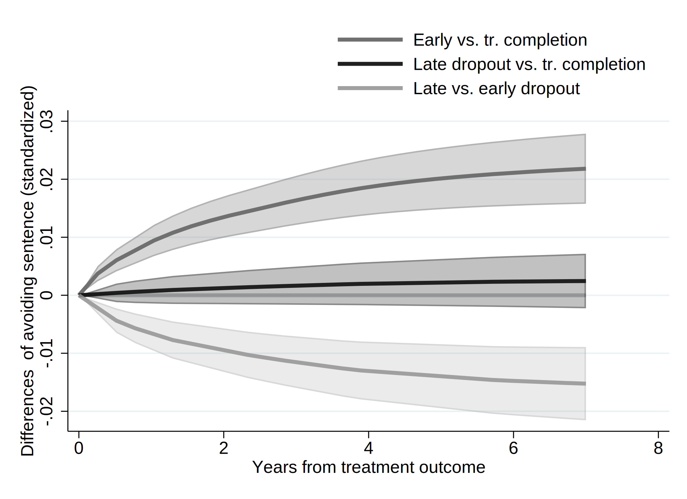
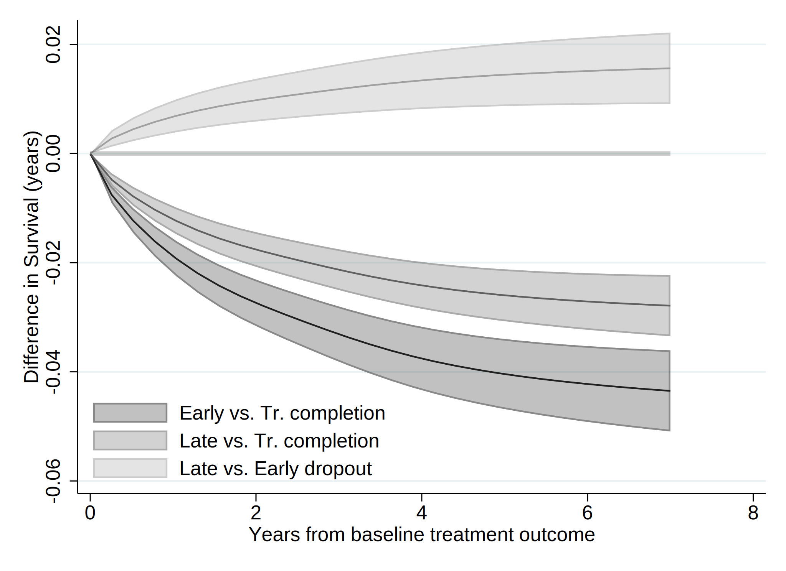
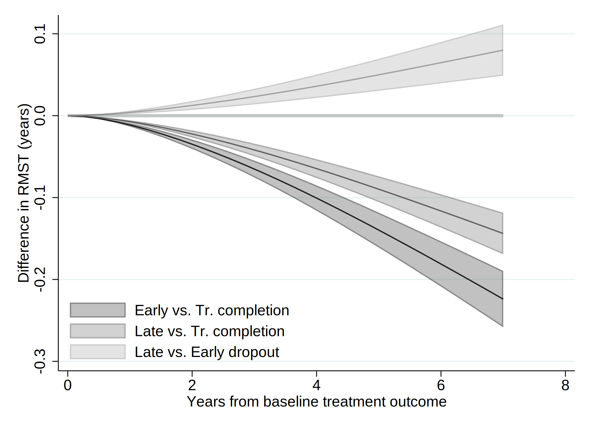

. clear all
. cap noi which tabout
c:\ado\plus\t\tabout.ado
*! 2.0.8 Ian Watson 15mar2019
*! tabout version 3 (beta) available at: http://tabout.net.au
. if _rc==111 {
. cap noi ssc install tabout
. }
. cap noi which pathutil
c:\ado\plus\p\pathutil.ado
*! version 2.2.0 19nov2020 daniel klein
. if _rc==111 {
. cap noi net install pathutil, from("http://fmwww.bc.edu/repec/bocode/p/")
. }
. cap noi which pathutil
c:\ado\plus\p\pathutil.ado
*! version 2.2.0 19nov2020 daniel klein
. if _rc==111 {
. ssc install dirtools
. }
. cap noi which project
c:\ado\plus\p\project.ado
*! version 1.3.1 22dec2013 picard@netbox.com
. if _rc==111 {
. ssc install project
. }
. cap noi which stipw
c:\ado\plus\s\stipw.ado
*! Version 1.0.0 17Jan2022
. if _rc==111 {
. ssc install stipw
. }
. cap noi which stpm2
c:\ado\plus\s\stpm2.ado
*! version 1.7.5 May2021
. if _rc==111 {
. ssc install stpm2
. }
. cap noi which rcsgen
c:\ado\plus\r\rcsgen.ado
*! version 1.5.9 13FEB2022
. if _rc==111 {
. ssc install rcsgen
. }
. cap noi which matselrc
c:\ado\plus\m\matselrc.ado
*! NJC 1.1.0 20 Apr 2000 (STB-56: dm79)
. if _rc==111 {
. cap noi net install dm79, from(http://www.stata.com/stb/stb56)
. }
. cap noi which stpm2_standsurv
c:\ado\plus\s\stpm2_standsurv.ado
*! version 1.1.2 12Jun2018
. if _rc==111 {
. cap noi net install stpm2_standsurv.pkg, from(http://fmwww.bc.edu/RePEc/bocode/s)
. }
. cap noi which fs
c:\ado\plus\f\fs.ado
*! NJC 1.0.5 23 November 2006
. if _rc==111 {
. ssc install fs
. }
. cap noi which mkspline2
c:\ado\plus\m\mkspline2.ado
*! version 1.0.0 MLB 04Apr2009
. if _rc==111 {
. ssc install postrcspline
. }
. cap noi which estwrite
c:\ado\plus\e\estwrite.ado
*! version 1.2.4 04sep2009
*! version 1.0.1 15may2007 (renamed from -eststo- to -estwrite-; -append- added)
*! version 1.0.0 29apr2005 Ben Jann (ETH Zurich)
. if _rc==111 {
. ssc install estwrite
. }
.
. cap noi ssc install moremata
checking moremata consistency and verifying not already installed...
the following files already exist and are different:
c:\ado\plus\l\lmoremata.mlib
c:\ado\plus\l\lmoremata10.mlib
c:\ado\plus\l\lmoremata11.mlib
c:\ado\plus\l\lmoremata14.mlib
c:\ado\plus\m\moremata.hlp
c:\ado\plus\m\moremata_source.hlp
c:\ado\plus\m\moremata11_source.hlp
c:\ado\plus\m\mf_mm_quantile.hlp
c:\ado\plus\m\mf_mm_ipolate.hlp
c:\ado\plus\m\mf_mm_collapse.hlp
c:\ado\plus\m\mf_mm_ebal.sthlp
c:\ado\plus\m\mf_mm_density.sthlp
c:\ado\plus\m\mf_mm_hl.hlp
c:\ado\plus\m\mf_mm_mloc.hlp
c:\ado\plus\m\mf_mm_ls.hlp
c:\ado\plus\m\mf_mm_qr.sthlp
no files installed or copied
(no action taken)
Date created: 13:55:18 5 Apr 2023.
Get the folder
E:\Mi unidad\Alvacast\SISTRAT 2022 (github)
Fecha: 5 Apr 2023, considerando un SO Windows para el usuario: andre
Path data= ;
Tiempo: 5 Apr 2023, considerando un SO Windows
The file is located and named as: E:\Mi unidad\Alvacast\SISTRAT 2022 (github)fiscalia_mariel_feb_2023_match_SENDA_miss_pris.dta
=============================================================================
=============================================================================
We open the files
. use "fiscalia_mariel_feb_2023_match_SENDA_miss_pris.dta", clear
.
. **What Mariel requested
.
. frame create original
. frame original: use "fiscalia_mariel_jan_2023_match_SENDA.dta", clear
. frame original:
.
. frlink 1:1 hash_key, frame(original)
(all observations in frame default matched)
. frget origen_ingreso_mod, from(original)
(1 variable copied from linked frame)
.
. drop if origen_ingreso_mod ==4
(6,712 observations deleted)
.
. *b) select 10% of the data
. /*
> set seed 2125
> sample 10
> */
.
.
. fs mariel_ags_*.do
mariel_ags_b.do mariel_ags_b_m2.do mariel_ags_b_m1.do mariel_ags_b_m3.do
. di "`r(dofile)'"
.
. *tostring tr_modality, gen(tr_modality_str)
.
. cap noi encode tr_modality_str, gen(newtr_modality)
variable tr_modality_str not found
. cap confirm variable newtr_modality
. if !_rc {
. cap noi drop tr_modality
. cap noi rename newtr_modality tr_modality
. }
.
. cap noi encode condicion_ocupacional_cor, gen(newcondicion_ocupacional_cor)
not possible with numeric variable
. cap confirm variable newcondicion_ocupacional_cor
. if !_rc {
. cap noi drop condicion_ocupacional_cor
. cap noi rename newcondicion_ocupacional_cor condicion_ocupacional_cor
. }
.
. cap noi encode tipo_centro, gen(newtipo_centro)
variable tipo_centro not found
. cap confirm variable newtipo_centro
. if !_rc {
. cap noi drop tipo_centro
. cap noi rename newtipo_centro tipo_centro
. }
.
. cap noi encode sus_ini_mod_mvv, gen(newsus_ini_mod_mvv)
. cap confirm variable newsus_ini_mod_mvv
. if !_rc {
. cap noi drop sus_ini_mod_mvv
. cap noi rename newsus_ini_mod_mvv sus_ini_mod_mvv
. }
.
. cap noi encode dg_trs_cons_sus_or, gen(newdg_trs_cons_sus_or)
. cap confirm variable newdg_trs_cons_sus_or
. if !_rc {
. cap noi drop dg_trs_cons_sus_or
. cap noi rename newdg_trs_cons_sus_or dg_trs_cons_sus_or
. }
.
. cap noi encode con_quien_vive_joel, gen(newcon_quien_vive_joel)
. cap confirm variable newcon_quien_vive_joel
. if !_rc {
. cap noi drop con_quien_vive_joel
. cap noi rename newcon_quien_vive_joel con_quien_vive_joel
. }
.
.
. *order and encode
. cap noi decode freq_cons_sus_prin, gen(str_freq_cons_sus_prin)
. cap confirm variable str_freq_cons_sus_prin
. if !_rc {
. cap noi drop freq_cons_sus_prin
. label def freq_cons_sus_prin2 1 "Less than 1 day a week" 2 "1 day a week or more" 3 "2 to 3 days a week" 4 "4 to 6 days a week" 5 "Daily"
. encode str_freq_cons_sus_prin, gen(freq_cons_sus_prin) label (freq_cons_sus_prin2)
. }
. cap noi decode dg_trs_cons_sus_or, gen(str_dg_trs_cons_sus_or)
. cap confirm variable str_dg_trs_cons_sus_or
. if !_rc {
. cap noi drop dg_trs_cons_sus_or
. cap label def dg_trs_cons_sus_or2 1 "Hazardous consumption" 2 "Drug dependence"
. encode str_dg_trs_cons_sus_or, gen(dg_trs_cons_sus_or) label (dg_trs_cons_sus_or2)
. }
.
.
. cap noi encode escolaridad_rec, gen(esc_rec)
not possible with numeric variable
. cap noi encode sex, generate(sex_enc)
. cap noi encode sus_principal_mod, gen(sus_prin_mod)
not possible with numeric variable
. cap noi encode freq_cons_sus_prin, gen(fr_sus_prin)
not possible with numeric variable
. cap noi encode compromiso_biopsicosocial, gen(comp_biosoc)
variable compromiso_biopsicosocial not found
. cap noi encode tenencia_de_la_vivienda_mod, gen(ten_viv)
not possible with numeric variable
. *encode dg_cie_10_rec, generate(dg_cie_10_mental_h) *already numeric
. cap noi encode dg_trs_cons_sus_or, gen(sud_severity_icd10)
not possible with numeric variable
. cap noi encode macrozona, gen(macrozone)
not possible with numeric variable
.
. /*
> *2023-02-28, not done in R
> cap noi recode numero_de_hijos_mod (0=0 "No children") (1/10=1 "Children"), gen(newnumero_de_hijos_mod)
> cap confirm variable newnumero_de_hijos_mod
> if !_rc {
> drop numero_de_hijos_mod
> cap noi rename newnumero_de_hijos_mod numero_de_hijos_mod
> }
> */
.
. *same for condemnatory sentence
. mkspline2 rc_x = edad_al_ing_1, cubic nknots(4) displayknots
| knot1 knot2 knot3 knot4
-------------+--------------------------------------------
edad_al_in~1 | 21.21096 30.0137 38.92329 56.38466
.
. *not necessary: 2023-02-28
. *gen motivodeegreso_mod_imp_rec3 = 1
. *replace motivodeegreso_mod_imp_rec3 = 2 if strpos(motivodeegreso_mod_imp_rec,"Early")>0
. *replace motivodeegreso_mod_imp_rec3 = 3 if strpos(motivodeegreso_mod_imp_rec,"Late")>0
.
. *encode policonsumo, generate(policon) *already numeric
. // Generate a restricted cubic spline variable for a variable "x" with 4 knots
. *https://chat.openai.com/chat/4a9396cd-2caa-4a2e-b5f4-ed2c2d0779b3
. *https://www.stata.com/meeting/nordic-and-baltic15/abstracts/materials/sweden15_oskarsson.pdf
. *mkspline xspline = edad_al_ing_1, cubic nknots(4)
. *gen rcs_x = xspline1*xspline2 xspline3 xspline4
.
. *https://www.statalist.org/forums/forum/general-stata-discussion/general/1638622-comparing-cox-proportional-hazard-linear-and-non-linear-restricted-cubic-spline-models-using-likelihood-ratio-test
.
=============================================================================
=============================================================================
Reset-time
. *if missing offender_d (status) , means that there was a record and the time is the time of offense
.
. *set the indicator
. gen event=0
. replace event=1 if !missing(offender_d)
(4,657 real changes made)
. *replace event=1 if !missing(sex)
.
. *correct time to event if _st=0
. gen diff= age_offending_imp-edad_al_egres_imp
. gen diffc= cond(diff<0.001, 0.001, diff)
. drop diff
. rename diffc diff
. lab var diff "Time to offense leading to condemnatory sentence"
.
. *age time
. *stset age_offending_imp, fail(event ==1) enter(edad_al_egres_imp)
. *reset time
. stset diff, failure(event ==1)
failure event: event == 1
obs. time interval: (0, diff]
exit on or before: failure
------------------------------------------------------------------------------
64,151 total observations
0 exclusions
------------------------------------------------------------------------------
64,151 observations remaining, representing
4,657 failures in single-record/single-failure data
275,434.84 total analysis time at risk and under observation
at risk from t = 0
earliest observed entry t = 0
last observed exit t = 10.75828
.
. stdescribe, weight
failure _d: event == 1
analysis time _t: diff
|-------------- per subject --------------|
Category total mean min median max
------------------------------------------------------------------------------
no. of subjects 64151
no. of records 64151 1 1 1 1
(first) entry time 0 0 0 0
(final) exit time 4.293539 .001 3.989071 10.75828
subjects with gap 0
time on gap if gap 0
time at risk 275434.84 4.293539 .001 3.989071 10.75828
failures 4657 .0725943 0 0 1
------------------------------------------------------------------------------
We calculate the incidence rate.
. stsum, by (motivodeegreso_mod_imp_rec)
failure _d: event == 1
analysis time _t: diff
| Incidence Number of |------ Survival time -----|
motivo~c | Time at risk rate subjects 25% 50% 75%
---------+---------------------------------------------------------------------
Treatmen | 67,995.6355 .0086182 16995 . . .
Treatmen | 61,255.505 .0260222 14679 . . .
Treatmen | 146,183.7 .0169444 32477 . . .
---------+---------------------------------------------------------------------
Total | 275,434.84 .0169078 64151 . . .
. *Micki Hill & Paul C Lambert & Michael J Crowther, 2021. "Introducing stipw: inverse probability weighted parametric survival models," London Stata Conference 2021 15, Stata Users Group.
. *https://view.officeapps.live.com/op/view.aspx?src=http%3A%2F%2Ffmwww.bc.edu%2Frepec%2Fusug2021%2Fusug21_hill.pptx&wdOrigin=BROWSELINK
.
. *Treatment variable should be a binary variable with values 0 and 1.
. gen motivodeegreso_mod_imp_rec2 = 0
. replace motivodeegreso_mod_imp_rec2 = 1 if motivodeegreso_mod_imp_rec==2
(14,679 real changes made)
. replace motivodeegreso_mod_imp_rec2 = 1 if motivodeegreso_mod_imp_rec==3
(32,477 real changes made)
.
. recode motivodeegreso_mod_imp_rec2 (0=1 "Tr Completion") (1=0 "Tr Non-completion (Late & Early)"), gen(caus_disch_mod_imp_rec)
(64151 differences between motivodeegreso_mod_imp_rec2 and caus_disch_mod_imp_rec)
.
. cap noi gen motegr_dum3= motivodeegreso_mod_imp_rec2
. replace motegr_dum3 = 0 if motivodeegreso_mod_imp_rec==2
(14,679 real changes made)
. cap noi gen motegr_dum2= motivodeegreso_mod_imp_rec2
. replace motegr_dum2 = 0 if motivodeegreso_mod_imp_rec==3
(32,477 real changes made)
. lab var motegr_dum3 "Baseline treatment outcome(dich, 1= Late Dropout)"
. lab var motegr_dum2 "Baseline treatment outcome(dich, 1= Early Dropout)"
. lab var caus_disch_mod_imp_rec "Baseline treatment outcome(dich)"
.
.
. *Factor variables not allowed for tvc() option. Create your own dummy varibles.
. gen motivodeegreso_mod_imp_rec_earl = 1
. replace motivodeegreso_mod_imp_rec_earl = 0 if motivodeegreso_mod_imp_rec==1
(16,995 real changes made)
. replace motivodeegreso_mod_imp_rec_earl = 0 if motivodeegreso_mod_imp_rec==3
(32,477 real changes made)
.
. gen motivodeegreso_mod_imp_rec_late = 1
. replace motivodeegreso_mod_imp_rec_late = 0 if motivodeegreso_mod_imp_rec==1
(16,995 real changes made)
. replace motivodeegreso_mod_imp_rec_late = 0 if motivodeegreso_mod_imp_rec==2
(14,679 real changes made)
.
. *recode motivodeegreso_mod_imp_rec_earl (1=1 "Early dropout") (0=0 "Tr. comp & Late dropout"), gen(newmotivodeegreso_mod_imp_rec_e)
. *recode motivodeegreso_mod_imp_rec_late (1=1 "Late dropout") (0=0 "Tr. comp & Early dropout"), gen(newmotivodeegreso_mod_imp_rec_l)
.
. lab var motivodeegreso_mod_imp_rec_earl "Baseline treatment outcome- Early dropout(dich)"
. lab var motivodeegreso_mod_imp_rec_late "Baseline treatment outcome- Late dropout(dich)"
.
. cap noi rename motivodeegreso_mod_imp_rec_late mot_egr_late
. cap noi rename motivodeegreso_mod_imp_rec_earl mot_egr_early
=============================================================================
=============================================================================
We generated a graph with every type of treatment and the Nelson-Aalen estimate.
. sts graph, na by (motivodeegreso_mod_imp_rec) ci ///
> title("Comission of an offense (imprisonment)") ///
> subtitle("Nelson-Aalen Cum Hazards w/ Confidence Intervals 95%") ///
> risktable(, size(*.5) order(1 "Tr Completion" 2 "Early Disch" 3 "Late Disch")) ///
> ytitle("Cum. Hazards") ylabel(#8) ///
> xtitle("Years since tr. outcome") xlabel(#8) ///
> note("Source: nDP, SENDA's SUD Treatments & POs Office Data period 2010-2019 ") ///
> legend(rows(3)) ///
> legend(cols(4)) ///
> graphregion(color(white) lwidth(large)) bgcolor(white) ///
> plotregion(fcolor(white)) graphregion(fcolor(white) ) /// //text(.5 1 "IR = <0.001") ///
> legend(order(1 "95CI Tr Completion" 2 "Tr Completion" 3 "95CI Early Tr Disch" 4 "Early Tr Disch " 5 "95CI Late Tr Disch" 6 "Late Tr Disch" )size(*.5)region(lstyle(none)) region(c(none)) nobox)
failure _d: event == 1
analysis time _t: diff
(note: named style large not found in class linewidth, default attributes used)
(note: linewidth not found in scheme, default attributes used)
(note: named style large not found in class linewidth, default attributes used)
(note: linewidth not found in scheme, default attributes used)
. graph save "`c(pwd)'\_figs\tto_2023_pris_m3.gph", replace
(note: file E:\Mi unidad\Alvacast\SISTRAT 2022 (github)\_figs\tto_2023_pris_m3.gph not found)
(file E:\Mi unidad\Alvacast\SISTRAT 2022 (github)\_figs\tto_2023_pris_m3.gph saved)
=============================================================================
=============================================================================
. /*
> vars_cov<-c("motivodeegreso_mod_imp_rec", "tr_modality", "edad_al_ing_1", "sex", "edad_ini_cons", "escolaridad_rec", "sus_principal_mod", "freq_cons_sus_prin", "condicion_ocupacional_corr", "policonsumo", "num_hij
> os_mod_joel_bin", "tenencia_de_la_vivienda_mod", "macrozona", "n_off_vio", "n_off_acq", "n_off_sud", "n_off_oth", "dg_cie_10_rec", "dg_trs_cons_sus_or", "clas_r", "porc_pobr", "sus_ini_mod_mvv", "ano_nac_corr", "
> con_quien_vive_joel", "fis_comorbidity_icd_10")
> */
.
. global covs "i.motivodeegreso_mod_imp_rec i.tr_modality i.sex_enc edad_ini_cons i.escolaridad_rec i.sus_principal_mod i.freq_cons_sus_prin i.condicion_ocupacional_cor i.policonsumo i.num_hijos_mod_joel_bin i.tenen
> cia_de_la_vivienda_mod i.macrozona i.n_off_vio i.n_off_acq i.n_off_sud i.n_off_oth i.dg_cie_10_rec i.dg_trs_cons_sus_or i.clas_r porc_pobr i.sus_ini_mod_mvv ano_nac_corr i.con_quien_vive_joel i.fis_comorbidity_icd
> _10"
.
. // VERIFY FIRST SPLINE VARIABLE IS THE ORIGINAL VARIABLE
. assert float(edad_al_ing_1) == float(rc_x1)
.
. // MODEL WITH FULL SPLINE
. qui noi stcox $covs rc*
failure _d: event == 1
analysis time _t: diff
Iteration 0: log likelihood = -49813.739
Iteration 1: log likelihood = -47555.276
Iteration 2: log likelihood = -47041.084
Iteration 3: log likelihood = -47038.61
Iteration 4: log likelihood = -47038.607
Refining estimates:
Iteration 0: log likelihood = -47038.607
Cox regression -- Breslow method for ties
No. of subjects = 64,151 Number of obs = 64,151
No. of failures = 4,657
Time at risk = 275434.84
LR chi2(51) = 5550.26
Log likelihood = -47038.607 Prob > chi2 = 0.0000
-------------------------------------------------------------------------------------------------------------
_t | Haz. Ratio Std. Err. z P>|z| [95% Conf. Interval]
--------------------------------------------+----------------------------------------------------------------
motivodeegreso_mod_imp_rec |
Treatment non-completion (Early) | 1.915161 .1051331 11.84 0.000 1.719802 2.132712
Treatment non-completion (Late) | 1.572378 .0743034 9.58 0.000 1.433286 1.724967
|
tr_modality |
Residential | 1.154549 .0448811 3.70 0.000 1.069851 1.245952
|
sex_enc |
Women | .5788861 .0268376 -11.79 0.000 .5286044 .6339506
edad_ini_cons | .9720882 .0042597 -6.46 0.000 .9637751 .9804731
|
escolaridad_rec |
2-Completed high school or less | .871841 .0285617 -4.19 0.000 .8176205 .9296572
1-More than high school | .6413035 .0368039 -7.74 0.000 .5730781 .7176513
|
sus_principal_mod |
Cocaine hydrochloride | 1.235405 .0776451 3.36 0.001 1.092224 1.397357
Cocaine paste | 1.76107 .090471 11.02 0.000 1.592385 1.947624
Marijuana | 1.145944 .0868909 1.80 0.072 .9876915 1.329553
Other | 1.325669 .1928115 1.94 0.053 .9968559 1.762941
|
freq_cons_sus_prin |
1 day a week or more | .9191562 .0987474 -0.78 0.433 .7446334 1.134583
2 to 3 days a week | .9477803 .0813365 -0.62 0.532 .8010496 1.121388
4 to 6 days a week | .9751356 .0863352 -0.28 0.776 .8197898 1.159919
Daily | 1.024468 .0868956 0.28 0.776 .8675595 1.209755
|
condicion_ocupacional_corr |
Inactive | 1.097902 .0725978 1.41 0.158 .9644479 1.249823
Looking for a job for the first time | 1.289342 .3160068 1.04 0.300 .7975274 2.084445
No activity | 1.264291 .0856365 3.46 0.001 1.107111 1.443787
Not seeking for work | 1.292901 .1371722 2.42 0.015 1.050161 1.59175
Unemployed | 1.216862 .0444917 5.37 0.000 1.132711 1.307264
|
1.policonsumo | 1.006615 .0457096 0.15 0.885 .9208971 1.100312
1.num_hijos_mod_joel_bin | 1.13435 .0409025 3.50 0.000 1.05695 1.217418
|
tenencia_de_la_vivienda_mod |
Others | 1.012815 .1367695 0.09 0.925 .7772932 1.319701
Owner/Transferred dwellings/Pays Dividends | .9717316 .1135659 -0.25 0.806 .7727993 1.221873
Renting | .9763406 .1148104 -0.20 0.839 .7753652 1.229409
Stays temporarily with a relative | .9565768 .1119934 -0.38 0.705 .7604374 1.203306
|
macrozona |
North | 1.392578 .0541767 8.51 0.000 1.290341 1.502916
South | 1.544009 .0917286 7.31 0.000 1.374296 1.734679
|
n_off_vio |
1 | 1.47378 .0542164 10.54 0.000 1.371258 1.583967
|
n_off_acq |
1 | 2.792039 .0914795 31.34 0.000 2.618378 2.977218
|
n_off_sud |
1 | 1.370384 .0479864 9.00 0.000 1.279487 1.467738
|
n_off_oth |
1 | 1.748029 .0613547 15.91 0.000 1.631819 1.872515
|
dg_cie_10_rec |
Diagnosis unknown (under study) | 1.106762 .0495988 2.26 0.024 1.013697 1.208371
With psychiatric comorbidity | 1.10035 .039218 2.68 0.007 1.026108 1.179965
|
dg_trs_cons_sus_or |
Drug dependence | 1.052865 .0420546 1.29 0.197 .9735835 1.138603
|
clas_r |
Mixta | .9484637 .0550608 -0.91 0.362 .8464597 1.06276
Rural | .8430592 .0566926 -2.54 0.011 .7389549 .9618298
|
porc_pobr | 1.649932 .3743307 2.21 0.027 1.057666 2.573853
|
sus_ini_mod_mvv |
Cocaine hydrochloride | 1.073172 .0744211 1.02 0.309 .9367882 1.229413
Cocaine paste | 1.280941 .0775393 4.09 0.000 1.137636 1.442298
Marijuana | 1.157534 .0397279 4.26 0.000 1.08223 1.238078
Other | 1.374109 .1222705 3.57 0.000 1.154196 1.635921
|
ano_nac_corr | .8423784 .0071188 -20.30 0.000 .8285408 .8564471
|
con_quien_vive_joel |
Family of origin | .874361 .0500596 -2.35 0.019 .7815507 .9781927
Others | 1.099452 .0729505 1.43 0.153 .9653782 1.252146
With couple/children | .9289887 .0537086 -1.27 0.203 .8294669 1.040451
|
fis_comorbidity_icd_10 |
Diagnosis unknown (under study) | 1.098456 .0350416 2.94 0.003 1.031878 1.169329
One or more | .8593869 .0675792 -1.93 0.054 .7366364 1.002592
|
rc_x1 | .8431624 .0091335 -15.75 0.000 .8254498 .8612551
rc_x2 | .8698746 .0318948 -3.80 0.000 .8095554 .9346882
rc_x3 | 1.337597 .1308992 2.97 0.003 1.104143 1.620411
-------------------------------------------------------------------------------------------------------------
. estat ic
Akaike's information criterion and Bayesian information criterion
-----------------------------------------------------------------------------
Model | N ll(null) ll(model) df AIC BIC
-------------+---------------------------------------------------------------
. | 64,151 -49813.74 -47038.61 51 94179.21 94641.73
-----------------------------------------------------------------------------
Note: BIC uses N = number of observations. See [R] BIC note.
. estimates store full_spline
. scalar ll_1= e(ll)
. // MODEL WITH ONLY LINEAR TERM
. qui noi stcox $covs rc_x1
failure _d: event == 1
analysis time _t: diff
Iteration 0: log likelihood = -49813.739
Iteration 1: log likelihood = -47545.303
Iteration 2: log likelihood = -47056.778
Iteration 3: log likelihood = -47055.168
Iteration 4: log likelihood = -47055.168
Refining estimates:
Iteration 0: log likelihood = -47055.168
Cox regression -- Breslow method for ties
No. of subjects = 64,151 Number of obs = 64,151
No. of failures = 4,657
Time at risk = 275434.84
LR chi2(49) = 5517.14
Log likelihood = -47055.168 Prob > chi2 = 0.0000
-------------------------------------------------------------------------------------------------------------
_t | Haz. Ratio Std. Err. z P>|z| [95% Conf. Interval]
--------------------------------------------+----------------------------------------------------------------
motivodeegreso_mod_imp_rec |
Treatment non-completion (Early) | 1.916644 .1052575 11.85 0.000 1.721058 2.134457
Treatment non-completion (Late) | 1.575014 .0744233 9.61 0.000 1.435698 1.727849
|
tr_modality |
Residential | 1.148199 .0446143 3.56 0.000 1.064004 1.239058
|
sex_enc |
Women | .5772446 .0267253 -11.87 0.000 .5271704 .6320753
edad_ini_cons | .9718555 .004216 -6.58 0.000 .9636273 .980154
|
escolaridad_rec |
2-Completed high school or less | .8874692 .0289479 -3.66 0.000 .8325079 .946059
1-More than high school | .6641703 .0379064 -7.17 0.000 .5938798 .7427802
|
sus_principal_mod |
Cocaine hydrochloride | 1.265629 .0795141 3.75 0.000 1.118997 1.431475
Cocaine paste | 1.819895 .0932258 11.69 0.000 1.646049 2.012102
Marijuana | 1.149714 .0873143 1.84 0.066 .9907086 1.33424
Other | 1.331386 .1939067 1.97 0.049 1.000766 1.771231
|
freq_cons_sus_prin |
1 day a week or more | .9178943 .0986126 -0.80 0.425 .7436099 1.133027
2 to 3 days a week | .9468483 .0812643 -0.64 0.525 .8002488 1.120304
4 to 6 days a week | .9706919 .0859516 -0.34 0.737 .8160378 1.154656
Daily | 1.021615 .08667 0.25 0.801 .8651163 1.206424
|
condicion_ocupacional_corr |
Inactive | 1.072271 .0706502 1.06 0.290 .9423676 1.220082
Looking for a job for the first time | 1.233561 .3022352 0.86 0.392 .7631455 1.993948
No activity | 1.241702 .0840164 3.20 0.001 1.087485 1.417789
Not seeking for work | 1.273381 .1350632 2.28 0.023 1.034366 1.567625
Unemployed | 1.210063 .0442409 5.22 0.000 1.126386 1.299956
|
1.policonsumo | 1.016205 .0461484 0.35 0.723 .9296643 1.110802
1.num_hijos_mod_joel_bin | 1.165737 .0417546 4.28 0.000 1.086706 1.250516
|
tenencia_de_la_vivienda_mod |
Others | 1.004759 .1357143 0.04 0.972 .7710608 1.309287
Owner/Transferred dwellings/Pays Dividends | .9594135 .1121148 -0.35 0.723 .7630208 1.206355
Renting | .976404 .1148172 -0.20 0.839 .7754167 1.229487
Stays temporarily with a relative | .9548118 .1117828 -0.39 0.693 .7590406 1.201076
|
macrozona |
North | 1.379738 .0536388 8.28 0.000 1.278513 1.488977
South | 1.549741 .0920381 7.38 0.000 1.379453 1.741051
|
n_off_vio |
1 | 1.468247 .0540297 10.44 0.000 1.366079 1.578055
|
n_off_acq |
1 | 2.792309 .0915648 31.31 0.000 2.618491 2.977666
|
n_off_sud |
1 | 1.379012 .0482539 9.18 0.000 1.287606 1.476906
|
n_off_oth |
1 | 1.75145 .0614488 15.97 0.000 1.63506 1.876125
|
dg_cie_10_rec |
Diagnosis unknown (under study) | 1.10808 .0496675 2.29 0.022 1.014887 1.209831
With psychiatric comorbidity | 1.105293 .0393794 2.81 0.005 1.030744 1.185234
|
dg_trs_cons_sus_or |
Drug dependence | 1.058459 .0422618 1.42 0.155 .978786 1.144618
|
clas_r |
Mixta | .9533425 .0553233 -0.82 0.410 .85085 1.068181
Rural | .8469274 .0569594 -2.47 0.013 .7423339 .9662579
|
porc_pobr | 1.629202 .3692003 2.15 0.031 1.044914 2.540208
|
sus_ini_mod_mvv |
Cocaine hydrochloride | 1.081413 .0749949 1.13 0.259 .943978 1.238858
Cocaine paste | 1.288382 .077976 4.19 0.000 1.144268 1.450646
Marijuana | 1.151281 .039532 4.10 0.000 1.076349 1.231429
Other | 1.385277 .1232896 3.66 0.000 1.163535 1.649276
|
ano_nac_corr | .8420401 .0071115 -20.36 0.000 .8282165 .8560944
|
con_quien_vive_joel |
Family of origin | .8708429 .0499278 -2.41 0.016 .778284 .9744096
Others | 1.099976 .0730121 1.44 0.151 .9657928 1.252803
With couple/children | .9359708 .0540871 -1.15 0.252 .8357449 1.048216
|
fis_comorbidity_icd_10 |
Diagnosis unknown (under study) | 1.09727 .0350058 2.91 0.004 1.030761 1.16807
One or more | .8485951 .066733 -2.09 0.037 .7273819 .9900076
|
rc_x1 | .8157259 .0070079 -23.71 0.000 .8021056 .8295774
-------------------------------------------------------------------------------------------------------------
. estat ic
Akaike's information criterion and Bayesian information criterion
-----------------------------------------------------------------------------
Model | N ll(null) ll(model) df AIC BIC
-------------+---------------------------------------------------------------
. | 64,151 -49813.74 -47055.17 49 94208.34 94652.72
-----------------------------------------------------------------------------
Note: BIC uses N = number of observations. See [R] BIC note.
. scalar ll_2= e(ll)
. estimates store linear_term
.
. lrtest full_spline linear_term
Likelihood-ratio test LR chi2(2) = 33.12
(Assumption: linear_term nested in full_spline) Prob > chi2 = 0.0000
.
. scalar ll_diff= round(`=scalar(ll_1)'-`=scalar(ll_2)',.01)
. di "Log-likelihood difference (spline - linear): `=scalar(ll_diff)'"
Log-likelihood difference (spline - linear): 16.56
.
. * the presence of censored observations makes it difficult to decide further among them. (This is partly due to the fact that both the Cox model and the parametric survival models assume that censoring is orthogon
> al to survival time, a mathematically handy assumption that is often demonstrably and seriously in error, and the actual data generation process for survival is often too unknown or too messy to simulate.) So in t
> his context, reliance on LR tests or IC statistics is a fallback position.
Log-likelihood difference (spline - linear): 16.56
Nevetheless, we chose the model with spline terms due to linearity over a better fit.
=============================================================================
=============================================================================
In view of nonproportional hazards, we explored different shapes of time-dependent effects and baseline hazards.
. *______________________________________________
. *______________________________________________
. * ADJUSTED ROYSTON PARMAR - NO STAGGERED ENTRY, BINARY TREATMENT (1-DROPOUT VS. 0-COMPLETION)
.
. /*
> vars_cov<-c("motivodeegreso_mod_imp_rec", "tr_modality", "edad_al_ing_1", "sex", "edad_ini_cons", "escolaridad_rec", "sus_principal_mod", "freq_cons_sus_prin", "condicion_ocupacional_corr", "policonsumo", "num_hij
> os_mod_joel_bin", "tenencia_de_la_vivienda_mod", "macrozona", "n_off_vio", "n_off_acq", "n_off_sud", "n_off_oth", "dg_cie_10_rec", "dg_trs_cons_sus_or", "clas_r", "porc_pobr", "sus_ini_mod_mvv", "ano_nac_corr", "
> con_quien_vive_joel", "fis_comorbidity_icd_10")
> */
.
. cap noi tab tr_modality, gen(tr_mod)
Treatment |
Modality | Freq. Percent Cum.
------------+-----------------------------------
Ambulatory | 54,439 84.86 84.86
Residential | 9,712 15.14 100.00
------------+-----------------------------------
Total | 64,151 100.00
. cap noi tab sex_enc, gen(sex_dum)
Sex | Freq. Percent Cum.
------------+-----------------------------------
Men | 49,362 76.95 76.95
Women | 14,789 23.05 100.00
------------+-----------------------------------
Total | 64,151 100.00
. cap noi tab escolaridad_rec, gen(esc)
Educational Attainment | Freq. Percent Cum.
-----------------------------------+-----------------------------------
3-Completed primary school or less | 17,702 27.59 27.59
2-Completed high school or less | 35,707 55.66 83.26
1-More than high school | 10,742 16.74 100.00
-----------------------------------+-----------------------------------
Total | 64,151 100.00
. cap noi tab sus_principal_mod, gen(sus_prin)
Primary Substance |
(admission to |
treatment) | Freq. Percent Cum.
----------------------+-----------------------------------
Alcohol | 20,825 32.46 32.46
Cocaine hydrochloride | 12,445 19.40 51.86
Cocaine paste | 25,794 40.21 92.07
Marijuana | 3,930 6.13 98.20
Other | 1,157 1.80 100.00
----------------------+-----------------------------------
Total | 64,151 100.00
. cap noi tab freq_cons_sus_prin, gen(fr_cons_sus_prin)
Frequency of Substance |
Use (Primary |
Substance) | Freq. Percent Cum.
-----------------------+-----------------------------------
Less than 1 day a week | 2,889 4.50 4.50
1 day a week or more | 4,002 6.24 10.74
2 to 3 days a week | 17,851 27.83 38.57
4 to 6 days a week | 10,842 16.90 55.47
Daily | 28,567 44.53 100.00
-----------------------+-----------------------------------
Total | 64,151 100.00
. cap noi tab condicion_ocupacional_cor, gen(cond_ocu)
Corrected Occupational Status (f) | Freq. Percent Cum.
-------------------------------------+-----------------------------------
Employed | 31,351 48.87 48.87
Inactive | 6,383 9.95 58.82
Looking for a job for the first time | 139 0.22 59.04
No activity | 3,339 5.20 64.24
Not seeking for work | 680 1.06 65.30
Unemployed | 22,259 34.70 100.00
-------------------------------------+-----------------------------------
Total | 64,151 100.00
. cap noi tab num_hijos_mod_joel_bin, gen(num_hij)
Number of |
Children |
(dichotomiz |
ed) | Freq. Percent Cum.
------------+-----------------------------------
0 | 15,542 24.23 24.23
1 | 48,609 75.77 100.00
------------+-----------------------------------
Total | 64,151 100.00
. cap noi tab tenencia_de_la_vivienda_mod, gen(tenviv)
Housing Situation (Tenure Status) | Freq. Percent Cum.
----------------------------------------+-----------------------------------
Illegal Settlement | 700 1.09 1.09
Others | 1,848 2.88 3.97
Owner/Transferred dwellings/Pays Divide | 24,055 37.50 41.47
Renting | 12,286 19.15 60.62
Stays temporarily with a relative | 25,262 39.38 100.00
----------------------------------------+-----------------------------------
Total | 64,151 100.00
. cap noi tab macrozona, gen(mzone)
Macro |
Administrat |
ive Zone in |
Chile | Freq. Percent Cum.
------------+-----------------------------------
Center | 48,810 76.09 76.09
North | 9,437 14.71 90.80
South | 5,904 9.20 100.00
------------+-----------------------------------
Total | 64,151 100.00
. cap noi tab clas_r, gen(rural)
Socioeconom |
ic |
Classificat |
ion | Freq. Percent Cum.
------------+-----------------------------------
Urbana | 52,995 82.61 82.61
Mixta | 6,132 9.56 92.17
Rural | 5,024 7.83 100.00
------------+-----------------------------------
Total | 64,151 100.00
. cap noi tab sus_ini_mod_mvv, gen(susini)
sus_ini_mod_mvv | Freq. Percent Cum.
----------------------+-----------------------------------
Alcohol | 37,978 59.20 59.20
Cocaine hydrochloride | 3,727 5.81 65.01
Cocaine paste | 2,992 4.66 69.67
Marijuana | 17,928 27.95 97.62
Other | 1,526 2.38 100.00
----------------------+-----------------------------------
Total | 64,151 100.00
. cap noi tab con_quien_vive_joel, gen(cohab)
con_quien_vive_joel | Freq. Percent Cum.
---------------------+-----------------------------------
Alone | 6,088 9.49 9.49
Family of origin | 26,931 41.98 51.47
Others | 5,587 8.71 60.18
With couple/children | 25,545 39.82 100.00
---------------------+-----------------------------------
Total | 64,151 100.00
. cap noi tab fis_comorbidity_icd_10, gen(fis_com)
Physical Comorbidity (ICD-10) | Freq. Percent Cum.
--------------------------------+-----------------------------------
Without physical comorbidity | 25,241 39.35 39.35
Diagnosis unknown (under study) | 34,795 54.24 93.59
One or more | 4,115 6.41 100.00
--------------------------------+-----------------------------------
Total | 64,151 100.00
. cap noi tab dg_cie_10_rec, gen(psy_com)
Psychiatric Comorbidity |
(ICD-10) | Freq. Percent Cum.
--------------------------------+-----------------------------------
Without psychiatric comorbidity | 24,912 38.83 38.83
Diagnosis unknown (under study) | 12,304 19.18 58.01
With psychiatric comorbidity | 26,935 41.99 100.00
--------------------------------+-----------------------------------
Total | 64,151 100.00
. cap noi tab dg_trs_cons_sus_or, gen(dep)
dg_trs_cons_sus_or | Freq. Percent Cum.
----------------------+-----------------------------------
Hazardous consumption | 17,065 26.60 26.60
Drug dependence | 47,086 73.40 100.00
----------------------+-----------------------------------
Total | 64,151 100.00
.
. /*
> *NO LONGER USEFUL
> local varslab "dg_fis_anemia dg_fis_card dg_fis_in_study dg_fis_enf_som dg_fis_ets dg_fis_hep_alc dg_fis_hep_b dg_fis_hep_cro dg_fis_inf dg_fis_otr_cond_fis_ries_vit dg_fis_otr_cond_fis dg_fis_pat_buc dg_fis_pat_g
> es_intrau dg_fis_trau_sec"
> forvalues i = 1/14 {
> local v : word `i' of `varslab'
> di "`v'"
> gen `v'2= 0
> replace `v'2 =1 if `v'==2
> }
> */
.
. global covs_3b "mot_egr_early mot_egr_late i.tr_modality i.sex_enc edad_ini_cons i.escolaridad_rec i.sus_principal_mod i.freq_cons_sus_prin i.condicion_ocupacional_cor i.policonsumo i.num_hijos_mod_joel_bin i.tene
> ncia_de_la_vivienda_mod i.macrozona i.n_off_vio i.n_off_acq i.n_off_sud i.n_off_oth i.dg_cie_10_rec i.dg_trs_cons_sus_or i.clas_r porc_pobr i.sus_ini_mod_mvv ano_nac_corr i.con_quien_vive_joel i.fis_comorbidity_ic
> d_10 rc_x1 rc_x2 rc_x3"
.
. *REALLY NEEDS DUMMY VARS
. global covs_3b_pre_dum "mot_egr_early mot_egr_late tr_mod2 sex_dum2 edad_ini_cons esc1 esc2 sus_prin2 sus_prin3 sus_prin4 sus_prin5 fr_cons_sus_prin2 fr_cons_sus_prin3 fr_cons_sus_prin4 fr_cons_sus_prin5 cond_ocu2
> cond_ocu3 cond_ocu4 cond_ocu5 cond_ocu6 policonsumo num_hij2 tenviv1 tenviv2 tenviv4 tenviv5 mzone2 mzone3 n_off_vio n_off_acq n_off_sud n_off_oth psy_com2 dep2 rural2 rural3 porc_pobr susini2 susini3 susini4 sus
> ini5 ano_nac_corr cohab2 cohab3 cohab4 fis_com2 rc_x1 rc_x2 rc_x3"
.
. forvalues i=1/10 {
2. forvalues j=1/7 {
3. qui noi stpm2 $covs_3b_pre_dum , scale(hazard) df(`i') eform tvc(mot_egr_early mot_egr_late) dftvc(`j')
4. estimates store m_nostag_rp`i'_tvc_`j'
5. }
6. }
Iteration 0: log likelihood = -19814.702
Iteration 1: log likelihood = -19722.244
Iteration 2: log likelihood = -19721.163
Iteration 3: log likelihood = -19721.163
Log likelihood = -19721.163 Number of obs = 64,151
---------------------------------------------------------------------------------------
| exp(b) Std. Err. z P>|z| [95% Conf. Interval]
----------------------+----------------------------------------------------------------
xb |
mot_egr_early | 1.986546 .1142144 11.94 0.000 1.774842 2.223502
mot_egr_late | 1.635898 .0821038 9.81 0.000 1.482639 1.804999
tr_mod2 | 1.156431 .0449394 3.74 0.000 1.071623 1.247952
sex_dum2 | .5800117 .0268008 -11.79 0.000 .5297914 .6349925
edad_ini_cons | .9720277 .0042595 -6.47 0.000 .963715 .9804122
esc1 | 1.562438 .0896507 7.78 0.000 1.396246 1.748412
esc2 | 1.359086 .0729703 5.71 0.000 1.223335 1.509901
sus_prin2 | 1.230324 .0772932 3.30 0.001 1.087788 1.391538
sus_prin3 | 1.753379 .0899741 10.94 0.000 1.585611 1.938898
sus_prin4 | 1.141228 .0865053 1.74 0.081 .9836738 1.324017
sus_prin5 | 1.322702 .1923583 1.92 0.054 .9946569 1.758939
fr_cons_sus_prin2 | .922156 .0990639 -0.75 0.451 .7470727 1.138272
fr_cons_sus_prin3 | .9517872 .0816707 -0.58 0.565 .8044521 1.126107
fr_cons_sus_prin4 | .9785704 .086624 -0.24 0.807 .8227026 1.163969
fr_cons_sus_prin5 | 1.030382 .0873693 0.35 0.724 .8726138 1.216674
cond_ocu2 | 1.105052 .073016 1.51 0.131 .9708223 1.257841
cond_ocu3 | 1.287478 .3155776 1.03 0.303 .7963411 2.081519
cond_ocu4 | 1.280949 .0866506 3.66 0.000 1.121894 1.462554
cond_ocu5 | 1.303321 .1381981 2.50 0.012 1.058751 1.604386
cond_ocu6 | 1.219856 .0445828 5.44 0.000 1.135532 1.310443
policonsumo | 1.008288 .0457146 0.18 0.856 .9225549 1.101989
num_hij2 | 1.133274 .0408456 3.47 0.001 1.05598 1.216225
tenviv1 | 1.024153 .119653 0.20 0.838 .8145499 1.287691
tenviv2 | 1.036937 .0824381 0.46 0.648 .8873209 1.211782
tenviv4 | 1.005131 .043946 0.12 0.907 .9225859 1.095062
tenviv5 | .9842535 .034487 -0.45 0.651 .9189289 1.054222
mzone2 | 1.38904 .0540077 8.45 0.000 1.28712 1.499031
mzone3 | 1.540829 .0914684 7.28 0.000 1.37159 1.730949
n_off_vio | 1.482479 .0545983 10.69 0.000 1.379239 1.593447
n_off_acq | 2.819996 .0925765 31.58 0.000 2.644264 3.007407
n_off_sud | 1.375112 .0482069 9.09 0.000 1.283801 1.472917
n_off_oth | 1.757546 .0618103 16.03 0.000 1.640481 1.882965
psy_com2 | 1.045749 .0418878 1.12 0.264 .9667904 1.131156
dep2 | 1.052187 .0420123 1.27 0.203 .9729835 1.137837
rural2 | .9482424 .055026 -0.92 0.360 .8463006 1.062464
rural3 | .8456036 .0568289 -2.50 0.013 .7412449 .9646548
porc_pobr | 1.653054 .3752219 2.21 0.027 1.059437 2.579281
susini2 | 1.067 .073948 0.94 0.349 .931477 1.22224
susini3 | 1.289882 .0780756 4.21 0.000 1.145585 1.452354
susini4 | 1.16377 .0399405 4.42 0.000 1.088063 1.244745
susini5 | 1.3797 .1227784 3.62 0.000 1.158876 1.642602
ano_nac_corr | .8615289 .0071788 -17.89 0.000 .8475729 .8757146
cohab2 | .8744326 .0500701 -2.34 0.019 .7816034 .9782869
cohab3 | 1.098858 .0729023 1.42 0.155 .9648717 1.251449
cohab4 | .9274166 .0536326 -1.30 0.193 .8280371 1.038723
fis_com2 | 1.13245 .0349072 4.04 0.000 1.066059 1.202976
rc_x1 | .8625639 .0092643 -13.77 0.000 .844596 .8809141
rc_x2 | .8681091 .031827 -3.86 0.000 .8079179 .9327847
rc_x3 | 1.343345 .131444 3.02 0.003 1.108917 1.627332
_rcs1 | 2.143093 .0620228 26.34 0.000 2.024914 2.268169
_rcs_mot_egr_early1 | .9102564 .0295813 -2.89 0.004 .8540859 .9701211
_rcs_mot_egr_late1 | .9216873 .0289206 -2.60 0.009 .8667118 .9801499
_cons | 2.9e+127 4.8e+128 17.51 0.000 1.5e+113 5.4e+141
---------------------------------------------------------------------------------------
Note: Estimates are transformed only in the first equation.
Iteration 0: log likelihood = -19720.342
Iteration 1: log likelihood = -19668.619
Iteration 2: log likelihood = -19668.008
Iteration 3: log likelihood = -19668.008
Log likelihood = -19668.008 Number of obs = 64,151
---------------------------------------------------------------------------------------
| exp(b) Std. Err. z P>|z| [95% Conf. Interval]
----------------------+----------------------------------------------------------------
xb |
mot_egr_early | 2.034728 .1173072 12.32 0.000 1.817324 2.278139
mot_egr_late | 1.66514 .08374 10.14 0.000 1.508842 1.837628
tr_mod2 | 1.156396 .0449324 3.74 0.000 1.0716 1.247902
sex_dum2 | .5812688 .0268603 -11.74 0.000 .5309373 .6363716
edad_ini_cons | .9721298 .0042591 -6.45 0.000 .9638179 .9805134
esc1 | 1.5599 .0895122 7.75 0.000 1.393966 1.745587
esc2 | 1.358613 .0729461 5.71 0.000 1.222907 1.509378
sus_prin2 | 1.227482 .0771085 3.26 0.001 1.085285 1.388309
sus_prin3 | 1.74954 .0897688 10.90 0.000 1.582154 1.934635
sus_prin4 | 1.141102 .0864942 1.74 0.082 .9835677 1.323867
sus_prin5 | 1.318685 .1917762 1.90 0.057 .9916328 1.753603
fr_cons_sus_prin2 | .9222246 .0990691 -0.75 0.451 .7471317 1.138351
fr_cons_sus_prin3 | .9526456 .0817414 -0.57 0.572 .8051826 1.127115
fr_cons_sus_prin4 | .9790643 .0866637 -0.24 0.811 .8231245 1.164547
fr_cons_sus_prin5 | 1.030533 .0873745 0.35 0.723 .8727542 1.216835
cond_ocu2 | 1.105623 .0730538 1.52 0.129 .9713239 1.258491
cond_ocu3 | 1.276397 .3128607 1.00 0.319 .7894884 2.063602
cond_ocu4 | 1.279839 .0865732 3.65 0.000 1.120926 1.461282
cond_ocu5 | 1.301435 .1379903 2.48 0.013 1.057232 1.602046
cond_ocu6 | 1.218721 .0445427 5.41 0.000 1.134472 1.309226
policonsumo | 1.009802 .0457809 0.22 0.830 .9239438 1.103638
num_hij2 | 1.133346 .0408507 3.47 0.001 1.056043 1.216308
tenviv1 | 1.026333 .1198969 0.22 0.824 .8163007 1.290405
tenviv2 | 1.035915 .0823596 0.44 0.657 .8864412 1.210593
tenviv4 | 1.005452 .0439595 0.12 0.901 .9228809 1.09541
tenviv5 | .9848831 .0345105 -0.43 0.664 .919514 1.054899
mzone2 | 1.386261 .0539006 8.40 0.000 1.284543 1.496034
mzone3 | 1.537886 .0912665 7.25 0.000 1.369018 1.727583
n_off_vio | 1.479179 .0544754 10.63 0.000 1.376172 1.589897
n_off_acq | 2.806428 .0921408 31.43 0.000 2.631524 2.992958
n_off_sud | 1.374656 .0481849 9.08 0.000 1.283386 1.472416
n_off_oth | 1.752981 .0616493 15.96 0.000 1.636221 1.878073
psy_com2 | 1.046242 .0419396 1.13 0.259 .9671884 1.131758
dep2 | 1.051917 .042006 1.27 0.205 .9727265 1.137555
rural2 | .9475811 .0549852 -0.93 0.353 .8457145 1.061717
rural3 | .8443241 .0567529 -2.52 0.012 .7401062 .9632175
porc_pobr | 1.679307 .3811149 2.28 0.022 1.076346 2.620042
susini2 | 1.065572 .0738509 0.92 0.359 .9302275 1.220609
susini3 | 1.288842 .0780081 4.19 0.000 1.14467 1.451174
susini4 | 1.163834 .0399443 4.42 0.000 1.08812 1.244817
susini5 | 1.377883 .122611 3.60 0.000 1.15736 1.640426
ano_nac_corr | .8505612 .0071357 -19.29 0.000 .8366898 .8646626
cohab2 | .8747372 .0500848 -2.34 0.019 .7818805 .9786216
cohab3 | 1.099971 .072986 1.44 0.151 .965832 1.252739
cohab4 | .927748 .0536501 -1.30 0.195 .8283358 1.039091
fis_com2 | 1.132565 .0349194 4.04 0.000 1.066151 1.203116
rc_x1 | .8516682 .0091834 -14.89 0.000 .8338579 .8698589
rc_x2 | .8685448 .0318411 -3.84 0.000 .8083267 .9332489
rc_x3 | 1.341 .1312116 3.00 0.003 1.106986 1.624485
_rcs1 | 2.126868 .0611319 26.26 0.000 2.010364 2.250124
_rcs_mot_egr_early1 | .9178459 .0297916 -2.64 0.008 .8612739 .9781337
_rcs_mot_egr_early2 | 1.075753 .0131148 5.99 0.000 1.050353 1.101767
_rcs_mot_egr_late1 | .9395146 .0295398 -1.98 0.047 .8833655 .9992328
_rcs_mot_egr_late2 | 1.086624 .0114884 7.86 0.000 1.064339 1.109376
_cons | 4.6e+138 7.7e+139 18.92 0.000 2.0e+124 1.1e+153
---------------------------------------------------------------------------------------
Note: Estimates are transformed only in the first equation.
Iteration 0: log likelihood = -19666.066
Iteration 1: log likelihood = -19656.886
Iteration 2: log likelihood = -19656.862
Iteration 3: log likelihood = -19656.862
Log likelihood = -19656.862 Number of obs = 64,151
---------------------------------------------------------------------------------------
| exp(b) Std. Err. z P>|z| [95% Conf. Interval]
----------------------+----------------------------------------------------------------
xb |
mot_egr_early | 2.045626 .1180186 12.41 0.000 1.826912 2.290523
mot_egr_late | 1.668584 .0839657 10.17 0.000 1.511869 1.841543
tr_mod2 | 1.156378 .0449287 3.74 0.000 1.071589 1.247876
sex_dum2 | .5816308 .0268748 -11.73 0.000 .5312718 .6367633
edad_ini_cons | .9721281 .0042593 -6.45 0.000 .9638158 .9805122
esc1 | 1.558688 .0894476 7.73 0.000 1.392874 1.744242
esc2 | 1.357888 .0729087 5.70 0.000 1.222251 1.508576
sus_prin2 | 1.22869 .0771908 3.28 0.001 1.086342 1.38969
sus_prin3 | 1.750665 .0898325 10.91 0.000 1.583161 1.935892
sus_prin4 | 1.14264 .0866149 1.76 0.079 .9848866 1.325661
sus_prin5 | 1.320404 .192034 1.91 0.056 .9929137 1.755909
fr_cons_sus_prin2 | .9219155 .0990353 -0.76 0.449 .7468823 1.137968
fr_cons_sus_prin3 | .9522659 .0817089 -0.57 0.569 .8048613 1.126666
fr_cons_sus_prin4 | .9790065 .0866585 -0.24 0.811 .8230761 1.164478
fr_cons_sus_prin5 | 1.030354 .0873605 0.35 0.724 .8726013 1.216626
cond_ocu2 | 1.105378 .0730342 1.52 0.129 .971115 1.258205
cond_ocu3 | 1.274037 .3122839 0.99 0.323 .7880267 2.059791
cond_ocu4 | 1.278236 .0864674 3.63 0.000 1.119517 1.459457
cond_ocu5 | 1.301963 .1380436 2.49 0.013 1.057664 1.602688
cond_ocu6 | 1.218968 .0445514 5.42 0.000 1.134703 1.309491
policonsumo | 1.010624 .0458212 0.23 0.816 .9246903 1.104543
num_hij2 | 1.133185 .0408471 3.47 0.001 1.055888 1.216139
tenviv1 | 1.027661 .120046 0.23 0.815 .8173664 1.29206
tenviv2 | 1.036564 .0824127 0.45 0.651 .886994 1.211355
tenviv4 | 1.005969 .0439806 0.14 0.892 .9233584 1.09597
tenviv5 | .9854541 .0345328 -0.42 0.676 .920043 1.055516
mzone2 | 1.386914 .0539312 8.41 0.000 1.285138 1.496749
mzone3 | 1.537266 .0912357 7.25 0.000 1.368456 1.726901
n_off_vio | 1.478952 .0544472 10.63 0.000 1.375996 1.589611
n_off_acq | 2.80234 .0919842 31.39 0.000 2.627731 2.988551
n_off_sud | 1.373708 .0481452 9.06 0.000 1.282513 1.471387
n_off_oth | 1.751582 .0615784 15.94 0.000 1.634954 1.876528
psy_com2 | 1.04558 .0419299 1.11 0.266 .9665452 1.131077
dep2 | 1.052376 .0420263 1.28 0.201 .9731467 1.138055
rural2 | .9470658 .0549565 -0.94 0.349 .8452525 1.061143
rural3 | .8440838 .0567435 -2.52 0.012 .7398839 .9629584
porc_pobr | 1.707882 .3875666 2.36 0.018 1.094702 2.664523
susini2 | 1.066808 .073941 0.93 0.351 .9312986 1.222034
susini3 | 1.286507 .0778703 4.16 0.000 1.142589 1.448552
susini4 | 1.162981 .0399165 4.40 0.000 1.08732 1.243907
susini5 | 1.377047 .1225409 3.60 0.000 1.15665 1.639441
ano_nac_corr | .8473522 .0071398 -19.66 0.000 .8334734 .8614621
cohab2 | .8752174 .0501108 -2.33 0.020 .7823124 .9791556
cohab3 | 1.100766 .0730391 1.45 0.148 .9665293 1.253645
cohab4 | .9282209 .0536777 -1.29 0.198 .8287577 1.039621
fis_com2 | 1.131844 .0349017 4.02 0.000 1.065464 1.202359
rc_x1 | .8484783 .0091727 -15.20 0.000 .8306892 .8666484
rc_x2 | .8685555 .0318427 -3.84 0.000 .8083346 .933263
rc_x3 | 1.340908 .1312064 3.00 0.003 1.106903 1.624382
_rcs1 | 2.121879 .0608603 26.23 0.000 2.005885 2.244579
_rcs_mot_egr_early1 | .9221011 .0299436 -2.50 0.013 .8652414 .9826973
_rcs_mot_egr_early2 | 1.069773 .012169 5.93 0.000 1.046186 1.093892
_rcs_mot_egr_early3 | 1.035802 .0089975 4.05 0.000 1.018317 1.053588
_rcs_mot_egr_late1 | .9432262 .0296403 -1.86 0.063 .8868852 1.003146
_rcs_mot_egr_late2 | 1.079156 .0110948 7.41 0.000 1.057628 1.101122
_rcs_mot_egr_late3 | 1.028568 .0075656 3.83 0.000 1.013846 1.043504
_cons | 9.2e+141 1.6e+143 19.28 0.000 3.4e+127 2.5e+156
---------------------------------------------------------------------------------------
Note: Estimates are transformed only in the first equation.
Iteration 0: log likelihood = -19678.23
Iteration 1: log likelihood = -19653.953
Iteration 2: log likelihood = -19653.579
Iteration 3: log likelihood = -19653.579
Log likelihood = -19653.579 Number of obs = 64,151
---------------------------------------------------------------------------------------
| exp(b) Std. Err. z P>|z| [95% Conf. Interval]
----------------------+----------------------------------------------------------------
xb |
mot_egr_early | 2.047723 .1181587 12.42 0.000 1.828752 2.292913
mot_egr_late | 1.669286 .084015 10.18 0.000 1.512481 1.842348
tr_mod2 | 1.156359 .044928 3.74 0.000 1.071571 1.247856
sex_dum2 | .5817923 .0268819 -11.72 0.000 .5314201 .6369392
edad_ini_cons | .9721268 .0042594 -6.45 0.000 .9638142 .9805111
esc1 | 1.558259 .0894245 7.73 0.000 1.392488 1.743765
esc2 | 1.357686 .0728982 5.69 0.000 1.222069 1.508353
sus_prin2 | 1.229503 .0772458 3.29 0.001 1.087054 1.390618
sus_prin3 | 1.751629 .089887 10.92 0.000 1.584023 1.936968
sus_prin4 | 1.143506 .0866837 1.77 0.077 .9856276 1.326673
sus_prin5 | 1.321732 .1922335 1.92 0.055 .993903 1.757691
fr_cons_sus_prin2 | .9218746 .099031 -0.76 0.449 .746849 1.137918
fr_cons_sus_prin3 | .952143 .0816984 -0.57 0.568 .8047575 1.126521
fr_cons_sus_prin4 | .9787752 .0866377 -0.24 0.808 .8228822 1.164202
fr_cons_sus_prin5 | 1.030166 .0873441 0.35 0.726 .8724422 1.216403
cond_ocu2 | 1.104974 .0730066 1.51 0.131 .9707612 1.257742
cond_ocu3 | 1.275994 .3127622 0.99 0.320 .7892384 2.06295
cond_ocu4 | 1.277552 .0864184 3.62 0.000 1.118923 1.45867
cond_ocu5 | 1.302618 .1381146 2.49 0.013 1.058194 1.603498
cond_ocu6 | 1.219076 .0445554 5.42 0.000 1.134803 1.309606
policonsumo | 1.010873 .0458331 0.24 0.811 .9249171 1.104816
num_hij2 | 1.133181 .0408469 3.47 0.001 1.055885 1.216135
tenviv1 | 1.028448 .1201416 0.24 0.810 .8179872 1.293059
tenviv2 | 1.037199 .0824657 0.46 0.646 .8875329 1.212102
tenviv4 | 1.006304 .0439956 0.14 0.886 .9236654 1.096336
tenviv5 | .9858429 .034547 -0.41 0.684 .920405 1.055933
mzone2 | 1.387242 .0539472 8.42 0.000 1.285436 1.49711
mzone3 | 1.537819 .091274 7.25 0.000 1.368939 1.727534
n_off_vio | 1.47887 .0544366 10.63 0.000 1.375934 1.589507
n_off_acq | 2.800697 .0919184 31.38 0.000 2.626212 2.986774
n_off_sud | 1.373188 .0481238 9.05 0.000 1.282034 1.470824
n_off_oth | 1.751243 .0615575 15.94 0.000 1.634655 1.876147
psy_com2 | 1.045814 .0419421 1.12 0.264 .9667568 1.131336
dep2 | 1.052476 .0420307 1.28 0.200 .9732388 1.138165
rural2 | .9470784 .0549578 -0.94 0.349 .8452628 1.061158
rural3 | .8442964 .0567588 -2.52 0.012 .7400685 .9632033
porc_pobr | 1.709616 .3879468 2.36 0.018 1.095831 2.667188
susini2 | 1.068038 .0740301 0.95 0.342 .9323659 1.223452
susini3 | 1.286099 .0778478 4.16 0.000 1.142224 1.448098
susini4 | 1.16249 .0399004 4.39 0.000 1.086859 1.243384
susini5 | 1.376416 .1224889 3.59 0.000 1.156113 1.638699
ano_nac_corr | .8466413 .0071398 -19.74 0.000 .8327625 .8607514
cohab2 | .8751538 .0501079 -2.33 0.020 .7822542 .9790861
cohab3 | 1.100517 .0730234 1.44 0.149 .9663096 1.253364
cohab4 | .9281571 .0536749 -1.29 0.197 .8286991 1.039552
fis_com2 | 1.131201 .0348827 4.00 0.000 1.064857 1.201678
rc_x1 | .8477708 .0091695 -15.27 0.000 .829988 .8659345
rc_x2 | .8685154 .0318411 -3.85 0.000 .8082973 .9332197
rc_x3 | 1.341093 .1312237 3.00 0.003 1.107058 1.624604
_rcs1 | 2.120739 .0607977 26.22 0.000 2.004864 2.243312
_rcs_mot_egr_early1 | .9224643 .0299476 -2.49 0.013 .8655966 .9830682
_rcs_mot_egr_early2 | 1.068425 .0121362 5.83 0.000 1.044901 1.092478
_rcs_mot_egr_early3 | 1.038399 .0092443 4.23 0.000 1.020438 1.056677
_rcs_mot_egr_early4 | 1.009177 .0064596 1.43 0.154 .9965952 1.021917
_rcs_mot_egr_late1 | .9435894 .0296387 -1.85 0.065 .8872507 1.003506
_rcs_mot_egr_late2 | 1.079345 .011385 7.24 0.000 1.05726 1.101892
_rcs_mot_egr_late3 | 1.0266 .0078819 3.42 0.001 1.011267 1.042165
_rcs_mot_egr_late4 | 1.016694 .0052851 3.18 0.001 1.006388 1.027106
_cons | 5.0e+142 8.4e+143 19.37 0.000 1.8e+128 1.4e+157
---------------------------------------------------------------------------------------
Note: Estimates are transformed only in the first equation.
Iteration 0: log likelihood = -19660.609
Iteration 1: log likelihood = -19648.916
Iteration 2: log likelihood = -19648.857
Iteration 3: log likelihood = -19648.857
Log likelihood = -19648.857 Number of obs = 64,151
---------------------------------------------------------------------------------------
| exp(b) Std. Err. z P>|z| [95% Conf. Interval]
----------------------+----------------------------------------------------------------
xb |
mot_egr_early | 2.049837 .1182939 12.44 0.000 1.830616 2.295309
mot_egr_late | 1.669534 .0840398 10.18 0.000 1.512683 1.842648
tr_mod2 | 1.15631 .0449249 3.74 0.000 1.071528 1.2478
sex_dum2 | .5820307 .0268922 -11.71 0.000 .5316391 .6371987
edad_ini_cons | .9721181 .0042596 -6.45 0.000 .9638052 .9805028
esc1 | 1.557996 .0894103 7.73 0.000 1.392251 1.743473
esc2 | 1.357415 .0728838 5.69 0.000 1.221825 1.508052
sus_prin2 | 1.230182 .0772914 3.30 0.001 1.087649 1.391393
sus_prin3 | 1.752406 .0899304 10.93 0.000 1.58472 1.937835
sus_prin4 | 1.144283 .0867441 1.78 0.075 .9862946 1.327578
sus_prin5 | 1.322049 .1922841 1.92 0.055 .9941349 1.758125
fr_cons_sus_prin2 | .9217932 .0990222 -0.76 0.448 .7467831 1.137817
fr_cons_sus_prin3 | .9519269 .0816797 -0.57 0.566 .8045752 1.126265
fr_cons_sus_prin4 | .9785426 .0866168 -0.25 0.806 .8226871 1.163924
fr_cons_sus_prin5 | 1.029878 .08732 0.35 0.728 .872198 1.216064
cond_ocu2 | 1.104413 .0729687 1.50 0.133 .9702698 1.257102
cond_ocu3 | 1.278068 .3132673 1.00 0.317 .7905252 2.066293
cond_ocu4 | 1.2768 .0863619 3.61 0.000 1.118274 1.457799
cond_ocu5 | 1.303597 .1382177 2.50 0.012 1.058991 1.604702
cond_ocu6 | 1.219325 .044564 5.43 0.000 1.135037 1.309874
policonsumo | 1.010952 .0458357 0.24 0.810 .9249917 1.104901
num_hij2 | 1.133185 .0408476 3.47 0.001 1.055887 1.21614
tenviv1 | 1.029062 .1202156 0.25 0.806 .8184717 1.293836
tenviv2 | 1.037879 .0825235 0.47 0.640 .8881092 1.212906
tenviv4 | 1.006879 .0440215 0.16 0.875 .9241916 1.096964
tenviv5 | .9861614 .0345579 -0.40 0.691 .9207028 1.056274
mzone2 | 1.387387 .0539548 8.42 0.000 1.285567 1.497271
mzone3 | 1.538175 .0913001 7.25 0.000 1.369247 1.727945
n_off_vio | 1.478682 .0544211 10.63 0.000 1.375775 1.589287
n_off_acq | 2.798736 .0918392 31.36 0.000 2.624401 2.984652
n_off_sud | 1.372535 .0480967 9.04 0.000 1.281432 1.470115
n_off_oth | 1.750749 .0615281 15.94 0.000 1.634215 1.875592
psy_com2 | 1.045575 .0419371 1.11 0.267 .9665278 1.131087
dep2 | 1.05243 .0420299 1.28 0.201 .9731946 1.138117
rural2 | .9470837 .0549581 -0.94 0.349 .8452675 1.061164
rural3 | .8447242 .0567886 -2.51 0.012 .7404417 .9636936
porc_pobr | 1.712094 .3884792 2.37 0.018 1.097457 2.670963
susini2 | 1.069359 .0741251 0.97 0.333 .9335132 1.224973
susini3 | 1.285891 .0778362 4.15 0.000 1.142036 1.447865
susini4 | 1.161874 .0398793 4.37 0.000 1.086283 1.242725
susini5 | 1.376303 .122481 3.59 0.000 1.156015 1.638569
ano_nac_corr | .8460715 .007137 -19.82 0.000 .8321981 .8601761
cohab2 | .8750823 .0501042 -2.33 0.020 .7821895 .9790069
cohab3 | 1.100316 .0730108 1.44 0.150 .966132 1.253136
cohab4 | .9279285 .0536614 -1.29 0.196 .8284955 1.039295
fis_com2 | 1.13073 .0348673 3.98 0.000 1.064415 1.201176
rc_x1 | .8472034 .0091648 -15.33 0.000 .8294298 .8653578
rc_x2 | .8684398 .0318388 -3.85 0.000 .8082263 .9331393
rc_x3 | 1.341436 .1312599 3.00 0.003 1.107337 1.625026
_rcs1 | 2.119779 .060744 26.22 0.000 2.004005 2.242242
_rcs_mot_egr_early1 | .9230918 .0299663 -2.47 0.014 .8661884 .9837334
_rcs_mot_egr_early2 | 1.067564 .0120457 5.79 0.000 1.044214 1.091436
_rcs_mot_egr_early3 | 1.040715 .0093301 4.45 0.000 1.022587 1.059163
_rcs_mot_egr_early4 | 1.01205 .006659 1.82 0.069 .9990822 1.025186
_rcs_mot_egr_early5 | 1.009249 .0048005 1.94 0.053 .9998842 1.018702
_rcs_mot_egr_late1 | .9439582 .0296413 -1.84 0.066 .887614 1.003879
_rcs_mot_egr_late2 | 1.077825 .0113451 7.12 0.000 1.055816 1.100292
_rcs_mot_egr_late3 | 1.028503 .0081143 3.56 0.000 1.012721 1.04453
_rcs_mot_egr_late4 | 1.016021 .0054867 2.94 0.003 1.005324 1.026832
_rcs_mot_egr_late5 | 1.013981 .0038885 3.62 0.000 1.006388 1.021631
_cons | 1.9e+143 3.3e+144 19.44 0.000 6.9e+128 5.4e+157
---------------------------------------------------------------------------------------
Note: Estimates are transformed only in the first equation.
Iteration 0: log likelihood = -19662.916
Iteration 1: log likelihood = -19645.921
Iteration 2: log likelihood = -19645.786
Iteration 3: log likelihood = -19645.786
Log likelihood = -19645.786 Number of obs = 64,151
---------------------------------------------------------------------------------------
| exp(b) Std. Err. z P>|z| [95% Conf. Interval]
----------------------+----------------------------------------------------------------
xb |
mot_egr_early | 2.050561 .1183436 12.44 0.000 1.831249 2.296137
mot_egr_late | 1.669734 .0840549 10.18 0.000 1.512856 1.84288
tr_mod2 | 1.156332 .0449242 3.74 0.000 1.071551 1.247821
sex_dum2 | .5822034 .0268996 -11.71 0.000 .5317978 .6373866
edad_ini_cons | .9721082 .0042597 -6.46 0.000 .9637951 .980493
esc1 | 1.557967 .0894089 7.73 0.000 1.392225 1.743441
esc2 | 1.357303 .0728778 5.69 0.000 1.221725 1.507928
sus_prin2 | 1.230608 .0773205 3.30 0.001 1.088023 1.39188
sus_prin3 | 1.752952 .08996 10.94 0.000 1.585212 1.938443
sus_prin4 | 1.144619 .0867701 1.78 0.075 .9865836 1.327969
sus_prin5 | 1.322147 .1922983 1.92 0.055 .9942087 1.758255
fr_cons_sus_prin2 | .9217482 .0990176 -0.76 0.448 .7467463 1.137762
fr_cons_sus_prin3 | .9517707 .0816662 -0.58 0.565 .8044432 1.12608
fr_cons_sus_prin4 | .978483 .0866116 -0.25 0.806 .8226368 1.163854
fr_cons_sus_prin5 | 1.029664 .0873028 0.34 0.730 .8720159 1.215814
cond_ocu2 | 1.104062 .0729451 1.50 0.134 .969962 1.256701
cond_ocu3 | 1.279361 .3135825 1.01 0.315 .7913274 2.068378
cond_ocu4 | 1.276421 .0863315 3.61 0.000 1.117951 1.457356
cond_ocu5 | 1.304055 .1382661 2.50 0.012 1.059364 1.605266
cond_ocu6 | 1.219523 .0445705 5.43 0.000 1.135222 1.310084
policonsumo | 1.010865 .0458311 0.24 0.812 .9249127 1.104804
num_hij2 | 1.133167 .0408474 3.47 0.001 1.05587 1.216122
tenviv1 | 1.029102 .1202211 0.25 0.806 .8185026 1.293889
tenviv2 | 1.038416 .0825676 0.47 0.635 .8885659 1.213537
tenviv4 | 1.007202 .0440356 0.16 0.870 .9244888 1.097316
tenviv5 | .9863317 .0345637 -0.39 0.695 .9208622 1.056456
mzone2 | 1.387399 .0539565 8.42 0.000 1.285576 1.497287
mzone3 | 1.538471 .0913195 7.26 0.000 1.369507 1.728281
n_off_vio | 1.478623 .0544135 10.63 0.000 1.37573 1.589212
n_off_acq | 2.797797 .0917974 31.36 0.000 2.62354 2.983628
n_off_sud | 1.372252 .0480839 9.03 0.000 1.281173 1.469807
n_off_oth | 1.750467 .0615105 15.93 0.000 1.633967 1.875274
psy_com2 | 1.045339 .0419313 1.11 0.269 .9663031 1.13084
dep2 | 1.052407 .0420296 1.28 0.201 .9731722 1.138093
rural2 | .9470177 .0549533 -0.94 0.348 .8452103 1.061088
rural3 | .844834 .0567968 -2.51 0.012 .7405366 .9638207
porc_pobr | 1.713812 .3888582 2.37 0.018 1.098572 2.673609
susini2 | 1.070101 .0741782 0.98 0.328 .9341577 1.225826
susini3 | 1.285836 .0778327 4.15 0.000 1.141988 1.447803
susini4 | 1.161471 .0398653 4.36 0.000 1.085907 1.242294
susini5 | 1.376095 .1224621 3.59 0.000 1.15584 1.638321
ano_nac_corr | .8458713 .0071363 -19.84 0.000 .8319994 .8599744
cohab2 | .8751369 .050107 -2.33 0.020 .7822388 .9790674
cohab3 | 1.100273 .0730079 1.44 0.150 .9660947 1.253088
cohab4 | .9278264 .053655 -1.30 0.195 .8284053 1.03918
fis_com2 | 1.130648 .0348638 3.98 0.000 1.06434 1.201086
rc_x1 | .8470113 .0091633 -15.35 0.000 .8292406 .8651628
rc_x2 | .8683676 .031836 -3.85 0.000 .8081593 .9330614
rc_x3 | 1.341742 .1312908 3.00 0.003 1.107588 1.625399
_rcs1 | 2.119416 .0607236 26.22 0.000 2.00368 2.241837
_rcs_mot_egr_early1 | .9230138 .0299587 -2.47 0.014 .8661246 .9836397
_rcs_mot_egr_early2 | 1.06667 .0120481 5.71 0.000 1.043316 1.090547
_rcs_mot_egr_early3 | 1.04032 .0094509 4.35 0.000 1.021961 1.05901
_rcs_mot_egr_early4 | 1.015261 .0066307 2.32 0.020 1.002348 1.02834
_rcs_mot_egr_early5 | 1.008306 .0049488 1.69 0.092 .9986526 1.018052
_rcs_mot_egr_early6 | 1.009877 .0039132 2.54 0.011 1.002237 1.017576
_rcs_mot_egr_late1 | .9438881 .0296334 -1.84 0.066 .8875585 1.003793
_rcs_mot_egr_late2 | 1.07775 .0114562 7.04 0.000 1.055529 1.10044
_rcs_mot_egr_late3 | 1.026809 .0083715 3.25 0.001 1.010532 1.043349
_rcs_mot_egr_late4 | 1.017455 .0055834 3.15 0.002 1.00657 1.028457
_rcs_mot_egr_late5 | 1.013116 .0040312 3.27 0.001 1.005245 1.021048
_rcs_mot_egr_late6 | 1.010917 .0031709 3.46 0.001 1.004722 1.017151
_cons | 3.1e+143 5.3e+144 19.47 0.000 1.1e+129 8.7e+157
---------------------------------------------------------------------------------------
Note: Estimates are transformed only in the first equation.
Iteration 0: log likelihood = -19660.398
Iteration 1: log likelihood = -19645.117
Iteration 2: log likelihood = -19644.999
Iteration 3: log likelihood = -19644.999
Log likelihood = -19644.999 Number of obs = 64,151
---------------------------------------------------------------------------------------
| exp(b) Std. Err. z P>|z| [95% Conf. Interval]
----------------------+----------------------------------------------------------------
xb |
mot_egr_early | 2.050851 .118364 12.44 0.000 1.831502 2.29647
mot_egr_late | 1.669801 .0840604 10.18 0.000 1.512913 1.842959
tr_mod2 | 1.156258 .0449214 3.74 0.000 1.071482 1.247741
sex_dum2 | .5822578 .0269021 -11.71 0.000 .5318477 .637446
edad_ini_cons | .972104 .0042597 -6.46 0.000 .9637909 .9804889
esc1 | 1.558014 .0894114 7.73 0.000 1.392267 1.743493
esc2 | 1.357292 .0728771 5.69 0.000 1.221714 1.507915
sus_prin2 | 1.230721 .0773283 3.30 0.001 1.088121 1.392009
sus_prin3 | 1.753137 .0899705 10.94 0.000 1.585377 1.938649
sus_prin4 | 1.144742 .0867796 1.78 0.075 .986689 1.328112
sus_prin5 | 1.322303 .192321 1.92 0.055 .9943259 1.758462
fr_cons_sus_prin2 | .9217034 .0990128 -0.76 0.448 .7467099 1.137707
fr_cons_sus_prin3 | .9516974 .08166 -0.58 0.564 .8043812 1.125994
fr_cons_sus_prin4 | .9784209 .0866062 -0.25 0.805 .8225845 1.16378
fr_cons_sus_prin5 | 1.029534 .0872923 0.34 0.731 .8719049 1.215661
cond_ocu2 | 1.103991 .0729404 1.50 0.134 .9698995 1.25662
cond_ocu3 | 1.279711 .3136681 1.01 0.314 .7915439 2.068943
cond_ocu4 | 1.276187 .0863142 3.61 0.000 1.117747 1.457084
cond_ocu5 | 1.304334 .1382952 2.51 0.012 1.05959 1.605608
cond_ocu6 | 1.219653 .0445753 5.43 0.000 1.135342 1.310224
policonsumo | 1.010815 .0458286 0.24 0.812 .9248682 1.104749
num_hij2 | 1.133187 .0408483 3.47 0.001 1.055888 1.216144
tenviv1 | 1.029189 .1202312 0.25 0.805 .8185715 1.293998
tenviv2 | 1.038604 .0825831 0.48 0.634 .8887259 1.213758
tenviv4 | 1.007302 .0440398 0.17 0.868 .9245803 1.097424
tenviv5 | .9863771 .0345652 -0.39 0.695 .9209047 1.056504
mzone2 | 1.387396 .0539568 8.42 0.000 1.285573 1.497285
mzone3 | 1.538575 .0913268 7.26 0.000 1.369598 1.728401
n_off_vio | 1.478547 .0544088 10.63 0.000 1.375663 1.589126
n_off_acq | 2.79749 .0917832 31.35 0.000 2.62326 2.983291
n_off_sud | 1.372123 .0480781 9.03 0.000 1.281055 1.469665
n_off_oth | 1.75034 .0615031 15.93 0.000 1.633853 1.875132
psy_com2 | 1.045239 .0419294 1.10 0.270 .966207 1.130736
dep2 | 1.05237 .0420281 1.28 0.201 .9731377 1.138053
rural2 | .9470364 .0549543 -0.94 0.348 .8452272 1.061109
rural3 | .8448581 .0567986 -2.51 0.012 .7405574 .9638485
porc_pobr | 1.713758 .3888374 2.37 0.018 1.098548 2.673499
susini2 | 1.070381 .0741987 0.98 0.327 .9344004 1.22615
susini3 | 1.285641 .0778218 4.15 0.000 1.141814 1.447586
susini4 | 1.161304 .0398598 4.36 0.000 1.08575 1.242116
susini5 | 1.375947 .1224487 3.59 0.000 1.155717 1.638144
ano_nac_corr | .845776 .0071358 -19.85 0.000 .831905 .8598782
cohab2 | .8751474 .0501075 -2.33 0.020 .7822486 .9790788
cohab3 | 1.100343 .0730122 1.44 0.150 .9661565 1.253167
cohab4 | .9277741 .053652 -1.30 0.195 .8283585 1.039121
fis_com2 | 1.13061 .0348624 3.98 0.000 1.064305 1.201046
rc_x1 | .8469255 .0091626 -15.36 0.000 .8291561 .8650757
rc_x2 | .8683143 .0318341 -3.85 0.000 .8081095 .9330044
rc_x3 | 1.341949 .1313115 3.01 0.003 1.107758 1.625651
_rcs1 | 2.119257 .0607147 26.22 0.000 2.003537 2.24166
_rcs_mot_egr_early1 | .9231702 .0299645 -2.46 0.014 .8662699 .9838079
_rcs_mot_egr_early2 | 1.065797 .0119738 5.67 0.000 1.042585 1.089525
_rcs_mot_egr_early3 | 1.041885 .0094209 4.54 0.000 1.023583 1.060514
_rcs_mot_egr_early4 | 1.015399 .0067589 2.30 0.022 1.002238 1.028733
_rcs_mot_egr_early5 | 1.009329 .0050301 1.86 0.062 .999518 1.019236
_rcs_mot_egr_early6 | 1.009661 .0041182 2.36 0.018 1.001621 1.017765
_rcs_mot_egr_early7 | 1.00723 .0033574 2.16 0.031 1.000672 1.013832
_rcs_mot_egr_late1 | .9439776 .0296348 -1.84 0.066 .8876453 1.003885
_rcs_mot_egr_late2 | 1.077445 .0115472 6.96 0.000 1.055049 1.100317
_rcs_mot_egr_late3 | 1.026681 .0085928 3.15 0.002 1.009977 1.043662
_rcs_mot_egr_late4 | 1.018506 .0057458 3.25 0.001 1.007307 1.029831
_rcs_mot_egr_late5 | 1.011589 .0041173 2.83 0.005 1.003551 1.019691
_rcs_mot_egr_late6 | 1.013563 .0032974 4.14 0.000 1.007121 1.020047
_rcs_mot_egr_late7 | 1.006233 .0026867 2.33 0.020 1.000981 1.011512
_cons | 3.9e+143 6.6e+144 19.48 0.000 1.4e+129 1.1e+158
---------------------------------------------------------------------------------------
Note: Estimates are transformed only in the first equation.
Iteration 0: log likelihood = -19713.217
Iteration 1: log likelihood = -19665.029
Iteration 2: log likelihood = -19664.523
Iteration 3: log likelihood = -19664.523
Log likelihood = -19664.523 Number of obs = 64,151
---------------------------------------------------------------------------------------
| exp(b) Std. Err. z P>|z| [95% Conf. Interval]
----------------------+----------------------------------------------------------------
xb |
mot_egr_early | 2.02228 .1162978 12.25 0.000 1.806717 2.263562
mot_egr_late | 1.652484 .0828992 10.01 0.000 1.497737 1.82322
tr_mod2 | 1.157445 .0449711 3.76 0.000 1.072576 1.24903
sex_dum2 | .5812127 .0268574 -11.74 0.000 .5308866 .6363096
edad_ini_cons | .9720936 .0042595 -6.46 0.000 .9637809 .9804781
esc1 | 1.559574 .0894916 7.74 0.000 1.393678 1.745218
esc2 | 1.358576 .0729432 5.71 0.000 1.222875 1.509336
sus_prin2 | 1.228484 .0771762 3.28 0.001 1.086163 1.389453
sus_prin3 | 1.750558 .0898319 10.91 0.000 1.583056 1.935784
sus_prin4 | 1.141629 .086539 1.75 0.081 .9840136 1.32449
sus_prin5 | 1.320913 .1920895 1.91 0.056 .9933243 1.756538
fr_cons_sus_prin2 | .9222535 .0990714 -0.75 0.451 .7471564 1.138385
fr_cons_sus_prin3 | .9528794 .0817606 -0.56 0.574 .8053815 1.12739
fr_cons_sus_prin4 | .9793719 .0866911 -0.24 0.814 .8233828 1.164913
fr_cons_sus_prin5 | 1.030884 .0874048 0.36 0.720 .873051 1.217251
cond_ocu2 | 1.105348 .073038 1.52 0.130 .9710781 1.258183
cond_ocu3 | 1.279778 .313689 1.01 0.314 .7915802 2.069066
cond_ocu4 | 1.279089 .0865245 3.64 0.000 1.120265 1.46043
cond_ocu5 | 1.300184 .1378625 2.48 0.013 1.056208 1.600517
cond_ocu6 | 1.218599 .0445397 5.41 0.000 1.134356 1.309098
policonsumo | 1.010233 .0458045 0.22 0.822 .9243309 1.104118
num_hij2 | 1.13319 .0408443 3.47 0.001 1.055899 1.216139
tenviv1 | 1.025649 .1198241 0.22 0.828 .8157464 1.289564
tenviv2 | 1.03611 .082377 0.45 0.655 .8866047 1.210825
tenviv4 | 1.004981 .043939 0.11 0.910 .9224491 1.094898
tenviv5 | .9845777 .0344994 -0.44 0.657 .9192296 1.054571
mzone2 | 1.386298 .0539055 8.40 0.000 1.284571 1.496081
mzone3 | 1.536279 .0911786 7.23 0.000 1.367574 1.725794
n_off_vio | 1.479187 .05447 10.63 0.000 1.376189 1.589893
n_off_acq | 2.80555 .0920898 31.43 0.000 2.630741 2.991975
n_off_sud | 1.374234 .0481674 9.07 0.000 1.282997 1.471958
n_off_oth | 1.752716 .0616313 15.96 0.000 1.63599 1.877771
psy_com2 | 1.046383 .0419346 1.13 0.258 .9673376 1.131887
dep2 | 1.051912 .0420061 1.27 0.205 .9727208 1.13755
rural2 | .9479658 .0550104 -0.92 0.357 .8460528 1.062155
rural3 | .8445129 .0567614 -2.51 0.012 .7402788 .9634234
porc_pobr | 1.675241 .3802143 2.27 0.023 1.073712 2.613767
susini2 | 1.066087 .0738862 0.92 0.356 .9306773 1.221197
susini3 | 1.288541 .0779916 4.19 0.000 1.1444 1.450838
susini4 | 1.163625 .0399364 4.42 0.000 1.087925 1.244591
susini5 | 1.377285 .122552 3.60 0.000 1.156867 1.639701
ano_nac_corr | .8492727 .0071349 -19.45 0.000 .8354031 .8633727
cohab2 | .8749256 .0500942 -2.33 0.020 .7820513 .9788295
cohab3 | 1.100512 .0730209 1.44 0.149 .9663094 1.253354
cohab4 | .9280079 .0536649 -1.29 0.196 .8285683 1.039382
fis_com2 | 1.131839 .0348929 4.02 0.000 1.065475 1.202336
rc_x1 | .8503845 .0091771 -15.02 0.000 .8325867 .8685628
rc_x2 | .8686531 .0318443 -3.84 0.000 .8084288 .9333638
rc_x3 | 1.34028 .1311374 2.99 0.003 1.106397 1.623603
_rcs1 | 2.185845 .0633027 27.00 0.000 2.06523 2.313505
_rcs2 | 1.08103 .0083044 10.14 0.000 1.064876 1.09743
_rcs_mot_egr_early1 | .8936666 .0289435 -3.47 0.001 .8387014 .9522339
_rcs_mot_egr_late1 | .9118956 .0284864 -2.95 0.003 .8577382 .9694725
_cons | 9.7e+139 1.6e+141 19.07 0.000 4.0e+125 2.4e+154
---------------------------------------------------------------------------------------
Note: Estimates are transformed only in the first equation.
Iteration 0: log likelihood = -19713.813
Iteration 1: log likelihood = -19664.797
Iteration 2: log likelihood = -19664.192
Iteration 3: log likelihood = -19664.192
Log likelihood = -19664.192 Number of obs = 64,151
---------------------------------------------------------------------------------------
| exp(b) Std. Err. z P>|z| [95% Conf. Interval]
----------------------+----------------------------------------------------------------
xb |
mot_egr_early | 2.021953 .116366 12.23 0.000 1.806272 2.263387
mot_egr_late | 1.653767 .0830166 10.02 0.000 1.498805 1.82475
tr_mod2 | 1.157195 .0449629 3.76 0.000 1.072341 1.248763
sex_dum2 | .5812298 .0268584 -11.74 0.000 .5309017 .6363287
edad_ini_cons | .9721015 .0042595 -6.46 0.000 .9637889 .9804859
esc1 | 1.559593 .0894927 7.75 0.000 1.393694 1.745239
esc2 | 1.358565 .0729427 5.71 0.000 1.222865 1.509324
sus_prin2 | 1.228385 .0771703 3.27 0.001 1.086076 1.389342
sus_prin3 | 1.750484 .0898269 10.91 0.000 1.582991 1.9357
sus_prin4 | 1.141649 .0865406 1.75 0.081 .984031 1.324513
sus_prin5 | 1.320952 .1921001 1.91 0.056 .9933464 1.756602
fr_cons_sus_prin2 | .9222837 .0990749 -0.75 0.451 .7471805 1.138423
fr_cons_sus_prin3 | .9529116 .0817636 -0.56 0.574 .8054085 1.127429
fr_cons_sus_prin4 | .9793511 .0866889 -0.24 0.814 .8233659 1.164887
fr_cons_sus_prin5 | 1.030882 .0874038 0.36 0.720 .8730503 1.217246
cond_ocu2 | 1.105279 .0730339 1.51 0.130 .9710173 1.258106
cond_ocu3 | 1.279429 .3136061 1.01 0.315 .7913615 2.068511
cond_ocu4 | 1.279316 .0865384 3.64 0.000 1.120467 1.460686
cond_ocu5 | 1.300611 .1379087 2.48 0.013 1.056553 1.601045
cond_ocu6 | 1.218592 .0445391 5.41 0.000 1.13435 1.30909
policonsumo | 1.010222 .0458037 0.22 0.823 .9243218 1.104106
num_hij2 | 1.133233 .0408461 3.47 0.001 1.055939 1.216185
tenviv1 | 1.025772 .1198384 0.22 0.828 .8158437 1.289717
tenviv2 | 1.035941 .082364 0.44 0.657 .88646 1.210629
tenviv4 | 1.005126 .0439457 0.12 0.907 .9225808 1.095056
tenviv5 | .9847002 .0345039 -0.44 0.660 .9193436 1.054703
mzone2 | 1.386394 .0539091 8.40 0.000 1.28466 1.496184
mzone3 | 1.536627 .0911985 7.24 0.000 1.367886 1.726184
n_off_vio | 1.479213 .0544716 10.63 0.000 1.376212 1.589923
n_off_acq | 2.8056 .0920923 31.43 0.000 2.630786 2.992031
n_off_sud | 1.37422 .0481668 9.07 0.000 1.282984 1.471943
n_off_oth | 1.752809 .0616355 15.96 0.000 1.636075 1.877873
psy_com2 | 1.04679 .0419584 1.14 0.254 .9677006 1.132344
dep2 | 1.051898 .0420057 1.27 0.205 .9727079 1.137536
rural2 | .9478589 .0550042 -0.92 0.356 .8459574 1.062035
rural3 | .844351 .0567522 -2.52 0.012 .7401341 .9632425
porc_pobr | 1.674456 .3800565 2.27 0.023 1.073184 2.612605
susini2 | 1.066126 .07389 0.92 0.356 .9307099 1.221245
susini3 | 1.288681 .0780003 4.19 0.000 1.144523 1.450996
susini4 | 1.163585 .0399354 4.41 0.000 1.087887 1.244549
susini5 | 1.377257 .1225513 3.60 0.000 1.15684 1.639671
ano_nac_corr | .8493045 .0071365 -19.44 0.000 .8354317 .8634076
cohab2 | .8747271 .0500838 -2.34 0.019 .7818722 .9786094
cohab3 | 1.100189 .073001 1.44 0.150 .9660224 1.252988
cohab4 | .9278258 .0536546 -1.30 0.195 .8284053 1.039178
fis_com2 | 1.13182 .0348943 4.02 0.000 1.065454 1.20232
rc_x1 | .8504042 .0091785 -15.01 0.000 .8326036 .8685854
rc_x2 | .8686882 .0318457 -3.84 0.000 .8084614 .9334015
rc_x3 | 1.340187 .131129 2.99 0.003 1.10632 1.623493
_rcs1 | 2.173249 .0669981 25.18 0.000 2.045823 2.308611
_rcs2 | 1.067754 .0265328 2.64 0.008 1.016996 1.121044
_rcs_mot_egr_early1 | .897805 .0308544 -3.14 0.002 .8393231 .9603618
_rcs_mot_egr_early2 | 1.007803 .0278025 0.28 0.778 .9547579 1.063795
_rcs_mot_egr_late1 | .9190359 .030701 -2.53 0.011 .8607906 .9812223
_rcs_mot_egr_late2 | 1.018 .0273918 0.66 0.507 .9657045 1.073128
_cons | 9.0e+139 1.5e+141 19.06 0.000 3.7e+125 2.2e+154
---------------------------------------------------------------------------------------
Note: Estimates are transformed only in the first equation.
Iteration 0: log likelihood = -19659.988
Iteration 1: log likelihood = -19653.159
Iteration 2: log likelihood = -19653.134
Iteration 3: log likelihood = -19653.134
Log likelihood = -19653.134 Number of obs = 64,151
---------------------------------------------------------------------------------------
| exp(b) Std. Err. z P>|z| [95% Conf. Interval]
----------------------+----------------------------------------------------------------
xb |
mot_egr_early | 2.032296 .1170474 12.31 0.000 1.815362 2.275154
mot_egr_late | 1.656832 .0832273 10.05 0.000 1.501483 1.828255
tr_mod2 | 1.157175 .0449592 3.76 0.000 1.072328 1.248735
sex_dum2 | .5815871 .0268728 -11.73 0.000 .5312319 .6367155
edad_ini_cons | .9721004 .0042597 -6.46 0.000 .9637873 .9804851
esc1 | 1.558401 .0894293 7.73 0.000 1.392621 1.743917
esc2 | 1.357855 .0729061 5.70 0.000 1.222224 1.508538
sus_prin2 | 1.229532 .0772483 3.29 0.001 1.087079 1.390652
sus_prin3 | 1.751548 .089887 10.92 0.000 1.583943 1.936888
sus_prin4 | 1.143133 .086657 1.76 0.078 .9853035 1.326244
sus_prin5 | 1.322572 .1923432 1.92 0.055 .9945536 1.758776
fr_cons_sus_prin2 | .9219862 .0990424 -0.76 0.450 .7469404 1.138054
fr_cons_sus_prin3 | .9525462 .0817324 -0.57 0.571 .8050993 1.126997
fr_cons_sus_prin4 | .9793082 .0866851 -0.24 0.813 .8233299 1.164836
fr_cons_sus_prin5 | 1.030709 .0873902 0.36 0.721 .8729023 1.217044
cond_ocu2 | 1.105063 .0730162 1.51 0.131 .9708334 1.257852
cond_ocu3 | 1.276948 .3129993 1.00 0.319 .7898246 2.064503
cond_ocu4 | 1.277773 .0864368 3.62 0.000 1.119111 1.45893
cond_ocu5 | 1.301084 .1379562 2.48 0.013 1.056941 1.601621
cond_ocu6 | 1.218828 .0445474 5.41 0.000 1.13457 1.309343
policonsumo | 1.011018 .0458427 0.24 0.809 .9250444 1.104981
num_hij2 | 1.133067 .0408423 3.47 0.001 1.05578 1.216012
tenviv1 | 1.027042 .1199807 0.23 0.819 .816863 1.291299
tenviv2 | 1.036556 .0824143 0.45 0.652 .8869831 1.21135
tenviv4 | 1.005631 .0439663 0.13 0.898 .923047 1.095603
tenviv5 | .985259 .0345258 -0.42 0.672 .9198612 1.055306
mzone2 | 1.387021 .0539386 8.41 0.000 1.285231 1.496872
mzone3 | 1.536014 .0911677 7.23 0.000 1.36733 1.725508
n_off_vio | 1.478985 .0544438 10.63 0.000 1.376035 1.589636
n_off_acq | 2.801609 .0919398 31.39 0.000 2.627084 2.98773
n_off_sud | 1.373316 .0481288 9.05 0.000 1.282152 1.470962
n_off_oth | 1.751442 .0615663 15.94 0.000 1.634837 1.876364
psy_com2 | 1.046133 .0419489 1.12 0.261 .9670628 1.131669
dep2 | 1.052351 .0420258 1.28 0.201 .9731229 1.138029
rural2 | .94735 .0549758 -0.93 0.351 .8455012 1.061467
rural3 | .8440935 .0567416 -2.52 0.012 .7398968 .9629638
porc_pobr | 1.702669 .3864288 2.34 0.019 1.091304 2.656528
susini2 | 1.067306 .0739761 0.94 0.347 .9317329 1.222607
susini3 | 1.286379 .0778644 4.16 0.000 1.142473 1.448412
susini4 | 1.16276 .0399085 4.39 0.000 1.087113 1.24367
susini5 | 1.376448 .1224835 3.59 0.000 1.156154 1.638718
ano_nac_corr | .8461458 .0071399 -19.80 0.000 .8322669 .860256
cohab2 | .8752095 .0501099 -2.33 0.020 .782306 .9791458
cohab3 | 1.100991 .0730546 1.45 0.147 .966726 1.253903
cohab4 | .9283029 .0536824 -1.29 0.198 .8288309 1.039713
fis_com2 | 1.131134 .0348776 4.00 0.000 1.0648 1.201601
rc_x1 | .8472658 .0091675 -15.32 0.000 .8294869 .8654257
rc_x2 | .8686953 .0318471 -3.84 0.000 .8084659 .9334116
rc_x3 | 1.34011 .1311252 2.99 0.003 1.10625 1.623407
_rcs1 | 2.167036 .0665657 25.18 0.000 2.040419 2.301509
_rcs2 | 1.06651 .0263169 2.61 0.009 1.016158 1.119358
_rcs_mot_egr_early1 | .9025217 .0309751 -2.99 0.003 .8438084 .9653203
_rcs_mot_egr_early2 | 1.003428 .0271406 0.13 0.899 .9516189 1.058058
_rcs_mot_egr_early3 | 1.031689 .0090973 3.54 0.000 1.014012 1.049675
_rcs_mot_egr_late1 | .9232526 .030767 -2.40 0.017 .8648776 .9855676
_rcs_mot_egr_late2 | 1.012153 .026957 0.45 0.650 .9606731 1.066391
_rcs_mot_egr_late3 | 1.024599 .0076869 3.24 0.001 1.009643 1.039776
_cons | 1.6e+143 2.8e+144 19.42 0.000 5.8e+128 4.6e+157
---------------------------------------------------------------------------------------
Note: Estimates are transformed only in the first equation.
Iteration 0: log likelihood = -19671.685
Iteration 1: log likelihood = -19649.943
Iteration 2: log likelihood = -19649.578
Iteration 3: log likelihood = -19649.578
Log likelihood = -19649.578 Number of obs = 64,151
---------------------------------------------------------------------------------------
| exp(b) Std. Err. z P>|z| [95% Conf. Interval]
----------------------+----------------------------------------------------------------
xb |
mot_egr_early | 2.034267 .1171679 12.33 0.000 1.81711 2.277376
mot_egr_late | 1.657346 .0832565 10.06 0.000 1.501942 1.828829
tr_mod2 | 1.157167 .0449588 3.76 0.000 1.072321 1.248727
sex_dum2 | .5817581 .0268802 -11.72 0.000 .5313889 .6369015
edad_ini_cons | .9720979 .0042598 -6.46 0.000 .9637846 .9804829
esc1 | 1.557935 .089404 7.73 0.000 1.392201 1.743398
esc2 | 1.357628 .0728943 5.69 0.000 1.222018 1.508286
sus_prin2 | 1.230434 .0773095 3.30 0.001 1.087869 1.391683
sus_prin3 | 1.752608 .0899472 10.93 0.000 1.584891 1.938073
sus_prin4 | 1.144074 .0867318 1.78 0.076 .9861086 1.327343
sus_prin5 | 1.32407 .1925676 1.93 0.054 .9956701 1.760785
fr_cons_sus_prin2 | .9219389 .0990373 -0.76 0.449 .746902 1.137996
fr_cons_sus_prin3 | .9524135 .081721 -0.57 0.570 .8049872 1.12684
fr_cons_sus_prin4 | .9790679 .0866634 -0.24 0.811 .8231285 1.16455
fr_cons_sus_prin5 | 1.030519 .0873736 0.35 0.723 .8727417 1.216819
cond_ocu2 | 1.104617 .0729858 1.51 0.132 .970443 1.257343
cond_ocu3 | 1.279111 .3135284 1.00 0.315 .7911641 2.067997
cond_ocu4 | 1.27701 .0863822 3.61 0.000 1.118447 1.458052
cond_ocu5 | 1.301789 .1380326 2.49 0.013 1.057512 1.602493
cond_ocu6 | 1.218944 .0445517 5.42 0.000 1.134678 1.309467
policonsumo | 1.011299 .0458562 0.25 0.804 .9253004 1.10529
num_hij2 | 1.133065 .0408421 3.47 0.001 1.055778 1.216009
tenviv1 | 1.027864 .1200805 0.24 0.814 .8175112 1.292342
tenviv2 | 1.037234 .082471 0.46 0.646 .8875591 1.21215
tenviv4 | 1.005976 .0439817 0.14 0.892 .9233638 1.09598
tenviv5 | .9856602 .0345404 -0.41 0.680 .9202348 1.055737
mzone2 | 1.387379 .053956 8.42 0.000 1.285557 1.497266
mzone3 | 1.536537 .0912047 7.24 0.000 1.367785 1.726108
n_off_vio | 1.478903 .0544325 10.63 0.000 1.375975 1.589531
n_off_acq | 2.799822 .0918676 31.38 0.000 2.625432 2.985795
n_off_sud | 1.372738 .048105 9.04 0.000 1.281619 1.470335
n_off_oth | 1.751062 .0615429 15.94 0.000 1.634501 1.875936
psy_com2 | 1.046376 .0419614 1.13 0.258 .9672817 1.131937
dep2 | 1.052457 .0420305 1.28 0.200 .9732201 1.138145
rural2 | .9473689 .0549776 -0.93 0.352 .8455169 1.06149
rural3 | .8443293 .0567585 -2.52 0.012 .7401018 .9632351
porc_pobr | 1.704476 .3868233 2.35 0.019 1.092482 2.6593
susini2 | 1.068632 .0740721 0.96 0.338 .9328833 1.224135
susini3 | 1.285912 .0778385 4.15 0.000 1.142054 1.447892
susini4 | 1.162221 .0398908 4.38 0.000 1.086608 1.243095
susini5 | 1.37576 .1224265 3.58 0.000 1.155568 1.637908
ano_nac_corr | .8453481 .0071401 -19.89 0.000 .8314689 .8594589
cohab2 | .8751412 .0501067 -2.33 0.020 .7822438 .979071
cohab3 | 1.100732 .0730382 1.45 0.148 .9664977 1.25361
cohab4 | .9282331 .0536793 -1.29 0.198 .8287671 1.039637
fis_com2 | 1.13043 .0348567 3.98 0.000 1.064135 1.200854
rc_x1 | .8464704 .0091641 -15.40 0.000 .8286984 .8646236
rc_x2 | .868659 .0318457 -3.84 0.000 .8084323 .9333725
rc_x3 | 1.340276 .1311406 2.99 0.003 1.106388 1.623607
_rcs1 | 2.168324 .0667691 25.13 0.000 2.04133 2.303219
_rcs2 | 1.069345 .0265683 2.70 0.007 1.01852 1.122707
_rcs_mot_egr_early1 | .9017942 .0310214 -3.00 0.003 .8429978 .9646914
_rcs_mot_egr_early2 | .9997516 .0271151 -0.01 0.993 .9479949 1.054334
_rcs_mot_egr_early3 | 1.031182 .0095558 3.31 0.001 1.012622 1.050082
_rcs_mot_egr_early4 | 1.009253 .0064534 1.44 0.150 .9966832 1.021981
_rcs_mot_egr_late1 | .9224803 .0308146 -2.42 0.016 .8640194 .9848967
_rcs_mot_egr_late2 | 1.009967 .027061 0.37 0.711 .9582967 1.064423
_rcs_mot_egr_late3 | 1.019467 .0082572 2.38 0.017 1.003411 1.03578
_rcs_mot_egr_late4 | 1.016779 .0052807 3.20 0.001 1.006481 1.027181
_cons | 1.1e+144 1.9e+145 19.52 0.000 3.7e+129 3.2e+158
---------------------------------------------------------------------------------------
Note: Estimates are transformed only in the first equation.
Iteration 0: log likelihood = -19654.201
Iteration 1: log likelihood = -19644.799
Iteration 2: log likelihood = -19644.735
Iteration 3: log likelihood = -19644.735
Log likelihood = -19644.735 Number of obs = 64,151
---------------------------------------------------------------------------------------
| exp(b) Std. Err. z P>|z| [95% Conf. Interval]
----------------------+----------------------------------------------------------------
xb |
mot_egr_early | 2.036225 .1172891 12.35 0.000 1.818845 2.279587
mot_egr_late | 1.657459 .0832702 10.06 0.000 1.50203 1.828971
tr_mod2 | 1.15713 .0449561 3.76 0.000 1.072289 1.248683
sex_dum2 | .5819979 .0268906 -11.72 0.000 .5316092 .6371626
edad_ini_cons | .9720887 .00426 -6.46 0.000 .9637751 .9804741
esc1 | 1.557666 .0893895 7.72 0.000 1.39196 1.743099
esc2 | 1.357355 .0728797 5.69 0.000 1.221772 1.507983
sus_prin2 | 1.23113 .0773562 3.31 0.001 1.088479 1.392476
sus_prin3 | 1.753405 .0899917 10.94 0.000 1.585605 1.938962
sus_prin4 | 1.144862 .0867931 1.78 0.074 .986785 1.328261
sus_prin5 | 1.32442 .1926228 1.93 0.053 .9959267 1.761262
fr_cons_sus_prin2 | .9218599 .0990288 -0.76 0.449 .7468381 1.137898
fr_cons_sus_prin3 | .9522006 .0817025 -0.57 0.568 .8048076 1.126587
fr_cons_sus_prin4 | .9788396 .086643 -0.24 0.809 .822937 1.164277
fr_cons_sus_prin5 | 1.030234 .0873498 0.35 0.725 .8725003 1.216484
cond_ocu2 | 1.104048 .0729474 1.50 0.134 .9699443 1.256693
cond_ocu3 | 1.281258 .3140513 1.01 0.312 .7924962 2.071458
cond_ocu4 | 1.276249 .0863251 3.61 0.000 1.117791 1.457171
cond_ocu5 | 1.302756 .1381346 2.49 0.013 1.058298 1.603682
cond_ocu6 | 1.219192 .0445603 5.42 0.000 1.134911 1.309733
policonsumo | 1.011382 .045859 0.25 0.803 .9253784 1.105379
num_hij2 | 1.133066 .0408427 3.47 0.001 1.055778 1.216011
tenviv1 | 1.028464 .1201532 0.24 0.810 .817985 1.293103
tenviv2 | 1.037921 .0825293 0.47 0.640 .8881405 1.212961
tenviv4 | 1.00655 .0440075 0.15 0.881 .9238886 1.096606
tenviv5 | .9859773 .0345513 -0.40 0.687 .9205313 1.056076
mzone2 | 1.387524 .0539637 8.42 0.000 1.285688 1.497426
mzone3 | 1.53688 .0912301 7.24 0.000 1.368082 1.726505
n_off_vio | 1.478715 .0544168 10.63 0.000 1.375815 1.58931
n_off_acq | 2.797837 .0917872 31.36 0.000 2.623599 2.983647
n_off_sud | 1.372075 .0480775 9.03 0.000 1.281008 1.469616
n_off_oth | 1.750562 .0615131 15.93 0.000 1.634057 1.875375
psy_com2 | 1.046144 .0419567 1.12 0.261 .9670594 1.131696
dep2 | 1.052411 .0420297 1.28 0.201 .9731756 1.138097
rural2 | .9473801 .0549783 -0.93 0.352 .8455268 1.061503
rural3 | .8447597 .0567884 -2.51 0.012 .7404773 .9637283
porc_pobr | 1.706826 .3873273 2.36 0.018 1.094026 2.662877
susini2 | 1.069973 .0741686 0.98 0.329 .9340481 1.225679
susini3 | 1.2857 .0778267 4.15 0.000 1.141864 1.447655
susini4 | 1.161597 .0398694 4.36 0.000 1.086024 1.242428
susini5 | 1.375634 .1224174 3.58 0.000 1.15546 1.637764
ano_nac_corr | .8447584 .0071371 -19.97 0.000 .8308852 .8588633
cohab2 | .8750697 .050103 -2.33 0.020 .7821791 .9789918
cohab3 | 1.100533 .0730257 1.44 0.149 .9663219 1.253385
cohab4 | .9280046 .0536658 -1.29 0.196 .8285636 1.03938
fis_com2 | 1.129946 .0348409 3.96 0.000 1.063682 1.200339
rc_x1 | .8458831 .0091591 -15.46 0.000 .8281207 .8640264
rc_x2 | .8685852 .0318434 -3.84 0.000 .8083628 .933294
rc_x3 | 1.340609 .1311758 3.00 0.003 1.10666 1.624017
_rcs1 | 2.16837 .0668177 25.12 0.000 2.041286 2.303366
_rcs2 | 1.070495 .0266374 2.74 0.006 1.019539 1.123997
_rcs_mot_egr_early1 | .9019612 .0310543 -3.00 0.003 .843104 .9649271
_rcs_mot_egr_early2 | .9981177 .0269953 -0.07 0.944 .9465857 1.052455
_rcs_mot_egr_early3 | 1.031305 .0098574 3.22 0.001 1.012165 1.050807
_rcs_mot_egr_early4 | 1.011314 .0066516 1.71 0.087 .9983613 1.024436
_rcs_mot_egr_early5 | 1.009388 .0047961 1.97 0.049 1.000031 1.018832
_rcs_mot_egr_late1 | .9223871 .0308332 -2.42 0.016 .8638922 .9848426
_rcs_mot_egr_late2 | 1.007711 .0269457 0.29 0.774 .9562587 1.061932
_rcs_mot_egr_late3 | 1.019198 .0087243 2.22 0.026 1.002242 1.036442
_rcs_mot_egr_late4 | 1.015287 .0054837 2.81 0.005 1.004596 1.026092
_rcs_mot_egr_late5 | 1.014121 .0038856 3.66 0.000 1.006534 1.021766
_cons | 4.4e+144 7.6e+145 19.59 0.000 1.5e+130 1.3e+159
---------------------------------------------------------------------------------------
Note: Estimates are transformed only in the first equation.
Iteration 0: log likelihood = -19656.488
Iteration 1: log likelihood = -19641.88
Iteration 2: log likelihood = -19641.745
Iteration 3: log likelihood = -19641.745
Log likelihood = -19641.745 Number of obs = 64,151
---------------------------------------------------------------------------------------
| exp(b) Std. Err. z P>|z| [95% Conf. Interval]
----------------------+----------------------------------------------------------------
xb |
mot_egr_early | 2.036939 .1173413 12.35 0.000 1.819462 2.28041
mot_egr_late | 1.657667 .0832887 10.06 0.000 1.502204 1.829218
tr_mod2 | 1.157144 .0449551 3.76 0.000 1.072305 1.248696
sex_dum2 | .5821694 .026898 -11.71 0.000 .5317668 .6373493
edad_ini_cons | .9720792 .0042601 -6.46 0.000 .9637653 .9804647
esc1 | 1.557642 .0893884 7.72 0.000 1.391938 1.743073
esc2 | 1.357245 .0728737 5.69 0.000 1.221674 1.507861
sus_prin2 | 1.231544 .0773844 3.31 0.001 1.088841 1.392949
sus_prin3 | 1.753939 .0900205 10.95 0.000 1.586086 1.939555
sus_prin4 | 1.14519 .0868185 1.79 0.074 .9870672 1.328643
sus_prin5 | 1.324495 .1926338 1.93 0.053 .9959833 1.761362
fr_cons_sus_prin2 | .9218138 .0990241 -0.76 0.449 .7468004 1.137842
fr_cons_sus_prin3 | .952042 .0816889 -0.57 0.567 .8046736 1.1264
fr_cons_sus_prin4 | .9787768 .0866375 -0.24 0.809 .8228841 1.164203
fr_cons_sus_prin5 | 1.030017 .0873324 0.35 0.727 .8723153 1.21623
cond_ocu2 | 1.103704 .0729242 1.49 0.135 .969643 1.2563
cond_ocu3 | 1.282518 .3143582 1.02 0.310 .7932774 2.073488
cond_ocu4 | 1.275878 .0862953 3.60 0.000 1.117474 1.456736
cond_ocu5 | 1.303218 .1381834 2.50 0.013 1.058674 1.60425
cond_ocu6 | 1.21939 .0445668 5.43 0.000 1.135096 1.309944
policonsumo | 1.01129 .0458542 0.25 0.804 .9252955 1.105277
num_hij2 | 1.133049 .0408425 3.47 0.001 1.055762 1.215995
tenviv1 | 1.028509 .1201591 0.24 0.810 .8180198 1.293161
tenviv2 | 1.038452 .082573 0.47 0.635 .888593 1.213585
tenviv4 | 1.006873 .0440216 0.16 0.876 .9241858 1.096959
tenviv5 | .9861474 .034557 -0.40 0.691 .9206905 1.056258
mzone2 | 1.387536 .0539653 8.42 0.000 1.285696 1.497442
mzone3 | 1.537186 .0912501 7.24 0.000 1.368352 1.726853
n_off_vio | 1.478656 .0544093 10.63 0.000 1.37577 1.589236
n_off_acq | 2.796918 .0917464 31.35 0.000 2.622757 2.982644
n_off_sud | 1.371799 .048065 9.02 0.000 1.280755 1.469315
n_off_oth | 1.750286 .0614958 15.93 0.000 1.633813 1.875062
psy_com2 | 1.045905 .0419508 1.12 0.263 .9668318 1.131445
dep2 | 1.052388 .0420294 1.28 0.201 .9731537 1.138074
rural2 | .9473131 .0549734 -0.93 0.351 .8454688 1.061426
rural3 | .8448685 .0567965 -2.51 0.012 .7405712 .9638542
porc_pobr | 1.708546 .3877065 2.36 0.018 1.095142 2.665526
susini2 | 1.070706 .074221 0.99 0.324 .9346846 1.226522
susini3 | 1.285644 .0778232 4.15 0.000 1.141815 1.447592
susini4 | 1.161199 .0398556 4.35 0.000 1.085653 1.242002
susini5 | 1.375433 .1223992 3.58 0.000 1.155291 1.637524
ano_nac_corr | .8445731 .0071364 -19.99 0.000 .8307011 .8586767
cohab2 | .875125 .0501059 -2.33 0.020 .7822291 .9790531
cohab3 | 1.10049 .0730228 1.44 0.149 .9662842 1.253336
cohab4 | .9279036 .0536594 -1.29 0.196 .8284742 1.039266
fis_com2 | 1.129872 .0348376 3.96 0.000 1.063613 1.200257
rc_x1 | .845706 .0091578 -15.48 0.000 .8279462 .8638467
rc_x2 | .8685116 .0318405 -3.85 0.000 .8082946 .9332147
rc_x3 | 1.340923 .1312074 3.00 0.003 1.106917 1.624399
_rcs1 | 2.167274 .0667195 25.12 0.000 2.040373 2.302068
_rcs2 | 1.069694 .0265761 2.71 0.007 1.018854 1.123071
_rcs_mot_egr_early1 | .9022098 .0310353 -2.99 0.003 .843387 .9651353
_rcs_mot_egr_early2 | .9981852 .0269113 -0.07 0.946 .9468094 1.052349
_rcs_mot_egr_early3 | 1.029921 .0101033 3.01 0.003 1.010308 1.049914
_rcs_mot_egr_early4 | 1.013701 .0066403 2.08 0.038 1.00077 1.0268
_rcs_mot_egr_early5 | 1.008346 .004943 1.70 0.090 .9987046 1.018081
_rcs_mot_egr_early6 | 1.009892 .0039078 2.54 0.011 1.002262 1.01758
_rcs_mot_egr_late1 | .9226466 .030813 -2.41 0.016 .8641883 .9850593
_rcs_mot_egr_late2 | 1.008548 .0269189 0.32 0.750 .9571439 1.062712
_rcs_mot_egr_late3 | 1.016548 .0091035 1.83 0.067 .998861 1.034548
_rcs_mot_egr_late4 | 1.015895 .005601 2.86 0.004 1.004976 1.026932
_rcs_mot_egr_late5 | 1.013162 .0040272 3.29 0.001 1.0053 1.021086
_rcs_mot_egr_late6 | 1.010938 .003167 3.47 0.001 1.00475 1.017165
_cons | 6.9e+144 1.2e+146 19.62 0.000 2.3e+130 2.0e+159
---------------------------------------------------------------------------------------
Note: Estimates are transformed only in the first equation.
Iteration 0: log likelihood = -19654.011
Iteration 1: log likelihood = -19641.048
Iteration 2: log likelihood = -19640.926
Iteration 3: log likelihood = -19640.926
Log likelihood = -19640.926 Number of obs = 64,151
---------------------------------------------------------------------------------------
| exp(b) Std. Err. z P>|z| [95% Conf. Interval]
----------------------+----------------------------------------------------------------
xb |
mot_egr_early | 2.037198 .1173586 12.35 0.000 1.81969 2.280705
mot_egr_late | 1.657705 .0832916 10.06 0.000 1.502237 1.829262
tr_mod2 | 1.157073 .0449525 3.76 0.000 1.072238 1.248619
sex_dum2 | .5822235 .0269004 -11.71 0.000 .5318164 .6374083
edad_ini_cons | .9720749 .0042601 -6.46 0.000 .963761 .9804605
esc1 | 1.557688 .0893908 7.72 0.000 1.391979 1.743124
esc2 | 1.357233 .072873 5.69 0.000 1.221663 1.507848
sus_prin2 | 1.23166 .0773924 3.32 0.001 1.088942 1.393082
sus_prin3 | 1.754127 .0900313 10.95 0.000 1.586254 1.939766
sus_prin4 | 1.145315 .0868282 1.79 0.074 .9871744 1.328788
sus_prin5 | 1.32466 .1926577 1.93 0.053 .9961072 1.761581
fr_cons_sus_prin2 | .9217704 .0990195 -0.76 0.448 .7467651 1.137788
fr_cons_sus_prin3 | .9519704 .0816828 -0.57 0.566 .804613 1.126315
fr_cons_sus_prin4 | .9787167 .0866323 -0.24 0.808 .8228333 1.164132
fr_cons_sus_prin5 | 1.02989 .087322 0.35 0.728 .8722062 1.21608
cond_ocu2 | 1.103632 .0729195 1.49 0.136 .9695797 1.256219
cond_ocu3 | 1.282882 .3144474 1.02 0.309 .7935029 2.074077
cond_ocu4 | 1.275642 .0862778 3.60 0.000 1.117269 1.456464
cond_ocu5 | 1.303492 .1382119 2.50 0.012 1.058897 1.604586
cond_ocu6 | 1.219519 .0445716 5.43 0.000 1.135216 1.310083
policonsumo | 1.011242 .0458517 0.25 0.805 .9252521 1.105224
num_hij2 | 1.133068 .0408435 3.47 0.001 1.055779 1.216015
tenviv1 | 1.028594 .120169 0.24 0.809 .8180869 1.293268
tenviv2 | 1.038641 .0825885 0.48 0.634 .8887532 1.213806
tenviv4 | 1.006971 .0440258 0.16 0.874 .9242762 1.097065
tenviv5 | .9861917 .0345585 -0.40 0.692 .9207321 1.056305
mzone2 | 1.387534 .0539657 8.42 0.000 1.285694 1.49744
mzone3 | 1.537286 .0912572 7.24 0.000 1.368438 1.726967
n_off_vio | 1.47858 .0544047 10.63 0.000 1.375703 1.589151
n_off_acq | 2.796607 .0917319 31.35 0.000 2.622473 2.982303
n_off_sud | 1.371668 .0480591 9.02 0.000 1.280635 1.469171
n_off_oth | 1.750157 .0614884 15.93 0.000 1.633698 1.874919
psy_com2 | 1.045807 .0419489 1.12 0.264 .9667378 1.131344
dep2 | 1.052351 .0420279 1.28 0.201 .9731191 1.138034
rural2 | .947333 .0549745 -0.93 0.351 .8454867 1.061448
rural3 | .8448932 .0567983 -2.51 0.012 .7405927 .9638827
porc_pobr | 1.708457 .3876783 2.36 0.018 1.095095 2.665363
susini2 | 1.070989 .0742417 0.99 0.322 .9349299 1.226848
susini3 | 1.28545 .0778122 4.15 0.000 1.14164 1.447375
susini4 | 1.161031 .03985 4.35 0.000 1.085495 1.241822
susini5 | 1.375282 .1223855 3.58 0.000 1.155165 1.637343
ano_nac_corr | .8444732 .0071359 -20.00 0.000 .8306022 .8585758
cohab2 | .8751353 .0501063 -2.33 0.020 .7822385 .9790642
cohab3 | 1.10056 .0730271 1.44 0.149 .966346 1.253415
cohab4 | .9278513 .0536564 -1.29 0.195 .8284275 1.039208
fis_com2 | 1.129831 .0348362 3.96 0.000 1.063575 1.200214
rc_x1 | .8456155 .009157 -15.49 0.000 .8278571 .8637548
rc_x2 | .868459 .0318387 -3.85 0.000 .8082455 .9331584
rc_x3 | 1.341126 .1312277 3.00 0.003 1.107084 1.624646
_rcs1 | 2.167379 .0667379 25.12 0.000 2.040444 2.30221
_rcs2 | 1.069991 .0265953 2.72 0.006 1.019115 1.123408
_rcs_mot_egr_early1 | .9022463 .0310449 -2.99 0.003 .8434058 .9651918
_rcs_mot_egr_early2 | .9973517 .0267876 -0.10 0.921 .946207 1.051261
_rcs_mot_egr_early3 | 1.029911 .0102879 2.95 0.003 1.009943 1.050273
_rcs_mot_egr_early4 | 1.013129 .0067911 1.95 0.052 .9999062 1.026527
_rcs_mot_egr_early5 | 1.009153 .0050239 1.83 0.067 .9993543 1.019048
_rcs_mot_egr_early6 | 1.009712 .0041128 2.37 0.018 1.001683 1.017805
_rcs_mot_egr_early7 | 1.007229 .0033522 2.16 0.030 1.00068 1.013821
_rcs_mot_egr_late1 | .9226153 .0308187 -2.41 0.016 .8641467 .98504
_rcs_mot_egr_late2 | 1.008245 .0268689 0.31 0.758 .9569343 1.062306
_rcs_mot_egr_late3 | 1.014888 .009525 1.57 0.115 .99639 1.033729
_rcs_mot_egr_late4 | 1.016232 .005791 2.83 0.005 1.004945 1.027646
_rcs_mot_egr_late5 | 1.011417 .004113 2.79 0.005 1.003388 1.019511
_rcs_mot_egr_late6 | 1.013622 .0032936 4.16 0.000 1.007187 1.020098
_rcs_mot_egr_late7 | 1.006237 .002683 2.33 0.020 1.000992 1.011509
_cons | 8.8e+144 1.5e+146 19.63 0.000 3.0e+130 2.6e+159
---------------------------------------------------------------------------------------
Note: Estimates are transformed only in the first equation.
Iteration 0: log likelihood = -19658.064
Iteration 1: log likelihood = -19650.378
Iteration 2: log likelihood = -19650.329
Iteration 3: log likelihood = -19650.329
Log likelihood = -19650.329 Number of obs = 64,151
---------------------------------------------------------------------------------------
| exp(b) Std. Err. z P>|z| [95% Conf. Interval]
----------------------+----------------------------------------------------------------
xb |
mot_egr_early | 2.031477 .1168596 12.32 0.000 1.814877 2.273929
mot_egr_late | 1.654332 .0829986 10.03 0.000 1.4994 1.825273
tr_mod2 | 1.1576 .044975 3.77 0.000 1.072723 1.249192
sex_dum2 | .5816012 .0268728 -11.73 0.000 .531246 .6367294
edad_ini_cons | .97207 .00426 -6.46 0.000 .9637563 .9804554
esc1 | 1.558112 .0894115 7.73 0.000 1.392364 1.74359
esc2 | 1.357783 .0729013 5.70 0.000 1.22216 1.508456
sus_prin2 | 1.230659 .0773239 3.30 0.001 1.088067 1.391938
sus_prin3 | 1.752884 .0899648 10.94 0.000 1.585135 1.938385
sus_prin4 | 1.143885 .0867183 1.77 0.076 .9859441 1.327126
sus_prin5 | 1.324988 .1926914 1.93 0.053 .9963751 1.761981
fr_cons_sus_prin2 | .9221237 .0990568 -0.75 0.450 .7470524 1.138223
fr_cons_sus_prin3 | .9526742 .0817426 -0.57 0.572 .8052088 1.127146
fr_cons_sus_prin4 | .9795349 .0867049 -0.23 0.815 .8235209 1.165105
fr_cons_sus_prin5 | 1.03088 .0874047 0.36 0.720 .8730468 1.217246
cond_ocu2 | 1.104622 .072988 1.51 0.132 .9704444 1.257352
cond_ocu3 | 1.280316 .3138202 1.01 0.313 .7919142 2.069934
cond_ocu4 | 1.276803 .0863714 3.61 0.000 1.118261 1.457823
cond_ocu5 | 1.301043 .1379559 2.48 0.013 1.056902 1.60158
cond_ocu6 | 1.218757 .0445466 5.41 0.000 1.134502 1.30927
policonsumo | 1.011341 .0458598 0.25 0.804 .9253361 1.10534
num_hij2 | 1.13297 .0408378 3.46 0.001 1.055691 1.215906
tenviv1 | 1.02671 .1199486 0.23 0.821 .8165892 1.290899
tenviv2 | 1.037184 .082466 0.46 0.646 .8875183 1.212089
tenviv4 | 1.00552 .0439611 0.13 0.900 .9229461 1.095482
tenviv5 | .9852646 .0345252 -0.42 0.672 .9198679 1.055311
mzone2 | 1.387353 .0539545 8.42 0.000 1.285534 1.497236
mzone3 | 1.535401 .0911335 7.22 0.000 1.366781 1.724824
n_off_vio | 1.478964 .0544361 10.63 0.000 1.376029 1.589599
n_off_acq | 2.800634 .0918869 31.39 0.000 2.626207 2.986645
n_off_sud | 1.372847 .0481078 9.04 0.000 1.281723 1.47045
n_off_oth | 1.751227 .0615484 15.94 0.000 1.634656 1.876112
psy_com2 | 1.046621 .0419547 1.14 0.256 .9675386 1.132167
dep2 | 1.052401 .0420284 1.28 0.201 .9731686 1.138085
rural2 | .9476767 .0549957 -0.93 0.354 .8457912 1.061835
rural3 | .8441942 .0567459 -2.52 0.012 .7399893 .9630732
porc_pobr | 1.6981 .3853527 2.33 0.020 1.088426 2.64928
susini2 | 1.068307 .0740464 0.95 0.340 .9326046 1.223755
susini3 | 1.28605 .077845 4.16 0.000 1.14218 1.448043
susini4 | 1.162306 .0398923 4.38 0.000 1.086691 1.243183
susini5 | 1.375876 .1224318 3.59 0.000 1.155674 1.638035
ano_nac_corr | .8452702 .0071366 -19.91 0.000 .8313978 .859374
cohab2 | .8752552 .0501109 -2.33 0.020 .7823497 .9791933
cohab3 | 1.101021 .0730551 1.45 0.147 .9667556 1.253934
cohab4 | .9283642 .0536851 -1.29 0.199 .8288872 1.03978
fis_com2 | 1.130197 .0348444 3.97 0.000 1.063926 1.200597
rc_x1 | .8463842 .0091606 -15.41 0.000 .8286189 .8645304
rc_x2 | .8687545 .0318484 -3.84 0.000 .8085227 .9334734
rc_x3 | 1.339734 .1310843 2.99 0.003 1.105946 1.622942
_rcs1 | 2.192446 .0633901 27.15 0.000 2.071659 2.320276
_rcs2 | 1.073335 .0078111 9.72 0.000 1.058134 1.088754
_rcs3 | 1.033661 .0055295 6.19 0.000 1.02288 1.044556
_rcs_mot_egr_early1 | .8917798 .0288125 -3.55 0.000 .8370593 .9500776
_rcs_mot_egr_late1 | .9118482 .028415 -2.96 0.003 .8578225 .9692764
_cons | 1.3e+144 2.2e+145 19.53 0.000 4.6e+129 3.8e+158
---------------------------------------------------------------------------------------
Note: Estimates are transformed only in the first equation.
Iteration 0: log likelihood = -19658.811
Iteration 1: log likelihood = -19650.162
Iteration 2: log likelihood = -19650.097
Iteration 3: log likelihood = -19650.097
Log likelihood = -19650.097 Number of obs = 64,151
---------------------------------------------------------------------------------------
| exp(b) Std. Err. z P>|z| [95% Conf. Interval]
----------------------+----------------------------------------------------------------
xb |
mot_egr_early | 2.031329 .1169175 12.31 0.000 1.814627 2.273908
mot_egr_late | 1.655062 .0830761 10.04 0.000 1.499989 1.826167
tr_mod2 | 1.157407 .0449688 3.76 0.000 1.072542 1.248987
sex_dum2 | .581617 .0268737 -11.73 0.000 .5312601 .636747
edad_ini_cons | .972077 .0042599 -6.46 0.000 .9637635 .9804623
esc1 | 1.558135 .089413 7.73 0.000 1.392385 1.743616
esc2 | 1.357781 .0729013 5.70 0.000 1.222158 1.508454
sus_prin2 | 1.230524 .0773155 3.30 0.001 1.087947 1.391785
sus_prin3 | 1.752757 .0899572 10.93 0.000 1.585022 1.938243
sus_prin4 | 1.143855 .0867159 1.77 0.076 .9859191 1.327091
sus_prin5 | 1.324844 .1926745 1.93 0.053 .9962604 1.7618
fr_cons_sus_prin2 | .9221392 .0990586 -0.75 0.451 .7470646 1.138242
fr_cons_sus_prin3 | .9526867 .0817438 -0.56 0.572 .8052191 1.127161
fr_cons_sus_prin4 | .9795119 .0867027 -0.23 0.815 .8235018 1.165078
fr_cons_sus_prin5 | 1.030862 .0874027 0.36 0.720 .8730327 1.217224
cond_ocu2 | 1.104609 .0729873 1.51 0.132 .9704318 1.257337
cond_ocu3 | 1.279862 .3137112 1.01 0.314 .7916302 2.069207
cond_ocu4 | 1.276985 .0863829 3.61 0.000 1.118421 1.458029
cond_ocu5 | 1.301327 .1379864 2.48 0.013 1.057131 1.60193
cond_ocu6 | 1.218754 .0445462 5.41 0.000 1.134499 1.309267
policonsumo | 1.011314 .0458582 0.25 0.804 .9253123 1.10531
num_hij2 | 1.133003 .0408391 3.46 0.001 1.055722 1.215942
tenviv1 | 1.026818 .1199607 0.23 0.821 .8166754 1.291033
tenviv2 | 1.037062 .0824564 0.46 0.647 .8874137 1.211947
tenviv4 | 1.005624 .043966 0.13 0.898 .9230406 1.095595
tenviv5 | .9853489 .0345284 -0.42 0.674 .9199462 1.055401
mzone2 | 1.387387 .0539556 8.42 0.000 1.285566 1.497273
mzone3 | 1.53567 .0911487 7.23 0.000 1.367021 1.725124
n_off_vio | 1.478965 .054437 10.63 0.000 1.376028 1.589602
n_off_acq | 2.800679 .0918903 31.39 0.000 2.626246 2.986698
n_off_sud | 1.372871 .0481088 9.04 0.000 1.281745 1.470476
n_off_oth | 1.751283 .0615515 15.94 0.000 1.634706 1.876174
psy_com2 | 1.04684 .04197 1.14 0.254 .9677295 1.132418
dep2 | 1.052393 .0420282 1.28 0.201 .9731603 1.138076
rural2 | .9475928 .0549907 -0.93 0.354 .8457165 1.061741
rural3 | .8440832 .0567397 -2.52 0.012 .7398898 .9629494
porc_pobr | 1.697976 .3853414 2.33 0.020 1.088324 2.649138
susini2 | 1.068276 .074045 0.95 0.341 .9325761 1.223721
susini3 | 1.286148 .077851 4.16 0.000 1.142266 1.448153
susini4 | 1.162304 .0398925 4.38 0.000 1.086688 1.243181
susini5 | 1.375885 .1224339 3.59 0.000 1.15568 1.638049
ano_nac_corr | .8453188 .0071381 -19.90 0.000 .8314436 .8594255
cohab2 | .8751358 .0501049 -2.33 0.020 .7822416 .9790616
cohab3 | 1.100821 .0730432 1.45 0.148 .9665773 1.253709
cohab4 | .928252 .0536789 -1.29 0.198 .8287865 1.039655
fis_com2 | 1.130237 .0348475 3.97 0.000 1.06396 1.200643
rc_x1 | .8464263 .009162 -15.40 0.000 .8286582 .8645754
rc_x2 | .8687703 .031849 -3.84 0.000 .8085372 .9334905
rc_x3 | 1.33971 .1310826 2.99 0.003 1.105926 1.622915
_rcs1 | 2.179575 .0669856 25.35 0.000 2.052161 2.314899
_rcs2 | 1.060505 .0249389 2.50 0.012 1.012735 1.110528
_rcs3 | 1.032859 .0056924 5.87 0.000 1.021762 1.044076
_rcs_mot_egr_early1 | .8964629 .0307104 -3.19 0.001 .8382479 .9587209
_rcs_mot_egr_early2 | 1.009614 .0262892 0.37 0.713 .9593812 1.062478
_rcs_mot_egr_late1 | .9186317 .0305832 -2.55 0.011 .8606035 .9805725
_rcs_mot_egr_late2 | 1.016038 .0258125 0.63 0.531 .9666852 1.06791
_cons | 1.2e+144 2.0e+145 19.53 0.000 4.0e+129 3.4e+158
---------------------------------------------------------------------------------------
Note: Estimates are transformed only in the first equation.
Iteration 0: log likelihood = -19657.924
Iteration 1: log likelihood = -19649.345
Iteration 2: log likelihood = -19649.279
Iteration 3: log likelihood = -19649.279
Log likelihood = -19649.279 Number of obs = 64,151
---------------------------------------------------------------------------------------
| exp(b) Std. Err. z P>|z| [95% Conf. Interval]
----------------------+----------------------------------------------------------------
xb |
mot_egr_early | 2.033695 .1170757 12.33 0.000 1.816703 2.276606
mot_egr_late | 1.657321 .0832128 10.06 0.000 1.501995 1.82871
tr_mod2 | 1.157534 .0449741 3.77 0.000 1.072659 1.249125
sex_dum2 | .5816039 .0268727 -11.73 0.000 .5312488 .6367321
edad_ini_cons | .9720638 .00426 -6.47 0.000 .9637501 .9804491
esc1 | 1.55809 .0894101 7.73 0.000 1.392345 1.743565
esc2 | 1.357703 .0728971 5.70 0.000 1.222088 1.508367
sus_prin2 | 1.230734 .0773306 3.30 0.001 1.08813 1.392027
sus_prin3 | 1.752935 .0899706 10.94 0.000 1.585175 1.938449
sus_prin4 | 1.143894 .0867198 1.77 0.076 .9859507 1.327138
sus_prin5 | 1.325067 .1927102 1.94 0.053 .9964233 1.762105
fr_cons_sus_prin2 | .922141 .0990587 -0.75 0.451 .7470664 1.138244
fr_cons_sus_prin3 | .9526051 .081737 -0.57 0.571 .8051498 1.127065
fr_cons_sus_prin4 | .9795524 .0867068 -0.23 0.815 .8235351 1.165127
fr_cons_sus_prin5 | 1.030854 .0874032 0.36 0.720 .873024 1.217217
cond_ocu2 | 1.104555 .0729843 1.50 0.132 .970384 1.257278
cond_ocu3 | 1.280247 .3138102 1.01 0.314 .7918628 2.069844
cond_ocu4 | 1.276515 .0863538 3.61 0.000 1.118005 1.457498
cond_ocu5 | 1.301118 .1379665 2.48 0.013 1.056959 1.601679
cond_ocu6 | 1.218744 .0445466 5.41 0.000 1.134489 1.309258
policonsumo | 1.011346 .0458599 0.25 0.804 .9253405 1.105345
num_hij2 | 1.132898 .0408351 3.46 0.001 1.055625 1.215828
tenviv1 | 1.026577 .1199343 0.22 0.822 .8164818 1.290735
tenviv2 | 1.037293 .0824757 0.46 0.645 .8876094 1.212218
tenviv4 | 1.005501 .0439608 0.13 0.900 .9229272 1.095462
tenviv5 | .9851934 .0345233 -0.43 0.670 .9198004 1.055236
mzone2 | 1.387353 .0539551 8.42 0.000 1.285533 1.497238
mzone3 | 1.53513 .091119 7.22 0.000 1.366537 1.724523
n_off_vio | 1.47897 .0544352 10.63 0.000 1.376037 1.589604
n_off_acq | 2.800477 .0918802 31.39 0.000 2.626063 2.986475
n_off_sud | 1.372745 .0481042 9.04 0.000 1.281628 1.470341
n_off_oth | 1.751143 .0615446 15.94 0.000 1.634579 1.87602
psy_com2 | 1.046587 .0419657 1.14 0.256 .9674849 1.132157
dep2 | 1.052375 .0420278 1.28 0.201 .9731434 1.138058
rural2 | .9477605 .0550005 -0.92 0.355 .8458661 1.061929
rural3 | .8442852 .0567528 -2.52 0.012 .7400677 .9631787
porc_pobr | 1.697688 .3853311 2.33 0.020 1.08807 2.648857
susini2 | 1.068442 .0740574 0.96 0.340 .9327197 1.223913
susini3 | 1.286102 .0778484 4.16 0.000 1.142226 1.448102
susini4 | 1.1623 .0398921 4.38 0.000 1.086685 1.243177
susini5 | 1.376212 .1224635 3.59 0.000 1.155953 1.638439
ano_nac_corr | .845315 .0071382 -19.90 0.000 .8314396 .859422
cohab2 | .8753046 .0501148 -2.33 0.020 .782392 .9792511
cohab3 | 1.101026 .0730578 1.45 0.147 .9667561 1.253945
cohab4 | .9283901 .053687 -1.28 0.199 .8289095 1.03981
fis_com2 | 1.130115 .0348442 3.97 0.000 1.063845 1.200514
rc_x1 | .8464271 .0091622 -15.40 0.000 .8286586 .8645766
rc_x2 | .8687617 .0318489 -3.84 0.000 .8085289 .9334816
rc_x3 | 1.339683 .1310804 2.99 0.003 1.105902 1.622883
_rcs1 | 2.189542 .0683265 25.11 0.000 2.059638 2.32764
_rcs2 | 1.052782 .0241692 2.24 0.025 1.006461 1.101235
_rcs3 | 1.050109 .0177325 2.90 0.004 1.015923 1.085446
_rcs_mot_egr_early1 | .8929308 .0310537 -3.26 0.001 .8340947 .9559172
_rcs_mot_egr_early2 | 1.01653 .0259886 0.64 0.521 .966848 1.068764
_rcs_mot_egr_early3 | .9866377 .0186996 -0.71 0.478 .9506596 1.023977
_rcs_mot_egr_late1 | .9134334 .0308722 -2.68 0.007 .8548855 .975991
_rcs_mot_egr_late2 | 1.025442 .025739 1.00 0.317 .9762156 1.077151
_rcs_mot_egr_late3 | .9797881 .0180057 -1.11 0.267 .9451256 1.015722
_cons | 1.2e+144 2.0e+145 19.53 0.000 4.1e+129 3.4e+158
---------------------------------------------------------------------------------------
Note: Estimates are transformed only in the first equation.
Iteration 0: log likelihood = -19672.101
Iteration 1: log likelihood = -19647.948
Iteration 2: log likelihood = -19647.505
Iteration 3: log likelihood = -19647.505
Log likelihood = -19647.505 Number of obs = 64,151
---------------------------------------------------------------------------------------
| exp(b) Std. Err. z P>|z| [95% Conf. Interval]
----------------------+----------------------------------------------------------------
xb |
mot_egr_early | 2.0332 .1170464 12.33 0.000 1.816262 2.276049
mot_egr_late | 1.656206 .0831541 10.05 0.000 1.500989 1.827473
tr_mod2 | 1.15744 .0449704 3.76 0.000 1.072572 1.249023
sex_dum2 | .5817243 .0268782 -11.73 0.000 .531359 .6368636
edad_ini_cons | .9720722 .00426 -6.46 0.000 .9637585 .9804577
esc1 | 1.557761 .089393 7.72 0.000 1.392048 1.743201
esc2 | 1.357567 .0728903 5.69 0.000 1.221964 1.508217
sus_prin2 | 1.23121 .0773629 3.31 0.001 1.088547 1.392571
sus_prin3 | 1.753517 .0900025 10.94 0.000 1.585698 1.939097
sus_prin4 | 1.144505 .0867679 1.78 0.075 .9864744 1.327851
sus_prin5 | 1.325838 .1928275 1.94 0.052 .9969954 1.763143
fr_cons_sus_prin2 | .9220624 .0990504 -0.76 0.450 .7470024 1.138148
fr_cons_sus_prin3 | .9524881 .0817271 -0.57 0.571 .8050507 1.126927
fr_cons_sus_prin4 | .9792804 .0866824 -0.24 0.813 .8233068 1.164803
fr_cons_sus_prin5 | 1.030664 .0873866 0.36 0.722 .8728643 1.216992
cond_ocu2 | 1.104348 .0729695 1.50 0.133 .9702045 1.25704
cond_ocu3 | 1.281179 .3140376 1.01 0.312 .7924406 2.071348
cond_ocu4 | 1.276241 .0863327 3.61 0.000 1.11777 1.45718
cond_ocu5 | 1.301619 .1380199 2.49 0.013 1.057365 1.602296
cond_ocu6 | 1.218847 .0445499 5.41 0.000 1.134585 1.309367
policonsumo | 1.011508 .0458676 0.25 0.801 .9254881 1.105522
num_hij2 | 1.132943 .0408368 3.46 0.001 1.055666 1.215876
tenviv1 | 1.027419 .1200339 0.23 0.817 .8171487 1.291796
tenviv2 | 1.037666 .0825067 0.47 0.642 .8879267 1.212658
tenviv4 | 1.005783 .0439734 0.13 0.895 .9231863 1.09577
tenviv5 | .9855634 .0345369 -0.41 0.678 .9201445 1.055633
mzone2 | 1.387615 .0539676 8.42 0.000 1.285771 1.497525
mzone3 | 1.535881 .0911681 7.23 0.000 1.367198 1.725377
n_off_vio | 1.478933 .0544291 10.63 0.000 1.376011 1.589554
n_off_acq | 2.799383 .0918392 31.38 0.000 2.625047 2.985298
n_off_sud | 1.37244 .0480919 9.03 0.000 1.281346 1.47001
n_off_oth | 1.750947 .0615327 15.94 0.000 1.634405 1.875799
psy_com2 | 1.04677 .0419758 1.14 0.254 .9676489 1.13236
dep2 | 1.052489 .0420323 1.28 0.200 .9732484 1.13818
rural2 | .9476662 .0549954 -0.93 0.354 .8457813 1.061825
rural3 | .8443981 .0567617 -2.52 0.012 .7401645 .9633105
porc_pobr | 1.700255 .3858989 2.34 0.019 1.089735 2.652817
susini2 | 1.069267 .0741175 0.97 0.334 .9334354 1.224865
susini3 | 1.285732 .077828 4.15 0.000 1.141893 1.44769
susini4 | 1.161984 .0398823 4.37 0.000 1.086388 1.242841
susini5 | 1.375593 .1224122 3.58 0.000 1.155427 1.637711
ano_nac_corr | .8448732 .0071393 -19.95 0.000 .8309957 .8589826
cohab2 | .8752178 .0501107 -2.33 0.020 .782313 .9791557
cohab3 | 1.100783 .073042 1.45 0.148 .9665415 1.253669
cohab4 | .9283292 .0536846 -1.29 0.198 .8288533 1.039744
fis_com2 | 1.129759 .0348349 3.96 0.000 1.063506 1.200139
rc_x1 | .8459907 .0091611 -15.44 0.000 .8282244 .8641381
rc_x2 | .8687117 .031847 -3.84 0.000 .8084824 .9334279
rc_x3 | 1.339943 .1311053 2.99 0.003 1.106118 1.623197
_rcs1 | 2.179392 .0674769 25.16 0.000 2.051073 2.315739
_rcs2 | 1.056283 .0250424 2.31 0.021 1.008324 1.106523
_rcs3 | 1.037752 .0169953 2.26 0.024 1.004971 1.071603
_rcs_mot_egr_early1 | .8970889 .0309939 -3.14 0.002 .8383531 .9599397
_rcs_mot_egr_early2 | 1.013194 .026652 0.50 0.618 .9622807 1.066801
_rcs_mot_egr_early3 | .9993175 .018277 -0.04 0.970 .9641297 1.03579
_rcs_mot_egr_early4 | 1.001254 .0073683 0.17 0.865 .9869155 1.0158
_rcs_mot_egr_late1 | .9178248 .0307911 -2.56 0.011 .8594167 .9802025
_rcs_mot_egr_late2 | 1.02384 .0266273 0.91 0.365 .972959 1.077381
_rcs_mot_egr_late3 | .9879051 .0175364 -0.69 0.493 .9541253 1.022881
_rcs_mot_egr_late4 | 1.008833 .0063659 1.39 0.163 .9964331 1.021388
_cons | 3.4e+144 5.7e+145 19.57 0.000 1.1e+130 1.0e+159
---------------------------------------------------------------------------------------
Note: Estimates are transformed only in the first equation.
Iteration 0: log likelihood = -19652.479
Iteration 1: log likelihood = -19641.221
Iteration 2: log likelihood = -19641.118
Iteration 3: log likelihood = -19641.118
Log likelihood = -19641.118 Number of obs = 64,151
---------------------------------------------------------------------------------------
| exp(b) Std. Err. z P>|z| [95% Conf. Interval]
----------------------+----------------------------------------------------------------
xb |
mot_egr_early | 2.037686 .117335 12.36 0.000 1.820216 2.281138
mot_egr_late | 1.658146 .0832789 10.07 0.000 1.502699 1.829674
tr_mod2 | 1.157467 .0449703 3.76 0.000 1.072599 1.24905
sex_dum2 | .5819964 .0268898 -11.72 0.000 .5316093 .6371593
edad_ini_cons | .9720533 .0042603 -6.47 0.000 .9637391 .9804393
esc1 | 1.557389 .0893723 7.72 0.000 1.391714 1.742786
esc2 | 1.357223 .0728719 5.69 0.000 1.221655 1.507835
sus_prin2 | 1.232234 .0774318 3.32 0.001 1.089444 1.393739
sus_prin3 | 1.754684 .090069 10.95 0.000 1.586741 1.940401
sus_prin4 | 1.145543 .0868495 1.79 0.073 .9873646 1.329063
sus_prin5 | 1.326745 .192965 1.94 0.052 .9976696 1.764364
fr_cons_sus_prin2 | .9220291 .0990467 -0.76 0.450 .7469756 1.138106
fr_cons_sus_prin3 | .9522785 .0817087 -0.57 0.569 .8048742 1.126678
fr_cons_sus_prin4 | .9791028 .0866663 -0.24 0.811 .8231581 1.164591
fr_cons_sus_prin5 | 1.030393 .087364 0.35 0.724 .872634 1.216673
cond_ocu2 | 1.103591 .072919 1.49 0.136 .96954 1.256177
cond_ocu3 | 1.284277 .3147936 1.02 0.307 .7943611 2.076346
cond_ocu4 | 1.2751 .0862496 3.59 0.000 1.11678 1.455864
cond_ocu5 | 1.302736 .1381393 2.49 0.013 1.058271 1.603674
cond_ocu6 | 1.219093 .0445589 5.42 0.000 1.134814 1.309632
policonsumo | 1.011676 .0458745 0.26 0.798 .9256431 1.105704
num_hij2 | 1.132893 .0408353 3.46 0.001 1.055619 1.215824
tenviv1 | 1.027942 .1200999 0.24 0.814 .8175579 1.292466
tenviv2 | 1.038605 .0825861 0.48 0.634 .8887218 1.213766
tenviv4 | 1.0064 .0440012 0.15 0.884 .9237505 1.096443
tenviv5 | .9858931 .0345482 -0.41 0.685 .9204529 1.055986
mzone2 | 1.387829 .0539788 8.43 0.000 1.285965 1.497763
mzone3 | 1.536031 .0911831 7.23 0.000 1.36732 1.725558
n_off_vio | 1.478705 .0544093 10.63 0.000 1.375819 1.589284
n_off_acq | 2.796903 .091736 31.36 0.000 2.622761 2.982607
n_off_sud | 1.371575 .0480557 9.02 0.000 1.280548 1.469071
n_off_oth | 1.75033 .0614949 15.93 0.000 1.633858 1.875104
psy_com2 | 1.046597 .0419733 1.14 0.256 .9674814 1.132183
dep2 | 1.052433 .0420315 1.28 0.201 .9731944 1.138123
rural2 | .9477942 .055003 -0.92 0.356 .8458952 1.061968
rural3 | .8449289 .0567981 -2.51 0.012 .7406286 .9639175
porc_pobr | 1.701558 .3861681 2.34 0.019 1.090603 2.654769
susini2 | 1.071001 .074242 0.99 0.322 .9349411 1.226861
susini3 | 1.285475 .0778137 4.15 0.000 1.141663 1.447403
susini4 | 1.161193 .039855 4.35 0.000 1.085648 1.241995
susini5 | 1.375479 .1224045 3.58 0.000 1.155328 1.637581
ano_nac_corr | .8440353 .0071351 -20.06 0.000 .830166 .8581364
cohab2 | .8751697 .0501083 -2.33 0.020 .7822693 .9791027
cohab3 | 1.100582 .0730299 1.44 0.149 .9663635 1.253443
cohab4 | .9281068 .0536713 -1.29 0.197 .8286554 1.039494
fis_com2 | 1.128985 .0348092 3.93 0.000 1.062781 1.199313
rc_x1 | .8451518 .009154 -15.53 0.000 .8273993 .8632852
rc_x2 | .8686533 .0318452 -3.84 0.000 .8084275 .9333658
rc_x3 | 1.340181 .1311308 2.99 0.003 1.106311 1.623491
_rcs1 | 2.187989 .0682346 25.11 0.000 2.058257 2.325898
_rcs2 | 1.052524 .0240719 2.24 0.025 1.006385 1.100777
_rcs3 | 1.050853 .0176428 2.95 0.003 1.016836 1.086007
_rcs_mot_egr_early1 | .8936512 .0310716 -3.23 0.001 .8347808 .9566733
_rcs_mot_egr_early2 | 1.017989 .0260037 0.70 0.485 .9682772 1.070252
_rcs_mot_egr_early3 | .9906712 .0176354 -0.53 0.599 .9567024 1.025846
_rcs_mot_egr_early4 | .9936966 .0090465 -0.69 0.487 .9761231 1.011587
_rcs_mot_egr_early5 | 1.008155 .0047996 1.71 0.088 .9987914 1.017606
_rcs_mot_egr_late1 | .9138844 .0308702 -2.67 0.008 .8553393 .9764368
_rcs_mot_egr_late2 | 1.027842 .0259347 1.09 0.276 .9782474 1.079951
_rcs_mot_egr_late3 | .9789707 .0169507 -1.23 0.220 .9463053 1.012764
_rcs_mot_egr_late4 | .9976587 .0082579 -0.28 0.777 .9816041 1.013976
_rcs_mot_egr_late5 | 1.012868 .0038944 3.33 0.001 1.005264 1.02053
_cons | 2.5e+145 4.2e+146 19.68 0.000 8.3e+130 7.5e+159
---------------------------------------------------------------------------------------
Note: Estimates are transformed only in the first equation.
Iteration 0: log likelihood = -19654.667
Iteration 1: log likelihood = -19638.253
Iteration 2: log likelihood = -19638.078
Iteration 3: log likelihood = -19638.078
Log likelihood = -19638.078 Number of obs = 64,151
---------------------------------------------------------------------------------------
| exp(b) Std. Err. z P>|z| [95% Conf. Interval]
----------------------+----------------------------------------------------------------
xb |
mot_egr_early | 2.038297 .1173762 12.37 0.000 1.820751 2.281835
mot_egr_late | 1.658204 .0832845 10.07 0.000 1.502747 1.829744
tr_mod2 | 1.157495 .0449698 3.76 0.000 1.072628 1.249077
sex_dum2 | .5821785 .0268976 -11.71 0.000 .5317766 .6373575
edad_ini_cons | .9720434 .0042604 -6.47 0.000 .963729 .9804296
esc1 | 1.557364 .0893711 7.72 0.000 1.391691 1.742758
esc2 | 1.357114 .0728659 5.69 0.000 1.221557 1.507714
sus_prin2 | 1.232668 .0774614 3.33 0.001 1.089824 1.394235
sus_prin3 | 1.755247 .0900995 10.96 0.000 1.587248 1.941028
sus_prin4 | 1.145886 .086876 1.80 0.072 .9876588 1.329461
sus_prin5 | 1.326841 .1929789 1.94 0.052 .9977414 1.764492
fr_cons_sus_prin2 | .9219781 .0990414 -0.76 0.450 .7469339 1.138044
fr_cons_sus_prin3 | .952111 .0816943 -0.57 0.567 .8047326 1.12648
fr_cons_sus_prin4 | .9790312 .0866601 -0.24 0.811 .8230978 1.164506
fr_cons_sus_prin5 | 1.030164 .0873455 0.35 0.726 .8724379 1.216404
cond_ocu2 | 1.103232 .0728948 1.49 0.137 .9692253 1.255767
cond_ocu3 | 1.2857 .3151405 1.03 0.305 .7952436 2.078641
cond_ocu4 | 1.274693 .0862172 3.59 0.000 1.116432 1.455388
cond_ocu5 | 1.303201 .1381882 2.50 0.013 1.05865 1.604245
cond_ocu6 | 1.219297 .0445656 5.42 0.000 1.135005 1.309849
policonsumo | 1.011585 .0458696 0.25 0.799 .9255609 1.105603
num_hij2 | 1.132877 .0408352 3.46 0.001 1.055603 1.215807
tenviv1 | 1.027999 .1201071 0.24 0.813 .817602 1.292539
tenviv2 | 1.039155 .0826315 0.48 0.629 .8891903 1.214413
tenviv4 | 1.006733 .0440157 0.15 0.878 .9240564 1.096806
tenviv5 | .986069 .0345541 -0.40 0.689 .9206177 1.056174
mzone2 | 1.387839 .0539805 8.43 0.000 1.285971 1.497776
mzone3 | 1.536329 .0912026 7.23 0.000 1.367582 1.725897
n_off_vio | 1.478642 .0544014 10.63 0.000 1.37577 1.589205
n_off_acq | 2.795912 .0916923 31.35 0.000 2.621853 2.981527
n_off_sud | 1.371279 .0480424 9.01 0.000 1.280278 1.468749
n_off_oth | 1.750024 .0614762 15.93 0.000 1.633587 1.87476
psy_com2 | 1.046357 .0419675 1.13 0.259 .9672525 1.131931
dep2 | 1.052406 .0420311 1.28 0.201 .9731686 1.138096
rural2 | .9477274 .0549982 -0.93 0.355 .8458373 1.061891
rural3 | .8450437 .0568066 -2.50 0.012 .7407278 .9640503
porc_pobr | 1.703272 .3865456 2.35 0.019 1.091716 2.657408
susini2 | 1.071777 .0742977 1.00 0.317 .935616 1.227754
susini3 | 1.285415 .0778099 4.15 0.000 1.141609 1.447334
susini4 | 1.160778 .0398405 4.34 0.000 1.08526 1.24155
susini5 | 1.375242 .1223831 3.58 0.000 1.155129 1.637298
ano_nac_corr | .8438172 .0071344 -20.09 0.000 .8299492 .8579169
cohab2 | .8752242 .0501111 -2.33 0.020 .7823186 .979163
cohab3 | 1.100534 .0730265 1.44 0.149 .9663214 1.253388
cohab4 | .9279961 .0536644 -1.29 0.196 .8285575 1.039369
fis_com2 | 1.128903 .0348057 3.93 0.000 1.062705 1.199224
rc_x1 | .8449432 .0091525 -15.55 0.000 .8271937 .8630736
rc_x2 | .8685735 .0318421 -3.84 0.000 .8083535 .9332798
rc_x3 | 1.340517 .1311646 3.00 0.003 1.106586 1.6239
_rcs1 | 2.187736 .0682416 25.10 0.000 2.057992 2.325661
_rcs2 | 1.053219 .0241673 2.26 0.024 1.006901 1.101667
_rcs3 | 1.050418 .0177182 2.92 0.004 1.016259 1.085726
_rcs_mot_egr_early1 | .8935201 .0310728 -3.24 0.001 .8346476 .9565452
_rcs_mot_egr_early2 | 1.017288 .0260781 0.67 0.504 .9674387 1.069706
_rcs_mot_egr_early3 | .9919096 .0171099 -0.47 0.638 .9589353 1.026018
_rcs_mot_egr_early4 | .9927334 .0100339 -0.72 0.471 .9732608 1.012596
_rcs_mot_egr_early5 | 1.003251 .0052142 0.62 0.532 .9930828 1.013523
_rcs_mot_egr_early6 | 1.009902 .0039046 2.55 0.011 1.002278 1.017584
_rcs_mot_egr_late1 | .9137776 .030871 -2.67 0.008 .8552312 .9763319
_rcs_mot_egr_late2 | 1.027847 .0260573 1.08 0.279 .9780236 1.080208
_rcs_mot_egr_late3 | .9790336 .016426 -1.26 0.207 .9473628 1.011763
_rcs_mot_egr_late4 | .9948841 .0094199 -0.54 0.588 .9765918 1.013519
_rcs_mot_egr_late5 | 1.008047 .0043698 1.85 0.064 .9995183 1.016648
_rcs_mot_egr_late6 | 1.010952 .0031647 3.48 0.001 1.004769 1.017174
_cons | 4.2e+145 7.1e+146 19.71 0.000 1.4e+131 1.3e+160
---------------------------------------------------------------------------------------
Note: Estimates are transformed only in the first equation.
Iteration 0: log likelihood = -19652.024
Iteration 1: log likelihood = -19637.226
Iteration 2: log likelihood = -19637.065
Iteration 3: log likelihood = -19637.065
Log likelihood = -19637.065 Number of obs = 64,151
---------------------------------------------------------------------------------------
| exp(b) Std. Err. z P>|z| [95% Conf. Interval]
----------------------+----------------------------------------------------------------
xb |
mot_egr_early | 2.038915 .1174187 12.37 0.000 1.821292 2.282542
mot_egr_late | 1.6585 .0833041 10.07 0.000 1.503006 1.83008
tr_mod2 | 1.157427 .0449673 3.76 0.000 1.072565 1.249004
sex_dum2 | .5822346 .0269001 -11.71 0.000 .5318281 .6374187
edad_ini_cons | .9720383 .0042604 -6.47 0.000 .9637238 .9804245
esc1 | 1.557405 .0893732 7.72 0.000 1.391729 1.742804
esc2 | 1.357098 .0728649 5.69 0.000 1.221543 1.507696
sus_prin2 | 1.232816 .0774716 3.33 0.001 1.089953 1.394405
sus_prin3 | 1.755476 .0901126 10.96 0.000 1.587453 1.941284
sus_prin4 | 1.146032 .0868874 1.80 0.072 .9877841 1.329631
sus_prin5 | 1.327062 .1930111 1.95 0.052 .9979074 1.764785
fr_cons_sus_prin2 | .9219367 .099037 -0.76 0.449 .7469003 1.137993
fr_cons_sus_prin3 | .9520392 .0816882 -0.57 0.567 .8046719 1.126395
fr_cons_sus_prin4 | .9789745 .0866552 -0.24 0.810 .8230499 1.164439
fr_cons_sus_prin5 | 1.030034 .087335 0.35 0.727 .872327 1.216252
cond_ocu2 | 1.103149 .0728894 1.49 0.137 .9691524 1.255673
cond_ocu3 | 1.286155 .3152518 1.03 0.305 .795525 2.079375
cond_ocu4 | 1.274422 .0861974 3.59 0.000 1.116197 1.455075
cond_ocu5 | 1.303484 .1382179 2.50 0.012 1.058879 1.604592
cond_ocu6 | 1.219428 .0445706 5.43 0.000 1.135127 1.30999
policonsumo | 1.011539 .0458673 0.25 0.800 .9255201 1.105554
num_hij2 | 1.132893 .040836 3.46 0.001 1.055618 1.215825
tenviv1 | 1.028073 .120116 0.24 0.813 .8176604 1.292632
tenviv2 | 1.039374 .0826494 0.49 0.627 .8893761 1.214669
tenviv4 | 1.006831 .0440199 0.16 0.876 .9241467 1.096913
tenviv5 | .9861132 .0345555 -0.40 0.690 .9206591 1.056221
mzone2 | 1.387842 .0539812 8.43 0.000 1.285973 1.497781
mzone3 | 1.536422 .0912093 7.23 0.000 1.367663 1.726005
n_off_vio | 1.47856 .0543963 10.63 0.000 1.375699 1.589113
n_off_acq | 2.795566 .091676 31.35 0.000 2.621537 2.981148
n_off_sud | 1.371134 .0480358 9.01 0.000 1.280145 1.46859
n_off_oth | 1.749886 .0614681 15.93 0.000 1.633465 1.874606
psy_com2 | 1.046269 .041966 1.13 0.259 .967167 1.13184
dep2 | 1.052368 .0420296 1.28 0.201 .9731334 1.138055
rural2 | .9477572 .0549998 -0.92 0.355 .8458641 1.061924
rural3 | .8450756 .0568088 -2.50 0.012 .7407556 .9640869
porc_pobr | 1.702991 .3864741 2.35 0.019 1.091545 2.656945
susini2 | 1.072099 .0743211 1.00 0.315 .9358944 1.228125
susini3 | 1.285203 .0777979 4.15 0.000 1.14142 1.447098
susini4 | 1.160595 .0398344 4.34 0.000 1.085089 1.241354
susini5 | 1.375084 .1223689 3.58 0.000 1.154997 1.63711
ano_nac_corr | .8436987 .0071337 -20.10 0.000 .8298321 .8577971
cohab2 | .8752387 .0501117 -2.33 0.020 .7823318 .9791788
cohab3 | 1.100606 .073031 1.44 0.149 .9663847 1.253469
cohab4 | .9279458 .0536615 -1.29 0.196 .8285126 1.039312
fis_com2 | 1.128837 .0348033 3.93 0.000 1.062644 1.199154
rc_x1 | .8448343 .0091516 -15.57 0.000 .8270866 .8629629
rc_x2 | .8685202 .0318402 -3.85 0.000 .8083038 .9332227
rc_x3 | 1.340719 .1311847 3.00 0.003 1.106753 1.624145
_rcs1 | 2.18876 .0683271 25.09 0.000 2.058856 2.326861
_rcs2 | 1.052824 .0240556 2.25 0.024 1.006716 1.101043
_rcs3 | 1.051835 .0177191 3.00 0.003 1.017673 1.087144
_rcs_mot_egr_early1 | .8931296 .0310847 -3.25 0.001 .8342362 .9561805
_rcs_mot_egr_early2 | 1.01806 .0259835 0.70 0.483 .968386 1.070282
_rcs_mot_egr_early3 | .9932246 .016499 -0.41 0.682 .9614079 1.026094
_rcs_mot_egr_early4 | .9892625 .0107729 -0.99 0.322 .9683717 1.010604
_rcs_mot_egr_early5 | 1.00065 .0057642 0.11 0.910 .9894161 1.012012
_rcs_mot_egr_early6 | 1.008268 .0041267 2.01 0.044 1.000212 1.016389
_rcs_mot_egr_early7 | 1.00738 .0033513 2.21 0.027 1.000833 1.01397
_rcs_mot_egr_late1 | .9133488 .0308786 -2.68 0.007 .8547894 .9759199
_rcs_mot_egr_late2 | 1.029161 .0260365 1.14 0.256 .9793751 1.081478
_rcs_mot_egr_late3 | .9787866 .0158952 -1.32 0.187 .9481232 1.010442
_rcs_mot_egr_late4 | .9923092 .0102185 -0.75 0.453 .9724821 1.012541
_rcs_mot_egr_late5 | 1.002891 .0050111 0.58 0.563 .9931169 1.01276
_rcs_mot_egr_late6 | 1.012172 .0033173 3.69 0.000 1.005691 1.018694
_rcs_mot_egr_late7 | 1.006389 .0026825 2.39 0.017 1.001145 1.011661
_cons | 5.6e+145 9.5e+146 19.73 0.000 1.8e+131 1.7e+160
---------------------------------------------------------------------------------------
Note: Estimates are transformed only in the first equation.
Iteration 0: log likelihood = -19671.308
Iteration 1: log likelihood = -19646.435
Iteration 2: log likelihood = -19646.053
Iteration 3: log likelihood = -19646.052
Log likelihood = -19646.052 Number of obs = 64,151
---------------------------------------------------------------------------------------
| exp(b) Std. Err. z P>|z| [95% Conf. Interval]
----------------------+----------------------------------------------------------------
xb |
mot_egr_early | 2.031914 .1168829 12.33 0.000 1.81527 2.274414
mot_egr_late | 1.653144 .082937 10.02 0.000 1.498327 1.823958
tr_mod2 | 1.157434 .0449686 3.76 0.000 1.07257 1.249014
sex_dum2 | .5818083 .0268813 -11.72 0.000 .5314371 .6369539
edad_ini_cons | .9720582 .0042602 -6.47 0.000 .9637441 .9804441
esc1 | 1.557575 .0893816 7.72 0.000 1.391882 1.742991
esc2 | 1.357304 .0728759 5.69 0.000 1.221728 1.507924
sus_prin2 | 1.231913 .0774096 3.32 0.001 1.089164 1.393372
sus_prin3 | 1.754319 .0900479 10.95 0.000 1.586416 1.939993
sus_prin4 | 1.145006 .0868074 1.79 0.074 .9869039 1.328436
sus_prin5 | 1.326636 .1929389 1.94 0.052 .9976024 1.764193
fr_cons_sus_prin2 | .9220372 .0990474 -0.76 0.450 .7469823 1.138116
fr_cons_sus_prin3 | .952366 .0817164 -0.57 0.569 .804948 1.126782
fr_cons_sus_prin4 | .9793145 .0866857 -0.24 0.813 .8233351 1.164844
fr_cons_sus_prin5 | 1.030636 .0873851 0.36 0.722 .8728388 1.216961
cond_ocu2 | 1.103957 .0729433 1.50 0.134 .9698608 1.256593
cond_ocu3 | 1.282459 .3143446 1.01 0.310 .7932404 2.073396
cond_ocu4 | 1.275429 .0862766 3.60 0.000 1.117061 1.45625
cond_ocu5 | 1.302634 .1381265 2.49 0.013 1.058191 1.603543
cond_ocu6 | 1.218982 .0445552 5.42 0.000 1.13471 1.309513
policonsumo | 1.011655 .0458748 0.26 0.798 .9256218 1.105685
num_hij2 | 1.133009 .0408393 3.46 0.001 1.055728 1.215948
tenviv1 | 1.027494 .1200423 0.23 0.816 .8172096 1.29189
tenviv2 | 1.03813 .0825445 0.47 0.638 .8883224 1.213202
tenviv4 | 1.005909 .0439783 0.13 0.893 .9233028 1.095906
tenviv5 | .9855869 .0345369 -0.41 0.679 .9201681 1.055657
mzone2 | 1.387872 .0539782 8.43 0.000 1.286009 1.497804
mzone3 | 1.535482 .0911452 7.22 0.000 1.366841 1.72493
n_off_vio | 1.478944 .054423 10.63 0.000 1.376033 1.589552
n_off_acq | 2.798403 .0917938 31.37 0.000 2.624152 2.984224
n_off_sud | 1.37199 .0480733 9.03 0.000 1.280931 1.469523
n_off_oth | 1.750582 .0615105 15.94 0.000 1.634082 1.875389
psy_com2 | 1.046539 .0419549 1.13 0.257 .9674563 1.132086
dep2 | 1.052503 .0420335 1.28 0.200 .9732609 1.138197
rural2 | .9477065 .0549979 -0.93 0.355 .845817 1.06187
rural3 | .8445785 .0567732 -2.51 0.012 .7403237 .9635148
porc_pobr | 1.701486 .3860776 2.34 0.019 1.09065 2.65443
susini2 | 1.069897 .0741623 0.97 0.330 .9339835 1.225589
susini3 | 1.285211 .0777965 4.15 0.000 1.14143 1.447103
susini4 | 1.161471 .0398649 4.36 0.000 1.085908 1.242293
susini5 | 1.375337 .1223877 3.58 0.000 1.155215 1.637402
ano_nac_corr | .8443753 .0071362 -20.02 0.000 .8305038 .8584784
cohab2 | .875227 .0501087 -2.33 0.020 .7823256 .9791606
cohab3 | 1.100703 .0730335 1.45 0.148 .9664773 1.253571
cohab4 | .928231 .0536766 -1.29 0.198 .8287697 1.039629
fis_com2 | 1.129322 .0348177 3.94 0.000 1.063101 1.199667
rc_x1 | .8454812 .0091563 -15.50 0.000 .8277243 .863619
rc_x2 | .8687007 .0318465 -3.84 0.000 .8084724 .9334158
rc_x3 | 1.340007 .1311105 2.99 0.003 1.106172 1.623272
_rcs1 | 2.189297 .0632445 27.12 0.000 2.068784 2.31683
_rcs2 | 1.072521 .0079292 9.47 0.000 1.057092 1.088175
_rcs3 | 1.032836 .0057143 5.84 0.000 1.021696 1.044096
_rcs4 | 1.016073 .0038891 4.17 0.000 1.008479 1.023724
_rcs_mot_egr_early1 | .8928982 .0288214 -3.51 0.000 .838159 .9512123
_rcs_mot_egr_late1 | .9128921 .0284228 -2.93 0.003 .8588502 .9703345
_cons | 1.1e+145 1.9e+146 19.64 0.000 3.7e+130 3.3e+159
---------------------------------------------------------------------------------------
Note: Estimates are transformed only in the first equation.
Iteration 0: log likelihood = -19672.094
Iteration 1: log likelihood = -19646.19
Iteration 2: log likelihood = -19645.758
Iteration 3: log likelihood = -19645.758
Log likelihood = -19645.758 Number of obs = 64,151
---------------------------------------------------------------------------------------
| exp(b) Std. Err. z P>|z| [95% Conf. Interval]
----------------------+----------------------------------------------------------------
xb |
mot_egr_early | 2.031959 .1169623 12.32 0.000 1.815175 2.274632
mot_egr_late | 1.654004 .08303 10.02 0.000 1.499017 1.825015
tr_mod2 | 1.157217 .0449614 3.76 0.000 1.072366 1.248782
sex_dum2 | .5818299 .0268825 -11.72 0.000 .5314565 .6369779
edad_ini_cons | .9720663 .0042602 -6.46 0.000 .9637523 .9804521
esc1 | 1.557595 .0893831 7.72 0.000 1.3919 1.743014
esc2 | 1.357298 .0728757 5.69 0.000 1.221722 1.507917
sus_prin2 | 1.231757 .0773997 3.32 0.001 1.089026 1.393195
sus_prin3 | 1.754169 .0900389 10.95 0.000 1.586283 1.939824
sus_prin4 | 1.144972 .0868045 1.79 0.074 .9868749 1.328396
sus_prin5 | 1.326427 .1929128 1.94 0.052 .9974387 1.763925
fr_cons_sus_prin2 | .9220496 .099049 -0.76 0.450 .7469921 1.138132
fr_cons_sus_prin3 | .9523693 .0817168 -0.57 0.570 .8049505 1.126787
fr_cons_sus_prin4 | .9792818 .0866826 -0.24 0.813 .8233079 1.164805
fr_cons_sus_prin5 | 1.030606 .0873821 0.36 0.722 .8728141 1.216924
cond_ocu2 | 1.103949 .0729429 1.50 0.134 .9698538 1.256585
cond_ocu3 | 1.281899 .3142096 1.01 0.311 .7928912 2.072498
cond_ocu4 | 1.275612 .0862882 3.60 0.000 1.117222 1.456458
cond_ocu5 | 1.302956 .1381608 2.50 0.013 1.058453 1.60394
cond_ocu6 | 1.218982 .0445549 5.42 0.000 1.134711 1.309512
policonsumo | 1.011623 .045873 0.25 0.799 .9255937 1.105649
num_hij2 | 1.133047 .0408409 3.47 0.001 1.055762 1.215989
tenviv1 | 1.027635 .1200581 0.23 0.816 .8173229 1.292065
tenviv2 | 1.038011 .0825351 0.47 0.639 .8882203 1.213063
tenviv4 | 1.006026 .0439837 0.14 0.891 .9234095 1.096034
tenviv5 | .9856813 .0345404 -0.41 0.681 .9202558 1.055758
mzone2 | 1.387902 .053979 8.43 0.000 1.286037 1.497836
mzone3 | 1.535782 .0911622 7.23 0.000 1.36711 1.725266
n_off_vio | 1.478937 .0544236 10.63 0.000 1.376024 1.589546
n_off_acq | 2.79842 .0917967 31.37 0.000 2.624164 2.984248
n_off_sud | 1.372018 .0480744 9.03 0.000 1.280956 1.469553
n_off_oth | 1.750627 .0615134 15.94 0.000 1.634121 1.87544
psy_com2 | 1.046741 .0419696 1.14 0.255 .9676312 1.132319
dep2 | 1.052496 .0420333 1.28 0.200 .973254 1.13819
rural2 | .9476133 .0549923 -0.93 0.354 .8457341 1.061765
rural3 | .8444673 .0567671 -2.51 0.012 .7402239 .963391
porc_pobr | 1.701611 .3861211 2.34 0.019 1.090712 2.654671
susini2 | 1.06986 .0741604 0.97 0.330 .9339494 1.225548
susini3 | 1.285301 .0778021 4.15 0.000 1.14151 1.447205
susini4 | 1.161469 .0398651 4.36 0.000 1.085905 1.242291
susini5 | 1.375352 .1223905 3.58 0.000 1.155225 1.637423
ano_nac_corr | .8444264 .0071376 -20.01 0.000 .8305523 .8585323
cohab2 | .875108 .0501027 -2.33 0.020 .7822177 .9790292
cohab3 | 1.100496 .073021 1.44 0.149 .9662925 1.253337
cohab4 | .9281161 .0536703 -1.29 0.197 .8286665 1.039501
fis_com2 | 1.129376 .0348211 3.95 0.000 1.063149 1.199729
rc_x1 | .8455262 .0091576 -15.49 0.000 .8277667 .8636667
rc_x2 | .8687123 .031847 -3.84 0.000 .808483 .9334285
rc_x3 | 1.340006 .1311112 2.99 0.003 1.10617 1.623273
_rcs1 | 2.174021 .0666376 25.34 0.000 2.04726 2.308631
_rcs2 | 1.057292 .0247279 2.38 0.017 1.00992 1.106886
_rcs3 | 1.031255 .0061702 5.14 0.000 1.019232 1.04342
_rcs4 | 1.016059 .0038881 4.16 0.000 1.008467 1.023708
_rcs_mot_egr_early1 | .8986218 .0307099 -3.13 0.002 .8404031 .9608736
_rcs_mot_egr_early2 | 1.012167 .0263081 0.47 0.642 .9618956 1.065066
_rcs_mot_egr_late1 | .920803 .0305795 -2.48 0.013 .8627773 .9827313
_rcs_mot_egr_late2 | 1.018681 .0258191 0.73 0.465 .9693126 1.070563
_cons | 9.8e+144 1.7e+146 19.63 0.000 3.3e+130 2.9e+159
---------------------------------------------------------------------------------------
Note: Estimates are transformed only in the first equation.
Iteration 0: log likelihood = -19672.125
Iteration 1: log likelihood = -19644.729
Iteration 2: log likelihood = -19644.18
Iteration 3: log likelihood = -19644.18
Log likelihood = -19644.18 Number of obs = 64,151
---------------------------------------------------------------------------------------
| exp(b) Std. Err. z P>|z| [95% Conf. Interval]
----------------------+----------------------------------------------------------------
xb |
mot_egr_early | 2.03656 .1172665 12.35 0.000 1.819217 2.27987
mot_egr_late | 1.658335 .0832845 10.07 0.000 1.502877 1.829874
tr_mod2 | 1.157409 .0449693 3.76 0.000 1.072544 1.24899
sex_dum2 | .581835 .0268822 -11.72 0.000 .5314621 .6369823
edad_ini_cons | .9720458 .0042603 -6.47 0.000 .9637316 .9804317
esc1 | 1.55751 .0893776 7.72 0.000 1.391825 1.742918
esc2 | 1.357177 .072869 5.69 0.000 1.221614 1.507783
sus_prin2 | 1.232166 .0774282 3.32 0.001 1.089383 1.393664
sus_prin3 | 1.754576 .0900661 10.95 0.000 1.58664 1.940288
sus_prin4 | 1.145134 .0868184 1.79 0.074 .9870119 1.328588
sus_prin5 | 1.326959 .1929936 1.95 0.052 .9978337 1.764642
fr_cons_sus_prin2 | .9220817 .0990522 -0.76 0.450 .7470184 1.138171
fr_cons_sus_prin3 | .9522805 .0817092 -0.57 0.569 .8048754 1.126682
fr_cons_sus_prin4 | .9793514 .0866893 -0.24 0.814 .8233655 1.164889
fr_cons_sus_prin5 | 1.030597 .0873828 0.36 0.722 .8728042 1.216917
cond_ocu2 | 1.103757 .0729312 1.49 0.135 .9696833 1.256368
cond_ocu3 | 1.283099 .3145081 1.02 0.309 .7936285 2.074452
cond_ocu4 | 1.274862 .0862399 3.59 0.000 1.116561 1.455607
cond_ocu5 | 1.302832 .1381509 2.49 0.013 1.058347 1.603795
cond_ocu6 | 1.218968 .0445555 5.42 0.000 1.134695 1.309499
policonsumo | 1.01168 .0458758 0.26 0.798 .9256451 1.105712
num_hij2 | 1.1329 .040835 3.46 0.001 1.055626 1.21583
tenviv1 | 1.027288 .1200208 0.23 0.818 .817041 1.291636
tenviv2 | 1.038416 .0825689 0.47 0.635 .8885634 1.213539
tenviv4 | 1.00591 .043979 0.13 0.893 .9233031 1.095909
tenviv5 | .9855003 .0345342 -0.42 0.677 .9200866 1.055565
mzone2 | 1.387882 .0539796 8.43 0.000 1.286016 1.497817
mzone3 | 1.535058 .0911221 7.22 0.000 1.36646 1.724458
n_off_vio | 1.478925 .0544197 10.63 0.000 1.37602 1.589526
n_off_acq | 2.797956 .0917737 31.37 0.000 2.623743 2.983737
n_off_sud | 1.37176 .0480642 9.02 0.000 1.280718 1.469274
n_off_oth | 1.750427 .0615019 15.93 0.000 1.633942 1.875216
psy_com2 | 1.04652 .0419656 1.13 0.257 .9674184 1.13209
dep2 | 1.052448 .042032 1.28 0.201 .9732088 1.13814
rural2 | .9478916 .0550085 -0.92 0.356 .8459824 1.062077
rural3 | .844771 .0567866 -2.51 0.012 .7404916 .9637354
porc_pobr | 1.699766 .3857605 2.34 0.019 1.089456 2.65197
susini2 | 1.070289 .0741915 0.98 0.327 .9343218 1.226043
susini3 | 1.2853 .0778022 4.15 0.000 1.141509 1.447204
susini4 | 1.161372 .0398612 4.36 0.000 1.085815 1.242186
susini5 | 1.375748 .1224261 3.58 0.000 1.155557 1.637895
ano_nac_corr | .8443473 .0071371 -20.02 0.000 .830474 .8584523
cohab2 | .8752934 .0501135 -2.33 0.020 .7823832 .9792369
cohab3 | 1.100694 .0730352 1.45 0.148 .9664651 1.253565
cohab4 | .9282523 .053678 -1.29 0.198 .8287883 1.039653
fis_com2 | 1.129071 .0348112 3.94 0.000 1.062863 1.199404
rc_x1 | .8454502 .009157 -15.50 0.000 .8276919 .8635895
rc_x2 | .8687066 .0318469 -3.84 0.000 .8084776 .9334224
rc_x3 | 1.339941 .131105 2.99 0.003 1.106117 1.623195
_rcs1 | 2.194395 .0687068 25.10 0.000 2.063781 2.333276
_rcs2 | 1.048162 .0237379 2.08 0.038 1.002654 1.095736
_rcs3 | 1.056441 .0167987 3.45 0.001 1.024024 1.089884
_rcs4 | 1.021511 .0051551 4.22 0.000 1.011457 1.031665
_rcs_mot_egr_early1 | .8907012 .0310512 -3.32 0.001 .8318747 .9536878
_rcs_mot_egr_early2 | 1.019105 .0257531 0.75 0.454 .9698592 1.070851
_rcs_mot_egr_early3 | .9785046 .0177076 -1.20 0.230 .9444066 1.013834
_rcs_mot_egr_late1 | .9107544 .0308724 -2.76 0.006 .8522119 .9733185
_rcs_mot_egr_late2 | 1.028936 .0255086 1.15 0.250 .9801351 1.080166
_rcs_mot_egr_late3 | .9706465 .0169623 -1.70 0.088 .9379638 1.004468
_cons | 1.2e+145 2.0e+146 19.64 0.000 4.0e+130 3.6e+159
---------------------------------------------------------------------------------------
Note: Estimates are transformed only in the first equation.
Iteration 0: log likelihood = -19671.168
Iteration 1: log likelihood = -19643.838
Iteration 2: log likelihood = -19643.121
Iteration 3: log likelihood = -19643.12
Log likelihood = -19643.12 Number of obs = 64,151
---------------------------------------------------------------------------------------
| exp(b) Std. Err. z P>|z| [95% Conf. Interval]
----------------------+----------------------------------------------------------------
xb |
mot_egr_early | 2.034273 .1171212 12.33 0.000 1.817198 2.277279
mot_egr_late | 1.656656 .0831878 10.05 0.000 1.501377 1.827994
tr_mod2 | 1.157536 .0449761 3.77 0.000 1.072657 1.249131
sex_dum2 | .581823 .0268819 -11.72 0.000 .5314506 .6369698
edad_ini_cons | .9720469 .0042603 -6.47 0.000 .9637327 .9804329
esc1 | 1.557416 .0893722 7.72 0.000 1.391741 1.742813
esc2 | 1.357238 .0728722 5.69 0.000 1.22167 1.507851
sus_prin2 | 1.232165 .0774285 3.32 0.001 1.089381 1.393663
sus_prin3 | 1.754744 .0900762 10.95 0.000 1.586789 1.940477
sus_prin4 | 1.145122 .0868172 1.79 0.074 .9870026 1.328574
sus_prin5 | 1.326976 .1929987 1.95 0.052 .997843 1.764672
fr_cons_sus_prin2 | .9222379 .0990691 -0.75 0.451 .7471447 1.138364
fr_cons_sus_prin3 | .9524056 .0817199 -0.57 0.570 .8049812 1.126829
fr_cons_sus_prin4 | .9794275 .0866961 -0.23 0.814 .8234294 1.164979
fr_cons_sus_prin5 | 1.030565 .0873798 0.36 0.723 .8727777 1.216879
cond_ocu2 | 1.103805 .0729349 1.49 0.135 .969725 1.256424
cond_ocu3 | 1.283492 .3146049 1.02 0.309 .7938704 2.075088
cond_ocu4 | 1.274749 .086233 3.59 0.000 1.116461 1.455479
cond_ocu5 | 1.302553 .138125 2.49 0.013 1.058115 1.603461
cond_ocu6 | 1.218819 .0445506 5.41 0.000 1.134555 1.30934
policonsumo | 1.011584 .0458714 0.25 0.800 .925557 1.105606
num_hij2 | 1.13281 .0408309 3.46 0.001 1.055544 1.215731
tenviv1 | 1.02709 .1200011 0.23 0.819 .8168785 1.291396
tenviv2 | 1.038585 .0825821 0.48 0.634 .8887088 1.213736
tenviv4 | 1.005761 .0439726 0.13 0.895 .9231653 1.095746
tenviv5 | .9855239 .0345354 -0.42 0.677 .920108 1.055591
mzone2 | 1.387868 .0539798 8.43 0.000 1.286002 1.497804
mzone3 | 1.53527 .091137 7.22 0.000 1.366645 1.724702
n_off_vio | 1.478869 .0544186 10.63 0.000 1.375966 1.589468
n_off_acq | 2.798074 .0917774 31.37 0.000 2.623853 2.983862
n_off_sud | 1.371905 .048068 9.02 0.000 1.280855 1.469426
n_off_oth | 1.750572 .0615086 15.94 0.000 1.634075 1.875375
psy_com2 | 1.047073 .0419881 1.15 0.251 .967929 1.132689
dep2 | 1.052471 .0420326 1.28 0.200 .9732299 1.138163
rural2 | .9481293 .0550219 -0.92 0.359 .8461953 1.062342
rural3 | .8447091 .0567821 -2.51 0.012 .7404378 .9636642
porc_pobr | 1.694391 .3845834 2.32 0.020 1.085957 2.643715
susini2 | 1.070522 .0742074 0.98 0.326 .9345256 1.226309
susini3 | 1.285521 .0778157 4.15 0.000 1.141705 1.447453
susini4 | 1.161415 .0398621 4.36 0.000 1.085857 1.242231
susini5 | 1.375705 .1224241 3.58 0.000 1.155518 1.637848
ano_nac_corr | .8443898 .0071374 -20.01 0.000 .830516 .8584954
cohab2 | .8753366 .0501174 -2.33 0.020 .7824193 .9792883
cohab3 | 1.100613 .0730311 1.44 0.149 .9663918 1.253476
cohab4 | .9283607 .0536855 -1.29 0.199 .828883 1.039777
fis_com2 | 1.128766 .0348018 3.93 0.000 1.062576 1.19908
rc_x1 | .8455127 .0091573 -15.49 0.000 .8277539 .8636526
rc_x2 | .8686279 .0318428 -3.84 0.000 .8084065 .9333354
rc_x3 | 1.340219 .1311278 2.99 0.003 1.106353 1.623521
_rcs1 | 2.187764 .068031 25.18 0.000 2.058408 2.325249
_rcs2 | 1.051942 .0255737 2.08 0.037 1.002994 1.103279
_rcs3 | 1.037963 .0184502 2.10 0.036 1.002423 1.074762
_rcs4 | 1.036518 .0124579 2.98 0.003 1.012387 1.061225
_rcs_mot_egr_early1 | .8934524 .0309869 -3.25 0.001 .8347374 .9562973
_rcs_mot_egr_early2 | 1.016088 .0272168 0.60 0.551 .9641201 1.070857
_rcs_mot_egr_early3 | 1.000696 .0198675 0.04 0.972 .9625043 1.040403
_rcs_mot_egr_early4 | .9737553 .0132487 -1.95 0.051 .9481314 1.000072
_rcs_mot_egr_late1 | .9139695 .0307963 -2.67 0.008 .8555597 .9763669
_rcs_mot_egr_late2 | 1.026473 .0271547 0.99 0.323 .9746067 1.081099
_rcs_mot_egr_late3 | .989335 .0191305 -0.55 0.579 .9525416 1.02755
_rcs_mot_egr_late4 | .9810255 .012836 -1.46 0.143 .9561873 1.006509
_cons | 1.1e+145 1.8e+146 19.64 0.000 3.6e+130 3.2e+159
---------------------------------------------------------------------------------------
Note: Estimates are transformed only in the first equation.
Iteration 0: log likelihood = -19652.577
Iteration 1: log likelihood = -19640.821
Iteration 2: log likelihood = -19640.692
Iteration 3: log likelihood = -19640.692
Log likelihood = -19640.692 Number of obs = 64,151
---------------------------------------------------------------------------------------
| exp(b) Std. Err. z P>|z| [95% Conf. Interval]
----------------------+----------------------------------------------------------------
xb |
mot_egr_early | 2.03549 .117206 12.34 0.000 1.818259 2.278674
mot_egr_late | 1.656342 .0831883 10.05 0.000 1.501064 1.827682
tr_mod2 | 1.157501 .0449724 3.76 0.000 1.072629 1.249088
sex_dum2 | .5819949 .0268896 -11.72 0.000 .5316081 .6371575
edad_ini_cons | .9720494 .0042603 -6.47 0.000 .9637351 .9804354
esc1 | 1.557311 .0893674 7.72 0.000 1.391645 1.742698
esc2 | 1.357151 .0728679 5.69 0.000 1.221591 1.507755
sus_prin2 | 1.232402 .0774436 3.33 0.001 1.089591 1.393932
sus_prin3 | 1.754918 .0900838 10.96 0.000 1.586949 1.940667
sus_prin4 | 1.14563 .0868565 1.79 0.073 .9874389 1.329165
sus_prin5 | 1.326961 .1929976 1.95 0.052 .99783 1.764655
fr_cons_sus_prin2 | .9220717 .0990512 -0.76 0.450 .7470102 1.138159
fr_cons_sus_prin3 | .9522712 .0817081 -0.57 0.569 .804868 1.12667
fr_cons_sus_prin4 | .9791487 .0866707 -0.24 0.812 .8231963 1.164646
fr_cons_sus_prin5 | 1.030389 .0873641 0.35 0.724 .8726299 1.216669
cond_ocu2 | 1.103508 .072914 1.49 0.136 .9694659 1.256083
cond_ocu3 | 1.284675 .3148916 1.02 0.307 .7946065 2.076991
cond_ocu4 | 1.27478 .0862294 3.59 0.000 1.116498 1.455502
cond_ocu5 | 1.302938 .1381623 2.50 0.013 1.058432 1.603926
cond_ocu6 | 1.219061 .0445582 5.42 0.000 1.134783 1.309598
policonsumo | 1.011689 .0458753 0.26 0.798 .9256551 1.10572
num_hij2 | 1.132865 .040834 3.46 0.001 1.055593 1.215793
tenviv1 | 1.027851 .1200902 0.24 0.814 .8174839 1.292354
tenviv2 | 1.038742 .0825973 0.48 0.633 .8888392 1.213927
tenviv4 | 1.006327 .0439982 0.14 0.885 .923684 1.096365
tenviv5 | .9858473 .0345466 -0.41 0.684 .9204101 1.055937
mzone2 | 1.387892 .0539817 8.43 0.000 1.286022 1.497831
mzone3 | 1.535819 .0911722 7.23 0.000 1.367129 1.725324
n_off_vio | 1.478717 .0544085 10.63 0.000 1.375833 1.589295
n_off_acq | 2.79678 .0917287 31.36 0.000 2.622652 2.982469
n_off_sud | 1.371496 .0480521 9.02 0.000 1.280476 1.468985
n_off_oth | 1.750298 .0614923 15.93 0.000 1.633831 1.875067
psy_com2 | 1.04671 .0419776 1.14 0.255 .9675861 1.132305
dep2 | 1.052431 .0420316 1.28 0.201 .9731924 1.138122
rural2 | .9479246 .0550108 -0.92 0.357 .8460112 1.062115
rural3 | .844983 .0568015 -2.51 0.012 .7406763 .9639788
porc_pobr | 1.699645 .3857443 2.34 0.019 1.089364 2.651816
susini2 | 1.0712 .0742565 0.99 0.321 .9351141 1.227091
susini3 | 1.285421 .0778107 4.15 0.000 1.141615 1.447343
susini4 | 1.161106 .0398518 4.35 0.000 1.085567 1.241901
susini5 | 1.375507 .1224073 3.58 0.000 1.15535 1.637615
ano_nac_corr | .8439688 .007135 -20.07 0.000 .8300996 .8580697
cohab2 | .8751923 .0501096 -2.33 0.020 .7822896 .979128
cohab3 | 1.100538 .0730267 1.44 0.149 .9663244 1.253392
cohab4 | .9281316 .0536725 -1.29 0.197 .8286779 1.039521
fis_com2 | 1.128753 .0348022 3.93 0.000 1.062563 1.199068
rc_x1 | .8450869 .0091537 -15.54 0.000 .8273352 .8632196
rc_x2 | .8686301 .031844 -3.84 0.000 .8084065 .9333401
rc_x3 | 1.340262 .1311372 2.99 0.003 1.10638 1.623585
_rcs1 | 2.185567 .0681897 25.06 0.000 2.055922 2.323387
_rcs2 | 1.051156 .0244374 2.15 0.032 1.004335 1.100161
_rcs3 | 1.048453 .0183166 2.71 0.007 1.013161 1.084975
_rcs4 | 1.017785 .0106602 1.68 0.092 .9971044 1.038894
_rcs_mot_egr_early1 | .8948196 .0311309 -3.19 0.001 .835838 .9579633
_rcs_mot_egr_early2 | 1.017265 .0262854 0.66 0.508 .9670291 1.07011
_rcs_mot_egr_early3 | .9942913 .0193886 -0.29 0.769 .9570073 1.033028
_rcs_mot_egr_early4 | .9890291 .0119013 -0.92 0.359 .9659759 1.012632
_rcs_mot_egr_early5 | 1.003624 .0062259 0.58 0.560 .9914954 1.015901
_rcs_mot_egr_late1 | .9150469 .0309311 -2.63 0.009 .8563875 .9777241
_rcs_mot_egr_late2 | 1.027009 .0262213 1.04 0.297 .9768813 1.07971
_rcs_mot_egr_late3 | .982672 .0188389 -0.91 0.362 .9464335 1.020298
_rcs_mot_egr_late4 | .9929383 .0113874 -0.62 0.537 .9708683 1.01551
_rcs_mot_egr_late5 | 1.008373 .005532 1.52 0.129 .9975889 1.019274
_cons | 2.9e+145 5.0e+146 19.69 0.000 9.7e+130 8.8e+159
---------------------------------------------------------------------------------------
Note: Estimates are transformed only in the first equation.
Iteration 0: log likelihood = -19655.988
Iteration 1: log likelihood = -19635.943
Iteration 2: log likelihood = -19635.533
Iteration 3: log likelihood = -19635.532
Log likelihood = -19635.532 Number of obs = 64,151
---------------------------------------------------------------------------------------
| exp(b) Std. Err. z P>|z| [95% Conf. Interval]
----------------------+----------------------------------------------------------------
xb |
mot_egr_early | 2.036318 .1172479 12.35 0.000 1.819009 2.279588
mot_egr_late | 1.656459 .0831851 10.05 0.000 1.501186 1.827792
tr_mod2 | 1.157508 .0449722 3.76 0.000 1.072636 1.249095
sex_dum2 | .5822111 .0268987 -11.71 0.000 .5318071 .6373923
edad_ini_cons | .9720305 .0042605 -6.47 0.000 .9637158 .9804169
esc1 | 1.557124 .0893567 7.72 0.000 1.391478 1.742489
esc2 | 1.356865 .0728522 5.68 0.000 1.221333 1.507436
sus_prin2 | 1.233202 .0774985 3.34 0.001 1.090289 1.394846
sus_prin3 | 1.755972 .0901436 10.97 0.000 1.587891 1.941844
sus_prin4 | 1.14618 .0868992 1.80 0.072 .9879106 1.329804
sus_prin5 | 1.327303 .1930503 1.95 0.052 .9980831 1.765118
fr_cons_sus_prin2 | .922125 .0990572 -0.75 0.450 .747053 1.138225
fr_cons_sus_prin3 | .9520648 .0816904 -0.57 0.567 .8046935 1.126426
fr_cons_sus_prin4 | .9791499 .0866713 -0.24 0.812 .8231965 1.164648
fr_cons_sus_prin5 | 1.030111 .0873423 0.35 0.726 .8723915 1.216345
cond_ocu2 | 1.102941 .0728765 1.48 0.138 .9689678 1.255438
cond_ocu3 | 1.286709 .3153884 1.03 0.304 .7958662 2.080273
cond_ocu4 | 1.273736 .0861544 3.58 0.000 1.11559 1.454299
cond_ocu5 | 1.303934 .1382705 2.50 0.012 1.059237 1.605158
cond_ocu6 | 1.21924 .0445647 5.42 0.000 1.13495 1.30979
policonsumo | 1.011591 .0458701 0.25 0.799 .9255667 1.105611
num_hij2 | 1.132806 .0408317 3.46 0.001 1.055538 1.215729
tenviv1 | 1.02775 .1200811 0.23 0.815 .817399 1.292233
tenviv2 | 1.039705 .0826761 0.49 0.624 .8896595 1.215057
tenviv4 | 1.006628 .0440113 0.15 0.880 .9239601 1.096693
tenviv5 | .9859927 .0345514 -0.40 0.687 .9205464 1.056092
mzone2 | 1.38802 .0539888 8.43 0.000 1.286137 1.497974
mzone3 | 1.535906 .0911813 7.23 0.000 1.3672 1.725431
n_off_vio | 1.478655 .0543976 10.63 0.000 1.375791 1.58921
n_off_acq | 2.795318 .0916631 31.35 0.000 2.621313 2.980873
n_off_sud | 1.37101 .0480303 9.01 0.000 1.280032 1.468455
n_off_oth | 1.749841 .0614644 15.93 0.000 1.633426 1.874553
psy_com2 | 1.046589 .0419766 1.14 0.256 .9674672 1.132182
dep2 | 1.052411 .0420317 1.28 0.201 .9731721 1.138102
rural2 | .9480507 .0550165 -0.92 0.358 .8461265 1.062253
rural3 | .8452338 .0568192 -2.50 0.012 .7408947 .9642669
porc_pobr | 1.698555 .3854903 2.33 0.020 1.088674 2.650095
susini2 | 1.072474 .0743476 1.01 0.313 .9362208 1.228556
susini3 | 1.285309 .0778036 4.15 0.000 1.141516 1.447216
susini4 | 1.160449 .0398288 4.34 0.000 1.084954 1.241198
susini5 | 1.375402 .1223989 3.58 0.000 1.155261 1.637492
ano_nac_corr | .8436652 .007134 -20.10 0.000 .8297981 .8577641
cohab2 | .8753035 .0501157 -2.33 0.020 .7823893 .9792518
cohab3 | 1.100349 .0730143 1.44 0.150 .9661591 1.253177
cohab4 | .9280323 .0536658 -1.29 0.197 .828591 1.039408
fis_com2 | 1.128262 .0347846 3.91 0.000 1.062104 1.19854
rc_x1 | .8447957 .0091514 -15.57 0.000 .8270482 .8629239
rc_x2 | .868495 .0318382 -3.85 0.000 .8082822 .9331932
rc_x3 | 1.340816 .1311898 3.00 0.003 1.10684 1.624252
_rcs1 | 2.185425 .067878 25.17 0.000 2.056355 2.322596
_rcs2 | 1.052977 .0256963 2.12 0.034 1.003799 1.104565
_rcs3 | 1.036695 .0183161 2.04 0.041 1.00141 1.073223
_rcs4 | 1.035737 .01224 2.97 0.003 1.012023 1.060007
_rcs_mot_egr_early1 | .8944245 .0309927 -3.22 0.001 .8356967 .9572792
_rcs_mot_egr_early2 | 1.014649 .02739 0.54 0.590 .9623606 1.069778
_rcs_mot_egr_early3 | 1.009576 .0195687 0.49 0.623 .9719416 1.048668
_rcs_mot_egr_early4 | .97974 .0114593 -1.75 0.080 .9575356 1.002459
_rcs_mot_egr_early5 | .9868701 .0087126 -1.50 0.134 .9699405 1.004095
_rcs_mot_egr_early6 | 1.006858 .0040161 1.71 0.087 .9990169 1.01476
_rcs_mot_egr_late1 | .9147663 .0307878 -2.65 0.008 .8563707 .977144
_rcs_mot_egr_late2 | 1.025129 .027409 0.93 0.353 .9727921 1.080282
_rcs_mot_egr_late3 | .996651 .0190106 -0.18 0.860 .9600789 1.034616
_rcs_mot_egr_late4 | .9818238 .0109572 -1.64 0.100 .9605812 1.003536
_rcs_mot_egr_late5 | .9915826 .0082798 -1.01 0.311 .9754866 1.007944
_rcs_mot_egr_late6 | 1.007946 .0033015 2.42 0.016 1.001496 1.014438
_cons | 6.0e+145 1.0e+147 19.73 0.000 2.0e+131 1.8e+160
---------------------------------------------------------------------------------------
Note: Estimates are transformed only in the first equation.
Iteration 0: log likelihood = -19653.493
Iteration 1: log likelihood = -19635.33
Iteration 2: log likelihood = -19635.016
Iteration 3: log likelihood = -19635.016
Log likelihood = -19635.016 Number of obs = 64,151
---------------------------------------------------------------------------------------
| exp(b) Std. Err. z P>|z| [95% Conf. Interval]
----------------------+----------------------------------------------------------------
xb |
mot_egr_early | 2.036415 .1172554 12.35 0.000 1.819092 2.279701
mot_egr_late | 1.656362 .0831803 10.05 0.000 1.501098 1.827685
tr_mod2 | 1.157444 .0449697 3.76 0.000 1.072577 1.249025
sex_dum2 | .5822807 .0269018 -11.71 0.000 .5318709 .6374682
edad_ini_cons | .9720262 .0042605 -6.47 0.000 .9637114 .9804126
esc1 | 1.557188 .0893601 7.72 0.000 1.391536 1.74256
esc2 | 1.356869 .0728523 5.68 0.000 1.221337 1.50744
sus_prin2 | 1.233319 .0775066 3.34 0.001 1.090392 1.394981
sus_prin3 | 1.756169 .0901547 10.97 0.000 1.588068 1.942064
sus_prin4 | 1.146313 .0869096 1.80 0.072 .9880248 1.329959
sus_prin5 | 1.327469 .1930742 1.95 0.051 .9982079 1.765337
fr_cons_sus_prin2 | .9220526 .0990495 -0.76 0.450 .7469942 1.138136
fr_cons_sus_prin3 | .9519686 .0816822 -0.57 0.566 .8046121 1.126312
fr_cons_sus_prin4 | .9790598 .0866634 -0.24 0.811 .8231205 1.164542
fr_cons_sus_prin5 | 1.029946 .0873289 0.35 0.728 .8722507 1.216151
cond_ocu2 | 1.102859 .072871 1.48 0.138 .9688956 1.255344
cond_ocu3 | 1.287129 .315491 1.03 0.303 .7961269 2.080952
cond_ocu4 | 1.273506 .0861371 3.57 0.000 1.115392 1.454033
cond_ocu5 | 1.304206 .1382986 2.50 0.012 1.05946 1.605492
cond_ocu6 | 1.21939 .0445702 5.43 0.000 1.13509 1.309951
policonsumo | 1.011533 .0458671 0.25 0.800 .9255137 1.105546
num_hij2 | 1.132827 .0408328 3.46 0.001 1.055558 1.215752
tenviv1 | 1.027835 .1200909 0.23 0.814 .8174664 1.292339
tenviv2 | 1.039917 .0826935 0.49 0.623 .8898393 1.215306
tenviv4 | 1.006752 .0440165 0.15 0.878 .9240738 1.096827
tenviv5 | .9860538 .0345534 -0.40 0.689 .9206037 1.056157
mzone2 | 1.388003 .0539886 8.43 0.000 1.28612 1.497956
mzone3 | 1.536046 .0911908 7.23 0.000 1.367322 1.72559
n_off_vio | 1.478556 .0543918 10.63 0.000 1.375703 1.5891
n_off_acq | 2.794974 .0916471 31.35 0.000 2.620999 2.980497
n_off_sud | 1.370886 .0480244 9.00 0.000 1.279919 1.468319
n_off_oth | 1.749699 .0614562 15.93 0.000 1.633299 1.874393
psy_com2 | 1.046474 .0419743 1.13 0.257 .9673564 1.132062
dep2 | 1.052369 .0420301 1.28 0.201 .9731334 1.138057
rural2 | .9480663 .0550173 -0.92 0.358 .8461406 1.06227
rural3 | .8452497 .0568205 -2.50 0.012 .7409083 .9642854
porc_pobr | 1.698798 .3855352 2.34 0.020 1.088842 2.650442
susini2 | 1.072775 .0743697 1.01 0.311 .9364821 1.228904
susini3 | 1.285086 .0777911 4.14 0.000 1.141316 1.446967
susini4 | 1.160272 .0398229 4.33 0.000 1.084788 1.241009
susini5 | 1.375218 .1223822 3.58 0.000 1.155107 1.637272
ano_nac_corr | .8435485 .0071335 -20.12 0.000 .8296824 .8576463
cohab2 | .875319 .0501163 -2.33 0.020 .7824036 .9792686
cohab3 | 1.100446 .0730203 1.44 0.149 .9662446 1.253286
cohab4 | .9279741 .0536625 -1.29 0.196 .828539 1.039343
fis_com2 | 1.128244 .0347839 3.91 0.000 1.062087 1.198521
rc_x1 | .8446899 .0091506 -15.58 0.000 .8269441 .8628166
rc_x2 | .8684378 .0318363 -3.85 0.000 .8082288 .9331321
rc_x3 | 1.341036 .1312119 3.00 0.003 1.107021 1.62452
_rcs1 | 2.185039 .0678834 25.16 0.000 2.05596 2.322223
_rcs2 | 1.052848 .025588 2.12 0.034 1.003872 1.104213
_rcs3 | 1.037935 .0184378 2.10 0.036 1.002419 1.074709
_rcs4 | 1.034166 .0123127 2.82 0.005 1.010313 1.058583
_rcs_mot_egr_early1 | .894715 .031012 -3.21 0.001 .8359513 .9576095
_rcs_mot_egr_early2 | 1.014701 .0273272 0.54 0.588 .9625299 1.0697
_rcs_mot_egr_early3 | 1.011073 .0192632 0.58 0.563 .9740146 1.049542
_rcs_mot_egr_early4 | .9823365 .0110617 -1.58 0.114 .9608935 1.004258
_rcs_mot_egr_early5 | .9847547 .009608 -1.57 0.115 .9661022 1.003767
_rcs_mot_egr_early6 | 1.000641 .0052012 0.12 0.902 .9904987 1.010887
_rcs_mot_egr_early7 | 1.006628 .0033496 1.99 0.047 1.000085 1.013215
_rcs_mot_egr_late1 | .9149588 .0308014 -2.64 0.008 .8565377 .9773645
_rcs_mot_egr_late2 | 1.025743 .0274195 0.95 0.342 .9733855 1.080917
_rcs_mot_egr_late3 | .9963631 .0187155 -0.19 0.846 .9603485 1.033728
_rcs_mot_egr_late4 | .9853524 .0105356 -1.38 0.168 .9649179 1.00622
_rcs_mot_egr_late5 | .9869768 .0092009 -1.41 0.160 .9691071 1.005176
_rcs_mot_egr_late6 | 1.004528 .0046007 0.99 0.324 .9955515 1.013586
_rcs_mot_egr_late7 | 1.005647 .0026839 2.11 0.035 1.0004 1.010921
_cons | 8.0e+145 1.4e+147 19.75 0.000 2.6e+131 2.4e+160
---------------------------------------------------------------------------------------
Note: Estimates are transformed only in the first equation.
Iteration 0: log likelihood = -19649.597
Iteration 1: log likelihood = -19639.723
Iteration 2: log likelihood = -19639.656
Iteration 3: log likelihood = -19639.656
Log likelihood = -19639.656 Number of obs = 64,151
---------------------------------------------------------------------------------------
| exp(b) Std. Err. z P>|z| [95% Conf. Interval]
----------------------+----------------------------------------------------------------
xb |
mot_egr_early | 2.031833 .116873 12.32 0.000 1.815207 2.274312
mot_egr_late | 1.652047 .0828744 10.01 0.000 1.497345 1.822731
tr_mod2 | 1.157411 .0449667 3.76 0.000 1.07255 1.248987
sex_dum2 | .5821133 .0268944 -11.71 0.000 .5317174 .6372857
edad_ini_cons | .9720453 .0042604 -6.47 0.000 .9637308 .9804315
esc1 | 1.557213 .0893613 7.72 0.000 1.391558 1.742587
esc2 | 1.356885 .0728533 5.68 0.000 1.221351 1.507459
sus_prin2 | 1.232859 .0774737 3.33 0.001 1.089992 1.394452
sus_prin3 | 1.755487 .0901142 10.96 0.000 1.587461 1.941298
sus_prin4 | 1.145978 .086883 1.80 0.072 .9877385 1.329568
sus_prin5 | 1.327115 .1930137 1.95 0.052 .9979554 1.764843
fr_cons_sus_prin2 | .9219987 .0990434 -0.76 0.450 .7469511 1.138069
fr_cons_sus_prin3 | .9521145 .0816945 -0.57 0.567 .8047358 1.126484
fr_cons_sus_prin4 | .9791551 .0866715 -0.24 0.812 .8232013 1.164654
fr_cons_sus_prin5 | 1.030307 .087358 0.35 0.725 .872559 1.216574
cond_ocu2 | 1.103114 .0728874 1.49 0.137 .9691211 1.255634
cond_ocu3 | 1.285582 .315107 1.02 0.305 .7951754 2.078435
cond_ocu4 | 1.27425 .0861899 3.58 0.000 1.116039 1.454888
cond_ocu5 | 1.304252 .1382974 2.51 0.012 1.059507 1.605533
cond_ocu6 | 1.219247 .0445644 5.42 0.000 1.134958 1.309796
policonsumo | 1.011708 .045876 0.26 0.797 .925673 1.10574
num_hij2 | 1.132976 .0408384 3.46 0.001 1.055696 1.215913
tenviv1 | 1.028 .1201049 0.24 0.813 .8176058 1.292534
tenviv2 | 1.039077 .0826236 0.48 0.630 .8891261 1.214318
tenviv4 | 1.00652 .0440057 0.15 0.882 .923863 1.096573
tenviv5 | .9858951 .0345473 -0.41 0.685 .9204566 1.055986
mzone2 | 1.388054 .0539876 8.43 0.000 1.286173 1.498005
mzone3 | 1.535611 .0911601 7.23 0.000 1.366943 1.725091
n_off_vio | 1.47877 .0544048 10.63 0.000 1.375892 1.58934
n_off_acq | 2.79609 .091695 31.35 0.000 2.622025 2.981711
n_off_sud | 1.371168 .0480382 9.01 0.000 1.280175 1.468629
n_off_oth | 1.750071 .0614761 15.93 0.000 1.633635 1.874807
psy_com2 | 1.04634 .0419514 1.13 0.259 .9672646 1.13188
dep2 | 1.052407 .0420312 1.28 0.201 .9731694 1.138097
rural2 | .9478899 .0550087 -0.92 0.356 .8459805 1.062076
rural3 | .8451087 .05681 -2.50 0.012 .7407865 .9641223
porc_pobr | 1.701341 .3860138 2.34 0.019 1.090596 2.654109
susini2 | 1.071644 .0742876 1.00 0.318 .935501 1.2276
susini3 | 1.28499 .0777845 4.14 0.000 1.141232 1.446857
susini4 | 1.160627 .0398357 4.34 0.000 1.085119 1.241389
susini5 | 1.375202 .1223773 3.58 0.000 1.155099 1.637245
ano_nac_corr | .8436941 .0071327 -20.10 0.000 .8298294 .8577904
cohab2 | .8751625 .0501051 -2.33 0.020 .7822677 .9790886
cohab3 | 1.100395 .0730133 1.44 0.149 .966206 1.25322
cohab4 | .9279927 .0536618 -1.29 0.196 .8285586 1.03936
fis_com2 | 1.128563 .0347921 3.92 0.000 1.06239 1.198856
rc_x1 | .8447992 .0091506 -15.57 0.000 .8270534 .8629258
rc_x2 | .8685964 .0318425 -3.84 0.000 .8083756 .9333035
rc_x3 | 1.340484 .1311581 2.99 0.003 1.106565 1.623852
_rcs1 | 2.18747 .0631208 27.13 0.000 2.067189 2.31475
_rcs2 | 1.071097 .0078631 9.36 0.000 1.055796 1.08662
_rcs3 | 1.034946 .0058218 6.11 0.000 1.023599 1.04642
_rcs4 | 1.016145 .004012 4.06 0.000 1.008312 1.024039
_rcs5 | 1.013784 .0028692 4.84 0.000 1.008176 1.019423
_rcs_mot_egr_early1 | .8941231 .0288253 -3.47 0.001 .8393746 .9524427
_rcs_mot_egr_late1 | .913709 .0284141 -2.90 0.004 .8596816 .9711318
_cons | 5.7e+145 9.6e+146 19.73 0.000 1.9e+131 1.7e+160
---------------------------------------------------------------------------------------
Note: Estimates are transformed only in the first equation.
Iteration 0: log likelihood = -19650.511
Iteration 1: log likelihood = -19639.451
Iteration 2: log likelihood = -19639.362
Iteration 3: log likelihood = -19639.362
Log likelihood = -19639.362 Number of obs = 64,151
---------------------------------------------------------------------------------------
| exp(b) Std. Err. z P>|z| [95% Conf. Interval]
----------------------+----------------------------------------------------------------
xb |
mot_egr_early | 2.03194 .1169564 12.32 0.000 1.815167 2.274601
mot_egr_late | 1.652883 .0829678 10.01 0.000 1.498012 1.823765
tr_mod2 | 1.157197 .0449596 3.76 0.000 1.072349 1.248758
sex_dum2 | .5821352 .0268956 -11.71 0.000 .5317371 .63731
edad_ini_cons | .9720534 .0042603 -6.47 0.000 .963739 .9804395
esc1 | 1.557234 .0893628 7.72 0.000 1.391577 1.742611
esc2 | 1.35688 .0728532 5.68 0.000 1.221347 1.507454
sus_prin2 | 1.232697 .0774633 3.33 0.001 1.089849 1.394268
sus_prin3 | 1.755327 .0901047 10.96 0.000 1.587319 1.941119
sus_prin4 | 1.145937 .0868796 1.80 0.072 .9877039 1.32952
sus_prin5 | 1.32688 .1929838 1.94 0.052 .9977726 1.764542
fr_cons_sus_prin2 | .9220099 .0990447 -0.76 0.450 .7469599 1.138083
fr_cons_sus_prin3 | .9521152 .0816947 -0.57 0.567 .8047361 1.126485
fr_cons_sus_prin4 | .9791213 .0866683 -0.24 0.812 .8231732 1.164613
fr_cons_sus_prin5 | 1.030275 .0873548 0.35 0.725 .8725323 1.216535
cond_ocu2 | 1.103114 .0728875 1.49 0.137 .9691202 1.255633
cond_ocu3 | 1.284995 .3149654 1.02 0.306 .7948096 2.077493
cond_ocu4 | 1.27443 .0862013 3.59 0.000 1.116198 1.455092
cond_ocu5 | 1.304559 .1383301 2.51 0.012 1.059755 1.605911
cond_ocu6 | 1.219248 .0445641 5.42 0.000 1.134959 1.309797
policonsumo | 1.011675 .045874 0.26 0.798 .9256428 1.105702
num_hij2 | 1.133013 .0408399 3.46 0.001 1.055731 1.215953
tenviv1 | 1.028141 .1201207 0.24 0.812 .8177196 1.29271
tenviv2 | 1.038962 .0826146 0.48 0.631 .8890275 1.214183
tenviv4 | 1.006634 .0440109 0.15 0.880 .9239667 1.096697
tenviv5 | .9859865 .0345507 -0.40 0.687 .9205415 1.056084
mzone2 | 1.388077 .0539882 8.43 0.000 1.286195 1.49803
mzone3 | 1.535906 .0911768 7.23 0.000 1.367207 1.725421
n_off_vio | 1.478759 .0544053 10.63 0.000 1.37588 1.58933
n_off_acq | 2.796106 .091698 31.35 0.000 2.622035 2.981733
n_off_sud | 1.3712 .0480395 9.01 0.000 1.280204 1.468664
n_off_oth | 1.750111 .0614788 15.93 0.000 1.63367 1.874853
psy_com2 | 1.046521 .0419651 1.13 0.257 .9674201 1.13209
dep2 | 1.052401 .0420311 1.28 0.201 .9731629 1.13809
rural2 | .947798 .0550031 -0.92 0.356 .8458988 1.061972
rural3 | .8450025 .0568042 -2.51 0.012 .740691 .9640042
porc_pobr | 1.70156 .3860776 2.34 0.019 1.090719 2.654494
susini2 | 1.071597 .0742851 1.00 0.319 .935459 1.227548
susini3 | 1.285075 .0777898 4.14 0.000 1.141307 1.446953
susini4 | 1.160628 .039836 4.34 0.000 1.08512 1.241392
susini5 | 1.375222 .1223805 3.58 0.000 1.155113 1.637272
ano_nac_corr | .843748 .0071342 -20.09 0.000 .8298805 .8578472
cohab2 | .8750514 .0500996 -2.33 0.020 .782167 .978966
cohab3 | 1.100199 .0730016 1.44 0.150 .966032 1.253
cohab4 | .9278843 .0536559 -1.29 0.196 .8284613 1.039239
fis_com2 | 1.128625 .0347959 3.92 0.000 1.062446 1.198926
rc_x1 | .8448476 .009152 -15.56 0.000 .8270991 .862977
rc_x2 | .8686056 .031843 -3.84 0.000 .808384 .9333135
rc_x3 | 1.340493 .1311597 2.99 0.003 1.106571 1.623865
_rcs1 | 2.171918 .0664729 25.34 0.000 2.045464 2.306189
_rcs2 | 1.055679 .0244771 2.34 0.019 1.008779 1.10476
_rcs3 | 1.032893 .0065444 5.11 0.000 1.020145 1.045799
_rcs4 | 1.015958 .0040198 4.00 0.000 1.008109 1.023867
_rcs5 | 1.013787 .0028688 4.84 0.000 1.00818 1.019426
_rcs_mot_egr_early1 | .9000153 .0307121 -3.09 0.002 .8417894 .9622685
_rcs_mot_egr_early2 | 1.012653 .0261839 0.49 0.627 .9626119 1.065295
_rcs_mot_egr_late1 | .921718 .0305645 -2.46 0.014 .863718 .9836128
_rcs_mot_egr_late2 | 1.018815 .0256937 0.74 0.460 .9696805 1.070439
_cons | 5.0e+145 8.5e+146 19.72 0.000 1.6e+131 1.5e+160
---------------------------------------------------------------------------------------
Note: Estimates are transformed only in the first equation.
Iteration 0: log likelihood = -19650.114
Iteration 1: log likelihood = -19638.795
Iteration 2: log likelihood = -19638.655
Iteration 3: log likelihood = -19638.655
Log likelihood = -19638.655 Number of obs = 64,151
---------------------------------------------------------------------------------------
| exp(b) Std. Err. z P>|z| [95% Conf. Interval]
----------------------+----------------------------------------------------------------
xb |
mot_egr_early | 2.033955 .1170844 12.33 0.000 1.816946 2.276883
mot_egr_late | 1.655082 .0830933 10.04 0.000 1.499979 1.826224
tr_mod2 | 1.157336 .0449652 3.76 0.000 1.072478 1.248908
sex_dum2 | .5821208 .0268946 -11.71 0.000 .5317246 .6372936
edad_ini_cons | .9720402 .0042604 -6.47 0.000 .9637257 .9804264
esc1 | 1.557188 .0893599 7.72 0.000 1.391536 1.74256
esc2 | 1.356795 .0728486 5.68 0.000 1.22127 1.507359
sus_prin2 | 1.232901 .0774779 3.33 0.001 1.090026 1.394502
sus_prin3 | 1.75549 .090117 10.96 0.000 1.587459 1.941307
sus_prin4 | 1.145969 .0868829 1.80 0.072 .9877296 1.329559
sus_prin5 | 1.327092 .1930172 1.95 0.052 .9979281 1.764831
fr_cons_sus_prin2 | .9219988 .0990434 -0.76 0.450 .7469511 1.138069
fr_cons_sus_prin3 | .9520246 .0816871 -0.57 0.567 .8046593 1.126378
fr_cons_sus_prin4 | .9791553 .0866718 -0.24 0.812 .8232009 1.164655
fr_cons_sus_prin5 | 1.030266 .0873553 0.35 0.725 .8725229 1.216528
cond_ocu2 | 1.103067 .0728849 1.48 0.138 .9690781 1.255581
cond_ocu3 | 1.285336 .3150531 1.02 0.306 .7950154 2.078057
cond_ocu4 | 1.273971 .0861729 3.58 0.000 1.115792 1.454574
cond_ocu5 | 1.304322 .138307 2.51 0.012 1.05956 1.605625
cond_ocu6 | 1.219244 .0445647 5.42 0.000 1.134954 1.309794
policonsumo | 1.011709 .0458758 0.26 0.797 .9256736 1.10574
num_hij2 | 1.132903 .0408357 3.46 0.001 1.055629 1.215835
tenviv1 | 1.027904 .1200944 0.24 0.814 .817529 1.292416
tenviv2 | 1.039164 .0826316 0.48 0.629 .889199 1.214422
tenviv4 | 1.006507 .0440056 0.15 0.882 .9238501 1.09656
tenviv5 | .985824 .0345453 -0.41 0.684 .9203892 1.055911
mzone2 | 1.388044 .0539878 8.43 0.000 1.286163 1.497996
mzone3 | 1.535333 .091145 7.22 0.000 1.366693 1.724782
n_off_vio | 1.47878 .054404 10.63 0.000 1.375904 1.589348
n_off_acq | 2.795917 .0916883 31.35 0.000 2.621865 2.981524
n_off_sud | 1.37107 .0480348 9.01 0.000 1.280083 1.468524
n_off_oth | 1.749971 .0614717 15.93 0.000 1.633542 1.874698
psy_com2 | 1.046251 .041959 1.13 0.260 .9671613 1.131807
dep2 | 1.052383 .0420307 1.28 0.201 .9731463 1.138072
rural2 | .9479552 .0550123 -0.92 0.357 .846039 1.062149
rural3 | .8452041 .0568172 -2.50 0.012 .7408686 .9642331
porc_pobr | 1.701636 .3861435 2.34 0.019 1.090707 2.654762
susini2 | 1.071753 .0742967 1.00 0.317 .9355937 1.227728
susini3 | 1.285019 .0777865 4.14 0.000 1.141257 1.446891
susini4 | 1.160634 .0398359 4.34 0.000 1.085125 1.241397
susini5 | 1.375561 .1224109 3.58 0.000 1.155398 1.637676
ano_nac_corr | .8437397 .0071343 -20.09 0.000 .829872 .8578391
cohab2 | .8752245 .0501095 -2.33 0.020 .7823216 .9791599
cohab3 | 1.100421 .073017 1.44 0.149 .9662255 1.253254
cohab4 | .9280278 .0536642 -1.29 0.196 .8285894 1.0394
fis_com2 | 1.128522 .0347929 3.92 0.000 1.062349 1.198817
rc_x1 | .8448442 .0091522 -15.56 0.000 .8270953 .862974
rc_x2 | .8685981 .0318429 -3.84 0.000 .8083766 .9333058
rc_x3 | 1.340459 .131157 2.99 0.003 1.106542 1.623825
_rcs1 | 2.183822 .0679551 25.10 0.000 2.054612 2.321156
_rcs2 | 1.05071 .0244573 2.13 0.034 1.003851 1.099755
_rcs3 | 1.046899 .0159315 3.01 0.003 1.016135 1.078595
_rcs4 | 1.021592 .0071383 3.06 0.002 1.007697 1.035679
_rcs5 | 1.014067 .0028838 4.91 0.000 1.00843 1.019735
_rcs_mot_egr_early1 | .8957608 .0310681 -3.17 0.002 .836892 .9587705
_rcs_mot_egr_early2 | 1.015333 .026136 0.59 0.554 .9653782 1.067873
_rcs_mot_egr_early3 | .9892449 .0180127 -0.59 0.553 .9545633 1.025187
_rcs_mot_egr_late1 | .9155333 .0308563 -2.62 0.009 .8570102 .9780527
_rcs_mot_egr_late2 | 1.024568 .0259209 0.96 0.337 .9750032 1.076653
_rcs_mot_egr_late3 | .9815172 .0173272 -1.06 0.291 .9481373 1.016072
_cons | 5.1e+145 8.6e+146 19.72 0.000 1.7e+131 1.5e+160
---------------------------------------------------------------------------------------
Note: Estimates are transformed only in the first equation.
Iteration 0: log likelihood = -19650.616
Iteration 1: log likelihood = -19635.107
Iteration 2: log likelihood = -19634.897
Iteration 3: log likelihood = -19634.897
Log likelihood = -19634.897 Number of obs = 64,151
---------------------------------------------------------------------------------------
| exp(b) Std. Err. z P>|z| [95% Conf. Interval]
----------------------+----------------------------------------------------------------
xb |
mot_egr_early | 2.037756 .1173512 12.36 0.000 1.820258 2.281243
mot_egr_late | 1.658158 .0832827 10.07 0.000 1.502704 1.829693
tr_mod2 | 1.157505 .0449738 3.76 0.000 1.072631 1.249095
sex_dum2 | .582203 .0268982 -11.71 0.000 .5317999 .6373831
edad_ini_cons | .9720278 .0042605 -6.47 0.000 .9637131 .9804141
esc1 | 1.557026 .0893503 7.72 0.000 1.391392 1.742378
esc2 | 1.356731 .0728448 5.68 0.000 1.221213 1.507287
sus_prin2 | 1.233269 .0775035 3.34 0.001 1.090348 1.394924
sus_prin3 | 1.756161 .0901565 10.97 0.000 1.588056 1.94206
sus_prin4 | 1.146206 .086901 1.80 0.072 .9879335 1.329834
sus_prin5 | 1.327356 .1930599 1.95 0.052 .9981201 1.765193
fr_cons_sus_prin2 | .922241 .0990695 -0.75 0.451 .7471472 1.138368
fr_cons_sus_prin3 | .9520816 .0816917 -0.57 0.567 .8047079 1.126445
fr_cons_sus_prin4 | .9792994 .0866847 -0.24 0.813 .8233218 1.164827
fr_cons_sus_prin5 | 1.03014 .0873451 0.35 0.726 .8724151 1.21638
cond_ocu2 | 1.102789 .0728675 1.48 0.139 .9688323 1.255267
cond_ocu3 | 1.286949 .3154484 1.03 0.303 .7960138 2.080666
cond_ocu4 | 1.273232 .0861223 3.57 0.000 1.115146 1.453729
cond_ocu5 | 1.304376 .1383182 2.51 0.012 1.059596 1.605705
cond_ocu6 | 1.219116 .0445609 5.42 0.000 1.134833 1.309658
policonsumo | 1.011536 .0458674 0.25 0.800 .9255165 1.10555
num_hij2 | 1.132746 .0408287 3.46 0.001 1.055484 1.215663
tenviv1 | 1.027458 .120048 0.23 0.817 .8171651 1.291868
tenviv2 | 1.039881 .0826894 0.49 0.623 .8898109 1.215261
tenviv4 | 1.006439 .0440026 0.15 0.883 .923787 1.096485
tenviv5 | .9858558 .0345464 -0.41 0.684 .920419 1.055945
mzone2 | 1.388023 .0539886 8.43 0.000 1.28614 1.497976
mzone3 | 1.535374 .0911509 7.22 0.000 1.366724 1.724836
n_off_vio | 1.478626 .0543954 10.63 0.000 1.375766 1.589177
n_off_acq | 2.795296 .0916589 31.35 0.000 2.621299 2.980843
n_off_sud | 1.370973 .0480276 9.01 0.000 1.279999 1.468412
n_off_oth | 1.749903 .0614653 15.93 0.000 1.633486 1.874616
psy_com2 | 1.046791 .0419816 1.14 0.254 .9676591 1.132393
dep2 | 1.052361 .0420302 1.28 0.201 .9731255 1.138049
rural2 | .9484167 .0550377 -0.91 0.361 .8464533 1.062663
rural3 | .8453544 .056827 -2.50 0.012 .741001 .9644036
porc_pobr | 1.69337 .3843128 2.32 0.020 1.085352 2.642003
susini2 | 1.072638 .0743588 1.01 0.312 .9363651 1.228744
susini3 | 1.285252 .0778004 4.15 0.000 1.141464 1.447152
susini4 | 1.160378 .0398259 4.33 0.000 1.084888 1.24112
susini5 | 1.375592 .1224157 3.58 0.000 1.155421 1.637718
ano_nac_corr | .8436578 .0071336 -20.11 0.000 .8297915 .8577558
cohab2 | .875329 .0501167 -2.33 0.020 .782413 .9792793
cohab3 | 1.100269 .0730084 1.44 0.150 .9660898 1.253085
cohab4 | .9281036 .0536691 -1.29 0.197 .8286562 1.039486
fis_com2 | 1.127873 .0347707 3.90 0.000 1.061741 1.198123
rc_x1 | .8447844 .0091511 -15.57 0.000 .8270376 .862912
rc_x2 | .8684759 .0318368 -3.85 0.000 .8082658 .9331711
rc_x3 | 1.340901 .131195 3.00 0.003 1.106916 1.624348
_rcs1 | 2.190003 .0680459 25.23 0.000 2.060615 2.327515
_rcs2 | 1.050113 .025805 1.99 0.047 1.000734 1.101927
_rcs3 | 1.031171 .0176669 1.79 0.073 .9971193 1.066385
_rcs4 | 1.042109 .0106732 4.03 0.000 1.021398 1.063239
_rcs5 | 1.02375 .0047803 5.03 0.000 1.014424 1.033162
_rcs_mot_egr_early1 | .8926918 .0309485 -3.27 0.001 .8340488 .9554581
_rcs_mot_egr_early2 | 1.017496 .0273707 0.64 0.519 .96524 1.072581
_rcs_mot_egr_early3 | 1.00489 .019342 0.25 0.800 .9676861 1.043523
_rcs_mot_egr_early4 | .9670763 .011589 -2.79 0.005 .9446269 .9900592
_rcs_mot_egr_late1 | .912581 .0307309 -2.72 0.007 .8542942 .9748446
_rcs_mot_egr_late2 | 1.026912 .0272498 1.00 0.317 .9748684 1.081734
_rcs_mot_egr_late3 | .9934015 .0184941 -0.36 0.722 .9578071 1.030319
_rcs_mot_egr_late4 | .9735912 .0111099 -2.35 0.019 .952058 .9956116
_cons | 6.2e+145 1.0e+147 19.73 0.000 2.0e+131 1.9e+160
---------------------------------------------------------------------------------------
Note: Estimates are transformed only in the first equation.
Iteration 0: log likelihood = -19650.206
Iteration 1: log likelihood = -19636.736
Iteration 2: log likelihood = -19636.507
Iteration 3: log likelihood = -19636.507
Log likelihood = -19636.507 Number of obs = 64,151
---------------------------------------------------------------------------------------
| exp(b) Std. Err. z P>|z| [95% Conf. Interval]
----------------------+----------------------------------------------------------------
xb |
mot_egr_early | 2.036302 .1172464 12.35 0.000 1.818995 2.279569
mot_egr_late | 1.656813 .0832027 10.05 0.000 1.501508 1.828183
tr_mod2 | 1.157554 .0449764 3.77 0.000 1.072675 1.24915
sex_dum2 | .5821221 .0268949 -11.71 0.000 .5317253 .6372954
edad_ini_cons | .9720361 .0042604 -6.47 0.000 .9637215 .9804223
esc1 | 1.557041 .089351 7.72 0.000 1.391406 1.742394
esc2 | 1.356796 .0728484 5.68 0.000 1.221272 1.507359
sus_prin2 | 1.233075 .0774904 3.33 0.001 1.090178 1.394703
sus_prin3 | 1.755948 .0901451 10.97 0.000 1.587865 1.941824
sus_prin4 | 1.146096 .0868926 1.80 0.072 .9878388 1.329707
sus_prin5 | 1.327412 .1930673 1.95 0.051 .9981627 1.765265
fr_cons_sus_prin2 | .9222056 .0990656 -0.75 0.451 .7471186 1.138324
fr_cons_sus_prin3 | .9521256 .0816957 -0.57 0.567 .8047449 1.126498
fr_cons_sus_prin4 | .9792593 .0866812 -0.24 0.813 .823288 1.164779
fr_cons_sus_prin5 | 1.030199 .0873496 0.35 0.726 .8724658 1.216448
cond_ocu2 | 1.102963 .0728791 1.48 0.138 .9689853 1.255466
cond_ocu3 | 1.286657 .3153775 1.03 0.304 .7958321 2.080195
cond_ocu4 | 1.27344 .0861387 3.57 0.000 1.115324 1.453971
cond_ocu5 | 1.304019 .138281 2.50 0.012 1.059304 1.605266
cond_ocu6 | 1.219031 .0445579 5.42 0.000 1.134754 1.309567
policonsumo | 1.011548 .0458685 0.25 0.800 .9255271 1.105565
num_hij2 | 1.132781 .0408298 3.46 0.001 1.055517 1.215701
tenviv1 | 1.027568 .1200598 0.23 0.816 .8172544 1.292004
tenviv2 | 1.039633 .082669 0.49 0.625 .8896001 1.21497
tenviv4 | 1.006259 .0439949 0.14 0.887 .9236223 1.09629
tenviv5 | .9858007 .0345448 -0.41 0.683 .9203669 1.055887
mzone2 | 1.388016 .0539881 8.43 0.000 1.286134 1.497968
mzone3 | 1.53534 .0911497 7.22 0.000 1.366692 1.724799
n_off_vio | 1.478646 .0543987 10.63 0.000 1.37578 1.589204
n_off_acq | 2.795776 .0916794 31.35 0.000 2.62174 2.981364
n_off_sud | 1.371112 .0480339 9.01 0.000 1.280127 1.468565
n_off_oth | 1.75005 .0614743 15.93 0.000 1.633616 1.874782
psy_com2 | 1.046974 .0419888 1.14 0.252 .9678283 1.132591
dep2 | 1.052392 .042031 1.28 0.201 .9731544 1.138081
rural2 | .9484397 .0550399 -0.91 0.362 .8464723 1.06269
rural3 | .8453215 .0568244 -2.50 0.012 .7409728 .9643653
porc_pobr | 1.692137 .3840545 2.32 0.020 1.084534 2.640145
susini2 | 1.072372 .0743401 1.01 0.313 .9361332 1.228438
susini3 | 1.285145 .0777946 4.14 0.000 1.141368 1.447033
susini4 | 1.160547 .039832 4.34 0.000 1.085046 1.241302
susini5 | 1.375454 .1224033 3.58 0.000 1.155305 1.637554
ano_nac_corr | .8437146 .0071341 -20.10 0.000 .8298473 .8578136
cohab2 | .8752619 .0501129 -2.33 0.020 .7823529 .9792043
cohab3 | 1.100272 .0730081 1.44 0.150 .9660932 1.253087
cohab4 | .9281279 .0536709 -1.29 0.197 .8286772 1.039514
fis_com2 | 1.127886 .0347724 3.90 0.000 1.061751 1.19814
rc_x1 | .8448414 .0091519 -15.56 0.000 .8270932 .8629705
rc_x2 | .8684876 .0318373 -3.85 0.000 .8082766 .933184
rc_x3 | 1.340858 .1311904 3.00 0.003 1.106881 1.624295
_rcs1 | 2.188143 .0680671 25.17 0.000 2.05872 2.325703
_rcs2 | 1.048575 .0249372 1.99 0.046 1.00082 1.098608
_rcs3 | 1.039619 .0186209 2.17 0.030 1.003756 1.076763
_rcs4 | 1.029929 .0126401 2.40 0.016 1.00545 1.055003
_rcs5 | 1.027387 .0092441 3.00 0.003 1.009428 1.045666
_rcs_mot_egr_early1 | .8934764 .0310037 -3.25 0.001 .8347305 .9563566
_rcs_mot_egr_early2 | 1.01853 .0267646 0.70 0.485 .9674 1.072362
_rcs_mot_egr_early3 | 1.00133 .0200312 0.07 0.947 .9628295 1.041371
_rcs_mot_egr_early4 | .9827808 .0136754 -1.25 0.212 .9563398 1.009953
_rcs_mot_egr_early5 | .9824123 .0099927 -1.74 0.081 .9630209 1.002194
_rcs_mot_egr_late1 | .9137296 .0307988 -2.68 0.007 .8553159 .9761327
_rcs_mot_egr_late2 | 1.028312 .0266995 1.08 0.282 .9772916 1.081997
_rcs_mot_egr_late3 | .9895932 .0193439 -0.54 0.593 .952397 1.028242
_rcs_mot_egr_late4 | .9866461 .0132204 -1.00 0.316 .9610719 1.012901
_rcs_mot_egr_late5 | .9870298 .0096494 -1.34 0.182 .9682974 1.006125
_cons | 5.4e+145 9.2e+146 19.72 0.000 1.8e+131 1.6e+160
---------------------------------------------------------------------------------------
Note: Estimates are transformed only in the first equation.
Iteration 0: log likelihood = -19655.288
Iteration 1: log likelihood = -19634.48
Iteration 2: log likelihood = -19634.073
Iteration 3: log likelihood = -19634.072
Log likelihood = -19634.072 Number of obs = 64,151
---------------------------------------------------------------------------------------
| exp(b) Std. Err. z P>|z| [95% Conf. Interval]
----------------------+----------------------------------------------------------------
xb |
mot_egr_early | 2.035483 .1171893 12.34 0.000 1.818281 2.27863
mot_egr_late | 1.655949 .0831502 10.04 0.000 1.50074 1.827209
tr_mod2 | 1.157556 .0449749 3.77 0.000 1.07268 1.249148
sex_dum2 | .5822247 .0268992 -11.71 0.000 .5318197 .637407
edad_ini_cons | .972028 .0042605 -6.47 0.000 .9637133 .9804145
esc1 | 1.557013 .0893501 7.72 0.000 1.391379 1.742364
esc2 | 1.356731 .072845 5.68 0.000 1.221213 1.507288
sus_prin2 | 1.233353 .077509 3.34 0.001 1.090422 1.39502
sus_prin3 | 1.756224 .090159 10.97 0.000 1.588115 1.942128
sus_prin4 | 1.146315 .0869096 1.80 0.072 .9880268 1.329961
sus_prin5 | 1.327417 .1930674 1.95 0.051 .9981679 1.76527
fr_cons_sus_prin2 | .9221926 .0990644 -0.75 0.451 .7471078 1.138308
fr_cons_sus_prin3 | .9520648 .0816903 -0.57 0.567 .8046937 1.126425
fr_cons_sus_prin4 | .9792433 .0866796 -0.24 0.813 .8232749 1.16476
fr_cons_sus_prin5 | 1.030127 .0873438 0.35 0.726 .8724049 1.216364
cond_ocu2 | 1.102751 .0728646 1.48 0.139 .9687998 1.255223
cond_ocu3 | 1.287135 .3154935 1.03 0.303 .7961288 2.080964
cond_ocu4 | 1.273413 .0861332 3.57 0.000 1.115307 1.453933
cond_ocu5 | 1.304221 .1383025 2.50 0.012 1.059469 1.605516
cond_ocu6 | 1.21918 .0445627 5.42 0.000 1.134894 1.309726
policonsumo | 1.011546 .045868 0.25 0.800 .9255254 1.105562
num_hij2 | 1.13277 .0408299 3.46 0.001 1.055506 1.21569
tenviv1 | 1.027593 .1200637 0.23 0.816 .8172727 1.292038
tenviv2 | 1.039898 .0826911 0.49 0.623 .8898248 1.215282
tenviv4 | 1.00655 .0440078 0.15 0.881 .9238886 1.096607
tenviv5 | .9859433 .0345497 -0.40 0.686 .9205003 1.056039
mzone2 | 1.388048 .05399 8.43 0.000 1.286163 1.498005
mzone3 | 1.535621 .0911671 7.22 0.000 1.366941 1.725116
n_off_vio | 1.478645 .0543955 10.63 0.000 1.375785 1.589196
n_off_acq | 2.79518 .0916541 31.35 0.000 2.621192 2.980717
n_off_sud | 1.370929 .0480263 9.01 0.000 1.279958 1.468365
n_off_oth | 1.749885 .0614637 15.93 0.000 1.633472 1.874596
psy_com2 | 1.046723 .0419816 1.14 0.255 .9675916 1.132326
dep2 | 1.052395 .0420315 1.28 0.201 .9731567 1.138085
rural2 | .9482906 .0550307 -0.91 0.360 .8463402 1.062522
rural3 | .8453621 .0568279 -2.50 0.012 .7410071 .9644132
porc_pobr | 1.695202 .3847416 2.33 0.020 1.08651 2.644901
susini2 | 1.072751 .0743674 1.01 0.311 .9364626 1.228875
susini3 | 1.285234 .0777994 4.15 0.000 1.141448 1.447132
susini4 | 1.160311 .0398239 4.33 0.000 1.084825 1.241049
susini5 | 1.375414 .1223996 3.58 0.000 1.155271 1.637505
ano_nac_corr | .8436022 .0071338 -20.11 0.000 .8297355 .8577008
cohab2 | .8752987 .0501152 -2.33 0.020 .7823855 .9792461
cohab3 | 1.100266 .0730083 1.44 0.150 .9660865 1.253081
cohab4 | .9280556 .0536666 -1.29 0.197 .8286127 1.039433
fis_com2 | 1.12794 .0347738 3.91 0.000 1.061802 1.198196
rc_x1 | .8447279 .009151 -15.58 0.000 .8269813 .8628553
rc_x2 | .8684829 .0318373 -3.85 0.000 .8082719 .9331792
rc_x3 | 1.340886 .1311948 3.00 0.003 1.106901 1.624333
_rcs1 | 2.185086 .06785 25.17 0.000 2.056068 2.322199
_rcs2 | 1.050245 .0254375 2.02 0.043 1.001553 1.101304
_rcs3 | 1.035709 .0185449 1.96 0.050 .9999921 1.072702
_rcs4 | 1.034426 .0122366 2.86 0.004 1.010718 1.058689
_rcs5 | 1.021788 .0077074 2.86 0.004 1.006793 1.037007
_rcs_mot_egr_early1 | .8947474 .0309974 -3.21 0.001 .8360103 .9576112
_rcs_mot_egr_early2 | 1.016527 .0271732 0.61 0.540 .9646397 1.071206
_rcs_mot_egr_early3 | 1.006597 .0201332 0.33 0.742 .9679001 1.046841
_rcs_mot_egr_early4 | .984185 .012763 -1.23 0.219 .9594852 1.009521
_rcs_mot_egr_early5 | .9818311 .0090249 -1.99 0.046 .9643009 .9996799
_rcs_mot_egr_early6 | .9995291 .0055452 -0.08 0.932 .9887196 1.010457
_rcs_mot_egr_late1 | .914884 .0307855 -2.64 0.008 .8564922 .9772566
_rcs_mot_egr_late2 | 1.027238 .0271991 1.01 0.310 .975288 1.081954
_rcs_mot_egr_late3 | .9933607 .0195702 -0.34 0.735 .9557349 1.032468
_rcs_mot_egr_late4 | .9864072 .0123696 -1.09 0.275 .9624588 1.010951
_rcs_mot_egr_late5 | .9864861 .0086195 -1.56 0.119 .969736 1.003525
_rcs_mot_egr_late6 | 1.000635 .0050441 0.13 0.900 .9907977 1.010571
_cons | 7.0e+145 1.2e+147 19.74 0.000 2.3e+131 2.1e+160
---------------------------------------------------------------------------------------
Note: Estimates are transformed only in the first equation.
Iteration 0: log likelihood = -19652.077
Iteration 1: log likelihood = -19634.107
Iteration 2: log likelihood = -19633.816
Iteration 3: log likelihood = -19633.816
Log likelihood = -19633.816 Number of obs = 64,151
---------------------------------------------------------------------------------------
| exp(b) Std. Err. z P>|z| [95% Conf. Interval]
----------------------+----------------------------------------------------------------
xb |
mot_egr_early | 2.035744 .1172103 12.35 0.000 1.818504 2.278935
mot_egr_late | 1.655844 .0831486 10.04 0.000 1.500639 1.827102
tr_mod2 | 1.157496 .0449723 3.76 0.000 1.072624 1.249083
sex_dum2 | .5823049 .0269028 -11.70 0.000 .5318932 .6374944
edad_ini_cons | .9720233 .0042605 -6.47 0.000 .9637085 .9804098
esc1 | 1.557078 .0893535 7.72 0.000 1.391438 1.742436
esc2 | 1.356748 .0728458 5.68 0.000 1.221229 1.507307
sus_prin2 | 1.233491 .0775186 3.34 0.001 1.090542 1.395178
sus_prin3 | 1.756442 .090171 10.97 0.000 1.58831 1.942371
sus_prin4 | 1.146424 .0869182 1.80 0.071 .9881207 1.330089
sus_prin5 | 1.327589 .1930926 1.95 0.051 .9982969 1.765499
fr_cons_sus_prin2 | .9221246 .0990572 -0.75 0.450 .7470525 1.138225
fr_cons_sus_prin3 | .9519559 .0816811 -0.57 0.566 .8046015 1.126297
fr_cons_sus_prin4 | .9791353 .0866702 -0.24 0.812 .8231837 1.164632
fr_cons_sus_prin5 | 1.029958 .0873302 0.35 0.728 .8722606 1.216167
cond_ocu2 | 1.102666 .0728588 1.48 0.139 .9687255 1.255126
cond_ocu3 | 1.287795 .3156547 1.03 0.302 .7965385 2.08203
cond_ocu4 | 1.273146 .0861133 3.57 0.000 1.115076 1.453623
cond_ocu5 | 1.304491 .1383301 2.51 0.012 1.059689 1.605845
cond_ocu6 | 1.219324 .0445679 5.43 0.000 1.135028 1.309881
policonsumo | 1.011508 .0458659 0.25 0.801 .925491 1.105519
num_hij2 | 1.132804 .0408315 3.46 0.001 1.055537 1.215727
tenviv1 | 1.027715 .1200777 0.23 0.815 .8173701 1.292191
tenviv2 | 1.04012 .0827096 0.49 0.621 .8900133 1.215543
tenviv4 | 1.006681 .0440134 0.15 0.879 .9240087 1.096749
tenviv5 | .9860149 .034552 -0.40 0.688 .9205673 1.056115
mzone2 | 1.388054 .0539907 8.43 0.000 1.286167 1.498012
mzone3 | 1.53575 .0911754 7.23 0.000 1.367055 1.725262
n_off_vio | 1.478579 .0543909 10.63 0.000 1.375727 1.58912
n_off_acq | 2.794779 .0916367 31.34 0.000 2.620824 2.980281
n_off_sud | 1.370803 .0480203 9.00 0.000 1.279844 1.468228
n_off_oth | 1.749682 .0614536 15.93 0.000 1.633288 1.874372
psy_com2 | 1.046588 .0419783 1.14 0.256 .9674626 1.132184
dep2 | 1.052358 .0420301 1.28 0.201 .9731224 1.138046
rural2 | .9482701 .0550292 -0.92 0.360 .8463223 1.062498
rural3 | .8453655 .0568283 -2.50 0.012 .7410097 .9644177
porc_pobr | 1.696034 .3849202 2.33 0.020 1.087055 2.646168
susini2 | 1.073058 .0743899 1.02 0.309 .9367277 1.229229
susini3 | 1.285069 .0777901 4.14 0.000 1.1413 1.446948
susini4 | 1.160141 .0398182 4.33 0.000 1.084666 1.240868
susini5 | 1.375184 .1223792 3.58 0.000 1.155079 1.637232
ano_nac_corr | .8434937 .0071333 -20.13 0.000 .8296279 .8575912
cohab2 | .8753053 .0501151 -2.33 0.020 .7823921 .9792524
cohab3 | 1.100308 .0730106 1.44 0.150 .966124 1.253128
cohab4 | .9279668 .0536612 -1.29 0.196 .8285339 1.039333
fis_com2 | 1.127955 .0347742 3.91 0.000 1.061817 1.198213
rc_x1 | .844632 .0091503 -15.59 0.000 .8268869 .8627579
rc_x2 | .8684164 .031835 -3.85 0.000 .8082098 .9331081
rc_x3 | 1.341145 .1312208 3.00 0.003 1.107113 1.624648
_rcs1 | 2.184681 .0678442 25.16 0.000 2.055674 2.321783
_rcs2 | 1.050895 .0255958 2.04 0.042 1.001907 1.102279
_rcs3 | 1.034759 .0185441 1.91 0.057 .9990438 1.071751
_rcs4 | 1.035709 .0125763 2.89 0.004 1.011351 1.060654
_rcs5 | 1.019912 .0087719 2.29 0.022 1.002864 1.037251
_rcs_mot_egr_early1 | .8949115 .0310105 -3.20 0.001 .83615 .9578026
_rcs_mot_egr_early2 | 1.015686 .0273088 0.58 0.563 .9635474 1.070646
_rcs_mot_egr_early3 | 1.010496 .0199649 0.53 0.597 .9721134 1.050394
_rcs_mot_egr_early4 | .9843216 .0126542 -1.23 0.219 .9598296 1.009438
_rcs_mot_egr_early5 | .9830377 .0089621 -1.88 0.061 .9656283 1.000761
_rcs_mot_egr_early6 | .9935991 .0079236 -0.81 0.421 .9781898 1.009251
_rcs_mot_egr_early7 | 1.003467 .0037248 0.93 0.351 .9961931 1.010794
_rcs_mot_egr_late1 | .9150836 .030796 -2.64 0.008 .856672 .9774778
_rcs_mot_egr_late2 | 1.026752 .0274178 0.99 0.323 .9743963 1.081921
_rcs_mot_egr_late3 | .9957994 .0195001 -0.21 0.830 .9583042 1.034762
_rcs_mot_egr_late4 | .9872999 .0122051 -1.03 0.301 .9636657 1.011514
_rcs_mot_egr_late5 | .9852264 .0085312 -1.72 0.086 .9686467 1.00209
_rcs_mot_egr_late6 | .9974799 .0075439 -0.33 0.739 .9828033 1.012376
_rcs_mot_egr_late7 | 1.002504 .003139 0.80 0.425 .99637 1.008675
_cons | 9.1e+145 1.6e+147 19.75 0.000 3.0e+131 2.8e+160
---------------------------------------------------------------------------------------
Note: Estimates are transformed only in the first equation.
Iteration 0: log likelihood = -19651.257
Iteration 1: log likelihood = -19636.515
Iteration 2: log likelihood = -19636.387
Iteration 3: log likelihood = -19636.387
Log likelihood = -19636.387 Number of obs = 64,151
---------------------------------------------------------------------------------------
| exp(b) Std. Err. z P>|z| [95% Conf. Interval]
----------------------+----------------------------------------------------------------
xb |
mot_egr_early | 2.032532 .116913 12.33 0.000 1.815832 2.275094
mot_egr_late | 1.651982 .0828688 10.01 0.000 1.497291 1.822654
tr_mod2 | 1.157454 .0449672 3.76 0.000 1.072592 1.249031
sex_dum2 | .5822974 .0269024 -11.70 0.000 .5318865 .6374863
edad_ini_cons | .9720344 .0042605 -6.47 0.000 .9637197 .9804208
esc1 | 1.557207 .089361 7.72 0.000 1.391553 1.742581
esc2 | 1.356773 .0728471 5.68 0.000 1.221251 1.507334
sus_prin2 | 1.23334 .0775063 3.34 0.001 1.090413 1.395001
sus_prin3 | 1.756181 .0901521 10.97 0.000 1.588084 1.942071
sus_prin4 | 1.146403 .0869158 1.80 0.072 .9881041 1.330063
sus_prin5 | 1.327385 .1930544 1.95 0.052 .9981563 1.765206
fr_cons_sus_prin2 | .9219849 .099042 -0.76 0.450 .7469397 1.138052
fr_cons_sus_prin3 | .9519432 .0816798 -0.57 0.566 .8045911 1.126281
fr_cons_sus_prin4 | .9790979 .0866664 -0.24 0.811 .8231533 1.164586
fr_cons_sus_prin5 | 1.030066 .0873383 0.35 0.727 .8723534 1.216291
cond_ocu2 | 1.102673 .0728582 1.48 0.139 .9687339 1.255132
cond_ocu3 | 1.287304 .3155276 1.03 0.303 .796243 2.081215
cond_ocu4 | 1.27376 .0861517 3.58 0.000 1.115619 1.454318
cond_ocu5 | 1.304663 .13834 2.51 0.012 1.059842 1.606037
cond_ocu6 | 1.21941 .0445696 5.43 0.000 1.13511 1.309969
policonsumo | 1.01156 .0458685 0.25 0.800 .9255386 1.105576
num_hij2 | 1.132959 .040838 3.46 0.001 1.05568 1.215895
tenviv1 | 1.028036 .1201099 0.24 0.813 .8176339 1.292582
tenviv2 | 1.039698 .0826747 0.49 0.624 .8896544 1.215047
tenviv4 | 1.006796 .0440176 0.15 0.877 .9241166 1.096874
tenviv5 | .9860764 .0345534 -0.40 0.689 .9206262 1.05618
mzone2 | 1.38809 .0539905 8.43 0.000 1.286203 1.498047
mzone3 | 1.535868 .0911778 7.23 0.000 1.367167 1.725385
n_off_vio | 1.478667 .0543947 10.63 0.000 1.375808 1.589216
n_off_acq | 2.795045 .0916473 31.35 0.000 2.62107 2.980568
n_off_sud | 1.370839 .048023 9.00 0.000 1.279874 1.468269
n_off_oth | 1.749786 .0614573 15.93 0.000 1.633385 1.874483
psy_com2 | 1.046245 .0419508 1.13 0.260 .9671705 1.131784
dep2 | 1.052378 .0420308 1.28 0.201 .9731409 1.138067
rural2 | .9479837 .0550129 -0.92 0.357 .8460662 1.062178
rural3 | .8453222 .056825 -2.50 0.012 .7409724 .9643673
porc_pobr | 1.700269 .3857638 2.34 0.019 1.089918 2.652416
susini2 | 1.072637 .0743586 1.01 0.312 .9363644 1.228743
susini3 | 1.284816 .0777742 4.14 0.000 1.141076 1.446662
susini4 | 1.160144 .0398188 4.33 0.000 1.084668 1.240872
susini5 | 1.374828 .1223446 3.58 0.000 1.154784 1.636801
ano_nac_corr | .8434452 .0071315 -20.14 0.000 .8295828 .8575392
cohab2 | .8751484 .0501036 -2.33 0.020 .7822562 .9790713
cohab3 | 1.10023 .073002 1.44 0.150 .9660615 1.253031
cohab4 | .9278309 .0536515 -1.30 0.195 .8284158 1.039176
fis_com2 | 1.128302 .0347824 3.92 0.000 1.062148 1.198575
rc_x1 | .8445578 .0091486 -15.60 0.000 .8268158 .8626804
rc_x2 | .8685092 .0318391 -3.85 0.000 .8082949 .9332092
rc_x3 | 1.340871 .1311963 3.00 0.003 1.106883 1.624322
_rcs1 | 2.186939 .0630639 27.14 0.000 2.066764 2.314102
_rcs2 | 1.070503 .0078927 9.24 0.000 1.055145 1.086085
_rcs3 | 1.03389 .0059512 5.79 0.000 1.022291 1.04562
_rcs4 | 1.017548 .0040524 4.37 0.000 1.009636 1.025521
_rcs5 | 1.013464 .0029659 4.57 0.000 1.007668 1.019294
_rcs6 | 1.011048 .002322 4.78 0.000 1.006507 1.015609
_rcs_mot_egr_early1 | .8938889 .0287953 -3.48 0.000 .8391959 .9521464
_rcs_mot_egr_late1 | .9138251 .0283977 -2.90 0.004 .8598278 .9712134
_cons | 1.0e+146 1.7e+147 19.76 0.000 3.4e+131 3.1e+160
---------------------------------------------------------------------------------------
Note: Estimates are transformed only in the first equation.
Iteration 0: log likelihood = -19652.127
Iteration 1: log likelihood = -19636.278
Iteration 2: log likelihood = -19636.125
Iteration 3: log likelihood = -19636.125
Log likelihood = -19636.125 Number of obs = 64,151
---------------------------------------------------------------------------------------
| exp(b) Std. Err. z P>|z| [95% Conf. Interval]
----------------------+----------------------------------------------------------------
xb |
mot_egr_early | 2.032535 .1169852 12.32 0.000 1.815708 2.275255
mot_egr_late | 1.652737 .0829539 10.01 0.000 1.497892 1.82359
tr_mod2 | 1.157251 .0449606 3.76 0.000 1.072402 1.248814
sex_dum2 | .5823161 .0269035 -11.70 0.000 .5319032 .637507
edad_ini_cons | .9720419 .0042604 -6.47 0.000 .9637274 .9804282
esc1 | 1.557227 .0893624 7.72 0.000 1.391571 1.742604
esc2 | 1.356769 .072847 5.68 0.000 1.221247 1.50733
sus_prin2 | 1.233194 .0774972 3.34 0.001 1.090284 1.394836
sus_prin3 | 1.75604 .0901437 10.97 0.000 1.587959 1.941913
sus_prin4 | 1.14637 .086913 1.80 0.072 .9880757 1.330023
sus_prin5 | 1.327195 .1930308 1.95 0.052 .998007 1.764964
fr_cons_sus_prin2 | .9219971 .0990435 -0.76 0.450 .7469493 1.138067
fr_cons_sus_prin3 | .9519476 .0816803 -0.57 0.566 .8045946 1.126287
fr_cons_sus_prin4 | .9790677 .0866635 -0.24 0.811 .8231282 1.16455
fr_cons_sus_prin5 | 1.03004 .0873356 0.35 0.727 .8723319 1.216259
cond_ocu2 | 1.102667 .0728579 1.48 0.139 .9687283 1.255125
cond_ocu3 | 1.286778 .315401 1.03 0.304 .7959147 2.080371
cond_ocu4 | 1.273935 .0861628 3.58 0.000 1.115773 1.454515
cond_ocu5 | 1.30496 .1383717 2.51 0.012 1.060083 1.606403
cond_ocu6 | 1.219409 .0445693 5.43 0.000 1.13511 1.309968
policonsumo | 1.011531 .0458668 0.25 0.800 .925513 1.105544
num_hij2 | 1.132995 .0408394 3.46 0.001 1.055714 1.215934
tenviv1 | 1.028164 .1201242 0.24 0.812 .8177364 1.292741
tenviv2 | 1.039582 .0826656 0.49 0.625 .8895555 1.214912
tenviv4 | 1.006903 .0440225 0.16 0.875 .9242144 1.096991
tenviv5 | .9861636 .0345567 -0.40 0.691 .9207072 1.056274
mzone2 | 1.388119 .0539914 8.43 0.000 1.28623 1.498078
mzone3 | 1.536148 .0911937 7.23 0.000 1.367418 1.725698
n_off_vio | 1.478661 .0543953 10.63 0.000 1.375801 1.589212
n_off_acq | 2.795071 .0916504 31.35 0.000 2.62109 2.980601
n_off_sud | 1.370866 .0480242 9.00 0.000 1.279899 1.468298
n_off_oth | 1.749831 .0614601 15.93 0.000 1.633424 1.874533
psy_com2 | 1.046437 .0419648 1.13 0.258 .9673367 1.132005
dep2 | 1.052371 .0420306 1.28 0.201 .9731343 1.13806
rural2 | .9478962 .0550077 -0.92 0.356 .8459884 1.06208
rural3 | .8452166 .0568192 -2.50 0.012 .7408776 .9642497
porc_pobr | 1.700358 .3857985 2.34 0.019 1.089956 2.652599
susini2 | 1.072598 .0743566 1.01 0.312 .9363288 1.228699
susini3 | 1.284901 .0777795 4.14 0.000 1.141152 1.446758
susini4 | 1.160143 .0398191 4.33 0.000 1.084666 1.240872
susini5 | 1.374841 .1223471 3.58 0.000 1.154793 1.63682
ano_nac_corr | .8434954 .007133 -20.13 0.000 .8296302 .8575922
cohab2 | .8750353 .050098 -2.33 0.020 .7821538 .9789466
cohab3 | 1.100035 .0729904 1.44 0.151 .965888 1.252812
cohab4 | .9277226 .0536455 -1.30 0.194 .8283186 1.039056
fis_com2 | 1.128352 .0347857 3.92 0.000 1.062193 1.198633
rc_x1 | .8446021 .00915 -15.59 0.000 .8268575 .8627275
rc_x2 | .8685207 .0318396 -3.85 0.000 .8083054 .9332217
rc_x3 | 1.340868 .1311967 3.00 0.003 1.10688 1.624319
_rcs1 | 2.172632 .0665522 25.33 0.000 2.04603 2.307067
_rcs2 | 1.056405 .0245434 2.36 0.018 1.00938 1.105622
_rcs3 | 1.031786 .0068276 4.73 0.000 1.018491 1.045255
_rcs4 | 1.017212 .0040868 4.25 0.000 1.009234 1.025254
_rcs5 | 1.013445 .0029655 4.56 0.000 1.00765 1.019274
_rcs6 | 1.011029 .0023217 4.78 0.000 1.006489 1.01559
_rcs_mot_egr_early1 | .8992156 .030706 -3.11 0.002 .8410028 .9614578
_rcs_mot_egr_early2 | 1.011251 .026226 0.43 0.666 .9611338 1.063982
_rcs_mot_egr_late1 | .921285 .0305731 -2.47 0.013 .86327 .9831988
_rcs_mot_egr_late2 | 1.017483 .0257387 0.69 0.493 .9682662 1.069201
_cons | 9.1e+145 1.5e+147 19.75 0.000 3.0e+131 2.8e+160
---------------------------------------------------------------------------------------
Note: Estimates are transformed only in the first equation.
Iteration 0: log likelihood = -19651.603
Iteration 1: log likelihood = -19635.506
Iteration 2: log likelihood = -19635.305
Iteration 3: log likelihood = -19635.305
Log likelihood = -19635.305 Number of obs = 64,151
---------------------------------------------------------------------------------------
| exp(b) Std. Err. z P>|z| [95% Conf. Interval]
----------------------+----------------------------------------------------------------
xb |
mot_egr_early | 2.034919 .1171413 12.34 0.000 1.817804 2.277965
mot_egr_late | 1.655293 .0831036 10.04 0.000 1.50017 1.826457
tr_mod2 | 1.157384 .0449659 3.76 0.000 1.072524 1.248958
sex_dum2 | .5823018 .0269024 -11.70 0.000 .5318908 .6374906
edad_ini_cons | .9720282 .0042605 -6.47 0.000 .9637136 .9804146
esc1 | 1.55718 .0893594 7.72 0.000 1.391529 1.742551
esc2 | 1.356683 .0728423 5.68 0.000 1.22117 1.507234
sus_prin2 | 1.233408 .0775124 3.34 0.001 1.090471 1.395083
sus_prin3 | 1.756219 .0901569 10.97 0.000 1.588113 1.942118
sus_prin4 | 1.14641 .0869169 1.80 0.072 .9881083 1.330072
sus_prin5 | 1.327436 .1930686 1.95 0.051 .9981843 1.765291
fr_cons_sus_prin2 | .9219952 .0990431 -0.76 0.450 .7469479 1.138065
fr_cons_sus_prin3 | .9518629 .0816732 -0.57 0.565 .8045228 1.126187
fr_cons_sus_prin4 | .9791101 .0866678 -0.24 0.811 .8231629 1.164601
fr_cons_sus_prin5 | 1.030035 .0873364 0.35 0.727 .8723259 1.216256
cond_ocu2 | 1.102609 .0728546 1.48 0.139 .9686764 1.25506
cond_ocu3 | 1.287146 .3154951 1.03 0.303 .7961372 2.080978
cond_ocu4 | 1.273467 .0861337 3.57 0.000 1.115359 1.453987
cond_ocu5 | 1.304738 .1383503 2.51 0.012 1.059899 1.606135
cond_ocu6 | 1.219402 .0445698 5.43 0.000 1.135102 1.309962
policonsumo | 1.011564 .0458685 0.25 0.800 .9255425 1.10558
num_hij2 | 1.132884 .0408351 3.46 0.001 1.05561 1.215814
tenviv1 | 1.027912 .1200963 0.24 0.814 .8175333 1.292427
tenviv2 | 1.039802 .082684 0.49 0.624 .8897422 1.215171
tenviv4 | 1.006779 .0440173 0.15 0.877 .9240998 1.096856
tenviv5 | .9860025 .0345513 -0.40 0.687 .9205564 1.056102
mzone2 | 1.388088 .053991 8.43 0.000 1.2862 1.498046
mzone3 | 1.535581 .0911621 7.22 0.000 1.36691 1.725065
n_off_vio | 1.478678 .0543939 10.63 0.000 1.375821 1.589226
n_off_acq | 2.794875 .0916402 31.35 0.000 2.620913 2.980383
n_off_sud | 1.370732 .0480193 9.00 0.000 1.279774 1.468154
n_off_oth | 1.749694 .061453 15.93 0.000 1.6333 1.874382
psy_com2 | 1.046186 .0419593 1.13 0.260 .9670963 1.131743
dep2 | 1.052353 .0420302 1.28 0.201 .9731172 1.138041
rural2 | .9480626 .0550174 -0.92 0.358 .8461368 1.062266
rural3 | .8454194 .0568323 -2.50 0.012 .7410563 .9644799
porc_pobr | 1.700174 .385806 2.34 0.019 1.089777 2.652463
susini2 | 1.072771 .0743694 1.01 0.311 .9364784 1.228899
susini3 | 1.284858 .077777 4.14 0.000 1.141114 1.44671
susini4 | 1.160141 .0398187 4.33 0.000 1.084665 1.240869
susini5 | 1.375187 .1223782 3.58 0.000 1.155083 1.637233
ano_nac_corr | .8434906 .0071331 -20.13 0.000 .8296252 .8575878
cohab2 | .8752057 .0501078 -2.33 0.020 .782306 .9791374
cohab3 | 1.100246 .0730051 1.44 0.150 .9660725 1.253055
cohab4 | .9278627 .0536536 -1.29 0.195 .8284437 1.039213
fis_com2 | 1.128233 .0347821 3.91 0.000 1.06208 1.198506
rc_x1 | .8446014 .0091502 -15.59 0.000 .8268564 .8627272
rc_x2 | .8685162 .0318396 -3.85 0.000 .8083009 .9332173
rc_x3 | 1.340821 .1311927 3.00 0.003 1.106841 1.624265
_rcs1 | 2.18449 .0679671 25.11 0.000 2.055257 2.321848
_rcs2 | 1.049301 .0244216 2.07 0.039 1.002511 1.098275
_rcs3 | 1.046072 .0152613 3.09 0.002 1.016584 1.076416
_rcs4 | 1.02484 .0083501 3.01 0.003 1.008604 1.041337
_rcs5 | 1.015047 .0033449 4.53 0.000 1.008513 1.021624
_rcs6 | 1.011078 .0023225 4.80 0.000 1.006536 1.01564
_rcs_mot_egr_early1 | .8949538 .0310348 -3.20 0.001 .8361477 .9578957
_rcs_mot_egr_early2 | 1.015796 .0261325 0.61 0.542 .9658475 1.068328
_rcs_mot_egr_early3 | .9875267 .018024 -0.69 0.492 .9528247 1.023493
_rcs_mot_egr_late1 | .9151202 .0308373 -2.63 0.008 .8566329 .9776008
_rcs_mot_egr_late2 | 1.025179 .0259213 0.98 0.325 .9756126 1.077264
_rcs_mot_egr_late3 | .979964 .0173487 -1.14 0.253 .9465445 1.014564
_cons | 9.2e+145 1.6e+147 19.75 0.000 3.0e+131 2.8e+160
---------------------------------------------------------------------------------------
Note: Estimates are transformed only in the first equation.
Iteration 0: log likelihood = -19651.769
Iteration 1: log likelihood = -19633.7
Iteration 2: log likelihood = -19633.428
Iteration 3: log likelihood = -19633.428
Log likelihood = -19633.428 Number of obs = 64,151
---------------------------------------------------------------------------------------
| exp(b) Std. Err. z P>|z| [95% Conf. Interval]
----------------------+----------------------------------------------------------------
xb |
mot_egr_early | 2.036094 .1172275 12.35 0.000 1.818822 2.279321
mot_egr_late | 1.656246 .0831639 10.05 0.000 1.501012 1.827535
tr_mod2 | 1.15755 .0449743 3.77 0.000 1.072674 1.249141
sex_dum2 | .5823249 .0269036 -11.70 0.000 .5319118 .637516
edad_ini_cons | .9720224 .0042605 -6.47 0.000 .9637077 .9804088
esc1 | 1.557068 .0893527 7.72 0.000 1.391429 1.742424
esc2 | 1.356701 .0728431 5.68 0.000 1.221186 1.507253
sus_prin2 | 1.233576 .0775242 3.34 0.001 1.090617 1.395275
sus_prin3 | 1.756583 .090179 10.97 0.000 1.588437 1.942529
sus_prin4 | 1.146509 .0869246 1.80 0.071 .9881933 1.330187
sus_prin5 | 1.327624 .1930992 1.95 0.051 .9983214 1.76555
fr_cons_sus_prin2 | .9221623 .0990612 -0.75 0.451 .7470832 1.138271
fr_cons_sus_prin3 | .9519415 .0816797 -0.57 0.566 .8045894 1.126279
fr_cons_sus_prin4 | .979192 .0866751 -0.24 0.812 .8232316 1.164699
fr_cons_sus_prin5 | 1.029959 .0873302 0.35 0.728 .8722614 1.216167
cond_ocu2 | 1.102528 .0728499 1.48 0.140 .9686035 1.254969
cond_ocu3 | 1.288176 .3157475 1.03 0.302 .796774 2.082643
cond_ocu4 | 1.273033 .086105 3.57 0.000 1.114978 1.453493
cond_ocu5 | 1.304573 .1383371 2.51 0.012 1.059758 1.605942
cond_ocu6 | 1.219267 .0445658 5.42 0.000 1.134975 1.309819
policonsumo | 1.011467 .0458639 0.25 0.801 .9254543 1.105474
num_hij2 | 1.132757 .0408295 3.46 0.001 1.055494 1.215676
tenviv1 | 1.027626 .1200674 0.23 0.816 .8172993 1.292079
tenviv2 | 1.040193 .0827154 0.50 0.620 .8900753 1.215628
tenviv4 | 1.006653 .0440118 0.15 0.879 .923984 1.096719
tenviv5 | .9860048 .0345515 -0.40 0.688 .9205583 1.056104
mzone2 | 1.388054 .053991 8.43 0.000 1.286167 1.498013
mzone3 | 1.535625 .0911673 7.23 0.000 1.366944 1.725121
n_off_vio | 1.478563 .0543889 10.63 0.000 1.375715 1.5891
n_off_acq | 2.794647 .0916287 31.34 0.000 2.620707 2.980132
n_off_sud | 1.370749 .0480177 9.00 0.000 1.279795 1.468168
n_off_oth | 1.749728 .0614533 15.93 0.000 1.633333 1.874416
psy_com2 | 1.046667 .0419786 1.14 0.255 .9675411 1.132264
dep2 | 1.052341 .0420298 1.28 0.201 .973106 1.138028
rural2 | .9484108 .055037 -0.91 0.361 .8464487 1.062655
rural3 | .845481 .0568358 -2.50 0.013 .7411114 .9645488
porc_pobr | 1.6938 .3843986 2.32 0.020 1.085642 2.642638
susini2 | 1.073257 .0744032 1.02 0.308 .9369031 1.229456
susini3 | 1.285049 .0777887 4.14 0.000 1.141283 1.446925
susini4 | 1.160078 .0398157 4.33 0.000 1.084608 1.2408
susini5 | 1.375216 .1223824 3.58 0.000 1.155104 1.637271
ano_nac_corr | .843452 .0071326 -20.13 0.000 .8295875 .8575481
cohab2 | .8752949 .0501141 -2.33 0.020 .7823836 .9792398
cohab3 | 1.100203 .0730034 1.44 0.150 .9660323 1.253008
cohab4 | .9279797 .0536614 -1.29 0.196 .8285465 1.039346
fis_com2 | 1.127787 .0347673 3.90 0.000 1.061662 1.19803
rc_x1 | .8445832 .0091495 -15.59 0.000 .8268394 .8627077
rc_x2 | .8684285 .0318352 -3.85 0.000 .8082215 .9331205
rc_x3 | 1.341118 .1312173 3.00 0.003 1.107092 1.624613
_rcs1 | 2.186243 .0679267 25.17 0.000 2.057082 2.323514
_rcs2 | 1.048916 .0253022 1.98 0.048 1.000478 1.099698
_rcs3 | 1.034655 .0180096 1.96 0.050 .9999518 1.070562
_rcs4 | 1.034519 .0099676 3.52 0.000 1.015166 1.054241
_rcs5 | 1.025561 .0075673 3.42 0.001 1.010836 1.0405
_rcs6 | 1.012657 .0024827 5.13 0.000 1.007803 1.017535
_rcs_mot_egr_early1 | .8941798 .0309889 -3.23 0.001 .8354595 .9570273
_rcs_mot_egr_early2 | 1.017767 .0269321 0.67 0.506 .9663264 1.071946
_rcs_mot_egr_early3 | .99968 .0196758 -0.02 0.987 .9618505 1.038997
_rcs_mot_egr_early4 | .9747874 .0127253 -1.96 0.050 .9501626 1.00005
_rcs_mot_egr_late1 | .9143169 .0307811 -2.66 0.008 .8559345 .9766815
_rcs_mot_egr_late2 | 1.027327 .0268182 1.03 0.302 .9760863 1.081257
_rcs_mot_egr_late3 | .9880529 .0188705 -0.63 0.529 .951751 1.025739
_rcs_mot_egr_late4 | .9812859 .0122802 -1.51 0.131 .9575099 1.005652
_cons | 1.0e+146 1.7e+147 19.76 0.000 3.3e+131 3.1e+160
---------------------------------------------------------------------------------------
Note: Estimates are transformed only in the first equation.
Iteration 0: log likelihood = -19650.464
Iteration 1: log likelihood = -19633.502
Iteration 2: log likelihood = -19633.267
Iteration 3: log likelihood = -19633.267
Log likelihood = -19633.267 Number of obs = 64,151
---------------------------------------------------------------------------------------
| exp(b) Std. Err. z P>|z| [95% Conf. Interval]
----------------------+----------------------------------------------------------------
xb |
mot_egr_early | 2.036983 .1172757 12.36 0.000 1.819622 2.28031
mot_egr_late | 1.656574 .0831753 10.05 0.000 1.501318 1.827886
tr_mod2 | 1.157604 .0449769 3.77 0.000 1.072724 1.249201
sex_dum2 | .582332 .026904 -11.70 0.000 .5319181 .6375241
edad_ini_cons | .9720235 .0042605 -6.47 0.000 .9637088 .9804099
esc1 | 1.557081 .0893533 7.72 0.000 1.391441 1.742439
esc2 | 1.356708 .0728434 5.68 0.000 1.221193 1.507261
sus_prin2 | 1.233603 .0775261 3.34 0.001 1.09064 1.395306
sus_prin3 | 1.756704 .0901861 10.98 0.000 1.588545 1.942665
sus_prin4 | 1.146556 .0869281 1.80 0.071 .9882339 1.330241
sus_prin5 | 1.327734 .1931158 1.95 0.051 .9984033 1.765698
fr_cons_sus_prin2 | .9221587 .0990608 -0.75 0.451 .7470803 1.138267
fr_cons_sus_prin3 | .9519081 .081677 -0.57 0.566 .8045611 1.12624
fr_cons_sus_prin4 | .9791558 .086672 -0.24 0.812 .823201 1.164656
fr_cons_sus_prin5 | 1.029899 .0873252 0.35 0.728 .87221 1.216096
cond_ocu2 | 1.102502 .0728484 1.48 0.140 .9685807 1.25494
cond_ocu3 | 1.288613 .3158547 1.03 0.301 .7970448 2.083351
cond_ocu4 | 1.272909 .086097 3.57 0.000 1.114869 1.453353
cond_ocu5 | 1.304418 .1383218 2.51 0.012 1.059631 1.605754
cond_ocu6 | 1.219237 .0445646 5.42 0.000 1.134947 1.309787
policonsumo | 1.011388 .0458603 0.25 0.803 .9253822 1.105388
num_hij2 | 1.132767 .0408297 3.46 0.001 1.055504 1.215686
tenviv1 | 1.027655 .1200703 0.23 0.815 .8173233 1.292115
tenviv2 | 1.040303 .0827243 0.50 0.619 .89017 1.215758
tenviv4 | 1.006576 .0440085 0.15 0.881 .9239136 1.096635
tenviv5 | .9860087 .0345518 -0.40 0.688 .9205617 1.056109
mzone2 | 1.388049 .0539911 8.43 0.000 1.286162 1.498008
mzone3 | 1.535655 .0911704 7.23 0.000 1.366969 1.725157
n_off_vio | 1.478521 .054387 10.63 0.000 1.375676 1.589054
n_off_acq | 2.794599 .0916259 31.34 0.000 2.620664 2.980078
n_off_sud | 1.370746 .048017 9.00 0.000 1.279792 1.468163
n_off_oth | 1.749703 .0614523 15.93 0.000 1.63331 1.874389
psy_com2 | 1.046814 .0419854 1.14 0.254 .9676751 1.132425
dep2 | 1.052353 .0420302 1.28 0.201 .9731172 1.138041
rural2 | .9485156 .0550428 -0.91 0.362 .8465426 1.062772
rural3 | .8455513 .0568405 -2.50 0.013 .7411732 .9646289
porc_pobr | 1.691518 .3838973 2.32 0.021 1.084158 2.639128
susini2 | 1.073465 .0744181 1.02 0.307 .9370828 1.229695
susini3 | 1.284909 .0777807 4.14 0.000 1.141158 1.446769
susini4 | 1.160025 .0398138 4.33 0.000 1.084558 1.240743
susini5 | 1.375002 .1223637 3.58 0.000 1.154925 1.637017
ano_nac_corr | .8434234 .0071324 -20.14 0.000 .8295593 .8575193
cohab2 | .8752561 .0501116 -2.33 0.020 .7823494 .9791958
cohab3 | 1.100127 .072998 1.44 0.150 .965967 1.252921
cohab4 | .9279463 .0536592 -1.29 0.196 .828517 1.039308
fis_com2 | 1.127655 .0347633 3.90 0.000 1.061538 1.197891
rc_x1 | .8445608 .0091494 -15.59 0.000 .8268174 .8626849
rc_x2 | .8683874 .0318335 -3.85 0.000 .8081835 .933076
rc_x3 | 1.341294 .131234 3.00 0.003 1.107239 1.624826
_rcs1 | 2.187495 .06798 25.19 0.000 2.058233 2.324874
_rcs2 | 1.047835 .0249495 1.96 0.050 1.000058 1.097894
_rcs3 | 1.038369 .0186728 2.09 0.036 1.002408 1.07562
_rcs4 | 1.029403 .0114944 2.60 0.009 1.007119 1.05218
_rcs5 | 1.026597 .0079391 3.39 0.001 1.011154 1.042276
_rcs6 | 1.016464 .0043794 3.79 0.000 1.007916 1.025083
_rcs_mot_egr_early1 | .8932943 .0309667 -3.26 0.001 .8346166 .9560973
_rcs_mot_egr_early2 | 1.018559 .0267614 0.70 0.484 .967435 1.072384
_rcs_mot_egr_early3 | 1.000338 .0200493 0.02 0.987 .9618038 1.040416
_rcs_mot_egr_early4 | .9823204 .0129779 -1.35 0.177 .9572106 1.008089
_rcs_mot_egr_early5 | .9850258 .008506 -1.75 0.081 .9684946 1.001839
_rcs_mot_egr_late1 | .9138935 .0307692 -2.67 0.007 .8555337 .9762344
_rcs_mot_egr_late2 | 1.02849 .0266921 1.08 0.279 .9774828 1.082159
_rcs_mot_egr_late3 | .9881365 .0192632 -0.61 0.540 .9510936 1.026622
_rcs_mot_egr_late4 | .9861411 .0124383 -1.11 0.269 .9620614 1.010824
_rcs_mot_egr_late5 | .9894694 .008062 -1.30 0.194 .9737938 1.005397
_cons | 1.1e+146 1.8e+147 19.76 0.000 3.5e+131 3.3e+160
---------------------------------------------------------------------------------------
Note: Estimates are transformed only in the first equation.
Iteration 0: log likelihood = -19651.863
Iteration 1: log likelihood = -19632.934
Iteration 2: log likelihood = -19632.613
Iteration 3: log likelihood = -19632.613
Log likelihood = -19632.613 Number of obs = 64,151
---------------------------------------------------------------------------------------
| exp(b) Std. Err. z P>|z| [95% Conf. Interval]
----------------------+----------------------------------------------------------------
xb |
mot_egr_early | 2.037117 .1173001 12.36 0.000 1.819712 2.280496
mot_egr_late | 1.657072 .0832197 10.06 0.000 1.501735 1.828477
tr_mod2 | 1.157593 .0449766 3.77 0.000 1.072714 1.249189
sex_dum2 | .5823127 .0269031 -11.70 0.000 .5319004 .6375029
edad_ini_cons | .972025 .0042605 -6.47 0.000 .9637103 .9804115
esc1 | 1.557027 .0893504 7.72 0.000 1.391393 1.742379
esc2 | 1.356659 .0728409 5.68 0.000 1.221148 1.507207
sus_prin2 | 1.233562 .0775235 3.34 0.001 1.090604 1.395259
sus_prin3 | 1.7566 .0901805 10.97 0.000 1.58845 1.942548
sus_prin4 | 1.146477 .0869219 1.80 0.071 .9881663 1.330149
sus_prin5 | 1.327515 .1930826 1.95 0.051 .9982404 1.765403
fr_cons_sus_prin2 | .9221901 .0990642 -0.75 0.451 .7471057 1.138306
fr_cons_sus_prin3 | .9519452 .0816802 -0.57 0.566 .8045924 1.126284
fr_cons_sus_prin4 | .9792052 .0866766 -0.24 0.812 .8232423 1.164715
fr_cons_sus_prin5 | 1.029955 .08733 0.35 0.728 .8722576 1.216163
cond_ocu2 | 1.10253 .0728503 1.48 0.140 .9686046 1.254972
cond_ocu3 | 1.288211 .3157566 1.03 0.302 .7967954 2.082702
cond_ocu4 | 1.27293 .0860991 3.57 0.000 1.114886 1.453378
cond_ocu5 | 1.304576 .1383402 2.51 0.012 1.059756 1.605953
cond_ocu6 | 1.219213 .0445639 5.42 0.000 1.134925 1.309762
policonsumo | 1.011418 .0458618 0.25 0.802 .9254093 1.105421
num_hij2 | 1.132761 .0408294 3.46 0.001 1.055498 1.21568
tenviv1 | 1.027562 .1200599 0.23 0.816 .8172488 1.291999
tenviv2 | 1.04025 .0827195 0.50 0.620 .8901249 1.215694
tenviv4 | 1.006549 .0440074 0.15 0.881 .9238887 1.096606
tenviv5 | .9859595 .0345501 -0.40 0.687 .9205157 1.056056
mzone2 | 1.388041 .0539905 8.43 0.000 1.286155 1.497999
mzone3 | 1.535561 .0911654 7.22 0.000 1.366884 1.725052
n_off_vio | 1.478562 .0543893 10.63 0.000 1.375713 1.5891
n_off_acq | 2.794743 .0916322 31.35 0.000 2.620796 2.980235
n_off_sud | 1.37079 .0480192 9.00 0.000 1.279832 1.468212
n_off_oth | 1.74976 .0614552 15.93 0.000 1.633362 1.874452
psy_com2 | 1.046777 .0419847 1.14 0.254 .9676401 1.132387
dep2 | 1.052352 .0420302 1.28 0.201 .9731164 1.13804
rural2 | .9484872 .0550416 -0.91 0.362 .8465166 1.062741
rural3 | .8454961 .056837 -2.50 0.013 .7411244 .9645664
porc_pobr | 1.691999 .3840195 2.32 0.020 1.08445 2.639918
susini2 | 1.073267 .0744041 1.02 0.308 .9369106 1.229468
susini3 | 1.285015 .0777869 4.14 0.000 1.141253 1.446888
susini4 | 1.160065 .0398152 4.33 0.000 1.084596 1.240786
susini5 | 1.375187 .1223791 3.58 0.000 1.155081 1.637235
ano_nac_corr | .8434732 .007133 -20.13 0.000 .8296081 .8575701
cohab2 | .875305 .0501148 -2.33 0.020 .7823924 .9792515
cohab3 | 1.100177 .0730015 1.44 0.150 .9660104 1.252978
cohab4 | .9280105 .0536632 -1.29 0.196 .828574 1.03938
fis_com2 | 1.127693 .034765 3.90 0.000 1.061573 1.197932
rc_x1 | .8446068 .00915 -15.59 0.000 .8268622 .8627322
rc_x2 | .868403 .0318339 -3.85 0.000 .8081984 .9330925
rc_x3 | 1.341232 .1312272 3.00 0.003 1.107188 1.624748
_rcs1 | 2.188497 .0681118 25.17 0.000 2.05899 2.326149
_rcs2 | 1.047946 .0248057 1.98 0.048 1.000438 1.097709
_rcs3 | 1.039428 .0188741 2.13 0.033 1.003086 1.077086
_rcs4 | 1.024245 .013059 1.88 0.060 .9989673 1.050163
_rcs5 | 1.032692 .0095408 3.48 0.000 1.014161 1.051562
_rcs6 | 1.014715 .007068 2.10 0.036 1.000956 1.028663
_rcs_mot_egr_early1 | .8930953 .0310015 -3.26 0.001 .8343544 .9559718
_rcs_mot_egr_early2 | 1.018284 .0266625 0.69 0.489 .967345 1.071906
_rcs_mot_egr_early3 | 1.001124 .0203039 0.06 0.956 .9621099 1.041721
_rcs_mot_egr_early4 | .9913744 .0141916 -0.61 0.545 .9639459 1.019583
_rcs_mot_egr_early5 | .976462 .010209 -2.28 0.023 .9566564 .9966776
_rcs_mot_egr_early6 | .9952622 .0079279 -0.60 0.551 .9798445 1.010922
_rcs_mot_egr_late1 | .9133486 .0307973 -2.69 0.007 .8549384 .9757495
_rcs_mot_egr_late2 | 1.028857 .0266541 1.10 0.272 .9779201 1.082447
_rcs_mot_egr_late3 | .9881345 .0196463 -0.60 0.548 .9503689 1.027401
_rcs_mot_egr_late4 | .9935264 .0137818 -0.47 0.640 .9668785 1.020909
_rcs_mot_egr_late5 | .9811339 .0098645 -1.89 0.058 .9619891 1.00066
_rcs_mot_egr_late6 | .9963008 .0076071 -0.49 0.627 .9815022 1.011322
_cons | 9.6e+145 1.6e+147 19.76 0.000 3.1e+131 2.9e+160
---------------------------------------------------------------------------------------
Note: Estimates are transformed only in the first equation.
Iteration 0: log likelihood = -19651.243
Iteration 1: log likelihood = -19633.632
Iteration 2: log likelihood = -19633.305
Iteration 3: log likelihood = -19633.305
Log likelihood = -19633.305 Number of obs = 64,151
---------------------------------------------------------------------------------------
| exp(b) Std. Err. z P>|z| [95% Conf. Interval]
----------------------+----------------------------------------------------------------
xb |
mot_egr_early | 2.035551 .117191 12.35 0.000 1.818346 2.278702
mot_egr_late | 1.655607 .0831293 10.04 0.000 1.500437 1.826824
tr_mod2 | 1.157529 .0449737 3.77 0.000 1.072655 1.249119
sex_dum2 | .5823183 .0269034 -11.70 0.000 .5319055 .637509
edad_ini_cons | .9720221 .0042605 -6.47 0.000 .9637074 .9804086
esc1 | 1.557079 .0893534 7.72 0.000 1.391439 1.742437
esc2 | 1.356727 .0728446 5.68 0.000 1.22121 1.507282
sus_prin2 | 1.233548 .0775223 3.34 0.001 1.090592 1.395242
sus_prin3 | 1.756546 .0901767 10.97 0.000 1.588404 1.942487
sus_prin4 | 1.146478 .0869223 1.80 0.071 .9881669 1.330151
sus_prin5 | 1.327678 .1931061 1.95 0.051 .9983634 1.76562
fr_cons_sus_prin2 | .9221596 .0990609 -0.75 0.451 .747081 1.138268
fr_cons_sus_prin3 | .9519539 .0816808 -0.57 0.566 .8045999 1.126294
fr_cons_sus_prin4 | .9791695 .0866732 -0.24 0.812 .8232126 1.164672
fr_cons_sus_prin5 | 1.02997 .0873311 0.35 0.728 .8722705 1.21618
cond_ocu2 | 1.102564 .0728523 1.48 0.139 .9686354 1.25501
cond_ocu3 | 1.288113 .3157326 1.03 0.302 .7967346 2.082543
cond_ocu4 | 1.27306 .0861073 3.57 0.000 1.115001 1.453525
cond_ocu5 | 1.304526 .1383339 2.51 0.012 1.059717 1.605889
cond_ocu6 | 1.219287 .0445666 5.42 0.000 1.134993 1.30984
policonsumo | 1.011483 .0458648 0.25 0.801 .9254682 1.105492
num_hij2 | 1.1328 .0408312 3.46 0.001 1.055534 1.215722
tenviv1 | 1.027673 .1200728 0.23 0.815 .8173368 1.292138
tenviv2 | 1.040173 .0827138 0.50 0.620 .8900588 1.215605
tenviv4 | 1.006636 .0440114 0.15 0.880 .9239677 1.096701
tenviv5 | .9860065 .0345517 -0.40 0.688 .9205596 1.056106
mzone2 | 1.388067 .0539914 8.43 0.000 1.286179 1.498027
mzone3 | 1.535617 .0911681 7.22 0.000 1.366935 1.725115
n_off_vio | 1.478572 .0543899 10.63 0.000 1.375722 1.589112
n_off_acq | 2.794712 .0916323 31.34 0.000 2.620765 2.980204
n_off_sud | 1.370777 .0480189 9.00 0.000 1.27982 1.468198
n_off_oth | 1.749701 .0614533 15.93 0.000 1.633307 1.87439
psy_com2 | 1.046625 .0419795 1.14 0.256 .9674975 1.132224
dep2 | 1.052348 .0420299 1.28 0.201 .9731124 1.138035
rural2 | .9483932 .0550364 -0.91 0.361 .8464322 1.062636
rural3 | .8454414 .0568334 -2.50 0.013 .7410762 .9645042
porc_pobr | 1.694254 .3845228 2.32 0.020 1.085906 2.643411
susini2 | 1.073194 .0743996 1.02 0.308 .9368462 1.229385
susini3 | 1.285021 .0777873 4.14 0.000 1.141258 1.446895
susini4 | 1.160083 .0398162 4.33 0.000 1.084611 1.240806
susini5 | 1.375087 .1223707 3.58 0.000 1.154997 1.637117
ano_nac_corr | .8434511 .007133 -20.13 0.000 .8295858 .857548
cohab2 | .8752708 .0501128 -2.33 0.020 .7823618 .9792131
cohab3 | 1.100223 .0730048 1.44 0.150 .9660499 1.253031
cohab4 | .9279426 .0536593 -1.29 0.196 .8285132 1.039304
fis_com2 | 1.12784 .0347702 3.90 0.000 1.06171 1.198089
rc_x1 | .8445846 .0091498 -15.59 0.000 .8268403 .8627097
rc_x2 | .8684221 .0318351 -3.85 0.000 .8082153 .933114
rc_x3 | 1.341145 .1312204 3.00 0.003 1.107114 1.624647
_rcs1 | 2.184879 .0678778 25.16 0.000 2.055811 2.322051
_rcs2 | 1.049677 .0254499 2.00 0.046 1.000963 1.100762
_rcs3 | 1.034702 .0189382 1.86 0.062 .9982422 1.072494
_rcs4 | 1.03298 .0125902 2.66 0.008 1.008596 1.057954
_rcs5 | 1.024418 .0088483 2.79 0.005 1.007221 1.041908
_rcs6 | 1.012868 .0058631 2.21 0.027 1.001441 1.024425
_rcs_mot_egr_early1 | .8948085 .0310179 -3.21 0.001 .8360338 .9577152
_rcs_mot_egr_early2 | 1.016385 .0271743 0.61 0.543 .9644964 1.071066
_rcs_mot_egr_early3 | 1.008469 .0204526 0.42 0.678 .9691688 1.049363
_rcs_mot_egr_early4 | .984095 .0134736 -1.17 0.242 .9580385 1.01086
_rcs_mot_egr_early5 | .9849317 .0095212 -1.57 0.116 .9664463 1.003771
_rcs_mot_egr_early6 | .9920591 .0075466 -1.05 0.295 .9773778 1.006961
_rcs_mot_egr_early7 | 1.000025 .0049062 0.01 0.996 .9904548 1.009687
_rcs_mot_egr_late1 | .9150357 .0308041 -2.64 0.008 .8566094 .977447
_rcs_mot_egr_late2 | 1.027411 .0272766 1.02 0.308 .9753166 1.082287
_rcs_mot_egr_late3 | .9938741 .0199992 -0.31 0.760 .9554394 1.033855
_rcs_mot_egr_late4 | .9870718 .0130787 -0.98 0.326 .961768 1.013041
_rcs_mot_egr_late5 | .9871191 .0090855 -1.41 0.159 .9694716 1.005088
_rcs_mot_egr_late6 | .9959464 .0071444 -0.57 0.571 .9820417 1.010048
_rcs_mot_egr_late7 | .9990738 .0044626 -0.21 0.836 .9903655 1.007859
_cons | 1.0e+146 1.7e+147 19.76 0.000 3.3e+131 3.1e+160
---------------------------------------------------------------------------------------
Note: Estimates are transformed only in the first equation.
Iteration 0: log likelihood = -19648.163
Iteration 1: log likelihood = -19635.25
Iteration 2: log likelihood = -19635.149
Iteration 3: log likelihood = -19635.149
Log likelihood = -19635.149 Number of obs = 64,151
---------------------------------------------------------------------------------------
| exp(b) Std. Err. z P>|z| [95% Conf. Interval]
----------------------+----------------------------------------------------------------
xb |
mot_egr_early | 2.031964 .1168759 12.33 0.000 1.815332 2.274448
mot_egr_late | 1.651355 .0828327 10.00 0.000 1.496731 1.821952
tr_mod2 | 1.157447 .044967 3.76 0.000 1.072585 1.249023
sex_dum2 | .5823768 .026906 -11.70 0.000 .5319592 .6375728
edad_ini_cons | .9720297 .0042605 -6.47 0.000 .963715 .9804162
esc1 | 1.557271 .0893644 7.72 0.000 1.39161 1.742651
esc2 | 1.356752 .0728458 5.68 0.000 1.221232 1.50731
sus_prin2 | 1.233556 .0775212 3.34 0.001 1.090602 1.395249
sus_prin3 | 1.756527 .0901716 10.97 0.000 1.588394 1.942457
sus_prin4 | 1.146633 .0869336 1.80 0.071 .9883017 1.330331
sus_prin5 | 1.32752 .1930754 1.95 0.051 .9982561 1.765389
fr_cons_sus_prin2 | .9219346 .0990367 -0.76 0.449 .7468988 1.13799
fr_cons_sus_prin3 | .9518212 .0816694 -0.58 0.565 .8044879 1.126137
fr_cons_sus_prin4 | .9790198 .0866596 -0.24 0.811 .8230873 1.164493
fr_cons_sus_prin5 | 1.02987 .0873224 0.35 0.728 .8721867 1.216062
cond_ocu2 | 1.102519 .0728481 1.48 0.140 .9685981 1.254956
cond_ocu3 | 1.288103 .3157229 1.03 0.302 .7967377 2.082505
cond_ocu4 | 1.273469 .0861295 3.57 0.000 1.115368 1.45398
cond_ocu5 | 1.304936 .1383682 2.51 0.012 1.060065 1.606371
cond_ocu6 | 1.219524 .0445738 5.43 0.000 1.135217 1.310092
policonsumo | 1.011452 .0458632 0.25 0.802 .9254407 1.105458
num_hij2 | 1.132945 .0408376 3.46 0.001 1.055666 1.21588
tenviv1 | 1.028119 .1201196 0.24 0.812 .8176993 1.292685
tenviv2 | 1.039976 .0826978 0.49 0.622 .8898911 1.215375
tenviv4 | 1.006906 .0440221 0.16 0.875 .9242179 1.096993
tenviv5 | .9861422 .0345556 -0.40 0.690 .9206879 1.05625
mzone2 | 1.388078 .0539909 8.43 0.000 1.28619 1.498036
mzone3 | 1.536051 .0911903 7.23 0.000 1.367327 1.725594
n_off_vio | 1.478553 .0543874 10.63 0.000 1.375708 1.589087
n_off_acq | 2.794582 .0916243 31.34 0.000 2.620649 2.980058
n_off_sud | 1.370659 .0480147 9.00 0.000 1.27971 1.468072
n_off_oth | 1.749668 .0614486 15.93 0.000 1.633282 1.874347
psy_com2 | 1.046237 .0419524 1.13 0.260 .9671595 1.131779
dep2 | 1.052332 .0420292 1.28 0.202 .9730979 1.138018
rural2 | .9480753 .0550178 -0.92 0.358 .8461489 1.06228
rural3 | .8454495 .0568334 -2.50 0.013 .7410842 .9645123
porc_pobr | 1.698338 .3853188 2.33 0.020 1.088688 2.649383
susini2 | 1.073166 .0743966 1.02 0.308 .9368241 1.229351
susini3 | 1.284574 .0777606 4.14 0.000 1.14086 1.446392
susini4 | 1.159902 .0398105 4.32 0.000 1.084441 1.240613
susini5 | 1.374661 .1223302 3.58 0.000 1.154643 1.636604
ano_nac_corr | .8433069 .0071307 -20.16 0.000 .8294461 .8573993
cohab2 | .8751547 .0501037 -2.33 0.020 .7822625 .9790777
cohab3 | 1.100224 .0730013 1.44 0.150 .9660573 1.253024
cohab4 | .9277759 .0536481 -1.30 0.195 .8283671 1.039114
fis_com2 | 1.128148 .0347768 3.91 0.000 1.062005 1.198411
rc_x1 | .8444292 .0091475 -15.61 0.000 .8266895 .8625496
rc_x2 | .8684401 .0318365 -3.85 0.000 .8082307 .9331349
rc_x3 | 1.341152 .1312239 3.00 0.003 1.107116 1.624663
_rcs1 | 2.185369 .063001 27.12 0.000 2.065313 2.312403
_rcs2 | 1.069592 .0078831 9.13 0.000 1.054252 1.085155
_rcs3 | 1.034716 .0060238 5.86 0.000 1.022977 1.04659
_rcs4 | 1.017719 .0041539 4.30 0.000 1.00961 1.025893
_rcs5 | 1.012813 .0030067 4.29 0.000 1.006937 1.018724
_rcs6 | 1.013082 .0024331 5.41 0.000 1.008324 1.017862
_rcs7 | 1.007485 .0019813 3.79 0.000 1.003609 1.011376
_rcs_mot_egr_early1 | .8945812 .0288073 -3.46 0.001 .8398649 .9528623
_rcs_mot_egr_late1 | .9145442 .0284126 -2.88 0.004 .8605181 .9719623
_cons | 1.4e+146 2.4e+147 19.78 0.000 4.7e+131 4.3e+160
---------------------------------------------------------------------------------------
Note: Estimates are transformed only in the first equation.
Iteration 0: log likelihood = -19649.039
Iteration 1: log likelihood = -19635.014
Iteration 2: log likelihood = -19634.89
Iteration 3: log likelihood = -19634.89
Log likelihood = -19634.89 Number of obs = 64,151
---------------------------------------------------------------------------------------
| exp(b) Std. Err. z P>|z| [95% Conf. Interval]
----------------------+----------------------------------------------------------------
xb |
mot_egr_early | 2.031981 .1169487 12.32 0.000 1.815221 2.274625
mot_egr_late | 1.652099 .0829174 10.00 0.000 1.497321 1.822876
tr_mod2 | 1.157246 .0449604 3.76 0.000 1.072396 1.248808
sex_dum2 | .582395 .0269069 -11.70 0.000 .5319756 .6375931
edad_ini_cons | .9720372 .0042605 -6.47 0.000 .9637226 .9804236
esc1 | 1.55729 .0893658 7.72 0.000 1.391627 1.742674
esc2 | 1.356748 .0728457 5.68 0.000 1.221228 1.507305
sus_prin2 | 1.23341 .0775119 3.34 0.001 1.090473 1.395083
sus_prin3 | 1.756384 .0901631 10.97 0.000 1.588267 1.942297
sus_prin4 | 1.146598 .0869306 1.80 0.071 .9882719 1.330289
sus_prin5 | 1.327325 .193051 1.95 0.052 .9981031 1.76514
fr_cons_sus_prin2 | .9219466 .0990381 -0.76 0.449 .7469082 1.138005
fr_cons_sus_prin3 | .9518255 .0816699 -0.58 0.565 .8044912 1.126143
fr_cons_sus_prin4 | .9789901 .0866568 -0.24 0.810 .8230626 1.164458
fr_cons_sus_prin5 | 1.029845 .0873198 0.35 0.729 .8721656 1.216031
cond_ocu2 | 1.102515 .072848 1.48 0.140 .9685943 1.254952
cond_ocu3 | 1.287572 .3155949 1.03 0.302 .796406 2.081653
cond_ocu4 | 1.273642 .0861406 3.58 0.000 1.115522 1.454176
cond_ocu5 | 1.305227 .1383993 2.51 0.012 1.060301 1.60673
cond_ocu6 | 1.219523 .0445735 5.43 0.000 1.135216 1.310091
policonsumo | 1.011424 .0458615 0.25 0.802 .9254154 1.105426
num_hij2 | 1.13298 .0408391 3.46 0.001 1.055699 1.215919
tenviv1 | 1.028246 .1201338 0.24 0.812 .8178012 1.292843
tenviv2 | 1.039862 .0826888 0.49 0.623 .8897929 1.215241
tenviv4 | 1.007012 .044027 0.16 0.873 .9243142 1.097108
tenviv5 | .986228 .0345588 -0.40 0.692 .9207675 1.056342
mzone2 | 1.388105 .0539917 8.43 0.000 1.286216 1.498065
mzone3 | 1.536327 .0912059 7.23 0.000 1.367575 1.725903
n_off_vio | 1.478547 .054388 10.63 0.000 1.3757 1.589082
n_off_acq | 2.794608 .0916275 31.34 0.000 2.62067 2.980091
n_off_sud | 1.370687 .0480159 9.00 0.000 1.279736 1.468102
n_off_oth | 1.749711 .0614513 15.93 0.000 1.633321 1.874396
psy_com2 | 1.046423 .0419661 1.13 0.258 .9673203 1.131994
dep2 | 1.052325 .042029 1.28 0.202 .9730915 1.138011
rural2 | .9479883 .0550126 -0.92 0.357 .8460714 1.062182
rural3 | .8453454 .0568277 -2.50 0.012 .7409908 .9643965
porc_pobr | 1.698456 .38536 2.33 0.020 1.088746 2.649611
susini2 | 1.073123 .0743943 1.02 0.309 .9367854 1.229304
susini3 | 1.284659 .0777658 4.14 0.000 1.140935 1.446487
susini4 | 1.159903 .0398108 4.32 0.000 1.084441 1.240615
susini5 | 1.374677 .1223329 3.58 0.000 1.154654 1.636625
ano_nac_corr | .8433574 .0071322 -20.15 0.000 .8294938 .8574526
cohab2 | .8750443 .0500981 -2.33 0.020 .7821624 .9789559
cohab3 | 1.100033 .0729899 1.44 0.151 .9658874 1.25281
cohab4 | .9276702 .0536423 -1.30 0.194 .8282722 1.038997
fis_com2 | 1.128201 .0347801 3.91 0.000 1.062052 1.19847
rc_x1 | .844474 .0091489 -15.60 0.000 .8267316 .8625972
rc_x2 | .8684513 .031837 -3.85 0.000 .8082409 .933147
rc_x3 | 1.34115 .1312243 3.00 0.003 1.107113 1.624661
_rcs1 | 2.17111 .0664805 25.32 0.000 2.044643 2.305398
_rcs2 | 1.0556 .0244088 2.34 0.019 1.008828 1.104541
_rcs3 | 1.032317 .0071444 4.60 0.000 1.018408 1.046415
_rcs4 | 1.01725 .0042207 4.12 0.000 1.009012 1.025556
_rcs5 | 1.012752 .0030077 4.27 0.000 1.006874 1.018664
_rcs6 | 1.013072 .0024328 5.41 0.000 1.008315 1.017851
_rcs7 | 1.007463 .0019812 3.78 0.000 1.003588 1.011354
_rcs_mot_egr_early1 | .8999086 .0307174 -3.09 0.002 .8416733 .9621731
_rcs_mot_egr_early2 | 1.01128 .0261916 0.43 0.665 .9612266 1.06394
_rcs_mot_egr_late1 | .9219787 .030586 -2.45 0.014 .8639386 .983918
_rcs_mot_egr_late2 | 1.017393 .0257037 0.68 0.495 .9682412 1.069039
_cons | 1.3e+146 2.2e+147 19.77 0.000 4.2e+131 3.9e+160
---------------------------------------------------------------------------------------
Note: Estimates are transformed only in the first equation.
Iteration 0: log likelihood = -19648.457
Iteration 1: log likelihood = -19634.327
Iteration 2: log likelihood = -19634.168
Iteration 3: log likelihood = -19634.168
Log likelihood = -19634.168 Number of obs = 64,151
---------------------------------------------------------------------------------------
| exp(b) Std. Err. z P>|z| [95% Conf. Interval]
----------------------+----------------------------------------------------------------
xb |
mot_egr_early | 2.034035 .1170818 12.34 0.000 1.81703 2.276957
mot_egr_late | 1.654398 .0830509 10.03 0.000 1.499373 1.825452
tr_mod2 | 1.15737 .0449654 3.76 0.000 1.072512 1.248943
sex_dum2 | .5823814 .026906 -11.70 0.000 .5319638 .6375774
edad_ini_cons | .9720245 .0042605 -6.47 0.000 .9637098 .980411
esc1 | 1.557244 .0893629 7.72 0.000 1.391586 1.742622
esc2 | 1.356662 .0728411 5.68 0.000 1.221151 1.507211
sus_prin2 | 1.233602 .0775256 3.34 0.001 1.090639 1.395303
sus_prin3 | 1.756534 .0901746 10.97 0.000 1.588396 1.942471
sus_prin4 | 1.146629 .0869338 1.80 0.071 .988297 1.330327
sus_prin5 | 1.32752 .1930821 1.95 0.051 .9982462 1.765407
fr_cons_sus_prin2 | .9219393 .0990372 -0.76 0.449 .7469026 1.137996
fr_cons_sus_prin3 | .951739 .0816626 -0.58 0.564 .8044179 1.126041
fr_cons_sus_prin4 | .9790263 .0866605 -0.24 0.811 .8230922 1.164502
fr_cons_sus_prin5 | 1.029838 .0873204 0.35 0.729 .8721576 1.216025
cond_ocu2 | 1.102467 .0728453 1.48 0.140 .9685509 1.254898
cond_ocu3 | 1.287844 .3156656 1.03 0.302 .7965696 2.082105
cond_ocu4 | 1.273206 .0861135 3.57 0.000 1.115135 1.453683
cond_ocu5 | 1.305011 .1383783 2.51 0.012 1.060122 1.606469
cond_ocu6 | 1.219519 .044574 5.43 0.000 1.135211 1.310088
policonsumo | 1.011455 .0458631 0.25 0.802 .9254432 1.10546
num_hij2 | 1.132873 .040835 3.46 0.001 1.055599 1.215803
tenviv1 | 1.028014 .1201081 0.24 0.813 .8176147 1.292555
tenviv2 | 1.040059 .0827053 0.49 0.621 .88996 1.215473
tenviv4 | 1.006894 .0440221 0.16 0.875 .9242061 1.096981
tenviv5 | .9860733 .0345537 -0.40 0.689 .9206226 1.056177
mzone2 | 1.388074 .0539913 8.43 0.000 1.286186 1.498033
mzone3 | 1.535781 .0911756 7.23 0.000 1.367085 1.725294
n_off_vio | 1.478566 .0543868 10.63 0.000 1.375722 1.589099
n_off_acq | 2.794427 .0916182 31.34 0.000 2.620506 2.97989
n_off_sud | 1.370562 .0480114 9.00 0.000 1.27962 1.467969
n_off_oth | 1.749579 .0614446 15.93 0.000 1.633201 1.87425
psy_com2 | 1.046165 .0419603 1.13 0.260 .9670734 1.131724
dep2 | 1.05231 .0420287 1.28 0.202 .9730765 1.137994
rural2 | .9481404 .0550214 -0.92 0.359 .8462071 1.062352
rural3 | .8455381 .0568402 -2.50 0.013 .7411605 .9646153
porc_pobr | 1.698551 .3854287 2.33 0.020 1.088748 2.649903
susini2 | 1.073273 .0744054 1.02 0.308 .9369143 1.229476
susini3 | 1.284613 .0777631 4.14 0.000 1.140894 1.446436
susini4 | 1.159907 .0398107 4.32 0.000 1.084447 1.240619
susini5 | 1.375018 .1223636 3.58 0.000 1.15494 1.637033
ano_nac_corr | .8433559 .0071323 -20.14 0.000 .829492 .8574516
cohab2 | .8752109 .0501078 -2.33 0.020 .7823112 .9791425
cohab3 | 1.100244 .0730045 1.44 0.150 .9660717 1.253052
cohab4 | .9278081 .0536503 -1.30 0.195 .8283953 1.039151
fis_com2 | 1.128101 .0347773 3.91 0.000 1.061958 1.198365
rc_x1 | .8444767 .0091491 -15.60 0.000 .8267337 .8626004
rc_x2 | .8684463 .031837 -3.85 0.000 .808236 .9331421
rc_x3 | 1.34111 .1312211 3.00 0.003 1.107079 1.624615
_rcs1 | 2.181909 .0678185 25.10 0.000 2.052955 2.318963
_rcs2 | 1.049017 .0244963 2.05 0.040 1.002087 1.098144
_rcs3 | 1.044485 .0145689 3.12 0.002 1.016317 1.073433
_rcs4 | 1.025023 .0091249 2.78 0.005 1.007294 1.043064
_rcs5 | 1.015246 .0040049 3.84 0.000 1.007427 1.023126
_rcs6 | 1.013488 .0024701 5.50 0.000 1.008658 1.018341
_rcs7 | 1.007454 .0019807 3.78 0.000 1.003579 1.011343
_rcs_mot_egr_early1 | .896126 .0310451 -3.17 0.002 .8372984 .9590866
_rcs_mot_egr_early2 | 1.015129 .0261645 0.58 0.560 .9651215 1.067728
_rcs_mot_egr_early3 | .9891016 .0179648 -0.60 0.546 .9545106 1.024946
_rcs_mot_egr_late1 | .916284 .0308496 -2.60 0.009 .8577717 .9787877
_rcs_mot_egr_late2 | 1.024342 .0259533 0.95 0.342 .9747172 1.076494
_rcs_mot_egr_late3 | .9815829 .0173062 -1.05 0.292 .9482427 1.016095
_cons | 1.3e+146 2.2e+147 19.77 0.000 4.2e+131 3.9e+160
---------------------------------------------------------------------------------------
Note: Estimates are transformed only in the first equation.
Iteration 0: log likelihood = -19648.59
Iteration 1: log likelihood = -19632.425
Iteration 2: log likelihood = -19632.196
Iteration 3: log likelihood = -19632.196
Log likelihood = -19632.196 Number of obs = 64,151
---------------------------------------------------------------------------------------
| exp(b) Std. Err. z P>|z| [95% Conf. Interval]
----------------------+----------------------------------------------------------------
xb |
mot_egr_early | 2.035988 .1172233 12.35 0.000 1.818724 2.279207
mot_egr_late | 1.655941 .0831506 10.04 0.000 1.500731 1.827202
tr_mod2 | 1.15753 .0449736 3.77 0.000 1.072656 1.24912
sex_dum2 | .582394 .0269066 -11.70 0.000 .5319752 .6375914
edad_ini_cons | .9720187 .0042606 -6.47 0.000 .9637039 .9804052
esc1 | 1.557121 .0893556 7.72 0.000 1.391477 1.742483
esc2 | 1.356674 .0728416 5.68 0.000 1.221163 1.507224
sus_prin2 | 1.233756 .0775365 3.34 0.001 1.090774 1.395481
sus_prin3 | 1.756877 .0901955 10.98 0.000 1.5887 1.942857
sus_prin4 | 1.146712 .0869402 1.81 0.071 .9883685 1.330424
sus_prin5 | 1.327704 .193112 1.95 0.051 .9983796 1.76566
fr_cons_sus_prin2 | .922124 .0990571 -0.75 0.450 .7470521 1.138224
fr_cons_sus_prin3 | .9518371 .0816709 -0.58 0.565 .8045011 1.126156
fr_cons_sus_prin4 | .9791303 .0866698 -0.24 0.812 .8231795 1.164626
fr_cons_sus_prin5 | 1.02979 .0873165 0.35 0.729 .8721171 1.215969
cond_ocu2 | 1.102401 .0728417 1.48 0.140 .968492 1.254825
cond_ocu3 | 1.288834 .3159086 1.04 0.301 .797182 2.083707
cond_ocu4 | 1.272774 .0860852 3.57 0.000 1.114755 1.453192
cond_ocu5 | 1.304822 .1383629 2.51 0.012 1.059962 1.606248
cond_ocu6 | 1.219371 .0445696 5.43 0.000 1.135072 1.309931
policonsumo | 1.011366 .0458589 0.25 0.803 .9253621 1.105362
num_hij2 | 1.132745 .0408292 3.46 0.001 1.055482 1.215663
tenviv1 | 1.027723 .1200786 0.23 0.815 .8173767 1.292201
tenviv2 | 1.040439 .0827359 0.50 0.618 .8902851 1.215918
tenviv4 | 1.006754 .0440161 0.15 0.878 .9240773 1.096828
tenviv5 | .9860631 .0345535 -0.40 0.689 .9206128 1.056166
mzone2 | 1.38804 .0539911 8.43 0.000 1.286152 1.497998
mzone3 | 1.535798 .091179 7.23 0.000 1.367096 1.725318
n_off_vio | 1.478461 .0543825 10.63 0.000 1.375625 1.588985
n_off_acq | 2.794221 .0916081 31.34 0.000 2.620319 2.979663
n_off_sud | 1.370581 .04801 9.00 0.000 1.27964 1.467984
n_off_oth | 1.749617 .0614454 15.93 0.000 1.633238 1.874289
psy_com2 | 1.046644 .0419794 1.14 0.256 .9675167 1.132242
dep2 | 1.0523 .0420284 1.28 0.202 .9730675 1.137984
rural2 | .9484844 .0550407 -0.91 0.362 .8465153 1.062736
rural3 | .8456016 .0568438 -2.49 0.013 .7412172 .9646862
porc_pobr | 1.69212 .3840087 2.32 0.020 1.084576 2.63999
susini2 | 1.073731 .0744372 1.03 0.305 .9373147 1.230002
susini3 | 1.284829 .0777762 4.14 0.000 1.141086 1.446679
susini4 | 1.159861 .0398083 4.32 0.000 1.084405 1.240568
susini5 | 1.375078 .1223706 3.58 0.000 1.154988 1.637108
ano_nac_corr | .8433322 .007132 -20.15 0.000 .829469 .8574271
cohab2 | .8753032 .0501143 -2.33 0.020 .7823915 .9792485
cohab3 | 1.100197 .0730027 1.44 0.150 .9660277 1.253001
cohab4 | .9279345 .0536586 -1.29 0.196 .8285064 1.039295
fis_com2 | 1.127656 .0347624 3.90 0.000 1.06154 1.197889
rc_x1 | .8444726 .0091486 -15.60 0.000 .8267306 .8625953
rc_x2 | .8683631 .0318327 -3.85 0.000 .8081607 .9330501
rc_x3 | 1.341386 .1312437 3.00 0.003 1.107314 1.624938
_rcs1 | 2.185066 .0678811 25.16 0.000 2.055991 2.322244
_rcs2 | 1.04835 .0253737 1.95 0.051 .9997793 1.09928
_rcs3 | 1.032891 .01755 1.90 0.057 .9990602 1.067868
_rcs4 | 1.032142 .0094519 3.45 0.001 1.013782 1.050835
_rcs5 | 1.027046 .0084905 3.23 0.001 1.010539 1.043823
_rcs6 | 1.01847 .0038908 4.79 0.000 1.010873 1.026125
_rcs7 | 1.007748 .0019853 3.92 0.000 1.003865 1.011647
_rcs_mot_egr_early1 | .8946799 .031002 -3.21 0.001 .8359345 .9575536
_rcs_mot_egr_early2 | 1.017689 .0269505 0.66 0.508 .9662147 1.071906
_rcs_mot_egr_early3 | 1.000585 .0196188 0.03 0.976 .9628619 1.039785
_rcs_mot_egr_early4 | .9744987 .0127767 -1.97 0.049 .9497759 .999865
_rcs_mot_egr_late1 | .9148363 .0307978 -2.64 0.008 .856422 .9772349
_rcs_mot_egr_late2 | 1.026991 .0268318 1.02 0.308 .975725 1.08095
_rcs_mot_egr_late3 | .9890762 .0188669 -0.58 0.565 .9527805 1.026755
_rcs_mot_egr_late4 | .9809267 .0123808 -1.53 0.127 .9569583 1.005495
_cons | 1.3e+146 2.3e+147 19.77 0.000 4.4e+131 4.1e+160
---------------------------------------------------------------------------------------
Note: Estimates are transformed only in the first equation.
Iteration 0: log likelihood = -19647.948
Iteration 1: log likelihood = -19631.475
Iteration 2: log likelihood = -19631.253
Iteration 3: log likelihood = -19631.253
Log likelihood = -19631.253 Number of obs = 64,151
---------------------------------------------------------------------------------------
| exp(b) Std. Err. z P>|z| [95% Conf. Interval]
----------------------+----------------------------------------------------------------
xb |
mot_egr_early | 2.039287 .1174462 12.37 0.000 1.821613 2.282972
mot_egr_late | 1.65834 .0832977 10.07 0.000 1.502858 1.829907
tr_mod2 | 1.157563 .0449759 3.77 0.000 1.072685 1.249158
sex_dum2 | .5824011 .0269071 -11.70 0.000 .5319814 .6375995
edad_ini_cons | .9720212 .0042605 -6.47 0.000 .9637064 .9804077
esc1 | 1.557125 .0893556 7.72 0.000 1.391481 1.742487
esc2 | 1.356639 .0728396 5.68 0.000 1.221131 1.507184
sus_prin2 | 1.233785 .0775388 3.34 0.001 1.090799 1.395514
sus_prin3 | 1.757048 .0902059 10.98 0.000 1.588852 1.943049
sus_prin4 | 1.14679 .0869459 1.81 0.071 .9884362 1.330513
sus_prin5 | 1.327764 .1931212 1.95 0.051 .9984242 1.765741
fr_cons_sus_prin2 | .9221178 .0990564 -0.75 0.450 .7470471 1.138216
fr_cons_sus_prin3 | .9517865 .0816667 -0.58 0.565 .8044581 1.126097
fr_cons_sus_prin4 | .9791102 .0866683 -0.24 0.811 .8231623 1.164602
fr_cons_sus_prin5 | 1.029693 .0873086 0.35 0.730 .8720348 1.215856
cond_ocu2 | 1.102356 .0728391 1.47 0.140 .9684522 1.254775
cond_ocu3 | 1.289174 .315992 1.04 0.300 .7973919 2.084257
cond_ocu4 | 1.272547 .0860704 3.56 0.000 1.114555 1.452934
cond_ocu5 | 1.304815 .1383637 2.51 0.012 1.059954 1.606243
cond_ocu6 | 1.219333 .0445683 5.43 0.000 1.135037 1.309891
policonsumo | 1.01122 .0458521 0.25 0.806 .9252287 1.105202
num_hij2 | 1.132756 .0408293 3.46 0.001 1.055494 1.215675
tenviv1 | 1.027702 .1200754 0.23 0.815 .8173612 1.292173
tenviv2 | 1.040653 .0827524 0.50 0.616 .8904687 1.216167
tenviv4 | 1.006623 .0440101 0.15 0.880 .9239577 1.096685
tenviv5 | .986038 .0345528 -0.40 0.688 .9205891 1.05614
mzone2 | 1.387988 .0539895 8.43 0.000 1.286103 1.497943
mzone3 | 1.535821 .0911826 7.23 0.000 1.367113 1.725349
n_off_vio | 1.478369 .0543785 10.63 0.000 1.37554 1.588884
n_off_acq | 2.794192 .0916048 31.34 0.000 2.620297 2.979628
n_off_sud | 1.370583 .0480093 9.00 0.000 1.279644 1.467985
n_off_oth | 1.749628 .0614451 15.93 0.000 1.633249 1.8743
psy_com2 | 1.046827 .0419879 1.14 0.254 .9676838 1.132443
dep2 | 1.052307 .0420286 1.28 0.202 .9730738 1.137991
rural2 | .9486731 .0550513 -0.91 0.364 .8466843 1.062947
rural3 | .8457197 .0568516 -2.49 0.013 .7413211 .9648206
porc_pobr | 1.687973 .3830874 2.31 0.021 1.081893 2.633581
susini2 | 1.07401 .0744569 1.03 0.303 .9375571 1.230322
susini3 | 1.284566 .0777611 4.14 0.000 1.140851 1.446385
susini4 | 1.159758 .0398046 4.32 0.000 1.084309 1.240457
susini5 | 1.374865 .1223513 3.58 0.000 1.15481 1.636854
ano_nac_corr | .843314 .0071319 -20.15 0.000 .829451 .8574088
cohab2 | .875281 .0501127 -2.33 0.020 .7823722 .979223
cohab3 | 1.100132 .0729976 1.44 0.150 .9659725 1.252925
cohab4 | .9279307 .0536582 -1.29 0.196 .8285034 1.03929
fis_com2 | 1.127441 .0347555 3.89 0.000 1.061339 1.19766
rc_x1 | .8444616 .0091487 -15.60 0.000 .8267195 .8625843
rc_x2 | .8683021 .0318301 -3.85 0.000 .8081046 .9329838
rc_x3 | 1.341656 .1312686 3.00 0.003 1.107539 1.625262
_rcs1 | 2.190959 .0682889 25.16 0.000 2.061121 2.328975
_rcs2 | 1.045689 .0245208 1.91 0.057 .9987166 1.09487
_rcs3 | 1.041331 .0183726 2.30 0.022 1.005937 1.077971
_rcs4 | 1.022598 .0108528 2.11 0.035 1.001547 1.044092
_rcs5 | 1.025678 .00778 3.34 0.001 1.010542 1.04104
_rcs6 | 1.026756 .0069554 3.90 0.000 1.013214 1.040479
_rcs7 | 1.010575 .0024771 4.29 0.000 1.005732 1.015442
_rcs_mot_egr_early1 | .8916568 .0309936 -3.30 0.001 .8329335 .9545201
_rcs_mot_egr_early2 | 1.019749 .0264527 0.75 0.451 .9691981 1.072936
_rcs_mot_egr_early3 | .9977787 .0197168 -0.11 0.910 .9598734 1.037181
_rcs_mot_egr_early4 | .9875865 .0130302 -0.95 0.344 .9623752 1.013458
_rcs_mot_egr_early5 | .9788965 .0093784 -2.23 0.026 .9606866 .9974516
_rcs_mot_egr_late1 | .9122567 .0308006 -2.72 0.007 .8538428 .9746669
_rcs_mot_egr_late2 | 1.02958 .0263875 1.14 0.255 .9791392 1.08262
_rcs_mot_egr_late3 | .9856151 .0189339 -0.75 0.451 .9491952 1.023432
_rcs_mot_egr_late4 | .9914505 .0125295 -0.68 0.497 .9671948 1.016315
_rcs_mot_egr_late5 | .9832216 .0090412 -1.84 0.066 .9656599 1.001103
_cons | 1.4e+146 2.4e+147 19.78 0.000 4.6e+131 4.3e+160
---------------------------------------------------------------------------------------
Note: Estimates are transformed only in the first equation.
Iteration 0: log likelihood = -19648.063
Iteration 1: log likelihood = -19630.435
Iteration 2: log likelihood = -19630.182
Iteration 3: log likelihood = -19630.181
Log likelihood = -19630.181 Number of obs = 64,151
---------------------------------------------------------------------------------------
| exp(b) Std. Err. z P>|z| [95% Conf. Interval]
----------------------+----------------------------------------------------------------
xb |
mot_egr_early | 2.040006 .1175014 12.38 0.000 1.822232 2.283808
mot_egr_late | 1.659158 .0833514 10.08 0.000 1.503577 1.830837
tr_mod2 | 1.157547 .0449754 3.77 0.000 1.07267 1.249141
sex_dum2 | .5823945 .0269068 -11.70 0.000 .5319753 .6375923
edad_ini_cons | .9720218 .0042605 -6.47 0.000 .9637071 .9804083
esc1 | 1.557092 .0893539 7.72 0.000 1.391451 1.742451
esc2 | 1.356596 .0728374 5.68 0.000 1.221092 1.507136
sus_prin2 | 1.233772 .077538 3.34 0.001 1.090787 1.395499
sus_prin3 | 1.756999 .0902032 10.98 0.000 1.588808 1.942995
sus_prin4 | 1.14672 .0869403 1.81 0.071 .988376 1.330431
sus_prin5 | 1.3276 .1930965 1.95 0.051 .9983021 1.76552
fr_cons_sus_prin2 | .9221731 .0990624 -0.75 0.451 .7470918 1.138285
fr_cons_sus_prin3 | .9518257 .08167 -0.58 0.565 .8044912 1.126143
fr_cons_sus_prin4 | .9791743 .086674 -0.24 0.812 .823216 1.164679
fr_cons_sus_prin5 | 1.029753 .0873137 0.35 0.730 .872085 1.215926
cond_ocu2 | 1.102359 .0728394 1.47 0.140 .9684539 1.254778
cond_ocu3 | 1.28905 .3159623 1.04 0.300 .7973148 2.084059
cond_ocu4 | 1.272543 .0860705 3.56 0.000 1.114551 1.45293
cond_ocu5 | 1.304959 .1383806 2.51 0.012 1.060068 1.606424
cond_ocu6 | 1.219305 .0445674 5.42 0.000 1.13501 1.309861
policonsumo | 1.011239 .0458531 0.25 0.805 .9252465 1.105224
num_hij2 | 1.132761 .0408293 3.46 0.001 1.055498 1.21568
tenviv1 | 1.027648 .1200694 0.23 0.815 .8173175 1.292105
tenviv2 | 1.040641 .0827511 0.50 0.616 .8904587 1.216152
tenviv4 | 1.006596 .044009 0.15 0.880 .9239321 1.096655
tenviv5 | .9860001 .0345515 -0.40 0.687 .9205537 1.056099
mzone2 | 1.387992 .0539894 8.43 0.000 1.286108 1.497947
mzone3 | 1.535729 .0911772 7.23 0.000 1.367031 1.725246
n_off_vio | 1.478415 .0543806 10.63 0.000 1.375582 1.588935
n_off_acq | 2.794235 .0916072 31.34 0.000 2.620335 2.979676
n_off_sud | 1.370603 .0480104 9.00 0.000 1.279662 1.468007
n_off_oth | 1.749647 .0614461 15.93 0.000 1.633266 1.874321
psy_com2 | 1.046788 .0419869 1.14 0.254 .9676468 1.132402
dep2 | 1.052302 .0420286 1.28 0.202 .9730695 1.137987
rural2 | .9486589 .0550506 -0.91 0.364 .8466714 1.062932
rural3 | .8456933 .0568501 -2.49 0.013 .7412974 .9647911
porc_pobr | 1.687939 .3830921 2.31 0.021 1.081856 2.633566
susini2 | 1.073904 .0744497 1.03 0.304 .9374644 1.230201
susini3 | 1.284679 .0777675 4.14 0.000 1.140952 1.446511
susini4 | 1.15977 .039805 4.32 0.000 1.08432 1.24047
susini5 | 1.37497 .1223599 3.58 0.000 1.154899 1.636977
ano_nac_corr | .8433448 .0071322 -20.15 0.000 .8294811 .8574403
cohab2 | .8753025 .0501142 -2.33 0.020 .7823911 .9792475
cohab3 | 1.100101 .0729958 1.44 0.150 .9659445 1.25289
cohab4 | .927953 .0536594 -1.29 0.196 .8285235 1.039315
fis_com2 | 1.127463 .0347565 3.89 0.000 1.061359 1.197684
rc_x1 | .8444888 .009149 -15.60 0.000 .826746 .8626123
rc_x2 | .8683113 .0318303 -3.85 0.000 .8081135 .9329934
rc_x3 | 1.341625 .131265 3.00 0.003 1.107514 1.625223
_rcs1 | 2.192742 .0683562 25.19 0.000 2.062777 2.330895
_rcs2 | 1.046208 .0244911 1.93 0.054 .9992904 1.095328
_rcs3 | 1.041508 .0184379 2.30 0.022 1.005991 1.07828
_rcs4 | 1.017957 .0118993 1.52 0.128 .9949004 1.041549
_rcs5 | 1.03123 .0085362 3.72 0.000 1.014635 1.048097
_rcs6 | 1.026713 .0066118 4.09 0.000 1.013836 1.039754
_rcs7 | 1.010679 .0039288 2.73 0.006 1.003008 1.018408
_rcs_mot_egr_early1 | .890981 .0309764 -3.32 0.001 .8322906 .9538101
_rcs_mot_egr_early2 | 1.019137 .0264255 0.73 0.465 .9686384 1.072269
_rcs_mot_egr_early3 | .9994537 .0197307 -0.03 0.978 .9615208 1.038883
_rcs_mot_egr_early4 | .9950447 .0134157 -0.37 0.713 .9690948 1.021689
_rcs_mot_egr_early5 | .9738815 .0094987 -2.71 0.007 .9554413 .9926777
_rcs_mot_egr_early6 | .9914206 .0066851 -1.28 0.201 .9784042 1.00461
_rcs_mot_egr_late1 | .9114173 .0307738 -2.75 0.006 .8530543 .9737733
_rcs_mot_egr_late2 | 1.029342 .0264058 1.13 0.260 .978867 1.082419
_rcs_mot_egr_late3 | .9870648 .0189613 -0.68 0.498 .9505921 1.024937
_rcs_mot_egr_late4 | .9970163 .0129082 -0.23 0.817 .9720351 1.02264
_rcs_mot_egr_late5 | .9785069 .0091475 -2.32 0.020 .9607414 .996601
_rcs_mot_egr_late6 | .9924094 .0063412 -1.19 0.233 .9800584 1.004916
_cons | 1.3e+146 2.2e+147 19.77 0.000 4.3e+131 4.0e+160
---------------------------------------------------------------------------------------
Note: Estimates are transformed only in the first equation.
Iteration 0: log likelihood = -19648.602
Iteration 1: log likelihood = -19631.434
Iteration 2: log likelihood = -19631.163
Iteration 3: log likelihood = -19631.163
Log likelihood = -19631.163 Number of obs = 64,151
---------------------------------------------------------------------------------------
| exp(b) Std. Err. z P>|z| [95% Conf. Interval]
----------------------+----------------------------------------------------------------
xb |
mot_egr_early | 2.037722 .1173401 12.36 0.000 1.820243 2.281185
mot_egr_late | 1.657372 .0832385 10.06 0.000 1.502 1.828816
tr_mod2 | 1.157523 .0449742 3.76 0.000 1.072648 1.249114
sex_dum2 | .5823955 .0269069 -11.70 0.000 .5319763 .6375934
edad_ini_cons | .9720196 .0042605 -6.47 0.000 .9637049 .980406
esc1 | 1.557164 .0893579 7.72 0.000 1.391515 1.742531
esc2 | 1.356661 .0728409 5.68 0.000 1.221151 1.507209
sus_prin2 | 1.233711 .0775335 3.34 0.001 1.090735 1.39543
sus_prin3 | 1.756892 .090196 10.98 0.000 1.588714 1.942873
sus_prin4 | 1.146671 .0869365 1.81 0.071 .9883346 1.330375
sus_prin5 | 1.327685 .1931085 1.95 0.051 .9983667 1.765632
fr_cons_sus_prin2 | .9221984 .0990651 -0.75 0.451 .7471124 1.138316
fr_cons_sus_prin3 | .951835 .0816707 -0.58 0.565 .8044992 1.126154
fr_cons_sus_prin4 | .9791577 .0866724 -0.24 0.812 .8232023 1.164659
fr_cons_sus_prin5 | 1.029791 .0873165 0.35 0.729 .8721176 1.21597
cond_ocu2 | 1.102326 .0728372 1.47 0.140 .9684256 1.254741
cond_ocu3 | 1.288823 .3159062 1.04 0.301 .7971743 2.08369
cond_ocu4 | 1.27264 .0860767 3.56 0.000 1.114637 1.45304
cond_ocu5 | 1.30488 .1383715 2.51 0.012 1.060004 1.606324
cond_ocu6 | 1.219305 .0445674 5.42 0.000 1.13501 1.30986
policonsumo | 1.011281 .045855 0.25 0.805 .9252844 1.10527
num_hij2 | 1.132785 .0408303 3.46 0.001 1.05552 1.215706
tenviv1 | 1.027615 .1200653 0.23 0.816 .8172912 1.292063
tenviv2 | 1.040499 .0827399 0.50 0.618 .8903379 1.215987
tenviv4 | 1.006598 .0440092 0.15 0.880 .9239339 1.096658
tenviv5 | .9860076 .0345517 -0.40 0.688 .9205607 1.056107
mzone2 | 1.388035 .0539908 8.43 0.000 1.286149 1.497994
mzone3 | 1.535578 .0911679 7.22 0.000 1.366897 1.725076
n_off_vio | 1.478427 .0543814 10.63 0.000 1.375593 1.588949
n_off_acq | 2.794327 .0916111 31.34 0.000 2.62042 2.979776
n_off_sud | 1.370625 .0480113 9.00 0.000 1.279682 1.468031
n_off_oth | 1.749652 .0614469 15.93 0.000 1.63327 1.874327
psy_com2 | 1.046712 .041984 1.14 0.255 .9675762 1.13232
dep2 | 1.052285 .042028 1.28 0.202 .9730533 1.137968
rural2 | .9487112 .0550541 -0.91 0.364 .8467173 1.062991
rural3 | .845653 .0568476 -2.49 0.013 .7412618 .9647456
porc_pobr | 1.688661 .3832606 2.31 0.021 1.082313 2.634707
susini2 | 1.073769 .0744402 1.03 0.305 .9373466 1.230045
susini3 | 1.284681 .0777677 4.14 0.000 1.140954 1.446513
susini4 | 1.159795 .0398061 4.32 0.000 1.084343 1.240498
susini5 | 1.374878 .1223519 3.58 0.000 1.154821 1.636867
ano_nac_corr | .8433256 .007132 -20.15 0.000 .8294623 .8574206
cohab2 | .8752547 .0501112 -2.33 0.020 .7823488 .9791935
cohab3 | 1.100126 .0729974 1.44 0.150 .9659665 1.252918
cohab4 | .9279012 .053656 -1.29 0.196 .8284779 1.039256
fis_com2 | 1.127534 .034759 3.89 0.000 1.061424 1.19776
rc_x1 | .8444624 .0091487 -15.60 0.000 .8267203 .8625854
rc_x2 | .8683508 .0318321 -3.85 0.000 .8081496 .9330364
rc_x3 | 1.341481 .1312519 3.00 0.003 1.107394 1.625051
_rcs1 | 2.188324 .0681209 25.16 0.000 2.058801 2.325996
_rcs2 | 1.047061 .0247516 1.95 0.052 .9996551 1.096714
_rcs3 | 1.039541 .0191064 2.11 0.035 1.00276 1.077672
_rcs4 | 1.021942 .0134166 1.65 0.098 .9959811 1.048579
_rcs5 | 1.02898 .0092669 3.17 0.002 1.010976 1.047304
_rcs6 | 1.021202 .007643 2.80 0.005 1.006332 1.036293
_rcs7 | 1.013727 .006149 2.25 0.025 1.001747 1.025851
_rcs_mot_egr_early1 | .8932402 .031014 -3.25 0.001 .8344761 .9561425
_rcs_mot_egr_early2 | 1.018307 .0266091 0.69 0.488 .9674669 1.071818
_rcs_mot_egr_early3 | 1.002519 .0205127 0.12 0.902 .96311 1.04354
_rcs_mot_egr_early4 | .9937495 .0146175 -0.43 0.670 .9655089 1.022816
_rcs_mot_egr_early5 | .9809884 .0100906 -1.87 0.062 .9614091 1.000966
_rcs_mot_egr_early6 | .9887409 .0084223 -1.33 0.184 .9723705 1.005387
_rcs_mot_egr_early7 | .9936099 .0068725 -0.93 0.354 .980231 1.007171
_rcs_mot_egr_late1 | .9134282 .0308059 -2.68 0.007 .855002 .9758469
_rcs_mot_egr_late2 | 1.029433 .0266779 1.12 0.263 .9784506 1.083071
_rcs_mot_egr_late3 | .987903 .0199299 -0.60 0.546 .9496034 1.027747
_rcs_mot_egr_late4 | .9968019 .0142344 -0.22 0.823 .9692897 1.025095
_rcs_mot_egr_late5 | .9831986 .0097117 -1.72 0.086 .9643472 1.002419
_rcs_mot_egr_late6 | .9925793 .0080965 -0.91 0.361 .9768365 1.008576
_rcs_mot_egr_late7 | .9926385 .0065755 -1.12 0.265 .9798341 1.00561
_cons | 1.4e+146 2.3e+147 19.78 0.000 4.5e+131 4.2e+160
---------------------------------------------------------------------------------------
Note: Estimates are transformed only in the first equation.
Iteration 0: log likelihood = -19646.915
Iteration 1: log likelihood = -19634.211
Iteration 2: log likelihood = -19634.101
Iteration 3: log likelihood = -19634.101
Log likelihood = -19634.101 Number of obs = 64,151
---------------------------------------------------------------------------------------
| exp(b) Std. Err. z P>|z| [95% Conf. Interval]
----------------------+----------------------------------------------------------------
xb |
mot_egr_early | 2.032548 .1169135 12.33 0.000 1.815846 2.27511
mot_egr_late | 1.651628 .0828485 10.00 0.000 1.496974 1.822258
tr_mod2 | 1.15743 .0449665 3.76 0.000 1.072569 1.249005
sex_dum2 | .582414 .0269076 -11.70 0.000 .5319932 .6376134
edad_ini_cons | .972027 .0042606 -6.47 0.000 .9637122 .9804135
esc1 | 1.557354 .0893691 7.72 0.000 1.391685 1.742744
esc2 | 1.356766 .0728466 5.68 0.000 1.221245 1.507326
sus_prin2 | 1.233675 .0775294 3.34 0.001 1.090706 1.395384
sus_prin3 | 1.756751 .0901838 10.98 0.000 1.588596 1.942707
sus_prin4 | 1.146742 .0869418 1.81 0.071 .9883951 1.330456
sus_prin5 | 1.327636 .1930929 1.95 0.051 .9983419 1.765545
fr_cons_sus_prin2 | .9219135 .0990345 -0.76 0.449 .7468816 1.137964
fr_cons_sus_prin3 | .9517527 .0816637 -0.58 0.564 .8044297 1.126056
fr_cons_sus_prin4 | .9789923 .0866573 -0.24 0.810 .8230639 1.164461
fr_cons_sus_prin5 | 1.02976 .0873136 0.35 0.729 .8720925 1.215933
cond_ocu2 | 1.102483 .0728458 1.48 0.140 .968566 1.254915
cond_ocu3 | 1.288731 .3158766 1.03 0.301 .7971264 2.083519
cond_ocu4 | 1.273326 .0861181 3.57 0.000 1.115246 1.453812
cond_ocu5 | 1.304977 .1383721 2.51 0.012 1.060099 1.60642
cond_ocu6 | 1.219595 .0445765 5.43 0.000 1.135283 1.310169
policonsumo | 1.011357 .0458587 0.25 0.803 .9253541 1.105353
num_hij2 | 1.132953 .040838 3.46 0.001 1.055674 1.215889
tenviv1 | 1.028225 .1201316 0.24 0.812 .8177846 1.292818
tenviv2 | 1.040158 .0827127 0.50 0.621 .8900454 1.215587
tenviv4 | 1.006937 .0440233 0.16 0.874 .9242467 1.097026
tenviv5 | .9861751 .0345567 -0.40 0.691 .9207186 1.056285
mzone2 | 1.388064 .053991 8.43 0.000 1.286177 1.498023
mzone3 | 1.536235 .0912015 7.23 0.000 1.367491 1.725801
n_off_vio | 1.478503 .0543839 10.63 0.000 1.375664 1.58903
n_off_acq | 2.79433 .0916116 31.34 0.000 2.620422 2.97978
n_off_sud | 1.370551 .0480099 9.00 0.000 1.279611 1.467954
n_off_oth | 1.749579 .0614429 15.93 0.000 1.633204 1.874246
psy_com2 | 1.046228 .0419534 1.13 0.260 .9671488 1.131772
dep2 | 1.052311 .0420285 1.28 0.202 .9730783 1.137995
rural2 | .9480937 .0550182 -0.92 0.358 .8461663 1.062299
rural3 | .8455259 .0568384 -2.50 0.013 .7411515 .9645992
porc_pobr | 1.696612 .3849257 2.33 0.020 1.087584 2.646686
susini2 | 1.073521 .074422 1.02 0.306 .9371317 1.229759
susini3 | 1.284407 .077751 4.13 0.000 1.140711 1.446205
susini4 | 1.159755 .0398055 4.32 0.000 1.084304 1.240457
susini5 | 1.374451 .1223116 3.57 0.000 1.154467 1.636354
ano_nac_corr | .8432513 .0071304 -20.16 0.000 .829391 .8573431
cohab2 | .8751499 .0501031 -2.33 0.020 .7822588 .9790717
cohab3 | 1.100179 .0729981 1.44 0.150 .9660184 1.252973
cohab4 | .9277293 .0536452 -1.30 0.195 .8283258 1.039062
fis_com2 | 1.1281 .0347748 3.91 0.000 1.061961 1.198358
rc_x1 | .8443833 .0091471 -15.61 0.000 .8266442 .862503
rc_x2 | .8683807 .0318343 -3.85 0.000 .8081755 .9330709
rc_x3 | 1.341392 .1312474 3.00 0.003 1.107314 1.624953
_rcs1 | 2.185785 .0630216 27.12 0.000 2.06569 2.312862
_rcs2 | 1.069051 .0078586 9.08 0.000 1.053759 1.084565
_rcs3 | 1.035012 .0060238 5.91 0.000 1.023273 1.046886
_rcs4 | 1.017133 .0042276 4.09 0.000 1.00888 1.025452
_rcs5 | 1.013589 .003012 4.54 0.000 1.007702 1.019509
_rcs6 | 1.01113 .0024276 4.61 0.000 1.006383 1.015899
_rcs7 | 1.011502 .0021437 5.40 0.000 1.007309 1.015712
_rcs8 | 1.005504 .0017961 3.07 0.002 1.00199 1.00903
_rcs_mot_egr_early1 | .8941997 .0287978 -3.47 0.001 .8395015 .9524618
_rcs_mot_egr_late1 | .9143841 .0284097 -2.88 0.004 .8603636 .9717964
_cons | 1.6e+146 2.8e+147 19.79 0.000 5.4e+131 4.9e+160
---------------------------------------------------------------------------------------
Note: Estimates are transformed only in the first equation.
Iteration 0: log likelihood = -19647.947
Iteration 1: log likelihood = -19633.99
Iteration 2: log likelihood = -19633.852
Iteration 3: log likelihood = -19633.852
Log likelihood = -19633.852 Number of obs = 64,151
---------------------------------------------------------------------------------------
| exp(b) Std. Err. z P>|z| [95% Conf. Interval]
----------------------+----------------------------------------------------------------
xb |
mot_egr_early | 2.032545 .1169836 12.32 0.000 1.815721 2.275261
mot_egr_late | 1.65235 .082931 10.01 0.000 1.497547 1.823155
tr_mod2 | 1.157233 .0449601 3.76 0.000 1.072384 1.248795
sex_dum2 | .5824316 .0269086 -11.70 0.000 .5320091 .6376331
edad_ini_cons | .9720343 .0042605 -6.47 0.000 .9637197 .9804207
esc1 | 1.557373 .0893704 7.72 0.000 1.391701 1.742766
esc2 | 1.356762 .0728465 5.68 0.000 1.221242 1.507322
sus_prin2 | 1.233533 .0775204 3.34 0.001 1.09058 1.395224
sus_prin3 | 1.756614 .0901756 10.97 0.000 1.588473 1.942552
sus_prin4 | 1.146708 .086939 1.81 0.071 .9883668 1.330417
sus_prin5 | 1.327452 .1930702 1.95 0.051 .9981974 1.76531
fr_cons_sus_prin2 | .9219257 .099036 -0.76 0.449 .7468912 1.13798
fr_cons_sus_prin3 | .9517578 .0816642 -0.58 0.564 .8044338 1.126063
fr_cons_sus_prin4 | .9789636 .0866546 -0.24 0.810 .8230401 1.164427
fr_cons_sus_prin5 | 1.029736 .0873111 0.35 0.730 .8720728 1.215904
cond_ocu2 | 1.102477 .0728455 1.48 0.140 .9685608 1.254909
cond_ocu3 | 1.288218 .3157532 1.03 0.301 .7968062 2.082697
cond_ocu4 | 1.273496 .086129 3.57 0.000 1.115397 1.454006
cond_ocu5 | 1.305264 .1384028 2.51 0.012 1.060332 1.606775
cond_ocu6 | 1.219594 .0445762 5.43 0.000 1.135282 1.310167
policonsumo | 1.01133 .0458571 0.25 0.804 .92533 1.105323
num_hij2 | 1.132988 .0408394 3.46 0.001 1.055706 1.215927
tenviv1 | 1.028347 .1201453 0.24 0.811 .8178829 1.292971
tenviv2 | 1.040044 .0827037 0.49 0.621 .8899479 1.215455
tenviv4 | 1.007041 .0440281 0.16 0.873 .9243412 1.09714
tenviv5 | .9862595 .0345599 -0.39 0.693 .9207971 1.056376
mzone2 | 1.388093 .0539919 8.43 0.000 1.286204 1.498053
mzone3 | 1.536506 .0912168 7.23 0.000 1.367733 1.726104
n_off_vio | 1.478498 .0543846 10.63 0.000 1.375658 1.589026
n_off_acq | 2.794358 .0916148 31.34 0.000 2.620444 2.979814
n_off_sud | 1.370578 .048011 9.00 0.000 1.279636 1.467983
n_off_oth | 1.749623 .0614456 15.93 0.000 1.633243 1.874295
psy_com2 | 1.046415 .041967 1.13 0.258 .9673108 1.131988
dep2 | 1.052304 .0420283 1.28 0.202 .973072 1.137988
rural2 | .9480082 .0550131 -0.92 0.358 .8460903 1.062203
rural3 | .8454227 .0568328 -2.50 0.012 .7410588 .9644843
porc_pobr | 1.696703 .3849609 2.33 0.020 1.087624 2.646872
susini2 | 1.07348 .0744199 1.02 0.306 .9370949 1.229714
susini3 | 1.284492 .0777562 4.14 0.000 1.140786 1.4463
susini4 | 1.159755 .0398058 4.32 0.000 1.084304 1.240457
susini5 | 1.374465 .1223141 3.57 0.000 1.154476 1.636374
ano_nac_corr | .8433004 .0071319 -20.15 0.000 .8294374 .857395
cohab2 | .8750398 .0500976 -2.33 0.020 .782159 .9789502
cohab3 | 1.09999 .0729868 1.44 0.151 .9658495 1.25276
cohab4 | .9276243 .0536395 -1.30 0.194 .8282315 1.038945
fis_com2 | 1.128149 .034778 3.91 0.000 1.062004 1.198414
rc_x1 | .8444267 .0091485 -15.61 0.000 .826685 .8625492
rc_x2 | .8683923 .0318348 -3.85 0.000 .8081861 .9330835
rc_x3 | 1.341387 .1312475 3.00 0.003 1.107308 1.624949
_rcs1 | 2.171888 .0665336 25.32 0.000 2.045322 2.306286
_rcs2 | 1.055463 .024367 2.34 0.019 1.008769 1.104319
_rcs3 | 1.032557 .0072502 4.56 0.000 1.018444 1.046865
_rcs4 | 1.016547 .0043364 3.85 0.000 1.008084 1.025082
_rcs5 | 1.013473 .0030173 4.50 0.000 1.007577 1.019404
_rcs6 | 1.011117 .0024275 4.60 0.000 1.00637 1.015885
_rcs7 | 1.011483 .0021436 5.39 0.000 1.007291 1.015693
_rcs8 | 1.005488 .001796 3.06 0.002 1.001974 1.009015
_rcs_mot_egr_early1 | .8993635 .0307111 -3.11 0.002 .8411409 .9616162
_rcs_mot_egr_early2 | 1.010897 .0261786 0.42 0.676 .960868 1.06353
_rcs_mot_egr_late1 | .9216496 .0305858 -2.46 0.014 .8636106 .9835892
_rcs_mot_egr_late2 | 1.01699 .0256967 0.67 0.505 .9678523 1.068623
_cons | 1.5e+146 2.5e+147 19.78 0.000 4.8e+131 4.4e+160
---------------------------------------------------------------------------------------
Note: Estimates are transformed only in the first equation.
Iteration 0: log likelihood = -19647.364
Iteration 1: log likelihood = -19633.272
Iteration 2: log likelihood = -19633.092
Iteration 3: log likelihood = -19633.092
Log likelihood = -19633.092 Number of obs = 64,151
---------------------------------------------------------------------------------------
| exp(b) Std. Err. z P>|z| [95% Conf. Interval]
----------------------+----------------------------------------------------------------
xb |
mot_egr_early | 2.034789 .1171291 12.34 0.000 1.817697 2.27781
mot_egr_late | 1.654794 .0830724 10.03 0.000 1.499728 1.825892
tr_mod2 | 1.157361 .0449653 3.76 0.000 1.072502 1.248933
sex_dum2 | .5824176 .0269076 -11.70 0.000 .5319969 .637617
edad_ini_cons | .9720213 .0042606 -6.47 0.000 .9637065 .9804078
esc1 | 1.557326 .0893675 7.72 0.000 1.39166 1.742714
esc2 | 1.35668 .072842 5.68 0.000 1.221167 1.50723
sus_prin2 | 1.233739 .0775351 3.34 0.001 1.09076 1.395461
sus_prin3 | 1.756784 .0901883 10.98 0.000 1.588621 1.942749
sus_prin4 | 1.146747 .0869428 1.81 0.071 .9883985 1.330464
sus_prin5 | 1.327688 .1931071 1.95 0.051 .9983713 1.765632
fr_cons_sus_prin2 | .9219262 .0990359 -0.76 0.449 .7468919 1.13798
fr_cons_sus_prin3 | .9516789 .0816576 -0.58 0.564 .8043668 1.12597
fr_cons_sus_prin4 | .9790057 .0866588 -0.24 0.811 .8230747 1.164478
fr_cons_sus_prin5 | 1.029735 .0873122 0.35 0.730 .8720696 1.215905
cond_ocu2 | 1.102419 .0728422 1.48 0.140 .9685088 1.254844
cond_ocu3 | 1.288577 .3158452 1.03 0.301 .7970236 2.083291
cond_ocu4 | 1.273049 .0861012 3.57 0.000 1.115001 1.453501
cond_ocu5 | 1.305053 .1383826 2.51 0.012 1.060157 1.60652
cond_ocu6 | 1.219585 .0445765 5.43 0.000 1.135272 1.310159
policonsumo | 1.011363 .0458588 0.25 0.803 .9253598 1.10536
num_hij2 | 1.132881 .0408353 3.46 0.001 1.055607 1.215811
tenviv1 | 1.028105 .1201185 0.24 0.812 .8176873 1.292669
tenviv2 | 1.040251 .0827211 0.50 0.620 .8901239 1.215699
tenviv4 | 1.006923 .0440232 0.16 0.875 .9242323 1.097011
tenviv5 | .9861063 .0345548 -0.40 0.690 .9206535 1.056212
mzone2 | 1.388066 .0539916 8.43 0.000 1.286177 1.498025
mzone3 | 1.53596 .0911865 7.23 0.000 1.367244 1.725496
n_off_vio | 1.478517 .0543833 10.63 0.000 1.37568 1.589043
n_off_acq | 2.794172 .0916051 31.34 0.000 2.620276 2.979608
n_off_sud | 1.370449 .0480063 9.00 0.000 1.279516 1.467845
n_off_oth | 1.749494 .0614389 15.93 0.000 1.633126 1.874153
psy_com2 | 1.046181 .0419621 1.13 0.260 .9670863 1.131744
dep2 | 1.052287 .0420279 1.28 0.202 .9730557 1.137971
rural2 | .9481676 .0550224 -0.92 0.359 .8462325 1.062382
rural3 | .8456145 .0568452 -2.49 0.013 .7412277 .964702
porc_pobr | 1.69653 .3849695 2.33 0.020 1.087453 2.646748
susini2 | 1.073645 .0744321 1.02 0.305 .9372376 1.229905
susini3 | 1.284457 .0777542 4.14 0.000 1.140755 1.446262
susini4 | 1.159754 .0398054 4.32 0.000 1.084304 1.240456
susini5 | 1.374795 .1223438 3.58 0.000 1.154753 1.636767
ano_nac_corr | .8432963 .007132 -20.15 0.000 .8294331 .8573913
cohab2 | .8752012 .0501069 -2.33 0.020 .7823031 .9791309
cohab3 | 1.100189 .0730007 1.44 0.150 .9660232 1.252988
cohab4 | .9277574 .0536472 -1.30 0.195 .8283503 1.039094
fis_com2 | 1.128033 .0347746 3.91 0.000 1.061894 1.198291
rc_x1 | .8444262 .0091487 -15.61 0.000 .8266841 .8625491
rc_x2 | .8683891 .0318348 -3.85 0.000 .8081829 .9330804
rc_x3 | 1.341338 .1312433 3.00 0.003 1.107267 1.624891
_rcs1 | 2.18325 .0679013 25.11 0.000 2.054141 2.320474
_rcs2 | 1.04825 .0243681 2.03 0.043 1.001561 1.097115
_rcs3 | 1.044729 .0140419 3.26 0.001 1.017567 1.072617
_rcs4 | 1.025166 .0095138 2.68 0.007 1.006688 1.043984
_rcs5 | 1.017097 .0047155 3.66 0.000 1.007897 1.026381
_rcs6 | 1.012142 .002629 4.65 0.000 1.007002 1.017307
_rcs7 | 1.011646 .0021499 5.45 0.000 1.007441 1.015868
_rcs8 | 1.005462 .001796 3.05 0.002 1.001948 1.008988
_rcs_mot_egr_early1 | .8952874 .0310357 -3.19 0.001 .8364789 .9582303
_rcs_mot_egr_early2 | 1.015243 .0260678 0.59 0.556 .9654155 1.067642
_rcs_mot_egr_early3 | .9879863 .0179107 -0.67 0.505 .9534984 1.023722
_rcs_mot_egr_late1 | .915727 .0308448 -2.61 0.009 .8572247 .9782219
_rcs_mot_egr_late2 | 1.024337 .0258598 0.95 0.341 .9748858 1.076296
_rcs_mot_egr_late3 | .9807993 .0172525 -1.10 0.270 .9475613 1.015203
_cons | 1.5e+146 2.5e+147 19.78 0.000 4.8e+131 4.5e+160
---------------------------------------------------------------------------------------
Note: Estimates are transformed only in the first equation.
Iteration 0: log likelihood = -19647.38
Iteration 1: log likelihood = -19631.67
Iteration 2: log likelihood = -19631.402
Iteration 3: log likelihood = -19631.402
Log likelihood = -19631.402 Number of obs = 64,151
---------------------------------------------------------------------------------------
| exp(b) Std. Err. z P>|z| [95% Conf. Interval]
----------------------+----------------------------------------------------------------
xb |
mot_egr_early | 2.036017 .1172171 12.35 0.000 1.818764 2.279222
mot_egr_late | 1.655697 .0831296 10.04 0.000 1.500526 1.826914
tr_mod2 | 1.15751 .0449729 3.76 0.000 1.072637 1.249098
sex_dum2 | .58243 .0269083 -11.70 0.000 .532008 .6376308
edad_ini_cons | .9720169 .0042606 -6.48 0.000 .9637021 .9804034
esc1 | 1.557208 .0893606 7.72 0.000 1.391555 1.742581
esc2 | 1.356695 .0728426 5.68 0.000 1.221182 1.507247
sus_prin2 | 1.233863 .0775439 3.34 0.001 1.090868 1.395603
sus_prin3 | 1.75708 .0902064 10.98 0.000 1.588883 1.943082
sus_prin4 | 1.146812 .0869478 1.81 0.071 .9884547 1.33054
sus_prin5 | 1.327821 .1931293 1.95 0.051 .9984666 1.765815
fr_cons_sus_prin2 | .9220909 .0990536 -0.76 0.450 .7470252 1.138183
fr_cons_sus_prin3 | .9517688 .0816652 -0.58 0.565 .8044431 1.126076
fr_cons_sus_prin4 | .979092 .0866666 -0.24 0.811 .8231471 1.164581
fr_cons_sus_prin5 | 1.029685 .0873081 0.35 0.730 .8720277 1.215847
cond_ocu2 | 1.102368 .0728395 1.47 0.140 .9684633 1.254788
cond_ocu3 | 1.289421 .3160522 1.04 0.300 .7975454 2.084655
cond_ocu4 | 1.272675 .0860767 3.57 0.000 1.114671 1.453075
cond_ocu5 | 1.304885 .1383689 2.51 0.012 1.060014 1.606323
cond_ocu6 | 1.219446 .0445723 5.43 0.000 1.135141 1.310011
policonsumo | 1.011284 .0458551 0.25 0.805 .9252878 1.105273
num_hij2 | 1.132766 .0408302 3.46 0.001 1.055502 1.215686
tenviv1 | 1.027847 .1200925 0.24 0.814 .8174762 1.292355
tenviv2 | 1.040587 .0827481 0.50 0.617 .890411 1.216092
tenviv4 | 1.006792 .0440176 0.15 0.877 .9241119 1.096869
tenviv5 | .9861011 .0345547 -0.40 0.690 .9206485 1.056207
mzone2 | 1.388031 .0539913 8.43 0.000 1.286144 1.497991
mzone3 | 1.535993 .0911907 7.23 0.000 1.367269 1.725537
n_off_vio | 1.478421 .0543795 10.63 0.000 1.37559 1.588939
n_off_acq | 2.794003 .0915969 31.34 0.000 2.620122 2.979422
n_off_sud | 1.370486 .0480058 9.00 0.000 1.279553 1.46788
n_off_oth | 1.749535 .0614402 15.93 0.000 1.633166 1.874197
psy_com2 | 1.046622 .0419796 1.14 0.256 .9674941 1.132221
dep2 | 1.052284 .0420278 1.28 0.202 .9730531 1.137967
rural2 | .9484796 .0550399 -0.91 0.362 .8465119 1.06273
rural3 | .8456622 .0568478 -2.49 0.013 .7412705 .9647552
porc_pobr | 1.690795 .383704 2.31 0.021 1.083732 2.637911
susini2 | 1.074041 .0744595 1.03 0.303 .9375836 1.230359
susini3 | 1.284664 .0777667 4.14 0.000 1.140939 1.446494
susini4 | 1.159722 .0398036 4.32 0.000 1.084274 1.240419
susini5 | 1.374845 .1223499 3.58 0.000 1.154792 1.636831
ano_nac_corr | .8432762 .0071317 -20.16 0.000 .8294136 .8573706
cohab2 | .875286 .050113 -2.33 0.020 .7823767 .9792285
cohab3 | 1.100144 .0729989 1.44 0.150 .9659814 1.252939
cohab4 | .9278757 .053655 -1.29 0.195 .8284542 1.039229
fis_com2 | 1.127634 .0347614 3.90 0.000 1.06152 1.197865
rc_x1 | .8444245 .0091483 -15.61 0.000 .8266832 .8625465
rc_x2 | .8683117 .0318308 -3.85 0.000 .8081129 .932995
rc_x3 | 1.341598 .1312646 3.00 0.003 1.107489 1.625196
_rcs1 | 2.184591 .067835 25.17 0.000 2.055602 2.321674
_rcs2 | 1.048544 .0253932 1.96 0.050 .9999365 1.099513
_rcs3 | 1.032433 .0171178 1.93 0.054 .9994217 1.066534
_rcs4 | 1.028669 .0092727 3.14 0.002 1.010654 1.047005
_rcs5 | 1.02716 .008363 3.29 0.001 1.010899 1.043682
_rcs6 | 1.019319 .0054365 3.59 0.000 1.00872 1.030031
_rcs7 | 1.013655 .0024913 5.52 0.000 1.008784 1.018549
_rcs8 | 1.005454 .0017963 3.04 0.002 1.00194 1.008981
_rcs_mot_egr_early1 | .8946622 .0309885 -3.21 0.001 .8359416 .9575077
_rcs_mot_egr_early2 | 1.017041 .0269267 0.64 0.523 .9656112 1.071209
_rcs_mot_egr_early3 | 1.000418 .0195457 0.02 0.983 .9628335 1.03947
_rcs_mot_egr_early4 | .975904 .0127152 -1.87 0.061 .9512982 1.001146
_rcs_mot_egr_late1 | .9151366 .0307902 -2.64 0.008 .8567356 .9775186
_rcs_mot_egr_late2 | 1.026097 .0268084 0.99 0.324 .9748764 1.080009
_rcs_mot_egr_late3 | .9895081 .0188267 -0.55 0.579 .9532879 1.027104
_rcs_mot_egr_late4 | .982073 .0123187 -1.44 0.149 .9582232 1.006516
_cons | 1.5e+146 2.6e+147 19.78 0.000 5.0e+131 4.7e+160
---------------------------------------------------------------------------------------
Note: Estimates are transformed only in the first equation.
Iteration 0: log likelihood = -19647.501
Iteration 1: log likelihood = -19631.561
Iteration 2: log likelihood = -19631.306
Iteration 3: log likelihood = -19631.306
Log likelihood = -19631.306 Number of obs = 64,151
---------------------------------------------------------------------------------------
| exp(b) Std. Err. z P>|z| [95% Conf. Interval]
----------------------+----------------------------------------------------------------
xb |
mot_egr_early | 2.037275 .1172998 12.36 0.000 1.81987 2.280653
mot_egr_late | 1.656425 .0831765 10.05 0.000 1.501167 1.82774
tr_mod2 | 1.157562 .0449754 3.77 0.000 1.072684 1.249155
sex_dum2 | .5824194 .0269079 -11.70 0.000 .5319981 .6376194
edad_ini_cons | .9720176 .0042606 -6.47 0.000 .9637028 .9804042
esc1 | 1.557206 .0893603 7.72 0.000 1.391553 1.742578
esc2 | 1.356699 .0728428 5.68 0.000 1.221185 1.507251
sus_prin2 | 1.233872 .0775446 3.34 0.001 1.090876 1.395614
sus_prin3 | 1.757156 .090211 10.98 0.000 1.58895 1.943168
sus_prin4 | 1.14686 .0869514 1.81 0.071 .9884957 1.330595
sus_prin5 | 1.327934 .1931463 1.95 0.051 .9985511 1.765967
fr_cons_sus_prin2 | .9221002 .0990546 -0.75 0.450 .7470328 1.138195
fr_cons_sus_prin3 | .9517578 .0816643 -0.58 0.564 .8044337 1.126063
fr_cons_sus_prin4 | .9790811 .0866656 -0.24 0.811 .8231379 1.164568
fr_cons_sus_prin5 | 1.029657 .0873056 0.34 0.730 .8720036 1.215813
cond_ocu2 | 1.102362 .0728393 1.47 0.140 .9684578 1.254781
cond_ocu3 | 1.289641 .3161061 1.04 0.299 .7976814 2.085011
cond_ocu4 | 1.272594 .0860719 3.56 0.000 1.1146 1.452985
cond_ocu5 | 1.304684 .138349 2.51 0.012 1.059848 1.606079
cond_ocu6 | 1.219406 .0445709 5.43 0.000 1.135104 1.309968
policonsumo | 1.011219 .0458522 0.25 0.806 .9252278 1.105202
num_hij2 | 1.132762 .0408298 3.46 0.001 1.055498 1.215681
tenviv1 | 1.027852 .1200929 0.24 0.814 .8174806 1.292362
tenviv2 | 1.040664 .0827542 0.50 0.616 .8904765 1.216182
tenviv4 | 1.006709 .044014 0.15 0.878 .9240356 1.096779
tenviv5 | .9860925 .0345546 -0.40 0.689 .9206401 1.056198
mzone2 | 1.388018 .0539911 8.43 0.000 1.28613 1.497977
mzone3 | 1.536006 .0911927 7.23 0.000 1.367278 1.725554
n_off_vio | 1.478379 .0543779 10.63 0.000 1.375552 1.588894
n_off_acq | 2.794003 .0915963 31.34 0.000 2.620124 2.979422
n_off_sud | 1.370482 .0480054 9.00 0.000 1.27955 1.467876
n_off_oth | 1.74954 .0614405 15.93 0.000 1.63317 1.874202
psy_com2 | 1.046771 .0419863 1.14 0.254 .9676315 1.132384
dep2 | 1.052299 .0420283 1.28 0.202 .9730669 1.137983
rural2 | .9485851 .055046 -0.91 0.363 .8466061 1.062848
rural3 | .8457322 .0568524 -2.49 0.013 .7413322 .9648347
porc_pobr | 1.68856 .383215 2.31 0.021 1.082276 2.634479
susini2 | 1.0742 .0744709 1.03 0.302 .9377215 1.230541
susini3 | 1.28455 .0777603 4.14 0.000 1.140837 1.446367
susini4 | 1.159689 .0398024 4.32 0.000 1.084244 1.240384
susini5 | 1.374706 .1223377 3.58 0.000 1.154675 1.636665
ano_nac_corr | .8432597 .0071316 -20.16 0.000 .8293972 .8573539
cohab2 | .8752561 .0501112 -2.33 0.020 .7823501 .9791948
cohab3 | 1.100103 .0729959 1.44 0.150 .9659461 1.252892
cohab4 | .9278662 .0536545 -1.29 0.195 .8284458 1.039218
fis_com2 | 1.1275 .0347574 3.89 0.000 1.061394 1.197723
rc_x1 | .8444123 .0091482 -15.61 0.000 .8266713 .8625342
rc_x2 | .8682848 .0318298 -3.85 0.000 .808088 .9329658
rc_x3 | 1.341711 .1312752 3.00 0.003 1.107583 1.625332
_rcs1 | 2.186821 .0679981 25.16 0.000 2.057527 2.32424
_rcs2 | 1.046658 .0249159 1.92 0.055 .9989451 1.096649
_rcs3 | 1.037151 .0182026 2.08 0.038 1.002081 1.073448
_rcs4 | 1.026336 .010743 2.48 0.013 1.005495 1.04761
_rcs5 | 1.024462 .008115 3.05 0.002 1.00868 1.040492
_rcs6 | 1.021176 .0072599 2.95 0.003 1.007045 1.035505
_rcs7 | 1.016683 .0047578 3.54 0.000 1.007401 1.026051
_rcs8 | 1.00606 .0018428 3.30 0.001 1.002455 1.009679
_rcs_mot_egr_early1 | .8934217 .0309856 -3.25 0.001 .8347091 .9562641
_rcs_mot_egr_early2 | 1.0185 .0266918 0.70 0.484 .9675059 1.072182
_rcs_mot_egr_early3 | 1.00001 .0198864 0.00 1.000 .9617835 1.039757
_rcs_mot_egr_early4 | .9827963 .0133868 -1.27 0.203 .9569057 1.009387
_rcs_mot_egr_early5 | .9858172 .0098228 -1.43 0.152 .9667516 1.005259
_rcs_mot_egr_late1 | .9142037 .0307996 -2.66 0.008 .8557874 .9766074
_rcs_mot_egr_late2 | 1.028001 .0266151 1.07 0.286 .9771372 1.081511
_rcs_mot_egr_late3 | .988369 .0191907 -0.60 0.547 .9514627 1.026707
_rcs_mot_egr_late4 | .9862798 .0129463 -1.05 0.293 .9612291 1.011983
_rcs_mot_egr_late5 | .9902205 .009467 -1.03 0.304 .9718384 1.00895
_cons | 1.6e+146 2.7e+147 19.78 0.000 5.2e+131 4.9e+160
---------------------------------------------------------------------------------------
Note: Estimates are transformed only in the first equation.
Iteration 0: log likelihood = -19646.582
Iteration 1: log likelihood = -19630.303
Iteration 2: log likelihood = -19630.037
Iteration 3: log likelihood = -19630.037
Log likelihood = -19630.037 Number of obs = 64,151
---------------------------------------------------------------------------------------
| exp(b) Std. Err. z P>|z| [95% Conf. Interval]
----------------------+----------------------------------------------------------------
xb |
mot_egr_early | 2.038579 .1174046 12.37 0.000 1.820982 2.282178
mot_egr_late | 1.657858 .083275 10.06 0.000 1.502419 1.829379
tr_mod2 | 1.157538 .044975 3.77 0.000 1.072662 1.249131
sex_dum2 | .5824335 .0269086 -11.70 0.000 .532011 .6376349
edad_ini_cons | .9720185 .0042606 -6.47 0.000 .9637037 .9804051
esc1 | 1.557194 .0893596 7.72 0.000 1.391543 1.742565
esc2 | 1.356638 .0728396 5.68 0.000 1.22113 1.507184
sus_prin2 | 1.233887 .0775458 3.34 0.001 1.090888 1.395631
sus_prin3 | 1.757201 .090214 10.98 0.000 1.58899 1.94322
sus_prin4 | 1.146842 .0869497 1.81 0.071 .9884815 1.330574
sus_prin5 | 1.327759 .1931201 1.95 0.051 .9984208 1.765733
fr_cons_sus_prin2 | .9221247 .0990573 -0.75 0.450 .7470526 1.138225
fr_cons_sus_prin3 | .9517391 .0816627 -0.58 0.564 .8044179 1.126041
fr_cons_sus_prin4 | .9791212 .0866694 -0.24 0.812 .8231712 1.164616
fr_cons_sus_prin5 | 1.029624 .0873031 0.34 0.731 .8719748 1.215774
cond_ocu2 | 1.102319 .0728368 1.47 0.140 .9684195 1.254733
cond_ocu3 | 1.289563 .3160874 1.04 0.300 .7976329 2.084886
cond_ocu4 | 1.272453 .0860623 3.56 0.000 1.114476 1.452823
cond_ocu5 | 1.304991 .1383831 2.51 0.012 1.060095 1.606461
cond_ocu6 | 1.219396 .0445707 5.43 0.000 1.135095 1.309958
policonsumo | 1.011164 .0458496 0.24 0.807 .9251775 1.105141
num_hij2 | 1.132759 .0408295 3.46 0.001 1.055496 1.215678
tenviv1 | 1.027761 .1200822 0.23 0.815 .8174082 1.292247
tenviv2 | 1.040768 .0827618 0.50 0.615 .8905663 1.216302
tenviv4 | 1.006654 .0440114 0.15 0.879 .9239862 1.096719
tenviv5 | .986046 .034553 -0.40 0.688 .9205967 1.056148
mzone2 | 1.387977 .0539894 8.43 0.000 1.286093 1.497932
mzone3 | 1.535935 .0911896 7.23 0.000 1.367214 1.725478
n_off_vio | 1.478358 .0543768 10.63 0.000 1.375532 1.58887
n_off_acq | 2.794004 .0915948 31.34 0.000 2.620127 2.979419
n_off_sud | 1.370496 .0480056 9.00 0.000 1.279564 1.46789
n_off_oth | 1.749566 .0614407 15.93 0.000 1.633195 1.874228
psy_com2 | 1.046767 .0419872 1.14 0.255 .9676251 1.132381
dep2 | 1.052281 .0420278 1.28 0.202 .9730495 1.137964
rural2 | .9486685 .0550508 -0.91 0.364 .8466807 1.062941
rural3 | .8457485 .0568537 -2.49 0.013 .741346 .9648537
porc_pobr | 1.686838 .3828374 2.30 0.021 1.081156 2.631833
susini2 | 1.074228 .0744729 1.03 0.302 .9377463 1.230574
susini3 | 1.28451 .077758 4.14 0.000 1.140801 1.446322
susini4 | 1.159626 .0398001 4.32 0.000 1.084185 1.240316
susini5 | 1.37476 .1223415 3.58 0.000 1.154722 1.636727
ano_nac_corr | .8432726 .0071317 -20.16 0.000 .8294099 .857367
cohab2 | .8752942 .0501133 -2.33 0.020 .7823843 .9792375
cohab3 | 1.100094 .072995 1.44 0.151 .965939 1.252882
cohab4 | .9279004 .0536562 -1.29 0.196 .8284767 1.039256
fis_com2 | 1.12744 .0347553 3.89 0.000 1.061337 1.197659
rc_x1 | .8444252 .0091484 -15.61 0.000 .8266836 .8625475
rc_x2 | .8682637 .0318286 -3.85 0.000 .8080691 .9329424
rc_x3 | 1.341812 .1312837 3.01 0.003 1.107668 1.625451
_rcs1 | 2.189517 .0681557 25.18 0.000 2.059927 2.327258
_rcs2 | 1.046247 .0245683 1.93 0.054 .9991849 1.095525
_rcs3 | 1.040312 .0183516 2.24 0.025 1.004958 1.07691
_rcs4 | 1.018202 .0116832 1.57 0.116 .9955586 1.04136
_rcs5 | 1.026189 .0081736 3.25 0.001 1.010294 1.042335
_rcs6 | 1.026289 .0070175 3.80 0.000 1.012627 1.040136
_rcs7 | 1.018224 .0059543 3.09 0.002 1.00662 1.029961
_rcs8 | 1.007085 .0024949 2.85 0.004 1.002207 1.011987
_rcs_mot_egr_early1 | .892382 .0309796 -3.28 0.001 .8336827 .9552143
_rcs_mot_egr_early2 | 1.018699 .0264642 0.71 0.476 .9681287 1.071911
_rcs_mot_egr_early3 | 1.000194 .0197157 0.01 0.992 .9622892 1.039592
_rcs_mot_egr_early4 | .9935362 .0136127 -0.47 0.636 .9672109 1.020578
_rcs_mot_egr_early5 | .9762565 .0098061 -2.39 0.017 .9572248 .9956665
_rcs_mot_egr_early6 | .9923746 .0073056 -1.04 0.298 .9781587 1.006797
_rcs_mot_egr_late1 | .9128837 .0307866 -2.70 0.007 .8544941 .9752632
_rcs_mot_egr_late2 | 1.028618 .0264368 1.10 0.272 .9780863 1.08176
_rcs_mot_egr_late3 | .9881344 .0190159 -0.62 0.535 .9515581 1.026117
_rcs_mot_egr_late4 | .9953249 .0131374 -0.36 0.723 .9699063 1.02141
_rcs_mot_egr_late5 | .9809142 .0094452 -2.00 0.045 .9625755 .9996022
_rcs_mot_egr_late6 | .9933107 .0069495 -0.96 0.337 .979783 1.007025
_cons | 1.5e+146 2.6e+147 19.78 0.000 5.1e+131 4.7e+160
---------------------------------------------------------------------------------------
Note: Estimates are transformed only in the first equation.
Iteration 0: log likelihood = -19642.937
Iteration 1: log likelihood = -19628.499
Iteration 2: log likelihood = -19628.275
Iteration 3: log likelihood = -19628.275
Log likelihood = -19628.275 Number of obs = 64,151
---------------------------------------------------------------------------------------
| exp(b) Std. Err. z P>|z| [95% Conf. Interval]
----------------------+----------------------------------------------------------------
xb |
mot_egr_early | 2.03994 .1174728 12.38 0.000 1.822215 2.283679
mot_egr_late | 1.658809 .0833111 10.08 0.000 1.503302 1.830403
tr_mod2 | 1.157429 .0449714 3.76 0.000 1.072559 1.249014
sex_dum2 | .5824335 .0269086 -11.70 0.000 .5320109 .637635
edad_ini_cons | .9720156 .0042606 -6.48 0.000 .9637008 .9804022
esc1 | 1.557335 .0893678 7.72 0.000 1.391668 1.742723
esc2 | 1.35668 .0728419 5.68 0.000 1.221168 1.50723
sus_prin2 | 1.233883 .077545 3.34 0.001 1.090885 1.395625
sus_prin3 | 1.757223 .0902137 10.98 0.000 1.589012 1.94324
sus_prin4 | 1.146911 .0869543 1.81 0.071 .9885413 1.330652
sus_prin5 | 1.327859 .1931346 1.95 0.051 .9984957 1.765865
fr_cons_sus_prin2 | .9221622 .0990612 -0.75 0.451 .7470831 1.138271
fr_cons_sus_prin3 | .9517502 .0816635 -0.58 0.564 .8044275 1.126054
fr_cons_sus_prin4 | .9791278 .0866697 -0.24 0.812 .8231773 1.164623
fr_cons_sus_prin5 | 1.029623 .0873026 0.34 0.731 .8719749 1.215772
cond_ocu2 | 1.102282 .0728347 1.47 0.141 .9683858 1.254691
cond_ocu3 | 1.289317 .3160278 1.04 0.300 .7974799 2.084491
cond_ocu4 | 1.272548 .0860676 3.56 0.000 1.114561 1.452929
cond_ocu5 | 1.305021 .1383861 2.51 0.012 1.06012 1.606498
cond_ocu6 | 1.219431 .0445722 5.43 0.000 1.135127 1.309996
policonsumo | 1.011106 .0458468 0.24 0.808 .9251256 1.105078
num_hij2 | 1.132818 .0408316 3.46 0.001 1.055551 1.215741
tenviv1 | 1.027775 .1200835 0.23 0.815 .8174199 1.292264
tenviv2 | 1.040769 .0827618 0.50 0.615 .8905681 1.216303
tenviv4 | 1.00664 .0440105 0.15 0.880 .9239733 1.096703
tenviv5 | .9860568 .0345534 -0.40 0.689 .9206068 1.05616
mzone2 | 1.387981 .0539896 8.43 0.000 1.286097 1.497937
mzone3 | 1.535977 .0911922 7.23 0.000 1.367251 1.725525
n_off_vio | 1.478261 .0543728 10.63 0.000 1.375443 1.588765
n_off_acq | 2.793972 .0915915 31.34 0.000 2.620101 2.979381
n_off_sud | 1.370455 .0480037 9.00 0.000 1.279526 1.467845
n_off_oth | 1.749605 .0614403 15.93 0.000 1.633235 1.874266
psy_com2 | 1.046696 .0419853 1.14 0.255 .9675575 1.132306
dep2 | 1.052247 .0420266 1.28 0.202 .9730178 1.137928
rural2 | .9487973 .055058 -0.91 0.365 .846796 1.063085
rural3 | .8458465 .0568602 -2.49 0.013 .7414322 .9649654
porc_pobr | 1.68421 .3822429 2.30 0.022 1.079469 2.627739
susini2 | 1.074345 .0744812 1.03 0.301 .9378482 1.230708
susini3 | 1.284265 .0777438 4.13 0.000 1.140582 1.446048
susini4 | 1.159532 .0397972 4.31 0.000 1.084097 1.240216
susini5 | 1.374605 .1223278 3.58 0.000 1.154592 1.636543
ano_nac_corr | .8432192 .007131 -20.16 0.000 .8293579 .8573121
cohab2 | .8752251 .0501092 -2.33 0.020 .7823227 .9791598
cohab3 | 1.100076 .0729941 1.44 0.151 .9659221 1.252861
cohab4 | .9278317 .0536519 -1.30 0.195 .8284159 1.039178
fis_com2 | 1.127418 .0347544 3.89 0.000 1.061318 1.197636
rc_x1 | .8443633 .0091477 -15.62 0.000 .8266231 .8624841
rc_x2 | .8682902 .0318299 -3.85 0.000 .8080932 .9329714
rc_x3 | 1.341741 .1312776 3.00 0.003 1.107608 1.625367
_rcs1 | 2.191462 .0681605 25.23 0.000 2.061861 2.32921
_rcs2 | 1.046808 .0245998 1.95 0.052 .9996865 1.09615
_rcs3 | 1.040511 .018652 2.22 0.027 1.004589 1.077718
_rcs4 | 1.019316 .0130614 1.49 0.135 .9940344 1.04524
_rcs5 | 1.028408 .0083817 3.44 0.001 1.012111 1.044968
_rcs6 | 1.018678 .0069066 2.73 0.006 1.005231 1.032305
_rcs7 | 1.019032 .0058636 3.28 0.001 1.007604 1.03059
_rcs8 | 1.011905 .0037917 3.16 0.002 1.004501 1.019364
_rcs_mot_egr_early1 | .8915142 .0309272 -3.31 0.001 .8329129 .9542386
_rcs_mot_egr_early2 | 1.018372 .0264587 0.70 0.483 .9678121 1.071573
_rcs_mot_egr_early3 | 1.001259 .0199514 0.06 0.950 .9629089 1.041137
_rcs_mot_egr_early4 | .9933823 .0145117 -0.45 0.649 .9653433 1.022236
_rcs_mot_egr_early5 | .9816045 .0095791 -1.90 0.057 .9630083 1.00056
_rcs_mot_egr_early6 | .9910978 .0077766 -1.14 0.254 .9759726 1.006457
_rcs_mot_egr_early7 | .9909932 .0058185 -1.54 0.123 .9796545 1.002463
_rcs_mot_egr_late1 | .9121143 .0307247 -2.73 0.006 .8538399 .9743659
_rcs_mot_egr_late2 | 1.028704 .0265066 1.10 0.272 .9780418 1.08199
_rcs_mot_egr_late3 | .9879158 .0193164 -0.62 0.534 .9507725 1.02651
_rcs_mot_egr_late4 | .9964715 .0140747 -0.25 0.802 .9692639 1.024443
_rcs_mot_egr_late5 | .9837176 .009175 -1.76 0.078 .9658982 1.001866
_rcs_mot_egr_late6 | .9948175 .007412 -0.70 0.486 .9803958 1.009451
_rcs_mot_egr_late7 | .989994 .0054776 -1.82 0.069 .9793162 1.000788
_cons | 1.8e+146 3.0e+147 19.79 0.000 5.8e+131 5.4e+160
---------------------------------------------------------------------------------------
Note: Estimates are transformed only in the first equation.
Iteration 0: log likelihood = -19641.397
Iteration 1: log likelihood = -19631.995
Iteration 2: log likelihood = -19631.919
Iteration 3: log likelihood = -19631.919
Log likelihood = -19631.919 Number of obs = 64,151
---------------------------------------------------------------------------------------
| exp(b) Std. Err. z P>|z| [95% Conf. Interval]
----------------------+----------------------------------------------------------------
xb |
mot_egr_early | 2.032422 .116901 12.33 0.000 1.815744 2.274958
mot_egr_late | 1.651467 .0828349 10.00 0.000 1.496838 1.822068
tr_mod2 | 1.157351 .0449644 3.76 0.000 1.072494 1.248922
sex_dum2 | .5824112 .0269076 -11.70 0.000 .5319906 .6376105
edad_ini_cons | .9720239 .0042607 -6.47 0.000 .9637089 .9804106
esc1 | 1.557436 .0893739 7.72 0.000 1.391758 1.742837
esc2 | 1.356755 .072846 5.68 0.000 1.221235 1.507314
sus_prin2 | 1.233811 .0775386 3.34 0.001 1.090825 1.39554
sus_prin3 | 1.756981 .0901972 10.98 0.000 1.588801 1.942964
sus_prin4 | 1.146958 .0869582 1.81 0.071 .9885818 1.330708
sus_prin5 | 1.327769 .1931125 1.95 0.051 .998441 1.765722
fr_cons_sus_prin2 | .9218517 .0990278 -0.76 0.449 .7468316 1.137888
fr_cons_sus_prin3 | .9517012 .0816592 -0.58 0.564 .8043862 1.125995
fr_cons_sus_prin4 | .9789759 .0866558 -0.24 0.810 .8230503 1.164441
fr_cons_sus_prin5 | 1.029633 .087303 0.34 0.731 .8719844 1.215783
cond_ocu2 | 1.102514 .0728483 1.48 0.140 .9685929 1.254952
cond_ocu3 | 1.288629 .3158522 1.03 0.301 .7970621 2.083356
cond_ocu4 | 1.273272 .0861132 3.57 0.000 1.115201 1.453748
cond_ocu5 | 1.305152 .1383912 2.51 0.012 1.060241 1.606637
cond_ocu6 | 1.219711 .0445812 5.43 0.000 1.13539 1.310295
policonsumo | 1.011248 .0458537 0.25 0.805 .9252545 1.105234
num_hij2 | 1.13296 .0408382 3.46 0.001 1.05568 1.215896
tenviv1 | 1.028318 .1201427 0.24 0.811 .817858 1.292935
tenviv2 | 1.040349 .0827281 0.50 0.619 .8902091 1.215812
tenviv4 | 1.00696 .0440239 0.16 0.874 .9242686 1.09705
tenviv5 | .9861797 .0345569 -0.40 0.691 .9207229 1.05629
mzone2 | 1.387988 .0539889 8.43 0.000 1.286105 1.497943
mzone3 | 1.536572 .0912233 7.24 0.000 1.367788 1.726184
n_off_vio | 1.478349 .0543767 10.63 0.000 1.375524 1.588861
n_off_acq | 2.794167 .0916003 31.34 0.000 2.62028 2.979594
n_off_sud | 1.370431 .0480046 9.00 0.000 1.279501 1.467823
n_off_oth | 1.749601 .06144 15.93 0.000 1.633232 1.874262
psy_com2 | 1.046222 .041955 1.13 0.260 .9671404 1.13177
dep2 | 1.052297 .0420278 1.28 0.202 .9730657 1.13798
rural2 | .9481532 .0550213 -0.92 0.359 .84622 1.062365
rural3 | .8456733 .0568478 -2.49 0.013 .7412815 .9647661
porc_pobr | 1.693201 .3841486 2.32 0.020 1.085402 2.641355
susini2 | 1.073899 .074449 1.03 0.304 .9374608 1.230194
susini3 | 1.28405 .0777307 4.13 0.000 1.140391 1.445805
susini4 | 1.159571 .0397993 4.31 0.000 1.084132 1.24026
susini5 | 1.374411 .1223078 3.57 0.000 1.154433 1.636306
ano_nac_corr | .8431798 .0071297 -20.17 0.000 .829321 .8572701
cohab2 | .8751784 .0501052 -2.33 0.020 .7822834 .9791045
cohab3 | 1.100268 .0730043 1.44 0.150 .9660951 1.253074
cohab4 | .9277472 .053647 -1.30 0.195 .8283405 1.039083
fis_com2 | 1.127986 .0347708 3.91 0.000 1.061855 1.198237
rc_x1 | .844319 .0091464 -15.62 0.000 .8265814 .8624373
rc_x2 | .8683369 .0318327 -3.85 0.000 .8081347 .9330238
rc_x3 | 1.341556 .1312635 3.00 0.003 1.107449 1.625152
_rcs1 | 2.185265 .0629768 27.13 0.000 2.065254 2.31225
_rcs2 | 1.06867 .0078374 9.06 0.000 1.053419 1.084142
_rcs3 | 1.035565 .0060094 6.02 0.000 1.023853 1.04741
_rcs4 | 1.016536 .0042846 3.89 0.000 1.008173 1.024968
_rcs5 | 1.014453 .0030218 4.82 0.000 1.008548 1.020393
_rcs6 | 1.009785 .0024771 3.97 0.000 1.004941 1.014651
_rcs7 | 1.012269 .002112 5.84 0.000 1.008138 1.016416
_rcs8 | 1.00778 .0019143 4.08 0.000 1.004035 1.011539
_rcs9 | 1.005273 .0016474 3.21 0.001 1.002049 1.008507
_rcs_mot_egr_early1 | .8944412 .0287883 -3.47 0.001 .8397599 .952683
_rcs_mot_egr_late1 | .9147051 .028404 -2.87 0.004 .8606947 .9721049
_cons | 1.9e+146 3.3e+147 19.80 0.000 6.4e+131 5.9e+160
---------------------------------------------------------------------------------------
Note: Estimates are transformed only in the first equation.
Iteration 0: log likelihood = -19642.487
Iteration 1: log likelihood = -19631.773
Iteration 2: log likelihood = -19631.669
Iteration 3: log likelihood = -19631.669
Log likelihood = -19631.669 Number of obs = 64,151
---------------------------------------------------------------------------------------
| exp(b) Std. Err. z P>|z| [95% Conf. Interval]
----------------------+----------------------------------------------------------------
xb |
mot_egr_early | 2.032451 .1169735 12.32 0.000 1.815645 2.275146
mot_egr_late | 1.652191 .0829183 10.00 0.000 1.497411 1.822969
tr_mod2 | 1.157154 .044958 3.76 0.000 1.072309 1.248712
sex_dum2 | .5824293 .0269085 -11.70 0.000 .5320068 .6376306
edad_ini_cons | .9720313 .0042606 -6.47 0.000 .9637164 .9804179
esc1 | 1.557455 .0893753 7.72 0.000 1.391775 1.742858
esc2 | 1.356751 .0728459 5.68 0.000 1.221232 1.507309
sus_prin2 | 1.233665 .0775294 3.34 0.001 1.090696 1.395375
sus_prin3 | 1.756838 .0901887 10.98 0.000 1.588674 1.942803
sus_prin4 | 1.146922 .0869551 1.81 0.071 .9885509 1.330665
sus_prin5 | 1.327571 .1930879 1.95 0.051 .9982865 1.76547
fr_cons_sus_prin2 | .9218635 .0990293 -0.76 0.449 .7468409 1.137903
fr_cons_sus_prin3 | .9517053 .0816597 -0.58 0.564 .8043893 1.126001
fr_cons_sus_prin4 | .9789467 .086653 -0.24 0.810 .823026 1.164406
fr_cons_sus_prin5 | 1.029608 .0873004 0.34 0.731 .8719636 1.215752
cond_ocu2 | 1.102512 .0728483 1.48 0.140 .9685904 1.254949
cond_ocu3 | 1.288102 .3157254 1.03 0.302 .7967332 2.082511
cond_ocu4 | 1.273441 .0861241 3.57 0.000 1.115351 1.45394
cond_ocu5 | 1.305436 .1384214 2.51 0.012 1.06047 1.606987
cond_ocu6 | 1.21971 .0445809 5.43 0.000 1.13539 1.310293
policonsumo | 1.01122 .045852 0.25 0.806 .9252295 1.105203
num_hij2 | 1.132995 .0408397 3.46 0.001 1.055712 1.215934
tenviv1 | 1.028442 .1201565 0.24 0.810 .8179575 1.29309
tenviv2 | 1.040237 .0827192 0.50 0.620 .8901125 1.21568
tenviv4 | 1.007063 .0440287 0.16 0.872 .9243626 1.097163
tenviv5 | .9862634 .0345601 -0.39 0.693 .9208006 1.05638
mzone2 | 1.388014 .0539896 8.43 0.000 1.286129 1.49797
mzone3 | 1.536842 .0912385 7.24 0.000 1.36803 1.726486
n_off_vio | 1.478343 .0543773 10.63 0.000 1.375516 1.588856
n_off_acq | 2.794193 .0916034 31.34 0.000 2.6203 2.979626
n_off_sud | 1.37046 .0480058 9.00 0.000 1.279527 1.467854
n_off_oth | 1.749643 .0614427 15.93 0.000 1.633268 1.87431
psy_com2 | 1.046401 .0419683 1.13 0.258 .9672947 1.131977
dep2 | 1.052291 .0420276 1.28 0.202 .9730595 1.137973
rural2 | .9480678 .0550162 -0.92 0.358 .846144 1.062269
rural3 | .8455717 .0568422 -2.50 0.013 .7411903 .9646531
porc_pobr | 1.693343 .3841949 2.32 0.020 1.085475 2.641619
susini2 | 1.073854 .0744466 1.03 0.304 .9374203 1.230144
susini3 | 1.284132 .0777358 4.13 0.000 1.140464 1.445898
susini4 | 1.159573 .0397997 4.31 0.000 1.084133 1.240263
susini5 | 1.374428 .1223106 3.57 0.000 1.154445 1.636329
ano_nac_corr | .8432297 .0071311 -20.16 0.000 .8293682 .8573228
cohab2 | .8750713 .0500998 -2.33 0.020 .7821864 .9789864
cohab3 | 1.100082 .0729933 1.44 0.151 .9659299 1.252866
cohab4 | .9276446 .0536414 -1.30 0.194 .8282483 1.038969
fis_com2 | 1.128039 .0347742 3.91 0.000 1.061901 1.198297
rc_x1 | .8443635 .0091478 -15.62 0.000 .8266232 .8624845
rc_x2 | .8683475 .0318331 -3.85 0.000 .8081445 .9330354
rc_x3 | 1.341555 .131264 3.00 0.003 1.107447 1.625152
_rcs1 | 2.171183 .0664651 25.33 0.000 2.044745 2.30544
_rcs2 | 1.05493 .0242745 2.32 0.020 1.00841 1.103596
_rcs3 | 1.032963 .0073401 4.56 0.000 1.018677 1.04745
_rcs4 | 1.015836 .004436 3.60 0.000 1.007179 1.024568
_rcs5 | 1.014274 .0030343 4.74 0.000 1.008344 1.020238
_rcs6 | 1.009755 .0024772 3.96 0.000 1.004912 1.014622
_rcs7 | 1.012257 .0021117 5.84 0.000 1.008126 1.016404
_rcs8 | 1.00776 .0019143 4.07 0.000 1.004015 1.011519
_rcs9 | 1.005261 .0016473 3.20 0.001 1.002038 1.008495
_rcs_mot_egr_early1 | .8997092 .0306988 -3.10 0.002 .8415085 .9619352
_rcs_mot_egr_early2 | 1.011182 .0261478 0.43 0.667 .9612106 1.063752
_rcs_mot_egr_late1 | .9220392 .0305763 -2.45 0.014 .8640168 .983958
_rcs_mot_egr_late2 | 1.017129 .0256679 0.67 0.501 .9680451 1.068702
_cons | 1.7e+146 2.9e+147 19.79 0.000 5.6e+131 5.2e+160
---------------------------------------------------------------------------------------
Note: Estimates are transformed only in the first equation.
Iteration 0: log likelihood = -19641.999
Iteration 1: log likelihood = -19631.012
Iteration 2: log likelihood = -19630.877
Iteration 3: log likelihood = -19630.877
Log likelihood = -19630.877 Number of obs = 64,151
---------------------------------------------------------------------------------------
| exp(b) Std. Err. z P>|z| [95% Conf. Interval]
----------------------+----------------------------------------------------------------
xb |
mot_egr_early | 2.034882 .1171311 12.34 0.000 1.817785 2.277905
mot_egr_late | 1.654779 .083068 10.03 0.000 1.499722 1.825868
tr_mod2 | 1.157285 .0449633 3.76 0.000 1.07243 1.248854
sex_dum2 | .5824148 .0269075 -11.70 0.000 .5319942 .637614
edad_ini_cons | .9720177 .0042607 -6.47 0.000 .9637027 .9804044
esc1 | 1.557411 .0893724 7.72 0.000 1.391736 1.742808
esc2 | 1.356673 .0728416 5.68 0.000 1.221161 1.507223
sus_prin2 | 1.23389 .0775454 3.34 0.001 1.090892 1.395633
sus_prin3 | 1.757036 .0902029 10.98 0.000 1.588846 1.943032
sus_prin4 | 1.146973 .08696 1.81 0.071 .9885932 1.330726
sus_prin5 | 1.327861 .1931327 1.95 0.051 .998501 1.765863
fr_cons_sus_prin2 | .9218698 .0990298 -0.76 0.449 .7468462 1.13791
fr_cons_sus_prin3 | .951633 .0816537 -0.58 0.563 .8043281 1.125915
fr_cons_sus_prin4 | .9789937 .0866577 -0.24 0.810 .8230648 1.164463
fr_cons_sus_prin5 | 1.029609 .0873016 0.34 0.731 .8719629 1.215756
cond_ocu2 | 1.102443 .0728443 1.48 0.140 .9685287 1.254872
cond_ocu3 | 1.288555 .3158405 1.03 0.301 .797009 2.083257
cond_ocu4 | 1.272984 .0860955 3.57 0.000 1.114946 1.453424
cond_ocu5 | 1.305232 .1384021 2.51 0.012 1.060301 1.606741
cond_ocu6 | 1.219698 .0445812 5.43 0.000 1.135377 1.310282
policonsumo | 1.011254 .0458538 0.25 0.805 .9252601 1.10524
num_hij2 | 1.132888 .0408355 3.46 0.001 1.055613 1.215819
tenviv1 | 1.028185 .1201283 0.24 0.812 .8177508 1.292771
tenviv2 | 1.040458 .0827377 0.50 0.618 .8903 1.215941
tenviv4 | 1.006943 .0440236 0.16 0.874 .9242519 1.097033
tenviv5 | .9861111 .034555 -0.40 0.690 .920658 1.056218
mzone2 | 1.387991 .0539895 8.43 0.000 1.286107 1.497947
mzone3 | 1.536301 .0912084 7.23 0.000 1.367544 1.725882
n_off_vio | 1.478358 .0543759 10.63 0.000 1.375534 1.588868
n_off_acq | 2.794002 .0915932 31.34 0.000 2.620128 2.979414
n_off_sud | 1.370325 .0480008 8.99 0.000 1.279402 1.46771
n_off_oth | 1.749517 .061436 15.93 0.000 1.633155 1.87417
psy_com2 | 1.046195 .0419643 1.13 0.260 .9670963 1.131763
dep2 | 1.052271 .0420272 1.28 0.202 .9730412 1.137953
rural2 | .9482373 .0550261 -0.92 0.360 .8462952 1.062459
rural3 | .8457626 .0568545 -2.49 0.013 .7413586 .9648696
porc_pobr | 1.692815 .3841241 2.32 0.020 1.085074 2.640945
susini2 | 1.074041 .0744603 1.03 0.303 .937582 1.23036
susini3 | 1.284102 .0777341 4.13 0.000 1.140438 1.445865
susini4 | 1.159563 .039799 4.31 0.000 1.084124 1.240251
susini5 | 1.374741 .1223389 3.58 0.000 1.154708 1.636703
ano_nac_corr | .8432197 .0071312 -20.16 0.000 .8293581 .8573131
cohab2 | .8752266 .0501088 -2.33 0.020 .782325 .9791603
cohab3 | 1.100271 .0730066 1.44 0.150 .966095 1.253083
cohab4 | .927772 .0536488 -1.30 0.195 .8283621 1.039112
fis_com2 | 1.127903 .03477 3.90 0.000 1.061772 1.198151
rc_x1 | .8443567 .0091479 -15.62 0.000 .8266161 .862478
rc_x2 | .8683462 .0318332 -3.85 0.000 .808143 .9330343
rc_x3 | 1.341497 .1312588 3.00 0.003 1.107398 1.625083
_rcs1 | 2.183418 .0679134 25.11 0.000 2.054286 2.320667
_rcs2 | 1.047401 .0241993 2.00 0.045 1.001029 1.095921
_rcs3 | 1.045197 .0135858 3.40 0.001 1.018906 1.072167
_rcs4 | 1.025124 .0097119 2.62 0.009 1.006264 1.044336
_rcs5 | 1.018902 .0053215 3.59 0.000 1.008525 1.029385
_rcs6 | 1.011476 .002959 3.90 0.000 1.005693 1.017293
_rcs7 | 1.012696 .0021513 5.94 0.000 1.008488 1.016921
_rcs8 | 1.007797 .0019143 4.09 0.000 1.004052 1.011556
_rcs9 | 1.005269 .0016475 3.21 0.001 1.002045 1.008503
_rcs_mot_egr_early1 | .8951953 .0310307 -3.19 0.001 .8363963 .958128
_rcs_mot_egr_early2 | 1.015701 .0259543 0.61 0.542 .9660848 1.067866
_rcs_mot_egr_early3 | .9869038 .017837 -0.73 0.466 .9525559 1.02249
_rcs_mot_egr_late1 | .9157435 .0308463 -2.61 0.009 .8572384 .9782415
_rcs_mot_egr_late2 | 1.024538 .0257426 0.96 0.335 .975306 1.076256
_rcs_mot_egr_late3 | .9800705 .017188 -1.15 0.251 .9469551 1.014344
_cons | 1.8e+146 3.0e+147 19.79 0.000 5.8e+131 5.4e+160
---------------------------------------------------------------------------------------
Note: Estimates are transformed only in the first equation.
Iteration 0: log likelihood = -19641.969
Iteration 1: log likelihood = -19629.209
Iteration 2: log likelihood = -19629.048
Iteration 3: log likelihood = -19629.048
Log likelihood = -19629.048 Number of obs = 64,151
---------------------------------------------------------------------------------------
| exp(b) Std. Err. z P>|z| [95% Conf. Interval]
----------------------+----------------------------------------------------------------
xb |
mot_egr_early | 2.036397 .11724 12.35 0.000 1.819102 2.27965
mot_egr_late | 1.655928 .0831415 10.05 0.000 1.500735 1.82717
tr_mod2 | 1.157425 .0449707 3.76 0.000 1.072557 1.249009
sex_dum2 | .5824295 .0269083 -11.70 0.000 .5320075 .6376303
edad_ini_cons | .9720134 .0042607 -6.48 0.000 .9636984 .9804002
esc1 | 1.557286 .0893651 7.72 0.000 1.391625 1.742669
esc2 | 1.356679 .0728418 5.68 0.000 1.221167 1.507229
sus_prin2 | 1.234001 .0775533 3.35 0.001 1.090988 1.395761
sus_prin3 | 1.757321 .0902204 10.98 0.000 1.589098 1.943352
sus_prin4 | 1.147024 .0869638 1.81 0.070 .9886376 1.330786
sus_prin5 | 1.327933 .1931462 1.95 0.051 .9985505 1.765966
fr_cons_sus_prin2 | .9220422 .0990484 -0.76 0.450 .7469858 1.138123
fr_cons_sus_prin3 | .9517212 .0816611 -0.58 0.564 .8044029 1.126019
fr_cons_sus_prin4 | .9790857 .0866659 -0.24 0.811 .8231419 1.164573
fr_cons_sus_prin5 | 1.029558 .0872974 0.34 0.731 .8719192 1.215696
cond_ocu2 | 1.102392 .0728416 1.48 0.140 .9684836 1.254816
cond_ocu3 | 1.289338 .3160325 1.04 0.300 .797493 2.084523
cond_ocu4 | 1.272587 .0860696 3.56 0.000 1.114597 1.452972
cond_ocu5 | 1.305086 .1383908 2.51 0.012 1.060176 1.606572
cond_ocu6 | 1.219554 .0445768 5.43 0.000 1.135241 1.310129
policonsumo | 1.011167 .0458496 0.24 0.807 .9251808 1.105145
num_hij2 | 1.132773 .0408303 3.46 0.001 1.055508 1.215693
tenviv1 | 1.027914 .1201006 0.24 0.814 .8175286 1.29244
tenviv2 | 1.040803 .0827653 0.50 0.615 .8905954 1.216345
tenviv4 | 1.006811 .044018 0.16 0.877 .9241303 1.096889
tenviv5 | .986102 .0345548 -0.40 0.690 .9206492 1.056208
mzone2 | 1.387956 .0539891 8.43 0.000 1.286072 1.497911
mzone3 | 1.536319 .0912118 7.23 0.000 1.367556 1.725907
n_off_vio | 1.47826 .054372 10.63 0.000 1.375443 1.588762
n_off_acq | 2.793821 .0915849 31.34 0.000 2.619963 2.979216
n_off_sud | 1.370368 .0480005 9.00 0.000 1.279445 1.467752
n_off_oth | 1.749551 .0614371 15.93 0.000 1.633187 1.874206
psy_com2 | 1.046636 .0419819 1.14 0.256 .967504 1.13224
dep2 | 1.052266 .042027 1.28 0.202 .9730363 1.137947
rural2 | .9485553 .0550439 -0.91 0.363 .8465802 1.062814
rural3 | .8458097 .0568572 -2.49 0.013 .7414008 .9649223
porc_pobr | 1.68711 .3828648 2.30 0.021 1.081374 2.632153
susini2 | 1.07443 .0744872 1.04 0.300 .9379219 1.230806
susini3 | 1.284312 .0777467 4.13 0.000 1.140624 1.446102
susini4 | 1.159532 .0397972 4.31 0.000 1.084096 1.240216
susini5 | 1.37482 .1223476 3.58 0.000 1.154771 1.6368
ano_nac_corr | .843209 .007131 -20.17 0.000 .8293477 .857302
cohab2 | .8753161 .0501151 -2.33 0.020 .7824029 .9792632
cohab3 | 1.100222 .0730045 1.44 0.150 .9660492 1.253029
cohab4 | .9278915 .0536566 -1.29 0.196 .8284672 1.039248
fis_com2 | 1.127501 .0347567 3.89 0.000 1.061397 1.197723
rc_x1 | .8443648 .0091476 -15.62 0.000 .8266249 .8624855
rc_x2 | .8682643 .0318291 -3.85 0.000 .8080689 .9329438
rc_x3 | 1.341778 .1312819 3.00 0.003 1.107637 1.625413
_rcs1 | 2.184663 .0678063 25.18 0.000 2.055727 2.321687
_rcs2 | 1.048111 .0254328 1.94 0.053 .9994305 1.099163
_rcs3 | 1.031069 .016648 1.89 0.058 .9989501 1.06422
_rcs4 | 1.026479 .009311 2.88 0.004 1.008391 1.044892
_rcs5 | 1.028362 .0079809 3.60 0.000 1.012839 1.044124
_rcs6 | 1.020544 .0063844 3.25 0.001 1.008107 1.033134
_rcs7 | 1.016991 .0033577 5.10 0.000 1.010432 1.023593
_rcs8 | 1.008661 .0019688 4.42 0.000 1.004809 1.012527
_rcs9 | 1.005179 .0016474 3.15 0.002 1.001956 1.008413
_rcs_mot_egr_early1 | .8946051 .0309705 -3.22 0.001 .8359176 .9574129
_rcs_mot_egr_early2 | 1.017494 .0269586 0.65 0.513 .966005 1.071728
_rcs_mot_egr_early3 | 1.001039 .0194727 0.05 0.957 .9635912 1.039941
_rcs_mot_egr_early4 | .9743825 .0126918 -1.99 0.046 .949822 .9995782
_rcs_mot_egr_late1 | .9151682 .030778 -2.64 0.008 .8567896 .9775244
_rcs_mot_egr_late2 | 1.026162 .0268315 0.99 0.323 .9748977 1.080121
_rcs_mot_egr_late3 | .9905577 .0187592 -0.50 0.616 .9544645 1.028016
_rcs_mot_egr_late4 | .9804998 .0122909 -1.57 0.116 .9567037 1.004888
_cons | 1.8e+146 3.1e+147 19.79 0.000 5.9e+131 5.5e+160
---------------------------------------------------------------------------------------
Note: Estimates are transformed only in the first equation.
Iteration 0: log likelihood = -19642.03
Iteration 1: log likelihood = -19629.207
Iteration 2: log likelihood = -19629.039
Iteration 3: log likelihood = -19629.039
Log likelihood = -19629.039 Number of obs = 64,151
---------------------------------------------------------------------------------------
| exp(b) Std. Err. z P>|z| [95% Conf. Interval]
----------------------+----------------------------------------------------------------
xb |
mot_egr_early | 2.037551 .1173153 12.36 0.000 1.820116 2.28096
mot_egr_late | 1.656519 .0831789 10.05 0.000 1.501257 1.827839
tr_mod2 | 1.157475 .0449731 3.76 0.000 1.072602 1.249063
sex_dum2 | .5824205 .026908 -11.70 0.000 .531999 .6376207
edad_ini_cons | .9720159 .0042607 -6.48 0.000 .9637009 .9804026
esc1 | 1.557279 .0893646 7.72 0.000 1.391618 1.74266
esc2 | 1.356675 .0728416 5.68 0.000 1.221164 1.507225
sus_prin2 | 1.233988 .0775525 3.35 0.001 1.090977 1.395747
sus_prin3 | 1.757375 .0902238 10.98 0.000 1.589145 1.943413
sus_prin4 | 1.147055 .0869661 1.81 0.070 .9886643 1.330821
sus_prin5 | 1.327997 .1931557 1.95 0.051 .9985979 1.766051
fr_cons_sus_prin2 | .9220419 .0990483 -0.76 0.450 .7469856 1.138123
fr_cons_sus_prin3 | .9517056 .0816598 -0.58 0.564 .8043896 1.126001
fr_cons_sus_prin4 | .9790663 .0866643 -0.24 0.811 .8231255 1.16455
fr_cons_sus_prin5 | 1.029529 .087295 0.34 0.731 .8718951 1.215662
cond_ocu2 | 1.102387 .0728414 1.48 0.140 .9684787 1.254811
cond_ocu3 | 1.289505 .3160734 1.04 0.300 .7975962 2.084793
cond_ocu4 | 1.272512 .0860653 3.56 0.000 1.11453 1.452889
cond_ocu5 | 1.304924 .1383749 2.51 0.012 1.060043 1.606376
cond_ocu6 | 1.21951 .0445752 5.43 0.000 1.135201 1.310082
policonsumo | 1.011102 .0458467 0.24 0.808 .9251216 1.105074
num_hij2 | 1.132778 .0408303 3.46 0.001 1.055514 1.215699
tenviv1 | 1.027923 .1201012 0.24 0.814 .8175365 1.29245
tenviv2 | 1.040868 .0827704 0.50 0.614 .8906515 1.216421
tenviv4 | 1.006721 .0440141 0.15 0.878 .9240477 1.096791
tenviv5 | .9860904 .0345546 -0.40 0.689 .920638 1.056196
mzone2 | 1.387937 .0539886 8.43 0.000 1.286054 1.497891
mzone3 | 1.536318 .0912131 7.23 0.000 1.367554 1.72591
n_off_vio | 1.478224 .0543708 10.63 0.000 1.37541 1.588724
n_off_acq | 2.793856 .0915859 31.34 0.000 2.619996 2.979253
n_off_sud | 1.370383 .0480009 9.00 0.000 1.27946 1.467768
n_off_oth | 1.749568 .0614381 15.93 0.000 1.633202 1.874225
psy_com2 | 1.046771 .0419879 1.14 0.254 .967628 1.132387
dep2 | 1.052286 .0420277 1.28 0.202 .9730551 1.137969
rural2 | .948657 .0550498 -0.91 0.364 .846671 1.062928
rural3 | .8458742 .0568615 -2.49 0.013 .7414574 .9649957
porc_pobr | 1.68504 .3824111 2.30 0.021 1.080027 2.628972
susini2 | 1.074548 .0744956 1.04 0.300 .9380244 1.230941
susini3 | 1.284186 .0777396 4.13 0.000 1.140512 1.445961
susini4 | 1.159506 .0397963 4.31 0.000 1.084072 1.240188
susini5 | 1.374666 .1223338 3.58 0.000 1.154642 1.636616
ano_nac_corr | .8431996 .007131 -20.17 0.000 .8293383 .8572926
cohab2 | .8752866 .0501133 -2.33 0.020 .7823767 .9792299
cohab3 | 1.100177 .0730011 1.44 0.150 .966011 1.252978
cohab4 | .9278852 .0536562 -1.29 0.196 .8284616 1.039241
fis_com2 | 1.127383 .0347532 3.89 0.000 1.061285 1.197598
rc_x1 | .8443587 .0091476 -15.62 0.000 .8266187 .8624794
rc_x2 | .8682388 .031828 -3.85 0.000 .8080454 .9329162
rc_x3 | 1.341893 .1312927 3.01 0.003 1.107733 1.625552
_rcs1 | 2.18647 .067949 25.17 0.000 2.057267 2.323787
_rcs2 | 1.04635 .0248712 1.91 0.057 .998721 1.096249
_rcs3 | 1.036847 .0178833 2.10 0.036 1.002382 1.072497
_rcs4 | 1.023352 .0101224 2.33 0.020 1.003704 1.043385
_rcs5 | 1.023716 .0083834 2.86 0.004 1.007416 1.040279
_rcs6 | 1.020713 .0066554 3.14 0.002 1.007752 1.033841
_rcs7 | 1.020719 .0060633 3.45 0.001 1.008904 1.032673
_rcs8 | 1.010928 .0028991 3.79 0.000 1.005261 1.016626
_rcs9 | 1.005385 .0016476 3.28 0.001 1.002161 1.00862
_rcs_mot_egr_early1 | .8934992 .0309716 -3.25 0.001 .8348122 .9563119
_rcs_mot_egr_early2 | 1.018612 .0266513 0.70 0.481 .9676934 1.07221
_rcs_mot_egr_early3 | 1.000416 .0198011 0.02 0.983 .9623495 1.039988
_rcs_mot_egr_early4 | .9838838 .0132624 -1.21 0.228 .9582303 1.010224
_rcs_mot_egr_early5 | .9841984 .0096696 -1.62 0.105 .9654276 1.003334
_rcs_mot_egr_late1 | .9144793 .0307893 -2.66 0.008 .8560814 .9768609
_rcs_mot_egr_late2 | 1.027765 .0265728 1.06 0.289 .9769814 1.081189
_rcs_mot_egr_late3 | .98925 .0191327 -0.56 0.576 .9524525 1.027469
_rcs_mot_egr_late4 | .9874665 .012826 -0.97 0.332 .9626454 1.012928
_rcs_mot_egr_late5 | .9884241 .0093338 -1.23 0.218 .9702984 1.006888
_cons | 1.8e+146 3.1e+147 19.79 0.000 6.0e+131 5.6e+160
---------------------------------------------------------------------------------------
Note: Estimates are transformed only in the first equation.
Iteration 0: log likelihood = -19641.611
Iteration 1: log likelihood = -19628.049
Iteration 2: log likelihood = -19627.865
Iteration 3: log likelihood = -19627.865
Log likelihood = -19627.865 Number of obs = 64,151
---------------------------------------------------------------------------------------
| exp(b) Std. Err. z P>|z| [95% Conf. Interval]
----------------------+----------------------------------------------------------------
xb |
mot_egr_early | 2.037488 .1173178 12.36 0.000 1.820049 2.280903
mot_egr_late | 1.656827 .0832024 10.05 0.000 1.501521 1.828195
tr_mod2 | 1.157474 .0449729 3.76 0.000 1.072602 1.249063
sex_dum2 | .5824233 .0269081 -11.70 0.000 .5320017 .6376236
edad_ini_cons | .972014 .0042607 -6.48 0.000 .963699 .9804008
esc1 | 1.557252 .0893632 7.72 0.000 1.391594 1.74263
esc2 | 1.356644 .0728399 5.68 0.000 1.221135 1.50719
sus_prin2 | 1.234034 .0775558 3.35 0.001 1.091017 1.395799
sus_prin3 | 1.757362 .0902233 10.98 0.000 1.589133 1.9434
sus_prin4 | 1.147025 .0869638 1.81 0.070 .9886382 1.330786
sus_prin5 | 1.327858 .1931341 1.95 0.051 .9984958 1.765863
fr_cons_sus_prin2 | .9220568 .09905 -0.76 0.450 .7469975 1.138141
fr_cons_sus_prin3 | .9517127 .0816605 -0.58 0.564 .8043955 1.12601
fr_cons_sus_prin4 | .9790831 .086666 -0.24 0.811 .8231393 1.164571
fr_cons_sus_prin5 | 1.029534 .0872957 0.34 0.731 .8718985 1.215669
cond_ocu2 | 1.102401 .0728423 1.48 0.140 .9684904 1.254826
cond_ocu3 | 1.289423 .3160535 1.04 0.300 .7975457 2.084661
cond_ocu4 | 1.272484 .0860633 3.56 0.000 1.114506 1.452856
cond_ocu5 | 1.305061 .1383908 2.51 0.012 1.060151 1.606547
cond_ocu6 | 1.219542 .0445764 5.43 0.000 1.13523 1.310115
policonsumo | 1.011126 .0458479 0.24 0.807 .9251428 1.1051
num_hij2 | 1.13277 .0408301 3.46 0.001 1.055506 1.21569
tenviv1 | 1.027871 .1200956 0.24 0.814 .8174943 1.292386
tenviv2 | 1.040885 .0827718 0.50 0.614 .8906654 1.21644
tenviv4 | 1.006761 .0440158 0.15 0.878 .9240843 1.096834
tenviv5 | .9860761 .0345541 -0.40 0.689 .9206248 1.056181
mzone2 | 1.387945 .0539889 8.43 0.000 1.286062 1.4979
mzone3 | 1.53634 .0912148 7.23 0.000 1.367572 1.725935
n_off_vio | 1.47825 .0543718 10.63 0.000 1.375434 1.588752
n_off_acq | 2.793836 .0915849 31.34 0.000 2.619978 2.979231
n_off_sud | 1.370366 .0480005 9.00 0.000 1.279444 1.46775
n_off_oth | 1.749552 .0614373 15.93 0.000 1.633188 1.874207
psy_com2 | 1.04672 .0419867 1.14 0.255 .9675791 1.132334
dep2 | 1.052271 .0420272 1.28 0.202 .9730409 1.137953
rural2 | .9485815 .0550457 -0.91 0.363 .8466032 1.062844
rural3 | .8458134 .0568575 -2.49 0.013 .7414038 .9649266
porc_pobr | 1.686028 .3826452 2.30 0.021 1.080647 2.630543
susini2 | 1.074481 .0744911 1.04 0.300 .9379656 1.230865
susini3 | 1.284275 .0777447 4.13 0.000 1.14059 1.44606
susini4 | 1.159493 .0397958 4.31 0.000 1.08406 1.240174
susini5 | 1.374808 .1223455 3.58 0.000 1.154763 1.636784
ano_nac_corr | .8432101 .0071311 -20.17 0.000 .8293486 .8573032
cohab2 | .8753444 .050117 -2.33 0.020 .7824278 .9792952
cohab3 | 1.100252 .0730063 1.44 0.150 .9660764 1.253063
cohab4 | .9279207 .0536585 -1.29 0.196 .8284929 1.039281
fis_com2 | 1.127436 .0347553 3.89 0.000 1.061334 1.197655
rc_x1 | .8443713 .0091478 -15.61 0.000 .826631 .8624923
rc_x2 | .8682319 .0318276 -3.85 0.000 .8080391 .9329085
rc_x3 | 1.341904 .1312935 3.01 0.003 1.107743 1.625564
_rcs1 | 2.187854 .0680797 25.16 0.000 2.058408 2.32544
_rcs2 | 1.046589 .0245873 1.94 0.053 .9994918 1.095906
_rcs3 | 1.040012 .0182193 2.24 0.025 1.004909 1.076341
_rcs4 | 1.017421 .0112687 1.56 0.119 .9955727 1.039749
_rcs5 | 1.025663 .0083646 3.11 0.002 1.009399 1.042189
_rcs6 | 1.026569 .007614 3.54 0.000 1.011754 1.041601
_rcs7 | 1.018758 .0059299 3.19 0.001 1.007201 1.030446
_rcs8 | 1.008159 .0046822 1.75 0.080 .9990238 1.017378
_rcs9 | 1.005425 .0017534 3.10 0.002 1.001994 1.008868
_rcs_mot_egr_early1 | .8931638 .0309887 -3.26 0.001 .8344462 .9560132
_rcs_mot_egr_early2 | 1.018107 .0264456 0.69 0.490 .9675722 1.071282
_rcs_mot_egr_early3 | 1.000504 .0196668 0.03 0.980 .9626908 1.039803
_rcs_mot_egr_early4 | .9918485 .0139343 -0.58 0.560 .9649103 1.019539
_rcs_mot_egr_early5 | .9753784 .0100114 -2.43 0.015 .9559526 .9951991
_rcs_mot_egr_early6 | .9983948 .0076811 -0.21 0.835 .983453 1.013564
_rcs_mot_egr_late1 | .9137101 .0308033 -2.68 0.007 .8552882 .9761226
_rcs_mot_egr_late2 | 1.027682 .0264114 1.06 0.288 .9771992 1.080774
_rcs_mot_egr_late3 | .9887266 .0190215 -0.59 0.556 .9521393 1.02672
_rcs_mot_egr_late4 | .9936687 .0134915 -0.47 0.640 .9675745 1.020467
_rcs_mot_egr_late5 | .979967 .0096683 -2.05 0.040 .9611996 .9991008
_rcs_mot_egr_late6 | .9993044 .0073629 -0.09 0.925 .9849771 1.01384
_cons | 1.8e+146 3.1e+147 19.79 0.000 5.9e+131 5.5e+160
---------------------------------------------------------------------------------------
Note: Estimates are transformed only in the first equation.
Iteration 0: log likelihood = -19641.591
Iteration 1: log likelihood = -19628.58
Iteration 2: log likelihood = -19628.398
Iteration 3: log likelihood = -19628.398
Log likelihood = -19628.398 Number of obs = 64,151
---------------------------------------------------------------------------------------
| exp(b) Std. Err. z P>|z| [95% Conf. Interval]
----------------------+----------------------------------------------------------------
xb |
mot_egr_early | 2.037475 .1173162 12.36 0.000 1.82004 2.280888
mot_egr_late | 1.656811 .0831988 10.05 0.000 1.501513 1.828173
tr_mod2 | 1.157419 .0449712 3.76 0.000 1.072549 1.249004
sex_dum2 | .5824295 .0269084 -11.70 0.000 .5320073 .6376306
edad_ini_cons | .9720134 .0042607 -6.48 0.000 .9636984 .9804001
esc1 | 1.557312 .0893664 7.72 0.000 1.391648 1.742697
esc2 | 1.356673 .0728414 5.68 0.000 1.221161 1.507222
sus_prin2 | 1.233996 .0775531 3.35 0.001 1.090984 1.395756
sus_prin3 | 1.757375 .0902234 10.98 0.000 1.589147 1.943413
sus_prin4 | 1.14702 .0869632 1.81 0.070 .9886347 1.33078
sus_prin5 | 1.328004 .1931554 1.95 0.051 .9986055 1.766058
fr_cons_sus_prin2 | .9220838 .0990529 -0.76 0.450 .7470194 1.138175
fr_cons_sus_prin3 | .9517091 .0816601 -0.58 0.564 .8043925 1.126005
fr_cons_sus_prin4 | .9791047 .0866678 -0.24 0.811 .8231576 1.164596
fr_cons_sus_prin5 | 1.02954 .087296 0.34 0.731 .8719042 1.215676
cond_ocu2 | 1.102349 .0728391 1.47 0.140 .9684444 1.254767
cond_ocu3 | 1.289426 .3160543 1.04 0.300 .7975474 2.084666
cond_ocu4 | 1.272441 .0860601 3.56 0.000 1.114468 1.452807
cond_ocu5 | 1.305151 .1384002 2.51 0.012 1.060225 1.606658
cond_ocu6 | 1.21953 .044576 5.43 0.000 1.135219 1.310103
policonsumo | 1.011101 .0458467 0.24 0.808 .9251206 1.105073
num_hij2 | 1.132804 .0408312 3.46 0.001 1.055537 1.215726
tenviv1 | 1.027862 .1200941 0.24 0.814 .8174878 1.292373
tenviv2 | 1.040888 .0827716 0.50 0.614 .890669 1.216443
tenviv4 | 1.006701 .0440132 0.15 0.879 .924029 1.096769
tenviv5 | .9860617 .0345535 -0.40 0.689 .9206114 1.056165
mzone2 | 1.387941 .0539885 8.43 0.000 1.286058 1.497895
mzone3 | 1.536201 .0912065 7.23 0.000 1.367448 1.725779
n_off_vio | 1.478234 .0543711 10.63 0.000 1.37542 1.588735
n_off_acq | 2.79388 .0915858 31.34 0.000 2.620021 2.979277
n_off_sud | 1.370375 .0480005 9.00 0.000 1.279453 1.467759
n_off_oth | 1.749557 .0614373 15.93 0.000 1.633192 1.874212
psy_com2 | 1.04669 .0419859 1.14 0.255 .9675505 1.132302
dep2 | 1.05226 .0420268 1.28 0.202 .9730302 1.137941
rural2 | .9487062 .055053 -0.91 0.364 .8467143 1.062984
rural3 | .8458344 .0568591 -2.49 0.013 .7414219 .964951
porc_pobr | 1.684492 .3823061 2.30 0.022 1.079651 2.628176
susini2 | 1.074505 .074493 1.04 0.300 .9379864 1.230893
susini3 | 1.284184 .0777395 4.13 0.000 1.140509 1.445958
susini4 | 1.159448 .0397945 4.31 0.000 1.084018 1.240127
susini5 | 1.374613 .1223282 3.58 0.000 1.154599 1.636552
ano_nac_corr | .8431942 .007131 -20.17 0.000 .8293329 .8572871
cohab2 | .8752891 .0501134 -2.33 0.020 .7823791 .9792324
cohab3 | 1.100198 .0730023 1.44 0.150 .9660293 1.253
cohab4 | .9278666 .0536548 -1.29 0.195 .8284455 1.039219
fis_com2 | 1.127405 .0347542 3.89 0.000 1.061305 1.197622
rc_x1 | .8443512 .0091477 -15.62 0.000 .8266111 .862472
rc_x2 | .8682383 .0318279 -3.85 0.000 .808045 .9329155
rc_x3 | 1.341906 .1312936 3.01 0.003 1.107744 1.625565
_rcs1 | 2.186902 .0679814 25.17 0.000 2.057639 2.324286
_rcs2 | 1.046272 .0246411 1.92 0.055 .9990744 1.0957
_rcs3 | 1.038965 .0185997 2.14 0.033 1.003142 1.076067
_rcs4 | 1.019383 .0124361 1.57 0.116 .9952977 1.044051
_rcs5 | 1.025287 .0083371 3.07 0.002 1.009076 1.041758
_rcs6 | 1.022094 .0072061 3.10 0.002 1.008067 1.036315
_rcs7 | 1.01996 .0063725 3.16 0.002 1.007547 1.032527
_rcs8 | 1.011883 .0053031 2.25 0.024 1.001542 1.02233
_rcs9 | 1.006352 .0025787 2.47 0.013 1.001311 1.011419
_rcs_mot_egr_early1 | .8936451 .0309853 -3.24 0.001 .8349327 .9564862
_rcs_mot_egr_early2 | 1.018635 .0265039 0.71 0.478 .9679908 1.071929
_rcs_mot_egr_early3 | 1.002445 .0199833 0.12 0.903 .9640336 1.042387
_rcs_mot_egr_early4 | .9923565 .0142584 -0.53 0.593 .9648004 1.0207
_rcs_mot_egr_early5 | .9820491 .0099555 -1.79 0.074 .9627293 1.001757
_rcs_mot_egr_early6 | .9880235 .008114 -1.47 0.142 .9722477 1.004055
_rcs_mot_egr_early7 | .9967578 .0063138 -0.51 0.608 .9844595 1.00921
_rcs_mot_egr_late1 | .9141769 .0307891 -2.66 0.008 .85578 .9765587
_rcs_mot_egr_late2 | 1.028616 .0265361 1.09 0.274 .9778997 1.081963
_rcs_mot_egr_late3 | .989304 .0193766 -0.55 0.583 .9520463 1.02802
_rcs_mot_egr_late4 | .9953631 .0137741 -0.34 0.737 .9687291 1.022729
_rcs_mot_egr_late5 | .9842627 .0095388 -1.64 0.102 .9657436 1.003137
_rcs_mot_egr_late6 | .9917172 .0077971 -1.06 0.290 .9765523 1.007118
_rcs_mot_egr_late7 | .9957555 .0059758 -0.71 0.478 .9841117 1.007537
_cons | 1.9e+146 3.2e+147 19.79 0.000 6.1e+131 5.7e+160
---------------------------------------------------------------------------------------
Note: Estimates are transformed only in the first equation.
Iteration 0: log likelihood = -19642.097
Iteration 1: log likelihood = -19632.623
Iteration 2: log likelihood = -19632.546
Iteration 3: log likelihood = -19632.546
Log likelihood = -19632.546 Number of obs = 64,151
---------------------------------------------------------------------------------------
| exp(b) Std. Err. z P>|z| [95% Conf. Interval]
----------------------+----------------------------------------------------------------
xb |
mot_egr_early | 2.032923 .1169376 12.33 0.000 1.816177 2.275536
mot_egr_late | 1.652189 .0828779 10.01 0.000 1.497481 1.822881
tr_mod2 | 1.157342 .0449641 3.76 0.000 1.072486 1.248912
sex_dum2 | .5824043 .0269073 -11.70 0.000 .5319842 .6376031
edad_ini_cons | .9720228 .0042607 -6.47 0.000 .9637078 .9804095
esc1 | 1.55745 .0893748 7.72 0.000 1.39177 1.742852
esc2 | 1.356769 .0728467 5.68 0.000 1.221248 1.507329
sus_prin2 | 1.233813 .0775389 3.34 0.001 1.090827 1.395542
sus_prin3 | 1.757001 .090198 10.98 0.000 1.588819 1.942985
sus_prin4 | 1.146978 .0869597 1.81 0.070 .9885986 1.33073
sus_prin5 | 1.327858 .1931255 1.95 0.051 .9985079 1.765841
fr_cons_sus_prin2 | .9218963 .0990326 -0.76 0.449 .7468677 1.137943
fr_cons_sus_prin3 | .951698 .081659 -0.58 0.564 .8043834 1.125992
fr_cons_sus_prin4 | .9790339 .0866609 -0.24 0.811 .8230992 1.16451
fr_cons_sus_prin5 | 1.029656 .0873049 0.34 0.730 .8720043 1.215811
cond_ocu2 | 1.102516 .0728485 1.48 0.140 .968594 1.254954
cond_ocu3 | 1.288802 .3158947 1.04 0.301 .797169 2.083636
cond_ocu4 | 1.27324 .0861106 3.57 0.000 1.115174 1.45371
cond_ocu5 | 1.305074 .138383 2.51 0.012 1.060177 1.606541
cond_ocu6 | 1.219704 .0445809 5.43 0.000 1.135383 1.310287
policonsumo | 1.011227 .0458527 0.25 0.806 .9252347 1.105211
num_hij2 | 1.132939 .0408374 3.46 0.001 1.055661 1.215874
tenviv1 | 1.028389 .120151 0.24 0.811 .8179146 1.293025
tenviv2 | 1.040344 .082728 0.50 0.619 .8902037 1.215806
tenviv4 | 1.006967 .0440244 0.16 0.874 .9242745 1.097058
tenviv5 | .9861798 .0345569 -0.40 0.691 .9207231 1.05629
mzone2 | 1.387983 .0539885 8.43 0.000 1.2861 1.497937
mzone3 | 1.536612 .0912252 7.24 0.000 1.367824 1.726228
n_off_vio | 1.478385 .0543777 10.63 0.000 1.375558 1.588899
n_off_acq | 2.794097 .0915973 31.34 0.000 2.620215 2.979517
n_off_sud | 1.370352 .048002 8.99 0.000 1.279427 1.467739
n_off_oth | 1.749575 .0614391 15.93 0.000 1.633207 1.874234
psy_com2 | 1.046265 .0419568 1.13 0.259 .9671794 1.131816
dep2 | 1.052297 .0420279 1.28 0.202 .9730656 1.13798
rural2 | .9481577 .0550215 -0.92 0.359 .8462241 1.06237
rural3 | .8456804 .0568483 -2.49 0.013 .7412878 .9647743
porc_pobr | 1.692523 .3839992 2.32 0.020 1.084961 2.64031
susini2 | 1.074003 .0744569 1.03 0.303 .9375504 1.230315
susini3 | 1.284096 .0777334 4.13 0.000 1.140433 1.445857
susini4 | 1.15951 .0397974 4.31 0.000 1.084074 1.240195
susini5 | 1.374315 .1222992 3.57 0.000 1.154353 1.636192
ano_nac_corr | .8431753 .0071298 -20.17 0.000 .8293164 .8572659
cohab2 | .875158 .0501039 -2.33 0.020 .7822654 .9790815
cohab3 | 1.100225 .0730013 1.44 0.150 .966058 1.253025
cohab4 | .9277296 .053646 -1.30 0.195 .8283249 1.039064
fis_com2 | 1.127962 .03477 3.91 0.000 1.061832 1.198211
rc_x1 | .8443168 .0091465 -15.62 0.000 .826579 .8624352
rc_x2 | .868321 .0318321 -3.85 0.000 .8081199 .9330068
rc_x3 | 1.341619 .1312697 3.00 0.003 1.107501 1.625229
_rcs1 | 2.186347 .0630329 27.13 0.000 2.066231 2.313446
_rcs2 | 1.068326 .0078306 9.02 0.000 1.053088 1.083784
_rcs3 | 1.035527 .0060143 6.01 0.000 1.023806 1.047382
_rcs4 | 1.016343 .0043079 3.82 0.000 1.007935 1.024822
_rcs5 | 1.014684 .0030445 4.86 0.000 1.008734 1.020669
_rcs6 | 1.009563 .0024551 3.91 0.000 1.004762 1.014386
_rcs7 | 1.010737 .0021278 5.07 0.000 1.006575 1.014916
_rcs8 | 1.010594 .0019296 5.52 0.000 1.006819 1.014383
_rcs9 | 1.006405 .001783 3.60 0.000 1.002917 1.009906
_rcs10 | 1.003932 .001529 2.58 0.010 1.00094 1.006934
_rcs_mot_egr_early1 | .894124 .0287898 -3.48 0.001 .8394407 .9523695
_rcs_mot_egr_late1 | .9139959 .0283942 -2.89 0.004 .8600047 .9713768
_cons | 2.0e+146 3.3e+147 19.80 0.000 6.4e+131 5.9e+160
---------------------------------------------------------------------------------------
Note: Estimates are transformed only in the first equation.
Iteration 0: log likelihood = -19643.193
Iteration 1: log likelihood = -19632.405
Iteration 2: log likelihood = -19632.299
Iteration 3: log likelihood = -19632.299
Log likelihood = -19632.299 Number of obs = 64,151
---------------------------------------------------------------------------------------
| exp(b) Std. Err. z P>|z| [95% Conf. Interval]
----------------------+----------------------------------------------------------------
xb |
mot_egr_early | 2.032962 .1170103 12.33 0.000 1.816088 2.275734
mot_egr_late | 1.652906 .0829608 10.01 0.000 1.498047 1.823773
tr_mod2 | 1.157147 .0449577 3.76 0.000 1.072303 1.248704
sex_dum2 | .5824224 .0269083 -11.70 0.000 .5320005 .6376232
edad_ini_cons | .9720302 .0042606 -6.47 0.000 .9637153 .9804168
esc1 | 1.557469 .0893761 7.72 0.000 1.391787 1.742874
esc2 | 1.356765 .0728466 5.68 0.000 1.221244 1.507325
sus_prin2 | 1.233667 .0775296 3.34 0.001 1.090697 1.395377
sus_prin3 | 1.756857 .0901894 10.98 0.000 1.588691 1.942824
sus_prin4 | 1.14694 .0869565 1.81 0.071 .9885667 1.330686
sus_prin5 | 1.327655 .1931002 1.95 0.051 .9983498 1.765582
fr_cons_sus_prin2 | .9219077 .099034 -0.76 0.449 .7468766 1.137957
fr_cons_sus_prin3 | .9517013 .0816594 -0.58 0.564 .804386 1.125996
fr_cons_sus_prin4 | .9790044 .0866581 -0.24 0.811 .8230747 1.164475
fr_cons_sus_prin5 | 1.02963 .0873023 0.34 0.731 .8719831 1.215779
cond_ocu2 | 1.102514 .0728485 1.48 0.140 .9685927 1.254952
cond_ocu3 | 1.288271 .3157671 1.03 0.301 .796838 2.082786
cond_ocu4 | 1.273408 .0861213 3.57 0.000 1.115322 1.453901
cond_ocu5 | 1.305354 .1384129 2.51 0.012 1.060404 1.606886
cond_ocu6 | 1.219703 .0445807 5.43 0.000 1.135383 1.310285
policonsumo | 1.011198 .045851 0.25 0.806 .9252094 1.105179
num_hij2 | 1.132973 .0408388 3.46 0.001 1.055693 1.215911
tenviv1 | 1.028512 .1201648 0.24 0.810 .8180137 1.293178
tenviv2 | 1.040232 .0827192 0.50 0.620 .8901084 1.215676
tenviv4 | 1.007069 .0440291 0.16 0.872 .9243676 1.09717
tenviv5 | .9862625 .03456 -0.39 0.693 .9207999 1.056379
mzone2 | 1.388007 .0539892 8.43 0.000 1.286123 1.497962
mzone3 | 1.53688 .0912403 7.24 0.000 1.368064 1.726527
n_off_vio | 1.478378 .0543783 10.63 0.000 1.375549 1.588893
n_off_acq | 2.794122 .0916005 31.34 0.000 2.620234 2.979549
n_off_sud | 1.370382 .0480033 9.00 0.000 1.279454 1.467772
n_off_oth | 1.749615 .0614417 15.93 0.000 1.633243 1.87428
psy_com2 | 1.046438 .0419699 1.13 0.258 .9673286 1.132017
dep2 | 1.052291 .0420277 1.28 0.202 .9730596 1.137973
rural2 | .9480729 .0550165 -0.92 0.358 .8461487 1.062275
rural3 | .8455804 .0568428 -2.50 0.013 .7411979 .964663
porc_pobr | 1.692688 .3840509 2.32 0.020 1.085049 2.640612
susini2 | 1.073956 .0744543 1.03 0.303 .9375083 1.230263
susini3 | 1.284177 .0777384 4.13 0.000 1.140505 1.445949
susini4 | 1.159513 .0397978 4.31 0.000 1.084076 1.240199
susini5 | 1.374334 .1223022 3.57 0.000 1.154366 1.636216
ano_nac_corr | .8432257 .0071312 -20.16 0.000 .8293639 .8573191
cohab2 | .8750533 .0500987 -2.33 0.020 .7821704 .9789661
cohab3 | 1.100043 .0729905 1.44 0.151 .9658959 1.252821
cohab4 | .9276291 .0536405 -1.30 0.194 .8282345 1.038952
fis_com2 | 1.128016 .0347734 3.91 0.000 1.06188 1.198272
rc_x1 | .8443618 .0091479 -15.62 0.000 .8266214 .862483
rc_x2 | .868331 .0318325 -3.85 0.000 .8081291 .9330177
rc_x3 | 1.341621 .1312705 3.00 0.003 1.107501 1.625232
_rcs1 | 2.17226 .0665366 25.33 0.000 2.045688 2.306663
_rcs2 | 1.05462 .0242501 2.31 0.021 1.008146 1.103237
_rcs3 | 1.032853 .007416 4.50 0.000 1.018419 1.04749
_rcs4 | 1.01556 .0044996 3.48 0.000 1.006779 1.024417
_rcs5 | 1.014448 .003066 4.75 0.000 1.008457 1.020475
_rcs6 | 1.009508 .0024564 3.89 0.000 1.004705 1.014334
_rcs7 | 1.010725 .0021277 5.07 0.000 1.006563 1.014904
_rcs8 | 1.010577 .0019295 5.51 0.000 1.006803 1.014366
_rcs9 | 1.006388 .0017829 3.59 0.000 1.0029 1.009889
_rcs10 | 1.003924 .0015288 2.57 0.010 1.000932 1.006925
_rcs_mot_egr_early1 | .8994062 .0307072 -3.11 0.002 .8411907 .9616506
_rcs_mot_egr_early2 | 1.011237 .0261652 0.43 0.666 .9612333 1.063843
_rcs_mot_egr_late1 | .9213056 .03057 -2.47 0.014 .8632963 .9832128
_rcs_mot_egr_late2 | 1.017064 .0256793 0.67 0.503 .967959 1.068661
_cons | 1.7e+146 3.0e+147 19.79 0.000 5.7e+131 5.3e+160
---------------------------------------------------------------------------------------
Note: Estimates are transformed only in the first equation.
Iteration 0: log likelihood = -19642.7
Iteration 1: log likelihood = -19631.617
Iteration 2: log likelihood = -19631.487
Iteration 3: log likelihood = -19631.487
Log likelihood = -19631.487 Number of obs = 64,151
---------------------------------------------------------------------------------------
| exp(b) Std. Err. z P>|z| [95% Conf. Interval]
----------------------+----------------------------------------------------------------
xb |
mot_egr_early | 2.035395 .1171669 12.35 0.000 1.818233 2.278494
mot_egr_late | 1.655515 .0831107 10.04 0.000 1.500378 1.826692
tr_mod2 | 1.157278 .0449631 3.76 0.000 1.072424 1.248846
sex_dum2 | .5824075 .0269072 -11.70 0.000 .5319875 .6376061
edad_ini_cons | .9720164 .0042607 -6.48 0.000 .9637014 .9804031
esc1 | 1.557424 .0893733 7.72 0.000 1.391747 1.742823
esc2 | 1.356685 .0728423 5.68 0.000 1.221172 1.507236
sus_prin2 | 1.233892 .0775456 3.34 0.001 1.090894 1.395636
sus_prin3 | 1.757055 .0902037 10.98 0.000 1.588863 1.943052
sus_prin4 | 1.146992 .0869615 1.81 0.070 .9886101 1.330749
sus_prin5 | 1.327942 .1931444 1.95 0.051 .9985613 1.76597
fr_cons_sus_prin2 | .9219137 .0990345 -0.76 0.449 .7468817 1.137964
fr_cons_sus_prin3 | .9516268 .0816532 -0.58 0.563 .8043227 1.125908
fr_cons_sus_prin4 | .9790528 .0866629 -0.24 0.811 .8231146 1.164533
fr_cons_sus_prin5 | 1.029631 .0873035 0.34 0.731 .8719819 1.215783
cond_ocu2 | 1.102447 .0728446 1.48 0.140 .9685322 1.254877
cond_ocu3 | 1.288715 .3158798 1.03 0.301 .7971078 2.083516
cond_ocu4 | 1.272946 .0860925 3.57 0.000 1.114913 1.453379
cond_ocu5 | 1.305144 .1383929 2.51 0.012 1.06023 1.606634
cond_ocu6 | 1.219692 .044581 5.43 0.000 1.135371 1.310275
policonsumo | 1.011231 .0458528 0.25 0.805 .9252388 1.105215
num_hij2 | 1.132864 .0408345 3.46 0.001 1.055592 1.215793
tenviv1 | 1.028258 .1201368 0.24 0.811 .8178086 1.292863
tenviv2 | 1.040455 .0827378 0.50 0.618 .890297 1.215938
tenviv4 | 1.006948 .0440241 0.16 0.874 .9242564 1.097039
tenviv5 | .9861083 .0345548 -0.40 0.690 .9206555 1.056214
mzone2 | 1.387983 .0539891 8.43 0.000 1.2861 1.497938
mzone3 | 1.536333 .0912099 7.23 0.000 1.367574 1.725918
n_off_vio | 1.478394 .0543768 10.63 0.000 1.375569 1.588906
n_off_acq | 2.793926 .0915901 31.34 0.000 2.620058 2.979332
n_off_sud | 1.370243 .0479981 8.99 0.000 1.279326 1.467623
n_off_oth | 1.749487 .0614349 15.93 0.000 1.633127 1.874138
psy_com2 | 1.046225 .0419656 1.13 0.260 .9671237 1.131795
dep2 | 1.052271 .0420272 1.28 0.202 .973041 1.137953
rural2 | .9482425 .0550263 -0.92 0.360 .8463 1.062465
rural3 | .8457755 .0568554 -2.49 0.013 .7413699 .9648843
porc_pobr | 1.692184 .3839856 2.32 0.020 1.084664 2.639975
susini2 | 1.074148 .0744684 1.03 0.302 .937674 1.230484
susini3 | 1.284144 .0777365 4.13 0.000 1.140475 1.445912
susini4 | 1.159501 .0397971 4.31 0.000 1.084066 1.240186
susini5 | 1.374653 .1223309 3.58 0.000 1.154634 1.636597
ano_nac_corr | .8432163 .0071313 -20.16 0.000 .8293544 .85731
cohab2 | .8752118 .0501079 -2.33 0.020 .7823119 .9791435
cohab3 | 1.100237 .0730041 1.44 0.150 .9660649 1.253043
cohab4 | .9277595 .053648 -1.30 0.195 .828351 1.039098
fis_com2 | 1.12788 .0347693 3.90 0.000 1.061751 1.198127
rc_x1 | .8443559 .009148 -15.62 0.000 .8266151 .8624774
rc_x2 | .8683286 .0318326 -3.85 0.000 .8081266 .9330154
rc_x3 | 1.341566 .1312656 3.00 0.003 1.107455 1.625167
_rcs1 | 2.184461 .0679648 25.11 0.000 2.055233 2.321815
_rcs2 | 1.046881 .0241675 1.98 0.047 1.000569 1.095336
_rcs3 | 1.04464 .0132346 3.45 0.001 1.01902 1.070904
_rcs4 | 1.024963 .009784 2.58 0.010 1.005965 1.04432
_rcs5 | 1.019661 .0057625 3.45 0.001 1.008429 1.031018
_rcs6 | 1.011863 .0033031 3.61 0.000 1.00541 1.018358
_rcs7 | 1.011571 .0022685 5.13 0.000 1.007134 1.016027
_rcs8 | 1.010797 .0019395 5.60 0.000 1.007003 1.014605
_rcs9 | 1.006376 .0017829 3.59 0.000 1.002888 1.009877
_rcs10 | 1.003952 .0015293 2.59 0.010 1.000959 1.006954
_rcs_mot_egr_early1 | .8949379 .0310308 -3.20 0.001 .8361391 .9578714
_rcs_mot_egr_early2 | 1.015855 .0259461 0.62 0.538 .966253 1.068002
_rcs_mot_egr_early3 | .9869072 .0178205 -0.73 0.465 .9525905 1.02246
_rcs_mot_egr_late1 | .9150097 .0308313 -2.64 0.008 .8565337 .9774779
_rcs_mot_egr_late2 | 1.024624 .0257333 0.97 0.333 .9754085 1.076322
_rcs_mot_egr_late3 | .9799052 .0171751 -1.16 0.247 .9468143 1.014153
_cons | 1.8e+146 3.0e+147 19.79 0.000 5.8e+131 5.4e+160
---------------------------------------------------------------------------------------
Note: Estimates are transformed only in the first equation.
Iteration 0: log likelihood = -19642.694
Iteration 1: log likelihood = -19629.92
Iteration 2: log likelihood = -19629.746
Iteration 3: log likelihood = -19629.746
Log likelihood = -19629.746 Number of obs = 64,151
---------------------------------------------------------------------------------------
| exp(b) Std. Err. z P>|z| [95% Conf. Interval]
----------------------+----------------------------------------------------------------
xb |
mot_egr_early | 2.036709 .1172603 12.36 0.000 1.819375 2.280003
mot_egr_late | 1.656477 .0831712 10.05 0.000 1.501229 1.827781
tr_mod2 | 1.157422 .0449705 3.76 0.000 1.072554 1.249005
sex_dum2 | .5824215 .026908 -11.70 0.000 .5320002 .6376217
edad_ini_cons | .9720121 .0042607 -6.48 0.000 .9636971 .9803989
esc1 | 1.557303 .0893662 7.72 0.000 1.391639 1.742687
esc2 | 1.356694 .0728426 5.68 0.000 1.221181 1.507246
sus_prin2 | 1.234009 .0775538 3.35 0.001 1.090995 1.39577
sus_prin3 | 1.757341 .0902212 10.98 0.000 1.589116 1.943374
sus_prin4 | 1.147048 .0869657 1.81 0.070 .9886585 1.330814
sus_prin5 | 1.328034 .1931607 1.95 0.051 .9986261 1.7661
fr_cons_sus_prin2 | .9220792 .0990524 -0.76 0.450 .7470158 1.138169
fr_cons_sus_prin3 | .9517138 .0816605 -0.58 0.564 .8043966 1.126011
fr_cons_sus_prin4 | .9791393 .0866706 -0.24 0.812 .8231871 1.164637
fr_cons_sus_prin5 | 1.02958 .0872993 0.34 0.731 .8719384 1.215723
cond_ocu2 | 1.102396 .0728419 1.48 0.140 .9684865 1.25482
cond_ocu3 | 1.289509 .3160745 1.04 0.300 .7975985 2.084799
cond_ocu4 | 1.272563 .0860674 3.56 0.000 1.114576 1.452943
cond_ocu5 | 1.304994 .1383812 2.51 0.012 1.060102 1.60646
cond_ocu6 | 1.219552 .0445768 5.43 0.000 1.135239 1.310126
policonsumo | 1.011149 .0458489 0.24 0.807 .925164 1.105125
num_hij2 | 1.132751 .0408295 3.46 0.001 1.055488 1.21567
tenviv1 | 1.027992 .1201096 0.24 0.813 .8175906 1.292538
tenviv2 | 1.040793 .0827649 0.50 0.615 .8905858 1.216333
tenviv4 | 1.006818 .0440185 0.16 0.876 .9241364 1.096897
tenviv5 | .9861012 .0345547 -0.40 0.690 .9206486 1.056207
mzone2 | 1.387951 .0539889 8.43 0.000 1.286067 1.497905
mzone3 | 1.536353 .0912134 7.23 0.000 1.367587 1.725945
n_off_vio | 1.478297 .054373 10.63 0.000 1.375479 1.588802
n_off_acq | 2.793754 .091582 31.34 0.000 2.619901 2.979143
n_off_sud | 1.370285 .0479978 8.99 0.000 1.279368 1.467663
n_off_oth | 1.749525 .0614361 15.93 0.000 1.633163 1.874178
psy_com2 | 1.046659 .0419829 1.14 0.256 .9675251 1.132265
dep2 | 1.052267 .0420271 1.28 0.202 .9730368 1.137948
rural2 | .9485546 .0550439 -0.91 0.363 .8465796 1.062813
rural3 | .8458217 .056858 -2.49 0.013 .7414113 .9649359
porc_pobr | 1.686577 .3827478 2.30 0.021 1.081027 2.631333
susini2 | 1.074532 .074495 1.04 0.300 .9380102 1.230925
susini3 | 1.28435 .0777489 4.13 0.000 1.140657 1.446143
susini4 | 1.159472 .0397953 4.31 0.000 1.08404 1.240152
susini5 | 1.374719 .1223385 3.58 0.000 1.154687 1.63668
ano_nac_corr | .8432012 .0071311 -20.17 0.000 .8293398 .8572944
cohab2 | .8752995 .0501141 -2.33 0.020 .7823883 .9792444
cohab3 | 1.100192 .0730023 1.44 0.150 .9660237 1.252995
cohab4 | .9278788 .0536559 -1.29 0.196 .8284558 1.039233
fis_com2 | 1.127485 .0347562 3.89 0.000 1.061381 1.197705
rc_x1 | .8443592 .0091476 -15.62 0.000 .8266192 .8624799
rc_x2 | .8682497 .0318286 -3.85 0.000 .8080552 .9329282
rc_x3 | 1.341834 .1312877 3.01 0.003 1.107684 1.625482
_rcs1 | 2.185486 .067863 25.18 0.000 2.056443 2.322625
_rcs2 | 1.047441 .0253235 1.92 0.055 .9989656 1.098269
_rcs3 | 1.03148 .0163571 1.95 0.051 .9999142 1.064043
_rcs4 | 1.025025 .0094106 2.69 0.007 1.006745 1.043636
_rcs5 | 1.027338 .0075182 3.69 0.000 1.012708 1.042179
_rcs6 | 1.020717 .0066837 3.13 0.002 1.007701 1.033901
_rcs7 | 1.017565 .0044309 4.00 0.000 1.008917 1.026286
_rcs8 | 1.013089 .0023873 5.52 0.000 1.008421 1.017779
_rcs9 | 1.006713 .0017899 3.76 0.000 1.003211 1.010228
_rcs10 | 1.00388 .0015286 2.54 0.011 1.000889 1.006881
_rcs_mot_egr_early1 | .8944494 .030979 -3.22 0.001 .8357466 .9572755
_rcs_mot_egr_early2 | 1.017812 .0268875 0.67 0.504 .9664546 1.071899
_rcs_mot_egr_early3 | 1.000159 .019447 0.01 0.993 .9627611 1.03901
_rcs_mot_egr_early4 | .9751662 .0126695 -1.94 0.053 .950648 1.000317
_rcs_mot_egr_late1 | .9145524 .0307708 -2.65 0.008 .8561883 .9768949
_rcs_mot_egr_late2 | 1.02643 .0267578 1.00 0.317 .9753027 1.080237
_rcs_mot_egr_late3 | .9895444 .018739 -0.56 0.579 .9534899 1.026962
_rcs_mot_egr_late4 | .9811989 .0122735 -1.52 0.129 .9574357 1.005552
_cons | 1.8e+146 3.1e+147 19.79 0.000 6.0e+131 5.6e+160
---------------------------------------------------------------------------------------
Note: Estimates are transformed only in the first equation.
Iteration 0: log likelihood = -19642.734
Iteration 1: log likelihood = -19629.762
Iteration 2: log likelihood = -19629.582
Iteration 3: log likelihood = -19629.582
Log likelihood = -19629.582 Number of obs = 64,151
---------------------------------------------------------------------------------------
| exp(b) Std. Err. z P>|z| [95% Conf. Interval]
----------------------+----------------------------------------------------------------
xb |
mot_egr_early | 2.038211 .117363 12.37 0.000 1.820689 2.281721
mot_egr_late | 1.657389 .0832323 10.06 0.000 1.502028 1.828819
tr_mod2 | 1.157468 .0449729 3.76 0.000 1.072596 1.249057
sex_dum2 | .582413 .0269077 -11.70 0.000 .5319921 .6376126
edad_ini_cons | .972014 .0042607 -6.48 0.000 .963699 .9804007
esc1 | 1.557287 .0893651 7.72 0.000 1.391625 1.742669
esc2 | 1.356685 .0728421 5.68 0.000 1.221172 1.507235
sus_prin2 | 1.233994 .077553 3.35 0.001 1.090982 1.395754
sus_prin3 | 1.757397 .0902248 10.98 0.000 1.589165 1.943437
sus_prin4 | 1.147073 .0869674 1.81 0.070 .9886798 1.330842
sus_prin5 | 1.328081 .1931681 1.95 0.051 .9986609 1.766164
fr_cons_sus_prin2 | .9220909 .0990536 -0.76 0.450 .7470252 1.138183
fr_cons_sus_prin3 | .9517033 .0816596 -0.58 0.564 .8043876 1.125998
fr_cons_sus_prin4 | .9791282 .0866697 -0.24 0.812 .8231776 1.164623
fr_cons_sus_prin5 | 1.029553 .087297 0.34 0.731 .8719158 1.215691
cond_ocu2 | 1.102389 .0728416 1.48 0.140 .9684801 1.254813
cond_ocu3 | 1.28967 .316114 1.04 0.299 .7976981 2.08506
cond_ocu4 | 1.272472 .0860622 3.56 0.000 1.114495 1.452842
cond_ocu5 | 1.30483 .1383652 2.51 0.012 1.059966 1.60626
cond_ocu6 | 1.2195 .0445749 5.43 0.000 1.13519 1.31007
policonsumo | 1.01108 .0458458 0.24 0.808 .9251011 1.10505
num_hij2 | 1.132752 .0408292 3.46 0.001 1.055489 1.21567
tenviv1 | 1.027981 .1201081 0.24 0.813 .8175823 1.292523
tenviv2 | 1.04087 .0827708 0.50 0.614 .8906521 1.216423
tenviv4 | 1.006724 .0440144 0.15 0.878 .92405 1.096795
tenviv5 | .9860866 .0345544 -0.40 0.689 .9206346 1.056192
mzone2 | 1.387934 .0539884 8.43 0.000 1.286051 1.497887
mzone3 | 1.536341 .091214 7.23 0.000 1.367574 1.725934
n_off_vio | 1.478259 .0543718 10.63 0.000 1.375443 1.588761
n_off_acq | 2.793775 .0915827 31.34 0.000 2.619921 2.979166
n_off_sud | 1.370305 .0479983 8.99 0.000 1.279386 1.467684
n_off_oth | 1.749534 .0614369 15.93 0.000 1.63317 1.874189
psy_com2 | 1.046813 .0419896 1.14 0.254 .9676665 1.132432
dep2 | 1.052285 .0420277 1.28 0.202 .9730535 1.137967
rural2 | .9486689 .0550504 -0.91 0.364 .8466818 1.062941
rural3 | .8458871 .0568623 -2.49 0.013 .7414687 .9650103
porc_pobr | 1.684351 .3822593 2.30 0.022 1.079579 2.627911
susini2 | 1.074657 .0745039 1.04 0.299 .9381187 1.231068
susini3 | 1.284241 .0777427 4.13 0.000 1.140561 1.446022
susini4 | 1.15945 .0397945 4.31 0.000 1.08402 1.240129
susini5 | 1.374594 .1223274 3.58 0.000 1.154582 1.636531
ano_nac_corr | .843198 .0071312 -20.17 0.000 .8293363 .8572913
cohab2 | .8752705 .0501123 -2.33 0.020 .7823625 .9792116
cohab3 | 1.100139 .0729984 1.44 0.150 .9659777 1.252934
cohab4 | .927872 .0536554 -1.29 0.195 .8284499 1.039226
fis_com2 | 1.127351 .0347521 3.89 0.000 1.061255 1.197563
rc_x1 | .8443597 .0091477 -15.62 0.000 .8266195 .8624807
rc_x2 | .8682221 .0318274 -3.85 0.000 .8080298 .9328982
rc_x3 | 1.341957 .131299 3.01 0.003 1.107786 1.625628
_rcs1 | 2.187736 .0680164 25.18 0.000 2.058407 2.325191
_rcs2 | 1.045765 .024897 1.88 0.060 .9980889 1.095719
_rcs3 | 1.035753 .0176217 2.06 0.039 1.001784 1.070873
_rcs4 | 1.022921 .0099373 2.33 0.020 1.003629 1.042585
_rcs5 | 1.023574 .0085015 2.81 0.005 1.007047 1.040373
_rcs6 | 1.019858 .0062484 3.21 0.001 1.007685 1.032179
_rcs7 | 1.020375 .0063923 3.22 0.001 1.007923 1.032981
_rcs8 | 1.016517 .0045773 3.64 0.000 1.007585 1.025528
_rcs9 | 1.008015 .0021089 3.82 0.000 1.00389 1.012157
_rcs10 | 1.003915 .0015282 2.57 0.010 1.000924 1.006914
_rcs_mot_egr_early1 | .8931477 .030973 -3.26 0.001 .8344589 .9559642
_rcs_mot_egr_early2 | 1.018979 .0266833 0.72 0.473 .9680006 1.072643
_rcs_mot_egr_early3 | 1.000827 .019802 0.04 0.967 .9627587 1.040401
_rcs_mot_egr_early4 | .9828825 .0133062 -1.28 0.202 .9571458 1.009311
_rcs_mot_egr_early5 | .984194 .0098032 -1.60 0.110 .9651664 1.003597
_rcs_mot_egr_late1 | .9136336 .0307756 -2.68 0.007 .8552626 .9759883
_rcs_mot_egr_late2 | 1.028034 .0266036 1.07 0.285 .9771919 1.081521
_rcs_mot_egr_late3 | .9895539 .0191329 -0.54 0.587 .9527557 1.027773
_rcs_mot_egr_late4 | .9862952 .0128698 -1.06 0.290 .9613907 1.011845
_rcs_mot_egr_late5 | .9885248 .0094689 -1.20 0.228 .9701393 1.007259
_cons | 1.8e+146 3.1e+147 19.79 0.000 6.1e+131 5.6e+160
---------------------------------------------------------------------------------------
Note: Estimates are transformed only in the first equation.
Iteration 0: log likelihood = -19642.625
Iteration 1: log likelihood = -19629.154
Iteration 2: log likelihood = -19628.964
Iteration 3: log likelihood = -19628.964
Log likelihood = -19628.964 Number of obs = 64,151
---------------------------------------------------------------------------------------
| exp(b) Std. Err. z P>|z| [95% Conf. Interval]
----------------------+----------------------------------------------------------------
xb |
mot_egr_early | 2.037943 .1173537 12.36 0.000 1.820439 2.281434
mot_egr_late | 1.657392 .0832383 10.06 0.000 1.502021 1.828836
tr_mod2 | 1.157466 .0449729 3.76 0.000 1.072593 1.249054
sex_dum2 | .5824206 .026908 -11.70 0.000 .5319991 .6376209
edad_ini_cons | .9720143 .0042607 -6.48 0.000 .9636993 .980401
esc1 | 1.557277 .0893646 7.72 0.000 1.391616 1.742658
esc2 | 1.356653 .0728404 5.68 0.000 1.221144 1.5072
sus_prin2 | 1.234016 .0775546 3.35 0.001 1.091001 1.395779
sus_prin3 | 1.757403 .0902253 10.98 0.000 1.589171 1.943445
sus_prin4 | 1.147051 .0869657 1.81 0.070 .9886611 1.330816
sus_prin5 | 1.327959 .1931494 1.95 0.051 .9985704 1.765999
fr_cons_sus_prin2 | .9221038 .099055 -0.75 0.450 .7470356 1.138199
fr_cons_sus_prin3 | .9516967 .0816591 -0.58 0.564 .804382 1.125991
fr_cons_sus_prin4 | .9791441 .0866713 -0.24 0.812 .8231907 1.164643
fr_cons_sus_prin5 | 1.029547 .0872967 0.34 0.731 .8719097 1.215684
cond_ocu2 | 1.102373 .0728407 1.48 0.140 .9684663 1.254795
cond_ocu3 | 1.289621 .316102 1.04 0.299 .7976675 2.084981
cond_ocu4 | 1.272414 .0860581 3.56 0.000 1.114445 1.452775
cond_ocu5 | 1.305 .1383844 2.51 0.012 1.060103 1.606473
cond_ocu6 | 1.219509 .0445753 5.43 0.000 1.135199 1.310081
policonsumo | 1.01108 .0458458 0.24 0.808 .9251006 1.105049
num_hij2 | 1.132744 .0408289 3.46 0.001 1.055482 1.215662
tenviv1 | 1.027928 .1201022 0.24 0.814 .8175404 1.292458
tenviv2 | 1.040889 .0827722 0.50 0.614 .8906691 1.216445
tenviv4 | 1.006722 .0440143 0.15 0.878 .9240487 1.096793
tenviv5 | .9860628 .0345535 -0.40 0.689 .9206124 1.056166
mzone2 | 1.387925 .0539881 8.43 0.000 1.286043 1.497878
mzone3 | 1.536305 .0912124 7.23 0.000 1.367541 1.725895
n_off_vio | 1.478274 .0543721 10.63 0.000 1.375457 1.588777
n_off_acq | 2.793785 .0915823 31.34 0.000 2.619931 2.979174
n_off_sud | 1.370299 .0479981 8.99 0.000 1.279381 1.467678
n_off_oth | 1.749544 .0614368 15.93 0.000 1.63318 1.874198
psy_com2 | 1.046773 .0419889 1.14 0.254 .9676284 1.132391
dep2 | 1.052275 .0420274 1.28 0.202 .9730443 1.137957
rural2 | .9486659 .0550504 -0.91 0.364 .8466788 1.062938
rural3 | .8458651 .056861 -2.49 0.013 .7414492 .9649857
porc_pobr | 1.684277 .3822511 2.30 0.022 1.079521 2.627822
susini2 | 1.074624 .0745016 1.04 0.299 .93809 1.23103
susini3 | 1.28427 .0777445 4.13 0.000 1.140587 1.446055
susini4 | 1.159424 .0397936 4.31 0.000 1.083995 1.240101
susini5 | 1.374657 .1223322 3.58 0.000 1.154635 1.636604
ano_nac_corr | .8432032 .0071312 -20.17 0.000 .8293414 .8572966
cohab2 | .8753145 .050115 -2.33 0.020 .7824015 .9792612
cohab3 | 1.100172 .0730006 1.44 0.150 .9660067 1.252971
cohab4 | .9279079 .0536575 -1.29 0.196 .8284819 1.039266
fis_com2 | 1.127362 .0347526 3.89 0.000 1.061265 1.197576
rc_x1 | .8443646 .0091478 -15.61 0.000 .8266242 .8624857
rc_x2 | .8682169 .031827 -3.85 0.000 .8080252 .9328923
rc_x3 | 1.341978 .1313005 3.01 0.003 1.107804 1.625653
_rcs1 | 2.187936 .068068 25.17 0.000 2.058511 2.325498
_rcs2 | 1.045788 .0246196 1.90 0.057 .9986303 1.095172
_rcs3 | 1.03876 .0182342 2.17 0.030 1.003629 1.07512
_rcs4 | 1.018218 .010919 1.68 0.092 .9970409 1.039846
_rcs5 | 1.022209 .0084532 2.66 0.008 1.005774 1.038912
_rcs6 | 1.023397 .0072903 3.25 0.001 1.009208 1.037786
_rcs7 | 1.021869 .005937 3.72 0.000 1.010299 1.033572
_rcs8 | 1.015638 .0056321 2.80 0.005 1.004659 1.026737
_rcs9 | 1.008027 .0033057 2.44 0.015 1.001569 1.014527
_rcs10 | 1.004108 .0015354 2.68 0.007 1.001103 1.007122
_rcs_mot_egr_early1 | .8932066 .0309958 -3.25 0.001 .8344758 .9560709
_rcs_mot_egr_early2 | 1.018617 .0264979 0.71 0.478 .9679837 1.071899
_rcs_mot_egr_early3 | 1.00105 .019861 0.05 0.958 .9628701 1.040743
_rcs_mot_egr_early4 | .9913898 .0140263 -0.61 0.541 .9642764 1.019266
_rcs_mot_egr_early5 | .9773566 .0100699 -2.22 0.026 .957818 .9972939
_rcs_mot_egr_early6 | .9947076 .0076737 -0.69 0.492 .9797805 1.009862
_rcs_mot_egr_late1 | .9135065 .0307895 -2.68 0.007 .8551103 .9758906
_rcs_mot_egr_late2 | 1.028173 .0264582 1.08 0.280 .977602 1.08136
_rcs_mot_egr_late3 | .9892988 .0192155 -0.55 0.580 .952345 1.027686
_rcs_mot_egr_late4 | .9930662 .0136028 -0.51 0.611 .9667599 1.020088
_rcs_mot_egr_late5 | .9819667 .0097382 -1.84 0.067 .9630644 1.00124
_rcs_mot_egr_late6 | .9957009 .007368 -0.58 0.560 .981364 1.010247
_cons | 1.8e+146 3.1e+147 19.79 0.000 6.0e+131 5.6e+160
---------------------------------------------------------------------------------------
Note: Estimates are transformed only in the first equation.
Iteration 0: log likelihood = -19642.322
Iteration 1: log likelihood = -19628.721
Iteration 2: log likelihood = -19628.547
Iteration 3: log likelihood = -19628.547
Log likelihood = -19628.547 Number of obs = 64,151
---------------------------------------------------------------------------------------
| exp(b) Std. Err. z P>|z| [95% Conf. Interval]
----------------------+----------------------------------------------------------------
xb |
mot_egr_early | 2.038822 .1174037 12.37 0.000 1.821225 2.282417
mot_egr_late | 1.658067 .0832702 10.07 0.000 1.502635 1.829576
tr_mod2 | 1.157413 .0449711 3.76 0.000 1.072544 1.248997
sex_dum2 | .5824218 .0269082 -11.70 0.000 .5320001 .6376223
edad_ini_cons | .9720127 .0042607 -6.48 0.000 .9636977 .9803994
esc1 | 1.557365 .0893697 7.72 0.000 1.391695 1.742757
esc2 | 1.356697 .0728428 5.68 0.000 1.221183 1.507249
sus_prin2 | 1.23398 .0775518 3.35 0.001 1.09097 1.395737
sus_prin3 | 1.757371 .0902223 10.98 0.000 1.589145 1.943407
sus_prin4 | 1.147033 .0869639 1.81 0.070 .9886457 1.330794
sus_prin5 | 1.328049 .1931621 1.95 0.051 .9986391 1.766118
fr_cons_sus_prin2 | .922158 .0990608 -0.75 0.451 .7470796 1.138266
fr_cons_sus_prin3 | .951708 .08166 -0.58 0.564 .8043916 1.126004
fr_cons_sus_prin4 | .9791606 .0866725 -0.24 0.812 .8232049 1.164662
fr_cons_sus_prin5 | 1.029576 .0872988 0.34 0.731 .8719348 1.215717
cond_ocu2 | 1.102338 .0728386 1.47 0.140 .9684344 1.254755
cond_ocu3 | 1.289532 .3160805 1.04 0.300 .7976128 2.084838
cond_ocu4 | 1.272419 .086058 3.56 0.000 1.114449 1.452779
cond_ocu5 | 1.304979 .138382 2.51 0.012 1.060085 1.606446
cond_ocu6 | 1.219503 .0445751 5.43 0.000 1.135193 1.310074
policonsumo | 1.011067 .0458452 0.24 0.808 .9250891 1.105036
num_hij2 | 1.132786 .0408304 3.46 0.001 1.055522 1.215707
tenviv1 | 1.027907 .1200996 0.24 0.814 .8175235 1.292431
tenviv2 | 1.040863 .08277 0.50 0.615 .8906473 1.216415
tenviv4 | 1.00669 .0440129 0.15 0.879 .924019 1.096758
tenviv5 | .986055 .0345532 -0.40 0.689 .9206052 1.056158
mzone2 | 1.387937 .0539885 8.43 0.000 1.286054 1.49789
mzone3 | 1.53621 .0912064 7.23 0.000 1.367457 1.725787
n_off_vio | 1.478247 .0543712 10.63 0.000 1.375432 1.588747
n_off_acq | 2.793792 .0915821 31.34 0.000 2.619939 2.979181
n_off_sud | 1.370283 .0479974 8.99 0.000 1.279366 1.46766
n_off_oth | 1.749549 .0614367 15.93 0.000 1.633185 1.874203
psy_com2 | 1.046729 .0419875 1.14 0.255 .9675872 1.132345
dep2 | 1.052258 .0420269 1.28 0.202 .9730285 1.137939
rural2 | .9487732 .0550567 -0.91 0.365 .8467745 1.063058
rural3 | .8458959 .0568632 -2.49 0.013 .741476 .965021
porc_pobr | 1.68293 .3819547 2.29 0.022 1.078646 2.625749
susini2 | 1.074623 .0745017 1.04 0.299 .9380888 1.23103
susini3 | 1.284176 .077739 4.13 0.000 1.140503 1.445949
susini4 | 1.159375 .0397921 4.31 0.000 1.083949 1.240049
susini5 | 1.374496 .1223178 3.57 0.000 1.154501 1.636412
ano_nac_corr | .8431745 .0071308 -20.17 0.000 .8293136 .8572672
cohab2 | .8752664 .0501121 -2.33 0.020 .7823589 .979207
cohab3 | 1.100152 .0729993 1.44 0.150 .965989 1.252948
cohab4 | .9278522 .0536539 -1.29 0.195 .8284328 1.039203
fis_com2 | 1.127364 .0347526 3.89 0.000 1.061267 1.197577
rc_x1 | .8443296 .0091474 -15.62 0.000 .82659 .8624499
rc_x2 | .8682374 .031828 -3.85 0.000 .8080441 .9329148
rc_x3 | 1.341921 .1312953 3.01 0.003 1.107756 1.625584
_rcs1 | 2.189883 .0681935 25.17 0.000 2.060224 2.327703
_rcs2 | 1.046264 .0245385 1.93 0.054 .999258 1.095481
_rcs3 | 1.040238 .0184926 2.22 0.026 1.004617 1.077122
_rcs4 | 1.017264 .0120638 1.44 0.149 .9938918 1.041185
_rcs5 | 1.024691 .0082861 3.02 0.003 1.008579 1.041061
_rcs6 | 1.02238 .0071559 3.16 0.002 1.00845 1.036502
_rcs7 | 1.017078 .0065141 2.64 0.008 1.00439 1.029926
_rcs8 | 1.016183 .0052914 3.08 0.002 1.005865 1.026607
_rcs9 | 1.011293 .0048055 2.36 0.018 1.001918 1.020756
_rcs10 | 1.004992 .0018177 2.75 0.006 1.001436 1.008561
_rcs_mot_egr_early1 | .8924343 .0309932 -3.28 0.001 .83371 .955295
_rcs_mot_egr_early2 | 1.018289 .0264131 0.70 0.485 .9678144 1.071397
_rcs_mot_egr_early3 | 1.00117 .019878 0.06 0.953 .9629584 1.040898
_rcs_mot_egr_early4 | .9934002 .0144881 -0.45 0.650 .965406 1.022206
_rcs_mot_egr_early5 | .980618 .0099291 -1.93 0.053 .9613491 1.000273
_rcs_mot_egr_early6 | .9911494 .0081697 -1.08 0.281 .9752658 1.007292
_rcs_mot_egr_early7 | .9939405 .0065811 -0.92 0.359 .981125 1.006923
_rcs_mot_egr_late1 | .9126559 .0307844 -2.71 0.007 .8542709 .9750313
_rcs_mot_egr_late2 | 1.028221 .0264476 1.08 0.279 .97767 1.081387
_rcs_mot_egr_late3 | .9879804 .0192827 -0.62 0.536 .9509007 1.026506
_rcs_mot_egr_late4 | .9962385 .014052 -0.27 0.789 .9690743 1.024164
_rcs_mot_egr_late5 | .9828579 .0095431 -1.78 0.075 .9643307 1.001741
_rcs_mot_egr_late6 | .9949417 .0078309 -0.64 0.519 .9797112 1.010409
_rcs_mot_egr_late7 | .9929956 .0062836 -1.11 0.267 .980756 1.005388
_cons | 2.0e+146 3.3e+147 19.80 0.000 6.4e+131 6.0e+160
---------------------------------------------------------------------------------------
Note: Estimates are transformed only in the first equation.
.
We obtained a summary of distributions by AICs and BICs.
. *file:///G:/Mi%20unidad/Alvacast/SISTRAT%202019%20(github)/_supp_mstates/stata/1806.01615.pdf
. *rcs - restricted cubic splines on log hazard scale
. *rp - Royston-Parmar model (restricted cubic spline on log cumulative hazard scale)
. qui count if _d == 1
. // we count the amount of cases with the event in the strata
. //we call the estimates stored, and the results...
. estimates stat m_nostag_rp*, n(`r(N)')
Akaike's information criterion and Bayesian information criterion
-----------------------------------------------------------------------------
Model | N ll(null) ll(model) df AIC BIC
-------------+---------------------------------------------------------------
m_nostag_r~1 | 4,657 . -19721.16 53 39548.33 39889.97
m_nostag_r~2 | 4,657 . -19668.01 55 39446.02 39800.55
m_nostag_r~3 | 4,657 . -19656.86 57 39427.72 39795.15
m_nostag_r~4 | 4,657 . -19653.58 59 39425.16 39805.48
m_nostag_r~5 | 4,657 . -19648.86 61 39419.71 39812.93
m_nostag_r~6 | 4,657 . -19645.79 63 39417.57 39823.68
m_nostag_r~7 | 4,657 . -19645 65 39420 39839
m_nostag_r~1 | 4,657 . -19664.52 54 39437.05 39785.14
m_nostag_r~2 | 4,657 . -19664.19 56 39440.38 39801.37
m_nostag_r~3 | 4,657 . -19653.13 58 39422.27 39796.14
m_nostag_r~4 | 4,657 . -19649.58 60 39419.16 39805.92
m_nostag_r~5 | 4,657 . -19644.73 62 39413.47 39813.13
m_nostag_r~6 | 4,657 . -19641.74 64 39411.49 39824.04
m_nostag_r~7 | 4,657 . -19640.93 66 39413.85 39839.3
m_nostag_r~1 | 4,657 . -19650.33 55 39410.66 39765.19
m_nostag_r~2 | 4,657 . -19650.1 57 39414.19 39781.62
m_nostag_r~3 | 4,657 . -19649.28 59 39416.56 39796.88
m_nostag_r~4 | 4,657 . -19647.51 61 39417.01 39810.22
m_nostag_r~5 | 4,657 . -19641.12 63 39408.24 39814.34
m_nostag_r~6 | 4,657 . -19638.08 65 39406.16 39825.15
m_nostag_r~7 | 4,657 . -19637.07 67 39408.13 39840.02
m_nostag_r~1 | 4,657 . -19646.05 56 39404.1 39765.09
m_nostag_r~2 | 4,657 . -19645.76 58 39407.52 39781.39
m_nostag_r~3 | 4,657 . -19644.18 60 39408.36 39795.13
m_nostag_r~4 | 4,657 . -19643.12 62 39410.24 39809.9
m_nostag_r~5 | 4,657 . -19640.69 64 39409.38 39821.94
m_nostag_r~6 | 4,657 . -19635.53 66 39403.06 39828.51
m_nostag_r~7 | 4,657 . -19635.02 68 39406.03 39844.37
m_nostag_r~1 | 4,657 . -19639.66 57 39393.31 39760.74
m_nostag_r~2 | 4,657 . -19639.36 59 39396.72 39777.04
m_nostag_r~3 | 4,657 . -19638.66 61 39399.31 39792.52
m_nostag_r~4 | 4,657 . -19634.9 63 39395.79 39801.9
m_nostag_r~5 | 4,657 . -19636.51 65 39403.01 39822.01
m_nostag_r~6 | 4,657 . -19634.07 67 39402.14 39834.04
m_nostag_r~7 | 4,657 . -19633.82 69 39405.63 39850.42
m_nostag_r~1 | 4,657 . -19636.39 58 39388.77 39762.65
m_nostag_r~2 | 4,657 . -19636.12 60 39392.25 39779.02
m_nostag_r~3 | 4,657 . -19635.31 62 39394.61 39794.27
m_nostag_r~4 | 4,657 . -19633.43 64 39394.86 39807.41
m_nostag_r~5 | 4,657 . -19633.27 66 39398.53 39823.98
m_nostag_r~6 | 4,657 . -19632.61 68 39401.23 39839.56
m_nostag_r~7 | 4,657 . -19633.31 70 39406.61 39857.84
m_nostag_r~1 | 4,657 . -19635.15 59 39388.3 39768.62
m_nostag_r~2 | 4,657 . -19634.89 61 39391.78 39784.99
m_nostag_r~3 | 4,657 . -19634.17 63 39394.34 39800.44
m_nostag_r~4 | 4,657 . -19632.2 65 39394.39 39813.39
m_nostag_r~5 | 4,657 . -19631.25 67 39396.51 39828.4
m_nostag_r~6 | 4,657 . -19630.18 69 39398.36 39843.15
m_nostag_r~7 | 4,657 . -19631.16 71 39404.33 39862
m_nostag_r~1 | 4,657 . -19634.1 60 39388.2 39774.97
m_nostag_r~2 | 4,657 . -19633.85 62 39391.7 39791.36
m_nostag_r~3 | 4,657 . -19633.09 64 39394.18 39806.74
m_nostag_r~4 | 4,657 . -19631.4 66 39394.8 39820.25
m_nostag_r~5 | 4,657 . -19631.31 68 39398.61 39836.95
m_nostag_r~6 | 4,657 . -19630.04 70 39400.07 39851.3
m_nostag_r~7 | 4,657 . -19628.27 72 39400.55 39864.67
m_nostag_r~1 | 4,657 . -19631.92 61 39385.84 39779.05
m_nostag_r~2 | 4,657 . -19631.67 63 39389.34 39795.44
m_nostag_r~3 | 4,657 . -19630.88 65 39391.75 39810.75
m_nostag_r~4 | 4,657 . -19629.05 67 39392.1 39823.99
m_nostag_r~5 | 4,657 . -19629.04 69 39396.08 39840.86
m_nostag_r~6 | 4,657 . -19627.87 71 39397.73 39855.41
m_nostag_r~7 | 4,657 . -19628.4 73 39402.8 39873.36
m_nostag_r~1 | 4,657 . -19632.55 62 39389.09 39788.75
m_nostag_r~2 | 4,657 . -19632.3 64 39392.6 39805.15
m_nostag_r~3 | 4,657 . -19631.49 66 39394.97 39820.42
m_nostag_r~4 | 4,657 . -19629.75 68 39395.49 39833.83
m_nostag_r~5 | 4,657 . -19629.58 70 39399.16 39850.39
m_nostag_r~6 | 4,657 . -19628.96 72 39401.93 39866.05
m_nostag_r~7 | 4,657 . -19628.55 74 39405.09 39882.11
-----------------------------------------------------------------------------
. //we store in a matrix de survival
. matrix stats_1=r(S)
.
. ** to order AICs
. *https://www.statalist.org/forums/forum/general-stata-discussion/general/1665263-sorting-matrix-including-rownames
. mata :
------------------------------------------------- mata (type end to exit) ---------------------------------------------------------------------------------------------------------------------------------------------
:
: void st_sort_matrix(
> //argumento de la matriz
> string scalar matname,
> //argumento de las columnas
> real rowvector columns
> )
> {
> string matrix rownames
> real colvector sort_order
> // defino una base
> //Y = st_matrix(matname)
> //[.,(1, 2, 3, 4, 6, 5)]
> //ordeno las columnas
> rownames = st_matrixrowstripe(matname) //[.,(1, 2, 3, 4, 6, 5)]
> sort_order = order(st_matrix(matname), (columns))
> st_replacematrix(matname, st_matrix(matname)[sort_order,.])
> st_matrixrowstripe(matname, rownames[sort_order,.])
> }
:
: end
-----------------------------------------------------------------------------------------------------------------------------------------------------------------------------------------------------------------------
. //mata: mata drop st_sort_matrix()
.
. mata : st_sort_matrix("stats_1", 5) // 5 AIC, 6 BIC
.
. global st_rownames : rownames stats_1
.
. //matrix colname stats_1 = mod N ll0 ll df AIC BIC
.
. *di "$st_rownames"
. esttab matrix(stats_1) using "testreg_aic_bic_mrl_23_1_pris_m3.csv", replace
(note: file testreg_aic_bic_mrl_23_1_pris_m3.csv not found)
(output written to testreg_aic_bic_mrl_23_1_pris_m3.csv)
. esttab matrix(stats_1) using "testreg_aic_bic_mrl_23_1_pris_m3.html", replace
(note: file testreg_aic_bic_mrl_23_1_pris_m3.html not found)
(output written to testreg_aic_bic_mrl_23_1_pris_m3.html)
.
. *weibull: Log cumulative hazard is linear in log t: ln𝐻(𝑡)=𝑘 ln〖𝑡−〖k ln〗𝜆 〗
. *Splines generalize to (almost) any baseline hazard shape.
. *Stable estimates on the log cumulative hazard scale.
. *ln𝐻(𝑡)=𝑠(ln〖𝑡)−〖k ln〗𝜆 〗
.
. *corey979 (https://stats.stackexchange.com/users/72352/corey979), How to compare models on the basis of AIC?, URL (version: 2016-08-30): https://stats.stackexchange.com/q/232494
| stats_1 | ||||||
| N | ll0 | ll | df | AIC | BIC | |
| m_nostag_rp9_tvc_1 | 4657 | . | -19631.92 | 61 | 39385.84 | 39779.05 |
| m_nostag_rp8_tvc_1 | 4657 | . | -19634.1 | 60 | 39388.2 | 39774.97 |
| m_nostag_rp7_tvc_1 | 4657 | . | -19635.15 | 59 | 39388.3 | 39768.62 |
| m_nostag_rp6_tvc_1 | 4657 | . | -19636.39 | 58 | 39388.77 | 39762.65 |
| m_nostag_rp10_tvc_1 | 4657 | . | -19632.55 | 62 | 39389.09 | 39788.75 |
| m_nostag_rp9_tvc_2 | 4657 | . | -19631.67 | 63 | 39389.34 | 39795.44 |
| m_nostag_rp8_tvc_2 | 4657 | . | -19633.85 | 62 | 39391.7 | 39791.36 |
| m_nostag_rp9_tvc_3 | 4657 | . | -19630.88 | 65 | 39391.75 | 39810.75 |
| m_nostag_rp7_tvc_2 | 4657 | . | -19634.89 | 61 | 39391.78 | 39784.99 |
| m_nostag_rp9_tvc_4 | 4657 | . | -19629.05 | 67 | 39392.1 | 39823.99 |
| m_nostag_rp6_tvc_2 | 4657 | . | -19636.12 | 60 | 39392.25 | 39779.02 |
| m_nostag_rp10_tvc_2 | 4657 | . | -19632.3 | 64 | 39392.6 | 39805.15 |
| m_nostag_rp5_tvc_1 | 4657 | . | -19639.66 | 57 | 39393.31 | 39760.74 |
| m_nostag_rp8_tvc_3 | 4657 | . | -19633.09 | 64 | 39394.18 | 39806.74 |
| m_nostag_rp7_tvc_3 | 4657 | . | -19634.17 | 63 | 39394.34 | 39800.44 |
| m_nostag_rp7_tvc_4 | 4657 | . | -19632.2 | 65 | 39394.39 | 39813.39 |
| m_nostag_rp6_tvc_3 | 4657 | . | -19635.31 | 62 | 39394.61 | 39794.27 |
| m_nostag_rp8_tvc_4 | 4657 | . | -19631.4 | 66 | 39394.8 | 39820.25 |
| m_nostag_rp6_tvc_4 | 4657 | . | -19633.43 | 64 | 39394.86 | 39807.41 |
| m_nostag_rp10_tvc_3 | 4657 | . | -19631.49 | 66 | 39394.97 | 39820.42 |
| m_nostag_rp10_tvc_4 | 4657 | . | -19629.75 | 68 | 39395.49 | 39833.83 |
| m_nostag_rp5_tvc_4 | 4657 | . | -19634.9 | 63 | 39395.79 | 39801.9 |
| m_nostag_rp9_tvc_5 | 4657 | . | -19629.04 | 69 | 39396.08 | 39840.86 |
| m_nostag_rp7_tvc_5 | 4657 | . | -19631.25 | 67 | 39396.51 | 39828.4 |
| m_nostag_rp5_tvc_2 | 4657 | . | -19639.36 | 59 | 39396.72 | 39777.04 |
| m_nostag_rp9_tvc_6 | 4657 | . | -19627.87 | 71 | 39397.73 | 39855.41 |
| m_nostag_rp7_tvc_6 | 4657 | . | -19630.18 | 69 | 39398.36 | 39843.15 |
| m_nostag_rp6_tvc_5 | 4657 | . | -19633.27 | 66 | 39398.53 | 39823.98 |
| m_nostag_rp8_tvc_5 | 4657 | . | -19631.31 | 68 | 39398.61 | 39836.95 |
| m_nostag_rp10_tvc_5 | 4657 | . | -19629.58 | 70 | 39399.16 | 39850.39 |
| m_nostag_rp5_tvc_3 | 4657 | . | -19638.66 | 61 | 39399.31 | 39792.52 |
| m_nostag_rp8_tvc_6 | 4657 | . | -19630.04 | 70 | 39400.07 | 39851.3 |
| m_nostag_rp8_tvc_7 | 4657 | . | -19628.27 | 72 | 39400.55 | 39864.67 |
| m_nostag_rp6_tvc_6 | 4657 | . | -19632.61 | 68 | 39401.23 | 39839.56 |
| m_nostag_rp10_tvc_6 | 4657 | . | -19628.96 | 72 | 39401.93 | 39866.05 |
| m_nostag_rp5_tvc_6 | 4657 | . | -19634.07 | 67 | 39402.14 | 39834.04 |
| m_nostag_rp9_tvc_7 | 4657 | . | -19628.4 | 73 | 39402.8 | 39873.36 |
| m_nostag_rp5_tvc_5 | 4657 | . | -19636.51 | 65 | 39403.01 | 39822.01 |
| m_nostag_rp4_tvc_6 | 4657 | . | -19635.53 | 66 | 39403.06 | 39828.51 |
| m_nostag_rp4_tvc_1 | 4657 | . | -19646.05 | 56 | 39404.1 | 39765.09 |
| m_nostag_rp7_tvc_7 | 4657 | . | -19631.16 | 71 | 39404.33 | 39862 |
| m_nostag_rp10_tvc_7 | 4657 | . | -19628.55 | 74 | 39405.09 | 39882.11 |
| m_nostag_rp5_tvc_7 | 4657 | . | -19633.82 | 69 | 39405.63 | 39850.42 |
| m_nostag_rp4_tvc_7 | 4657 | . | -19635.02 | 68 | 39406.03 | 39844.37 |
| m_nostag_rp3_tvc_6 | 4657 | . | -19638.08 | 65 | 39406.16 | 39825.15 |
| m_nostag_rp6_tvc_7 | 4657 | . | -19633.31 | 70 | 39406.61 | 39857.84 |
| m_nostag_rp4_tvc_2 | 4657 | . | -19645.76 | 58 | 39407.52 | 39781.39 |
| m_nostag_rp3_tvc_7 | 4657 | . | -19637.07 | 67 | 39408.13 | 39840.02 |
| m_nostag_rp3_tvc_5 | 4657 | . | -19641.12 | 63 | 39408.24 | 39814.34 |
| m_nostag_rp4_tvc_3 | 4657 | . | -19644.18 | 60 | 39408.36 | 39795.13 |
| m_nostag_rp4_tvc_5 | 4657 | . | -19640.69 | 64 | 39409.38 | 39821.94 |
| m_nostag_rp4_tvc_4 | 4657 | . | -19643.12 | 62 | 39410.24 | 39809.9 |
| m_nostag_rp3_tvc_1 | 4657 | . | -19650.33 | 55 | 39410.66 | 39765.19 |
| m_nostag_rp2_tvc_6 | 4657 | . | -19641.74 | 64 | 39411.49 | 39824.04 |
| m_nostag_rp2_tvc_5 | 4657 | . | -19644.73 | 62 | 39413.47 | 39813.13 |
| m_nostag_rp2_tvc_7 | 4657 | . | -19640.93 | 66 | 39413.85 | 39839.3 |
| m_nostag_rp3_tvc_2 | 4657 | . | -19650.1 | 57 | 39414.19 | 39781.62 |
| m_nostag_rp3_tvc_3 | 4657 | . | -19649.28 | 59 | 39416.56 | 39796.88 |
| m_nostag_rp3_tvc_4 | 4657 | . | -19647.51 | 61 | 39417.01 | 39810.22 |
| m_nostag_rp1_tvc_6 | 4657 | . | -19645.79 | 63 | 39417.57 | 39823.68 |
| m_nostag_rp2_tvc_4 | 4657 | . | -19649.58 | 60 | 39419.16 | 39805.92 |
| m_nostag_rp1_tvc_5 | 4657 | . | -19648.86 | 61 | 39419.71 | 39812.93 |
| m_nostag_rp1_tvc_7 | 4657 | . | -19645 | 65 | 39420 | 39839 |
| m_nostag_rp2_tvc_3 | 4657 | . | -19653.13 | 58 | 39422.27 | 39796.14 |
| m_nostag_rp1_tvc_4 | 4657 | . | -19653.58 | 59 | 39425.16 | 39805.48 |
| m_nostag_rp1_tvc_3 | 4657 | . | -19656.86 | 57 | 39427.72 | 39795.15 |
| m_nostag_rp2_tvc_1 | 4657 | . | -19664.52 | 54 | 39437.05 | 39785.14 |
| m_nostag_rp2_tvc_2 | 4657 | . | -19664.19 | 56 | 39440.38 | 39801.37 |
| m_nostag_rp1_tvc_2 | 4657 | . | -19668.01 | 55 | 39446.02 | 39800.55 |
| m_nostag_rp1_tvc_1 | 4657 | . | -19721.16 | 53 | 39548.33 | 39889.97 |
In the case of the more flexible parametric models (non-standard), we selected the models that showed the best trade-off between lower complexity and better fit. This is why we also considered the BIC. If a model with fewer parameters had greater or equal AIC (or differences lower than 4) but also had better BIC (<=3), we favoured the model with fewer parameters.
.
. *The per(1000) option multiplies the hazard rate by 1000 as it is easier to interpret the rate per 1000 years than per person per year.
.
. range tt 0 7 28
(64,123 missing values generated)
.
. estimates replay m_nostag_rp6_tvc_1, eform
-----------------------------------------------------------------------------------------------------------------------------------------------------------------------------------------------------------------------
Model m_nostag_rp6_tvc_1
-----------------------------------------------------------------------------------------------------------------------------------------------------------------------------------------------------------------------
Log likelihood = -19636.387 Number of obs = 64,151
---------------------------------------------------------------------------------------
| exp(b) Std. Err. z P>|z| [95% Conf. Interval]
----------------------+----------------------------------------------------------------
xb |
mot_egr_early | 2.032532 .116913 12.33 0.000 1.815832 2.275094
mot_egr_late | 1.651982 .0828688 10.01 0.000 1.497291 1.822654
tr_mod2 | 1.157454 .0449672 3.76 0.000 1.072592 1.249031
sex_dum2 | .5822974 .0269024 -11.70 0.000 .5318865 .6374863
edad_ini_cons | .9720344 .0042605 -6.47 0.000 .9637197 .9804208
esc1 | 1.557207 .089361 7.72 0.000 1.391553 1.742581
esc2 | 1.356773 .0728471 5.68 0.000 1.221251 1.507334
sus_prin2 | 1.23334 .0775063 3.34 0.001 1.090413 1.395001
sus_prin3 | 1.756181 .0901521 10.97 0.000 1.588084 1.942071
sus_prin4 | 1.146403 .0869158 1.80 0.072 .9881041 1.330063
sus_prin5 | 1.327385 .1930544 1.95 0.052 .9981563 1.765206
fr_cons_sus_prin2 | .9219849 .099042 -0.76 0.450 .7469397 1.138052
fr_cons_sus_prin3 | .9519432 .0816798 -0.57 0.566 .8045911 1.126281
fr_cons_sus_prin4 | .9790979 .0866664 -0.24 0.811 .8231533 1.164586
fr_cons_sus_prin5 | 1.030066 .0873383 0.35 0.727 .8723534 1.216291
cond_ocu2 | 1.102673 .0728582 1.48 0.139 .9687339 1.255132
cond_ocu3 | 1.287304 .3155276 1.03 0.303 .796243 2.081215
cond_ocu4 | 1.27376 .0861517 3.58 0.000 1.115619 1.454318
cond_ocu5 | 1.304663 .13834 2.51 0.012 1.059842 1.606037
cond_ocu6 | 1.21941 .0445696 5.43 0.000 1.13511 1.309969
policonsumo | 1.01156 .0458685 0.25 0.800 .9255386 1.105576
num_hij2 | 1.132959 .040838 3.46 0.001 1.05568 1.215895
tenviv1 | 1.028036 .1201099 0.24 0.813 .8176339 1.292582
tenviv2 | 1.039698 .0826747 0.49 0.624 .8896544 1.215047
tenviv4 | 1.006796 .0440176 0.15 0.877 .9241166 1.096874
tenviv5 | .9860764 .0345534 -0.40 0.689 .9206262 1.05618
mzone2 | 1.38809 .0539905 8.43 0.000 1.286203 1.498047
mzone3 | 1.535868 .0911778 7.23 0.000 1.367167 1.725385
n_off_vio | 1.478667 .0543947 10.63 0.000 1.375808 1.589216
n_off_acq | 2.795045 .0916473 31.35 0.000 2.62107 2.980568
n_off_sud | 1.370839 .048023 9.00 0.000 1.279874 1.468269
n_off_oth | 1.749786 .0614573 15.93 0.000 1.633385 1.874483
psy_com2 | 1.046245 .0419508 1.13 0.260 .9671705 1.131784
dep2 | 1.052378 .0420308 1.28 0.201 .9731409 1.138067
rural2 | .9479837 .0550129 -0.92 0.357 .8460662 1.062178
rural3 | .8453222 .056825 -2.50 0.012 .7409724 .9643673
porc_pobr | 1.700269 .3857638 2.34 0.019 1.089918 2.652416
susini2 | 1.072637 .0743586 1.01 0.312 .9363644 1.228743
susini3 | 1.284816 .0777742 4.14 0.000 1.141076 1.446662
susini4 | 1.160144 .0398188 4.33 0.000 1.084668 1.240872
susini5 | 1.374828 .1223446 3.58 0.000 1.154784 1.636801
ano_nac_corr | .8434452 .0071315 -20.14 0.000 .8295828 .8575392
cohab2 | .8751484 .0501036 -2.33 0.020 .7822562 .9790713
cohab3 | 1.10023 .073002 1.44 0.150 .9660615 1.253031
cohab4 | .9278309 .0536515 -1.30 0.195 .8284158 1.039176
fis_com2 | 1.128302 .0347824 3.92 0.000 1.062148 1.198575
rc_x1 | .8445578 .0091486 -15.60 0.000 .8268158 .8626804
rc_x2 | .8685092 .0318391 -3.85 0.000 .8082949 .9332092
rc_x3 | 1.340871 .1311963 3.00 0.003 1.106883 1.624322
_rcs1 | 2.186939 .0630639 27.14 0.000 2.066764 2.314102
_rcs2 | 1.070503 .0078927 9.24 0.000 1.055145 1.086085
_rcs3 | 1.03389 .0059512 5.79 0.000 1.022291 1.04562
_rcs4 | 1.017548 .0040524 4.37 0.000 1.009636 1.025521
_rcs5 | 1.013464 .0029659 4.57 0.000 1.007668 1.019294
_rcs6 | 1.011048 .002322 4.78 0.000 1.006507 1.015609
_rcs_mot_egr_early1 | .8938889 .0287953 -3.48 0.000 .8391959 .9521464
_rcs_mot_egr_late1 | .9138251 .0283977 -2.90 0.004 .8598278 .9712134
_cons | 1.0e+146 1.7e+147 19.76 0.000 3.4e+131 3.1e+160
---------------------------------------------------------------------------------------
Note: Estimates are transformed only in the first equation.
. estimates restore m_nostag_rp6_tvc_1
(results m_nostag_rp6_tvc_1 are active now)
.
. predict h0, hazard timevar(tt) at(mot_egr_early 0 mot_egr_late 0) zeros ci per(1000)
.
. predict h1, hazard timevar(tt) at(mot_egr_early 1 mot_egr_late 0) zeros ci per(1000)
.
. predict h2, hazard timevar(tt) at(mot_egr_early 0 mot_egr_late 1) zeros ci per(1000)
.
.
. sts gen km=s, by(motivodeegreso_mod_imp_rec)
.
. gen zero=0
.
. estimates replay m_nostag_rp6_tvc_1, eform //estimates restore m_nostag_rp5_tvc_1
-----------------------------------------------------------------------------------------------------------------------------------------------------------------------------------------------------------------------
Model m_nostag_rp6_tvc_1
-----------------------------------------------------------------------------------------------------------------------------------------------------------------------------------------------------------------------
Log likelihood = -19636.387 Number of obs = 64,151
---------------------------------------------------------------------------------------
| exp(b) Std. Err. z P>|z| [95% Conf. Interval]
----------------------+----------------------------------------------------------------
xb |
mot_egr_early | 2.032532 .116913 12.33 0.000 1.815832 2.275094
mot_egr_late | 1.651982 .0828688 10.01 0.000 1.497291 1.822654
tr_mod2 | 1.157454 .0449672 3.76 0.000 1.072592 1.249031
sex_dum2 | .5822974 .0269024 -11.70 0.000 .5318865 .6374863
edad_ini_cons | .9720344 .0042605 -6.47 0.000 .9637197 .9804208
esc1 | 1.557207 .089361 7.72 0.000 1.391553 1.742581
esc2 | 1.356773 .0728471 5.68 0.000 1.221251 1.507334
sus_prin2 | 1.23334 .0775063 3.34 0.001 1.090413 1.395001
sus_prin3 | 1.756181 .0901521 10.97 0.000 1.588084 1.942071
sus_prin4 | 1.146403 .0869158 1.80 0.072 .9881041 1.330063
sus_prin5 | 1.327385 .1930544 1.95 0.052 .9981563 1.765206
fr_cons_sus_prin2 | .9219849 .099042 -0.76 0.450 .7469397 1.138052
fr_cons_sus_prin3 | .9519432 .0816798 -0.57 0.566 .8045911 1.126281
fr_cons_sus_prin4 | .9790979 .0866664 -0.24 0.811 .8231533 1.164586
fr_cons_sus_prin5 | 1.030066 .0873383 0.35 0.727 .8723534 1.216291
cond_ocu2 | 1.102673 .0728582 1.48 0.139 .9687339 1.255132
cond_ocu3 | 1.287304 .3155276 1.03 0.303 .796243 2.081215
cond_ocu4 | 1.27376 .0861517 3.58 0.000 1.115619 1.454318
cond_ocu5 | 1.304663 .13834 2.51 0.012 1.059842 1.606037
cond_ocu6 | 1.21941 .0445696 5.43 0.000 1.13511 1.309969
policonsumo | 1.01156 .0458685 0.25 0.800 .9255386 1.105576
num_hij2 | 1.132959 .040838 3.46 0.001 1.05568 1.215895
tenviv1 | 1.028036 .1201099 0.24 0.813 .8176339 1.292582
tenviv2 | 1.039698 .0826747 0.49 0.624 .8896544 1.215047
tenviv4 | 1.006796 .0440176 0.15 0.877 .9241166 1.096874
tenviv5 | .9860764 .0345534 -0.40 0.689 .9206262 1.05618
mzone2 | 1.38809 .0539905 8.43 0.000 1.286203 1.498047
mzone3 | 1.535868 .0911778 7.23 0.000 1.367167 1.725385
n_off_vio | 1.478667 .0543947 10.63 0.000 1.375808 1.589216
n_off_acq | 2.795045 .0916473 31.35 0.000 2.62107 2.980568
n_off_sud | 1.370839 .048023 9.00 0.000 1.279874 1.468269
n_off_oth | 1.749786 .0614573 15.93 0.000 1.633385 1.874483
psy_com2 | 1.046245 .0419508 1.13 0.260 .9671705 1.131784
dep2 | 1.052378 .0420308 1.28 0.201 .9731409 1.138067
rural2 | .9479837 .0550129 -0.92 0.357 .8460662 1.062178
rural3 | .8453222 .056825 -2.50 0.012 .7409724 .9643673
porc_pobr | 1.700269 .3857638 2.34 0.019 1.089918 2.652416
susini2 | 1.072637 .0743586 1.01 0.312 .9363644 1.228743
susini3 | 1.284816 .0777742 4.14 0.000 1.141076 1.446662
susini4 | 1.160144 .0398188 4.33 0.000 1.084668 1.240872
susini5 | 1.374828 .1223446 3.58 0.000 1.154784 1.636801
ano_nac_corr | .8434452 .0071315 -20.14 0.000 .8295828 .8575392
cohab2 | .8751484 .0501036 -2.33 0.020 .7822562 .9790713
cohab3 | 1.10023 .073002 1.44 0.150 .9660615 1.253031
cohab4 | .9278309 .0536515 -1.30 0.195 .8284158 1.039176
fis_com2 | 1.128302 .0347824 3.92 0.000 1.062148 1.198575
rc_x1 | .8445578 .0091486 -15.60 0.000 .8268158 .8626804
rc_x2 | .8685092 .0318391 -3.85 0.000 .8082949 .9332092
rc_x3 | 1.340871 .1311963 3.00 0.003 1.106883 1.624322
_rcs1 | 2.186939 .0630639 27.14 0.000 2.066764 2.314102
_rcs2 | 1.070503 .0078927 9.24 0.000 1.055145 1.086085
_rcs3 | 1.03389 .0059512 5.79 0.000 1.022291 1.04562
_rcs4 | 1.017548 .0040524 4.37 0.000 1.009636 1.025521
_rcs5 | 1.013464 .0029659 4.57 0.000 1.007668 1.019294
_rcs6 | 1.011048 .002322 4.78 0.000 1.006507 1.015609
_rcs_mot_egr_early1 | .8938889 .0287953 -3.48 0.000 .8391959 .9521464
_rcs_mot_egr_late1 | .9138251 .0283977 -2.90 0.004 .8598278 .9712134
_cons | 1.0e+146 1.7e+147 19.76 0.000 3.4e+131 3.1e+160
---------------------------------------------------------------------------------------
Note: Estimates are transformed only in the first equation.
. estimates restore m_nostag_rp6_tvc_1
(results m_nostag_rp6_tvc_1 are active now)
.
. // Marginal survival
. predict ms0, meansurv timevar(tt) at(mot_egr_early 0 mot_egr_late 0) ci
.
. predict ms1, meansurv timevar(tt) at(mot_egr_early 1 mot_egr_late 0) ci
.
. predict ms2, meansurv timevar(tt) at(mot_egr_early 0 mot_egr_late 1) ci
.
. twoway (rarea ms0_lci ms0_uci tt, color(gs2%35)) ///
> (rarea ms1_lci ms1_uci tt, color(gs6%35)) ///
> (rarea ms2_lci ms2_uci tt, color(gs10%25)) ///
> (line km _t if motivodeegreso_mod_imp_rec==1 , sort connect(stairstep) lpattern(dash) lwidth(medthick) lcolor(gs2%50)) ///
> (line km _t if motivodeegreso_mod_imp_rec==2 , sort connect(stairstep) lpattern(dash) lwidth(medthick) lcolor(gs6%50)) ///
> (line km _t if motivodeegreso_mod_imp_rec==3 , sort connect(stairstep) lpattern(dash) lwidth(medthick) lcolor(gs10%50)) ///
> (line ms0 tt, lcolor(gs2) lwidth(thick)) ///
> (line ms1 tt, lcolor(gs6) lwidth(thick)) ///
> (line ms2 tt, lcolor(gs10) lwidth(thick)) ///
> ,xtitle("Years from treatment outcome") ///
> ytitle("Probibability of avoiding sentence (standardized)") ///
> legend(order( 4 "Tr. completion" 5 "Early dropout" 6 "Late dropout") ring(0) pos(1) cols(1) region(lstyle(none)) region(c(none)) nobox) ///
> graphregion(color(white) lwidth(large)) bgcolor(white) ///
> plotregion(fcolor(white)) graphregion(fcolor(white) ) /// //text(.5 1 "IR = <0.001") ///
> name(km_vs_standsurv_pre, replace)
(note: named style large not found in class linewidth, default attributes used)
(note: linewidth not found in scheme, default attributes used)
. graph save "`c(pwd)'\_figs\h_m_ns_rp6tvc2_pris_m3.gph", replace
(note: file E:\Mi unidad\Alvacast\SISTRAT 2022 (github)\_figs\h_m_ns_rp6tvc2_pris_m3.gph not found)
(file E:\Mi unidad\Alvacast\SISTRAT 2022 (github)\_figs\h_m_ns_rp6tvc2_pris_m3.gph saved)
.

. *https://www.pauldickman.com/software/stata/sex-differences/
.
. estimates restore m_nostag_rp6_tvc_1 //estimates restore m_nostag_rp5_tvc_1
(results m_nostag_rp6_tvc_1 are active now)
.
. predictnl diff_ms = predict(meansurv timevar(tt)) - ///
> predict(meansurv at(mot_egr_early 1 mot_egr_late 0) timevar(tt)) ///
> if mot_egr_early==0, ci(diff_ms_l diff_ms_u)
(64,127 missing values generated)
note: confidence intervals calculated using Z critical values
.
. predictnl diff_ms2 = predict(meansurv timevar(tt)) - ///
> predict(meansurv at(mot_egr_early 0 mot_egr_late 1) timevar(tt)) ///
> if mot_egr_late==0, ci(diff_ms2_l diff_ms2_u)
(64,138 missing values generated)
note: confidence intervals calculated using Z critical values
.
. predictnl diff_ms3 = predict(meansurv at(mot_egr_early 1 mot_egr_late 0) timevar(tt)) - ///
> predict(meansurv at(mot_egr_early 0 mot_egr_late 1) timevar(tt)) ///
> if mot_egr_late==0, ci(diff_ms3_l diff_ms3_u)
(64,138 missing values generated)
note: confidence intervals calculated using Z critical values
.
.
. twoway (rarea diff_ms_l diff_ms_u tt, color(gs7%35)) ///
> (line diff_ms tt, lcolor(gs7) lwidth(thick)) ///
> (rarea diff_ms2_l diff_ms2_u tt, color(gs2%35)) ///
> (line diff_ms2 tt, lcolor(gs2) lwidth(thick)) ///
> (rarea diff_ms3_l diff_ms3_u tt, color(gs10%25)) ///
> (line diff_ms3 tt, lcolor(gs10) lwidth(thick)) ///
> (line zero tt, lcolor(black%20) lwidth(thick)) ///
> ,xtitle("Years from treatment outcome") ///
> ytitle("Differences of avoiding sentence (standardized)") ///
> legend(order( 2 "Early vs. tr. completion" 4 "Late dropout vs. tr. completion" 6 "Late vs. early dropout") ring(2) pos(1) cols(1) region(lstyle(none)) region(c(none)) nobox) ///
> graphregion(color(white) lwidth(large)) bgcolor(white) ///
> plotregion(fcolor(white)) graphregion(fcolor(white) ) /// //text(.5 1 "IR = <0.001") ///
> name(surv_diffs, replace)
(note: named style large not found in class linewidth, default attributes used)
(note: linewidth not found in scheme, default attributes used)
. graph save "`c(pwd)'\_figs\h_m_ns_rp6_stddif_s_pris_m3.gph", replace
(note: file E:\Mi unidad\Alvacast\SISTRAT 2022 (github)\_figs\h_m_ns_rp6_stddif_s_pris_m3.gph not found)
(file E:\Mi unidad\Alvacast\SISTRAT 2022 (github)\_figs\h_m_ns_rp6_stddif_s_pris_m3.gph saved)
. /*
> *https://pclambert.net/software/stpm2_standsurv/standardized_survival/
> *https://pclambert.net/software/stpm2_standsurv/standardized_survival_rmst/
> stpm2_standsurv, at1(male 0 stage2m 0 stage3m 0) ///
> at2(male 1 stage2m = stage2 stage3m = stage3) timevar(temptime) ci contrast(difference)
> */

. estimates restore m_nostag_rp6_tvc_1 //estimates restore m_nostag_rp5_tvc_1
(results m_nostag_rp6_tvc_1 are active now)
.
. stpm2_standsurv, at1(mot_egr_early 0 mot_egr_late 0) at2(mot_egr_early 1 mot_egr_late 0) timevar(tt) ci contrast(difference) ///
> atvar(s_tr_comp s_early_drop) contrastvar(sdiff_tr_comp_early_drop)
.
. stpm2_standsurv, at1(mot_egr_early 0 mot_egr_late 0) at2(mot_egr_early 0 mot_egr_late 1) timevar(tt) ci contrast(difference) ///
> atvar(s_tr_comp0 s_late_drop) contrastvar(sdiff_tr_comp_late_drop)
.
. stpm2_standsurv, at1(mot_egr_early 1 mot_egr_late 0) at2(mot_egr_early 0 mot_egr_late 1) timevar(tt) ci contrast(difference) ///
> atvar(s_early_drop0 s_late_drop0) contrastvar(sdiff_early_late_drop)
.
. cap noi drop s_tr_comp0 s_early_drop0 s_late_drop0
. twoway (rarea s_tr_comp_lci s_tr_comp_uci tt, color(gs2%35)) ///
> (rarea s_early_drop_lci s_early_drop_uci tt, color(gs6%35)) ///
> (rarea s_late_drop_lci s_late_drop_uci tt, color(gs10%35)) ///
> (line km _t if motivodeegreso_mod_imp_rec==1 , sort connect(stairstep) lpattern(dash) lwidth(medthick) lcolor(gs2%35)) ///
> (line km _t if motivodeegreso_mod_imp_rec==2 , sort connect(stairstep) lpattern(dash) lwidth(medthick) lcolor(gs6%35)) ///
> (line km _t if motivodeegreso_mod_imp_rec==3 , sort connect(stairstep) lpattern(dash) lwidth(medthick) lcolor(gs10%50)) ///
> (line s_tr_comp tt, lcolor(gs2) lwidth(thick)) ///
> (line s_early_drop tt, lcolor(gs6) lwidth(thick)) ///
> (line s_late_drop tt, lcolor(gs10) lwidth(thick)) ///
> ,xtitle("Years from treatment outcome") ///
> ytitle("Probibability of avoiding sentence (standardized)") ///
> legend(order( 4 "Tr. completion" 5 "Early dropout" 6 "Late dropout") ring(0) pos(1) cols(1) region(lstyle(none)) region(c(none)) nobox) ///
> graphregion(color(white) lwidth(large)) bgcolor(white) ///
> plotregion(fcolor(white)) graphregion(fcolor(white) ) /// //text(.5 1 "IR = <0.001") ///
> name(km_vs_standsurv, replace)
(note: named style large not found in class linewidth, default attributes used)
(note: linewidth not found in scheme, default attributes used)
. graph save "`c(pwd)'\_figs\h_m_ns_rp6_s_pris_m3.gph", replace
(note: file E:\Mi unidad\Alvacast\SISTRAT 2022 (github)\_figs\h_m_ns_rp6_s_pris_m3.gph not found)
(file E:\Mi unidad\Alvacast\SISTRAT 2022 (github)\_figs\h_m_ns_rp6_s_pris_m3.gph saved)
.

.
. twoway (rarea sdiff_tr_comp_early_drop_lci sdiff_tr_comp_early_drop_uci tt, color(gs2%35)) ///
> (line sdiff_tr_comp_early_drop tt, lcolor(gs2)) ///
> (rarea sdiff_tr_comp_late_drop_lci sdiff_tr_comp_late_drop_uci tt, color(gs6%35)) ///
> (line sdiff_tr_comp_late_drop tt, lcolor(gs6)) ///
> (rarea sdiff_early_late_drop_lci sdiff_early_late_drop_uci tt, color(gs10%35)) ///
> (line sdiff_early_late_drop tt, lcolor(gs10)) ///
> (line zero tt, lcolor(black%20) lwidth(thick)) ///
> , ylabel(, format(%3.1f)) ///
> ytitle("Difference in Survival (years)") ///
> xtitle("Years from baseline treatment outcome") ///
> legend(order( 1 "Early vs. Tr. completion" 3 "Late vs. Tr. completion" 5 "Late vs. Early dropout") ring(0) pos(7) cols(1) region(lstyle(none)) region(c(none)) nobox) ///
> graphregion(color(white) lwidth(large)) bgcolor(white) ///
> plotregion(fcolor(white)) graphregion(fcolor(white) ) /// //text(.5 1 "IR = <0.001") ///
> name(s_diff, replace)
(note: named style large not found in class linewidth, default attributes used)
(note: linewidth not found in scheme, default attributes used)
. gr_edit yaxis1.major.label_format = `"%9.2f"'
.
. graph save "`c(pwd)'\_figs\h_m_ns_rp6_stdif_s2_pris_m3.gph", replace
(note: file E:\Mi unidad\Alvacast\SISTRAT 2022 (github)\_figs\h_m_ns_rp6_stdif_s2_pris_m3.gph not found)
(file E:\Mi unidad\Alvacast\SISTRAT 2022 (github)\_figs\h_m_ns_rp6_stdif_s2_pris_m3.gph saved)

.
. estimates restore m_nostag_rp6_tvc_1
(results m_nostag_rp6_tvc_1 are active now)
.
. stpm2_standsurv, at1(mot_egr_early 0 mot_egr_late 0) at2(mot_egr_early 1 mot_egr_late 0) timevar(tt) rmst ci contrast(difference) ///
> atvar(rmst_h0 rmst_h1) contrastvar(rmstdiff_tr_comp_early_drop)
.
. stpm2_standsurv, at1(mot_egr_early 0 mot_egr_late 0) at2(mot_egr_early 0 mot_egr_late 1) timevar(tt) rmst ci contrast(difference) ///
> atvar(rmst_h00 rmst_h2) contrastvar(rmstdiff_tr_comp_late_drop)
.
. stpm2_standsurv, at1(mot_egr_early 1 mot_egr_late 0) at2(mot_egr_early 0 mot_egr_late 1) timevar(tt) rmst ci contrast(difference) ///
> atvar(rmst_h11 rmst_h22) contrastvar(rmstdiff_early_late_drop)
.
. cap noi drop rmst_h00 rmst_h11 rmst_h22
. twoway (rarea rmstdiff_tr_comp_early_drop_lci rmstdiff_tr_comp_early_drop_uci tt, color(gs2%35)) ///
> (line rmstdiff_tr_comp_early_drop tt, lcolor(gs2)) ///
> (rarea rmstdiff_tr_comp_late_drop_lci rmstdiff_tr_comp_late_drop_uci tt, color(gs6%35)) ///
> (line rmstdiff_tr_comp_late_drop tt, lcolor(gs6)) ///
> (rarea rmstdiff_early_late_drop_lci rmstdiff_early_late_drop_uci tt, color(gs10%35)) ///
> (line rmstdiff_early_late_drop tt, lcolor(gs10)) ///
> (line zero tt, lcolor(black%20) lwidth(thick)) ///
> , ylabel(, format(%3.1f)) ///
> ytitle("Difference in RMST (years)") ///
> xtitle("Years from baseline treatment outcome") ///
> legend(order( 1 "Early vs. Tr. completion" 3 "Late vs. Tr. completion" 5 "Late vs. Early dropout") ring(0) pos(7) cols(1) region(lstyle(none)) region(c(none)) nobox) ///
> graphregion(color(white) lwidth(large)) bgcolor(white) ///
> plotregion(fcolor(white)) graphregion(fcolor(white) ) /// //text(.5 1 "IR = <0.001") ///
> name(RMSTdiff, replace)
(note: named style large not found in class linewidth, default attributes used)
(note: linewidth not found in scheme, default attributes used)
. graph save "`c(pwd)'\_figs\h_m_ns_rp6_stdif_rmst_pris_m3.gph", replace
(note: file E:\Mi unidad\Alvacast\SISTRAT 2022 (github)\_figs\h_m_ns_rp6_stdif_rmst_pris_m3.gph not found)
(file E:\Mi unidad\Alvacast\SISTRAT 2022 (github)\_figs\h_m_ns_rp6_stdif_rmst_pris_m3.gph saved)

Saved at= 14:44:11 5 Apr 2023
(saving full_spline)
(saving linear_term)
(saving m_nostag_rp1_tvc_1)
(saving m_nostag_rp1_tvc_2)
(saving m_nostag_rp1_tvc_3)
(saving m_nostag_rp1_tvc_4)
(saving m_nostag_rp1_tvc_5)
(saving m_nostag_rp1_tvc_6)
(saving m_nostag_rp1_tvc_7)
(saving m_nostag_rp2_tvc_1)
(saving m_nostag_rp2_tvc_2)
(saving m_nostag_rp2_tvc_3)
(saving m_nostag_rp2_tvc_4)
(saving m_nostag_rp2_tvc_5)
(saving m_nostag_rp2_tvc_6)
(saving m_nostag_rp2_tvc_7)
(saving m_nostag_rp3_tvc_1)
(saving m_nostag_rp3_tvc_2)
(saving m_nostag_rp3_tvc_3)
(saving m_nostag_rp3_tvc_4)
(saving m_nostag_rp3_tvc_5)
(saving m_nostag_rp3_tvc_6)
(saving m_nostag_rp3_tvc_7)
(saving m_nostag_rp4_tvc_1)
(saving m_nostag_rp4_tvc_2)
(saving m_nostag_rp4_tvc_3)
(saving m_nostag_rp4_tvc_4)
(saving m_nostag_rp4_tvc_5)
(saving m_nostag_rp4_tvc_6)
(saving m_nostag_rp4_tvc_7)
(saving m_nostag_rp5_tvc_1)
(saving m_nostag_rp5_tvc_2)
(saving m_nostag_rp5_tvc_3)
(saving m_nostag_rp5_tvc_4)
(saving m_nostag_rp5_tvc_5)
(saving m_nostag_rp5_tvc_6)
(saving m_nostag_rp5_tvc_7)
(saving m_nostag_rp6_tvc_1)
(saving m_nostag_rp6_tvc_2)
(saving m_nostag_rp6_tvc_3)
(saving m_nostag_rp6_tvc_4)
(saving m_nostag_rp6_tvc_5)
(saving m_nostag_rp6_tvc_6)
(saving m_nostag_rp6_tvc_7)
(saving m_nostag_rp7_tvc_1)
(saving m_nostag_rp7_tvc_2)
(saving m_nostag_rp7_tvc_3)
(saving m_nostag_rp7_tvc_4)
(saving m_nostag_rp7_tvc_5)
(saving m_nostag_rp7_tvc_6)
(saving m_nostag_rp7_tvc_7)
(saving m_nostag_rp8_tvc_1)
(saving m_nostag_rp8_tvc_2)
(saving m_nostag_rp8_tvc_3)
(saving m_nostag_rp8_tvc_4)
(saving m_nostag_rp8_tvc_5)
(saving m_nostag_rp8_tvc_6)
(saving m_nostag_rp8_tvc_7)
(saving m_nostag_rp9_tvc_1)
(saving m_nostag_rp9_tvc_2)
(saving m_nostag_rp9_tvc_3)
(saving m_nostag_rp9_tvc_4)
(saving m_nostag_rp9_tvc_5)
(saving m_nostag_rp9_tvc_6)
(saving m_nostag_rp9_tvc_7)
(saving m_nostag_rp10_tvc_1)
(saving m_nostag_rp10_tvc_2)
(saving m_nostag_rp10_tvc_3)
(saving m_nostag_rp10_tvc_4)
(saving m_nostag_rp10_tvc_5)
(saving m_nostag_rp10_tvc_6)
(saving m_nostag_rp10_tvc_7)
(file mariel_feb_23_2_m3.sters saved)